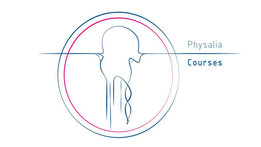
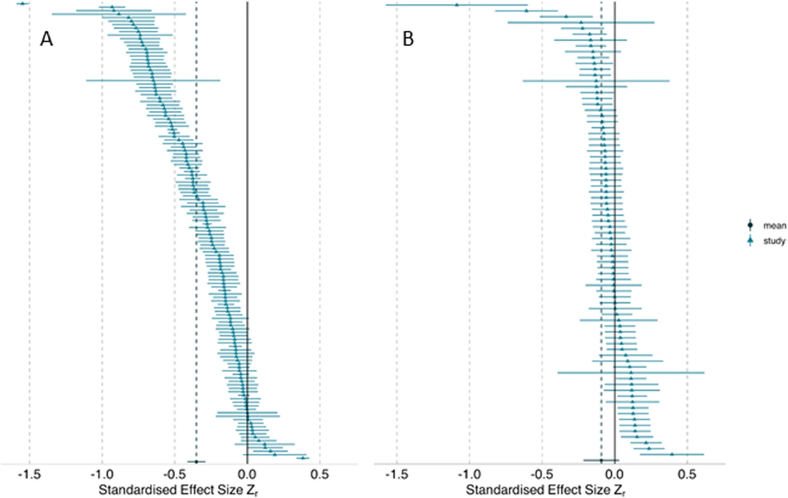
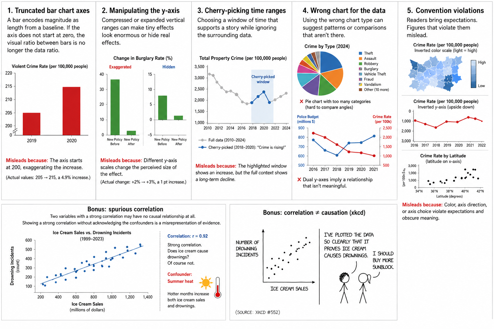
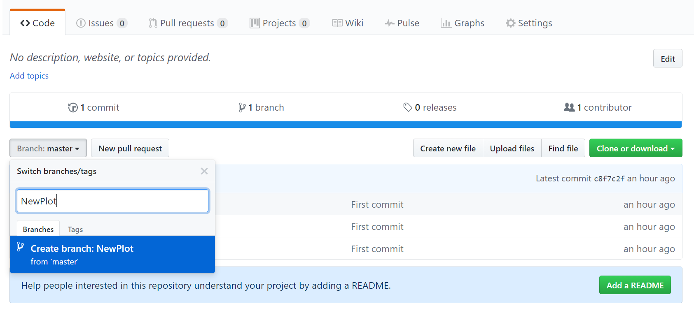
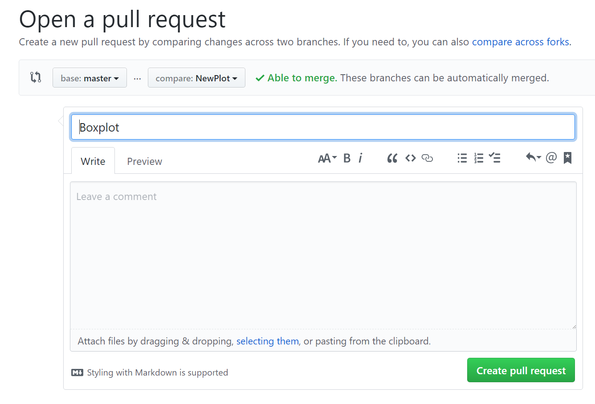
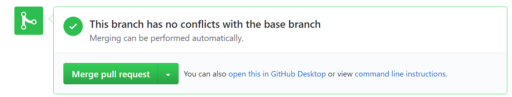

Overview

This course is designed for anyone with basic knowledge of R who is looking to enhance their skills and take their programming abilities to the next level. Each session in the course will be hands-on, providing you with practical examples to work through and apply the concepts you've learned, and lots of support to answer questions and overcome any challenges
0.1 Learning outcomes
- A grounding in R
- Project based workflows
- Tidyverse for data wrangling
- Writing functions and running iterations
- Advanced tidyverse tricks
- GGplot for data visuals
- Making tables with gt
- Making reports with Rmarkdown
- Using Github
0.2 Packages
## Core Packages:
- tidyverse 2.0.0
- palmerpenguins
- here
- janitor
- skimr
- dbplyr
## Data Exploration:
- GGally
- skimr
- dataxray
- naniar
- mice
## Optimizing Functions:
- microbenchmark
- testthat
- profviz
- memoise
- digest
## Parallel Processing
- doParallel
- foreach
- furrr
## Data import
- rvest
- data.table
## Reproducible Reports:
- rmarkdown
- tinytex
## Working with Tables:
- gt
- gtExtras
## Add-ons for Working with ggplot:
- ggbeeswarm
- gghighlight
- ggh4x
- ggpubr
- png
- ggdensity
- ggdist
- ggbump
- ggtext
- ggalt
- ggridges
- geomtextpath
- colorBlindness
- patchwork
## Working with Github:
- gitcreds
- usethis
## Requires devtools for github installation:
- tidychatmodels
0.3 Other software
R version 4.0.0 or later
Rstudio
Rtools (compatible with your computer)
Git (compatible with your computer)
1 (PART*) Day 1
Day 1 Block 1: Project-based workflows
The single most common reason a shared script fails on someone else's computer is
a file path. A line like read.csv("C:/Users/me/thesis/data/penguins.csv") is a
statement about your machine, not about the analysis. The fix is to make the
project, not your home directory, the centre of the universe.
1.1 Why a project
An RStudio (or Positron) project is a folder with an .Rproj marker file. Opening
it does two useful things automatically: it sets the working directory to the
project folder, and it points the file browser there. Every path you write can
then be relative to the project root, which means the project can be zipped,
shared, or moved to another operating system and still run without editing a
single path.
To create one: File → New Project → New Directory → New Project,
name it, and click Create Project. RStudio leaves an .Rproj file in the
folder. Double-clicking that file opens a fresh session pointed at the project.

(#fig:unnamed-chunk-2)A typical R project layout
1.2 Absolute versus relative paths
An absolute path spells out the full location from the root of the disk:
/home/your-username/project/data/raw/penguins.csvIt breaks the moment anyone else opens your code, because nobody else has your directory structure. A relative path is relative to the project root, so it travels with the project:
data/raw/penguins.csv1.3 A sensible layout
Organise each project into its own folder with a predictable structure. The convention we follow all day:
my-project.Rproj
|- data/
| |- raw/ # read-only; never edited by code
| |- processed/ # outputs of cleaning
|- R/
| |- functions/ # function definitions only
| |- scripts/ # or numbered analysis scripts in R/
|- outputs/
| |- figures/
| |- tables/The principle that does the most work here is raw data is read-only. Cleaning
scripts read from data/raw/ and write to data/processed/; they never overwrite
the original. If a clean goes wrong, the source of truth is untouched.
1.3.1 Setting up folders
This can be done in your IDE
Create the following folders using the + New Folder button in the Files tab
2 data/raw
3 data/clean
4 R/scripts
5 outputs
Or it can be done programmatically:
5.0.0.1 BASE R
5.0.0.2 fs package
Run fs::dir_tree() to generate a nicely formatted directory tree and is a great sanity check before and after file manipulation
The fs Hester et al. (2025) package is a great OS agnostic package and one that works safely (it will not overwrite files or folders unless explicitly asked).
5.1 The here package
Even inside a project, paths written with / or \\ can behave differently
across operating systems, and they break if you run code from a subdirectory.
here::here() builds a path from the project root regardless of where the code is
called from or which operating system runs it.
# Fragile: relative to wherever the session happens to sit
raw_data <- readr::read_csv("data/raw/penguins.csv")
# Robust: built from the project root every time
library(here)
raw_data <- readr::read_csv(here("data", "raw", "penguins.csv"))here() finds the root by looking for the .Rproj file (or a .here file), so
it does not depend on the working directory. We recommend using an RStudio project
and here() together. Either alone helps; both together is robust.
Further reading on here: the package’s own rationale at
https://github.com/jennybc/here_here sets out the
argument better than we can here. The short version: a path is part of
your code, and code should not assume it knows where it lives.
5.1.1 Activity: de-path a script
5.2 Blank slates
A clean analysis should not depend on hidden state left over from a previous
session: a package you attached by hand, an object you created interactively, an
option you set and forgot. Many scripts open with rm(list = ls()) in an attempt
to start clean, but this is a weak guarantee. It removes user-created objects but
does not detach packages, reset options, or change the working directory. The
session is still contaminated.
The reliable habit is to restart R (Session → Restart R, or
Ctrl/Cmd+Shift+F10) and rerun the script from the top. If the analysis only runs
correctly from a fresh session, it is reproducible; if it needs objects that exist
only because of something you did by hand earlier, you find out immediately rather
than six months later. Treat the script, not the workspace, as the record of what
you did.
Turn off workspace saving so a stale .RData never loads
silently. In Tools → Global Options → General, set “Save workspace to
.RData on exit” to Never, and untick “Restore .RData
into workspace at startup”. Now every session starts blank, and the only
way to recreate your objects is to run your code.
5.3 renv: pinning package versions
A project that runs today can break next year if a package changes its behaviour.
renv records the exact package versions a project uses, in a project-local
library, so the environment can be reconstructed later or on another machine.
# Once per project: create a project-local library and record current versions
renv::init()
# Install into the project library (not the global one)
renv::install("dplyr")
# After installing or updating anything, record the new state
renv::snapshot()
# On another machine, or after things break, rebuild the recorded environment
renv::restore()renv::status() reports whether the lockfile and the library agree.
renv.lock records only packages actually loaded in the project, so it captures
what you use rather than everything installed.
renv is a large step towards reproducibility, not a
complete guarantee. It records, but does not by itself reinstall, the R
version you used (though the version is noted in
renv.lock). For stronger guarantees, tools such as
rig (switching R versions) or Docker (capturing the whole
environment) exist, but they are beyond today’s scope. For most analysis
projects, a project plus here() plus renv is
enough.
5.3.1 Activity: initialise a project environment
renv::init(), then renv::install("janitor"), then
renv::snapshot(). Open renv.lock in a text editor and find the entry for
janitor. What information is recorded about it, and why would a collaborator need
that exact information to reproduce your analysis?
Where this leaves us. We now have a project that runs anywhere, reads its data by relative path, starts from a blank slate, and pins its package versions. That is the foundation. Everything from here assumes you are working inside such a project. The rest of the day fills it with well-organised analytical code.
Day 1 Block 2: Getting more out of tidyverse
Roughly 55 minutes. We assume the core verbs are familiar and spend the time on the patterns that remove repetition: working across many columns, reshaping, and the nesting idea that the afternoon depends on.
Throughout this block we use a cleaned copy of the data:
library(tidyverse)
library(palmerpenguins)
library(janitor)
penguins_clean <- penguins_raw |>
janitor::clean_names()5.4 A 5-minute refresher (diagnostic, not teaching)
Before the new material, a quick check that the foundation is solid. Predict the output of each line before running it, then run it.
penguins_clean |> dplyr::filter(body_mass_g > 5000) # which rows?
penguins_clean |> dplyr::filter_out(body_mass_g > 5000) # which rows? (Hint this is a new function)
penguins_clean |> dplyr::select(species, body_mass_g) # which columns?
penguins_clean |> dplyr::mutate(mass_kg = body_mass_g / 1000) # new column?
penguins_clean |> dplyr::summarise(m = mean(body_mass_g, na.rm = TRUE), .by = species)If those four lines hold no surprises, you have everything you need for the day.
Note the modern .by = species argument to summarise(): it groups for that one
operation and returns an ungrouped result, which avoids the classic forgotten
ungroup() bug.
5.5 Working across many columns with across()
A recurring issue in analysis scripts is the same operation written out once per column:
penguins_clean |>
dplyr::summarise(
mean_body_mass = mean(body_mass_g, na.rm = TRUE),
mean_flipper_length = mean(flipper_length_mm, na.rm = TRUE),
.by = species
)across() says "apply this function to these columns" in one place. It works only
inside a dplyr verb, and takes three arguments worth knowing: .cols (which
columns, using tidy-selection), .fns (the function to apply), and .names (how
to name the results).
penguins_clean |>
dplyr::summarise(
dplyr::across(
.cols = where(is.numeric),
.fns = \(x) mean(x, na.rm = TRUE),
.names = "mean_{.col}"
),
.by = species
)Two modern points. The function is written as \(x) mean(x, na.rm = TRUE), the
R 4.1 anonymous-function shorthand, rather than the older ~ mean(.x, na.rm = T)
formula-lambda you will still see in the wild. And na.rm = TRUE is spelled out;
T and F are ordinary variables that can be reassigned, so they are best
avoided in code you intend to keep.
The same pattern coerces a set of columns to factors:
penguins_clean |>
dplyr::mutate(
dplyr::across(.cols = c(species, island),
.fns = as.factor)
) |>
dplyr::select(where(is.factor)) |>
dplyr::glimpse()5.5.1 across()'s row-wise cousins: if_any() and if_all()
To filter rows on a condition applied across several columns, use if_any() (the
condition holds for at least one of the columns) or if_all() (it holds for
all of them).
# Keep rows where ALL numeric measurements are present (no NA)
penguins_clean |>
dplyr::filter(
dplyr::if_all(.cols = where(is.numeric), .fns = \(x) !is.na(x))
)
The line above reads slightly backwards at first.
if_all() asks whether all the chosen columns
satisfy “is not NA”. Try swapping if_all for
if_any, and try removing the !, and predict
each result before running it.
5.5.2 Activity: one summary, every numeric column
summarise() that returns, for each species, both the mean and the
standard deviation of every numeric column, with names like mean_body_mass_g and
sd_body_mass_g. Hint: .fns can be a named list of functions.
5.6 A note on factors
Categorical variables are often better as factors than as character strings, and
forcats (part of the tidyverse) provides verbs for managing their levels.
penguins_clean |>
dplyr::mutate(
# collapse rare levels into "Other", keeping the 2 most frequent
island_lumped = forcats::fct_lump_n(island, n = 2),
# order species by their mean body mass, for sensible plot ordering
species = forcats::fct_reorder(species, body_mass_g, .fun = mean,
na.rm = TRUE)
)fct_reorder() is the one to remember: it reorders a factor's levels by a summary
of another variable, which is what you almost always want for an ordered axis or
legend.
5.7 Reshaping with pivot_longer() and pivot_wider()
Tidy data has one variable per column and one observation per row. Data collected in the field often violates this, most commonly by spreading one variable across several columns. Consider weekly observation counts:
peng_obs <- tibble::tibble(
penguin_id = c("N15A1", "N15A2", "N18A1", "N71A2"),
wk1 = c(1, 2, 4, 5),
wk2 = c(3, 4, 1, 0),
wk3 = c(0, 0, 2, 0)
)This is untidy: wk1, wk2, wk3 are three columns holding one variable (the
count), recorded at three values of another variable (the week).
pivot_longer() repairs it:
peng_obs |>
tidyr::pivot_longer(
cols = wk1:wk3,
names_to = "week",
names_prefix = "wk", # strip the "wk" so "wk2" becomes "2"
names_transform = as.integer, # and make week an integer, not a string
values_to = "observations"
)pivot_wider() is the inverse, and is most useful for turning a tidy summary into
a human-readable table:
penguins_clean |>
dplyr::summarise(mean = mean(body_mass_g, na.rm = TRUE),
.by = c(species, island)) |>
tidyr::pivot_wider(
names_from = island,
values_from = mean,
names_prefix = "mean_"
)
Keep analysis in long (tidy) form and pivot wide only at the very
end, for display. Long data is what ggplot2 and the
modelling functions expect; wide data is for human eyes in a printed
table.
5.8 Slicing rows
slice() and its helpers select rows by position or by an ordering, which is
often cleaner than a filter() with an arithmetic threshold.
# The three heaviest penguins per species
penguins_clean |>
dplyr::slice_max(order_by = body_mass_g, n = 3, by = species) |>
dplyr::select(species, body_mass_g)The relatives are slice_head(), slice_tail(), slice_min() and
slice_sample(). The modern by = argument applies the slice within each group
without a separate group_by()/ungroup() pair.
5.9 The bridge to the afternoon: nesting
The afternoon's iteration work rests on one idea introduced here. A tibble cell
usually holds a single value. It can instead hold an entire tibble.
group_by() followed by nest() collapses each group's rows into one cell:
penguins_clean |>
tidyr::drop_na(body_mass_g, flipper_length_mm) |>
dplyr::group_by(species) |>
tidyr::nest()
# # A tibble: 3 x 2
# species data
# <chr> <list>
# 1 Adelie <tibble [...]>
# 2 Gentoo <tibble [...]>
# 3 Chinstrap <tibble [...]>The data column is a list-column: each cell is a tibble holding one species'
observations. This is not exotic; it is an ordinary column whose values happen to
be tibbles. We do nothing further with it now. Hold the picture in mind: in Block 4
we will apply a function to each of those cells and fit one model per species in a
single pipeline.
5.9.1 Reading many files (a preview of iteration)
The same nesting and iteration ideas read a folder of files at once. Suppose a directory holds one CSV per sampling site:
# List the files (full paths, so they can be opened from anywhere)
csv_files <- list.files(
path = here::here("data", "many_files"),
pattern = "\\.csv$",
full.names = TRUE
)
# Read every file and stack the results into one tibble.
# The modern idiom is map() then list_rbind(); the older map_dfr() is superseded.
all_sites <- csv_files |>
purrr::map(\(f) readr::read_csv(f, show_col_types = FALSE)) |>
purrr::list_rbind()map() reads each file into a list of tibbles; list_rbind() binds that list
into one tibble. We will unpack map() properly in Block 4. For now, notice that
"do the same thing to every element of a collection" is the shape of almost all
the work ahead.
Where this leaves us. We can now operate on many columns at once, reshape between long and wide, slice by order, and collapse groups into list-columns. The data-handling toolkit is complete. The rest of the day is about the code that acts on the data: functions, iteration, and generalisation.
5.9.2 Other key packages
5.10 Data validation with tidylog and assertr
Robust data analysis depends on making every transformation visible and ensuring assumptions about the data are actually met. Two useful tools for this are tidylog, which reports what dplyr is doing, and assertr, which enforces explicit checks during a pipeline.
We’ll use a small simulated dataset of insect reproduction to illustrate both ideas.
library(tidyverse)
library(dplyr)
library(tidylog)
library(assertr)
set.seed(123)
n <- 200
female_egg_data <- tibble(
female_id = 1:n,
treatment = rep(c("A","B"), times = 100),
age_days = sample(1:30, n, replace = TRUE),
eggs_laid = rpois(n, lambda = 50),
eggs_hatched = pmin(eggs_laid, rpois(n, lambda = 45)),
body_mass = rnorm(n, mean = 0.2, sd = 5)
)
# introduce a few intentional problems
female_egg_data$age_days[1] <- 0
female_egg_data$eggs_laid[2] <- 120
female_egg_data$eggs_hatched[3] <- female_egg_data$eggs_laid[3] + 55.11 Making transformations visible with tidylog
When tidylog is loaded, standard dplyr verbs report what they change. This is particularly helpful in pipelines where rows are filtered or variables are modified without otherwise obvious trace.
female_egg_data_clean <- female_egg_data |>
filter(age_days > 0) |>
mutate(eggs_per_day = eggs_laid / age_days)Instead of silently dropping rows or creating variables, the console output summarises exactly what was removed or added, making the workflow easier to audit and debug.
5.12 Enforcing assumptions with assertr
While tidylog improves transparency, assertr ensures that data meet expectations before analysis continues.
The core idea is that validation lives inside your pipeline, right next to the data it is checking. If an assertion fails, the pipeline stops and tells you exactly what went wrong and in which rows. If everything passes, execution continues as normal.
5.13 Data validation with assertr
Again, we will use the female_egg_data_clean dataset.
## Rows: 19
## Columns: 6
## $ female_id <int> 2, 3, 4, 5, 6, 7, 8, 9, 10, 11, 12, 13, 14, 15, 16, 17, 1…
## $ treatment <chr> "B", "A", "B", "A", "B", "A", "B", "A", "B", "A", "B", "A…
## $ age_days <dbl> 19, 14, 3, 10, 18, 22, 11, 5, 20, 14, 22, 25, 26, 27, 5, …
## $ eggs_laid <dbl> 120, 50, 46, 59, 55, 49, 44, 42, 47, 44, 57, 48, 41, 41, …
## $ eggs_hatched <dbl> 52, 55, 46, 50, 43, 49, 38, 42, 39, 44, 46, 44, 41, 41, 4…
## $ eggs_per_day <dbl> 6.315789, 3.571429, 15.333333, 5.900000, 3.055556, 2.2272…5.13.1 verify() — check a logical condition
verify() is the simplest function. It evaluates a logical expression against the whole dataframe and stops if it is FALSE. Think of it as stopifnot() with better error messages and pipeline compatibility.
# Check that all rows of eggs laid are positive — this should pass
female_egg_data_clean |>
verify(eggs_laid > 0)| female_id | treatment | age_days | eggs_laid | eggs_hatched | eggs_per_day |
|---|---|---|---|---|---|
| 2 | B | 19 | 120 | 52 | 6.315790 |
| 3 | A | 14 | 50 | 55 | 3.571429 |
| 4 | B | 3 | 46 | 46 | 15.333333 |
| 5 | A | 10 | 59 | 50 | 5.900000 |
| 6 | B | 18 | 55 | 43 | 3.055556 |
| 7 | A | 22 | 49 | 49 | 2.227273 |
| 8 | B | 11 | 44 | 38 | 4.000000 |
| 9 | A | 5 | 42 | 42 | 8.400000 |
| 10 | B | 20 | 47 | 39 | 2.350000 |
| 11 | A | 14 | 44 | 44 | 3.142857 |
| 12 | B | 22 | 57 | 46 | 2.590909 |
| 13 | A | 25 | 48 | 44 | 1.920000 |
| 14 | B | 26 | 41 | 41 | 1.576923 |
| 15 | A | 27 | 41 | 41 | 1.518519 |
| 16 | B | 5 | 47 | 43 | 9.400000 |
| 17 | A | 19 | 47 | 47 | 2.473684 |
| 18 | B | 27 | 49 | 34 | 1.814815 |
| 19 | A | 25 | 56 | 37 | 2.240000 |
| 20 | B | 28 | 48 | 46 | 1.714286 |
# Check something that will fail — no female should produce more than 1000 offspring
female_egg_data_clean |>
verify(eggs_hatched > 1000)## Error: assertr stopped execution## verification [eggs_hatched > 1000] failed! (19 failures)
##
## verb redux_fn predicate column index value
## 1 verify NA eggs_hatched > 1000 NA 1 NA
## 2 verify NA eggs_hatched > 1000 NA 2 NA
## 3 verify NA eggs_hatched > 1000 NA 3 NA
## 4 verify NA eggs_hatched > 1000 NA 4 NA
## 5 verify NA eggs_hatched > 1000 NA 5 NA
## 6 verify NA eggs_hatched > 1000 NA 6 NA
## 7 verify NA eggs_hatched > 1000 NA 7 NA
## 8 verify NA eggs_hatched > 1000 NA 8 NA
## 9 verify NA eggs_hatched > 1000 NA 9 NA
## 10 verify NA eggs_hatched > 1000 NA 10 NA
## 11 verify NA eggs_hatched > 1000 NA 11 NA
## 12 verify NA eggs_hatched > 1000 NA 12 NA
## 13 verify NA eggs_hatched > 1000 NA 13 NA
## 14 verify NA eggs_hatched > 1000 NA 14 NA
## 15 verify NA eggs_hatched > 1000 NA 15 NA
## 16 verify NA eggs_hatched > 1000 NA 16 NA
## 17 verify NA eggs_hatched > 1000 NA 17 NA
## 18 verify NA eggs_hatched > 1000 NA 18 NA
## 19 verify NA eggs_hatched > 1000 NA 19 NA
verify() operates on the whole dataframe. It is good for
checking structural properties: expected number of rows, expected
columns, range constraints you know in advance.
5.13.2 assert() — check a predicate column by column
assert() applies a predicate function to one or more columns and reports which rows fail. This is more useful for checking individual variables.
# Check that eggs_hatched is within a plausible biological range
female_egg_data_clean |>
assert(within_bounds(30, 60), eggs_hatched)
# Check that treatment only contains expected values
female_egg_data_clean |>
assert(in_set("B", "A", "Gentoo"), treatment)
# Check that age_days has no NAs
female_egg_data_clean |>
assert(not_na, age_days)| female_id | treatment | age_days | eggs_laid | eggs_hatched | eggs_per_day |
|---|---|---|---|---|---|
| 2 | B | 19 | 120 | 52 | 6.315790 |
| 3 | A | 14 | 50 | 55 | 3.571429 |
| 4 | B | 3 | 46 | 46 | 15.333333 |
| 5 | A | 10 | 59 | 50 | 5.900000 |
| 6 | B | 18 | 55 | 43 | 3.055556 |
| 7 | A | 22 | 49 | 49 | 2.227273 |
| 8 | B | 11 | 44 | 38 | 4.000000 |
| 9 | A | 5 | 42 | 42 | 8.400000 |
| 10 | B | 20 | 47 | 39 | 2.350000 |
| 11 | A | 14 | 44 | 44 | 3.142857 |
| 12 | B | 22 | 57 | 46 | 2.590909 |
| 13 | A | 25 | 48 | 44 | 1.920000 |
| 14 | B | 26 | 41 | 41 | 1.576923 |
| 15 | A | 27 | 41 | 41 | 1.518519 |
| 16 | B | 5 | 47 | 43 | 9.400000 |
| 17 | A | 19 | 47 | 47 | 2.473684 |
| 18 | B | 27 | 49 | 34 | 1.814815 |
| 19 | A | 25 | 56 | 37 | 2.240000 |
| 20 | B | 28 | 48 | 46 | 1.714286 |
| female_id | treatment | age_days | eggs_laid | eggs_hatched | eggs_per_day |
|---|---|---|---|---|---|
| 2 | B | 19 | 120 | 52 | 6.315790 |
| 3 | A | 14 | 50 | 55 | 3.571429 |
| 4 | B | 3 | 46 | 46 | 15.333333 |
| 5 | A | 10 | 59 | 50 | 5.900000 |
| 6 | B | 18 | 55 | 43 | 3.055556 |
| 7 | A | 22 | 49 | 49 | 2.227273 |
| 8 | B | 11 | 44 | 38 | 4.000000 |
| 9 | A | 5 | 42 | 42 | 8.400000 |
| 10 | B | 20 | 47 | 39 | 2.350000 |
| 11 | A | 14 | 44 | 44 | 3.142857 |
| 12 | B | 22 | 57 | 46 | 2.590909 |
| 13 | A | 25 | 48 | 44 | 1.920000 |
| 14 | B | 26 | 41 | 41 | 1.576923 |
| 15 | A | 27 | 41 | 41 | 1.518519 |
| 16 | B | 5 | 47 | 43 | 9.400000 |
| 17 | A | 19 | 47 | 47 | 2.473684 |
| 18 | B | 27 | 49 | 34 | 1.814815 |
| 19 | A | 25 | 56 | 37 | 2.240000 |
| 20 | B | 28 | 48 | 46 | 1.714286 |
| female_id | treatment | age_days | eggs_laid | eggs_hatched | eggs_per_day |
|---|---|---|---|---|---|
| 2 | B | 19 | 120 | 52 | 6.315790 |
| 3 | A | 14 | 50 | 55 | 3.571429 |
| 4 | B | 3 | 46 | 46 | 15.333333 |
| 5 | A | 10 | 59 | 50 | 5.900000 |
| 6 | B | 18 | 55 | 43 | 3.055556 |
| 7 | A | 22 | 49 | 49 | 2.227273 |
| 8 | B | 11 | 44 | 38 | 4.000000 |
| 9 | A | 5 | 42 | 42 | 8.400000 |
| 10 | B | 20 | 47 | 39 | 2.350000 |
| 11 | A | 14 | 44 | 44 | 3.142857 |
| 12 | B | 22 | 57 | 46 | 2.590909 |
| 13 | A | 25 | 48 | 44 | 1.920000 |
| 14 | B | 26 | 41 | 41 | 1.576923 |
| 15 | A | 27 | 41 | 41 | 1.518519 |
| 16 | B | 5 | 47 | 43 | 9.400000 |
| 17 | A | 19 | 47 | 47 | 2.473684 |
| 18 | B | 27 | 49 | 34 | 1.814815 |
| 19 | A | 25 | 56 | 37 | 2.240000 |
| 20 | B | 28 | 48 | 46 | 1.714286 |
You can check multiple columns at once by listing them:
# Check both egg measurements are within plausible ranges
female_egg_data_clean |>
assert(within_bounds(0, 150), eggs_laid, eggs_hatched)| female_id | treatment | age_days | eggs_laid | eggs_hatched | eggs_per_day |
|---|---|---|---|---|---|
| 2 | B | 19 | 120 | 52 | 6.315790 |
| 3 | A | 14 | 50 | 55 | 3.571429 |
| 4 | B | 3 | 46 | 46 | 15.333333 |
| 5 | A | 10 | 59 | 50 | 5.900000 |
| 6 | B | 18 | 55 | 43 | 3.055556 |
| 7 | A | 22 | 49 | 49 | 2.227273 |
| 8 | B | 11 | 44 | 38 | 4.000000 |
| 9 | A | 5 | 42 | 42 | 8.400000 |
| 10 | B | 20 | 47 | 39 | 2.350000 |
| 11 | A | 14 | 44 | 44 | 3.142857 |
| 12 | B | 22 | 57 | 46 | 2.590909 |
| 13 | A | 25 | 48 | 44 | 1.920000 |
| 14 | B | 26 | 41 | 41 | 1.576923 |
| 15 | A | 27 | 41 | 41 | 1.518519 |
| 16 | B | 5 | 47 | 43 | 9.400000 |
| 17 | A | 19 | 47 | 47 | 2.473684 |
| 18 | B | 27 | 49 | 34 | 1.814815 |
| 19 | A | 25 | 56 | 37 | 2.240000 |
| 20 | B | 28 | 48 | 46 | 1.714286 |
5.13.3 Built-in predicates
assertr ships with several predicate functions designed to work with assert():
| Predicate | What it checks | Example |
|---|---|---|
| within_bounds(a, b) | Value falls within [a, b] |
within_bounds(0, 100)
|
| not_na | Value is not NA |
not_na
|
| is_uniq | Value is unique across rows |
is_uniq
|
| in_set(...) | Value belongs to an expected set |
in_set("A", "B", "C")
|
| within_n_sds(n) | Value is within n standard deviations of the mean |
within_n_sds(3)
|
| within_n_mads(n) | Value is within n median absolute deviations (more robust to outliers) |
within_n_mads(3)
|
within_n_sds() and within_n_mads() are particularly useful for flagging potential outliers without hard-coding exact bounds:
# Flag any eggs_laid values more than 3 SDs from the mean
female_egg_data_clean |>
assert(within_n_sds(3), body_mass)## Error in `dplyr::select()`:
## ! Can't subset columns that don't exist.
## ✖ Column `body_mass` doesn't exist.# within_n_mads is more robust to skewed distributions
female_egg_data_clean |>
assert(within_n_mads(3), body_mass)## Error in `dplyr::select()`:
## ! Can't subset columns that don't exist.
## ✖ Column `body_mass` doesn't exist.5.13.4 insist() — generate bounds from the data itself
insist() is like assert(), but the predicate is applied to a function of the data rather than a fixed bound. This is useful when you want to flag statistical outliers without specifying exact cutoffs in advance:
# Same as within_n_sds but written through insist()
female_egg_data_clean |>
insist(within_n_sds(3), eggs_laid)## Error: assertr stopped execution## Column 'eggs_laid' violates assertion 'within_n_sds(3)' 1 time
## verb redux_fn predicate column index value
## 1 insist NA within_n_sds(3) eggs_laid 1 1205.13.5 assert_rows() — check row-level conditions
Sometimes the condition is not about a single column but about a combination of values across columns in the same row. assert_rows() handles this. It applies a row-reduction function first, then checks the result.
# Check that no row has more than 2 missing values across the numeric columns
female_egg_data_clean |>
assert_rows(num_row_NAs, within_bounds(0, 2),
eggs_laid, eggs_hatched, age_days, body_mass)## Error in `dplyr::select()`:
## ! Can't subset columns that don't exist.
## ✖ Column `body_mass` doesn't exist.num_row_NAs counts the number of NAs per row across the specified columns. You can supply your own row-reduction function — it just needs to return a single value per row.
5.13.6 Chaining assertions
The real power comes from chaining multiple checks together in a single pipeline. All assertions run before any error is thrown, so you get a complete picture of what is wrong rather than having to fix one thing at a time.
female_egg_data_clean %>%
# Structural checks
verify(ncol(.) == 7) %>% #adding %>% maggritr pipe to use (.)
verify(nrow(.) > 0) |>
# Column-level checks
assert(in_set("A", "B"), treatment) |>
assert(within_bounds(0, 135), eggs_laid) |>
assert(within_bounds(0, 32), age_days) |>
assert(within_bounds(0, 10), body_mass) ## Error: assertr stopped execution## verification [ncol(.) == 7] failed! (1 failure)
##
## verb redux_fn predicate column index value
## 1 verify NA ncol(.) == 7 NA 1 NA
The body mass column in the data contains negative values, which is
why within_bounds() fails. This is a good example of why
assertions are useful: they force you to make explicit decisions about
what you consider valid data.
5.13.7 Using assertr in a cleaning pipeline
The natural place for assertr checks is immediately after loading raw data and again after cleaning (here with the penguins dataset). This gives you confidence that:
- The raw data is what you expect before you do anything to it
- The cleaned data is valid before any analysis runs
# ── Load and validate raw data ─────────────────────────────────────────────────
dat_raw <- read_csv(here("data", "raw", "penguins_raw.csv")) |>
# Validate structure before touching anything
verify(ncol(.) >= 8) |>
assert(in_set("Adelie", "Chinstrap", "Gentoo"), species) |>
assert(within_bounds(2500, 6500), body_mass_g) |>
# ── Clean ──────────────────────────────────────────────────────────────────────
filter(!is.na(sex)) |>
mutate(species = factor(species)) |>
# ── Validate cleaned data ──────────────────────────────────────────────────────
assert(not_na, bill_length_mm, bill_depth_mm, flipper_length_mm, body_mass_g) |>
verify(nrow(.) > 100)
cat("Data validated and cleaned:", nrow(dat_raw), "rows retained\n")If this pipeline runs without error, you have documented proof that your data meets your stated expectations at the point it enters the analysis.
5.14 Summary
Together, tidylog and assertr support a workflow where:
- every data manipulation step is explicitly reported
- key assumptions are tested during the pipeline
- failures are caught early and clearly explained
This combination helps ensure that analysis code is both transparent and self-validating, reducing the risk of unnoticed data issues propagating into results.
Day 1 Block 3: Writing functions
Roughly 75 minutes. The first 25 teach what a function is; the rest apply it to the running example, turning a messy script into organised, tested code. The testing coda at the end is the part to shorten if time is short.
5.15 Part A: the anatomy of a function
R lets you define your own functions with function(). The shape is always the
same: a name, some arguments, a body, and a returned value.
my_function <- function(arg1, arg2) {
# what the function does, in a comment
result <- arg1 + arg2
return(result)
}- Give the function a name and assign
function(...)to it. - Name the inputs in the parentheses.
- Put the work inside the braces.
- Use
return()to say what comes out (R also returns the last expression implicitly, but an explicitreturn()is clearer while learning).
A minimal example:
add_one <- function(x) {
return(x + 1)
}
add_one(10) # 11
add_one(c(1, 5, 10)) # 2 6 11 -- it vectorises, because R does
R 4.1 added a shorthand for short functions: (x) x + 1
is the same as function(x) x + 1, with no braces and no
return(). We use (x) throughout the day for
one-line callbacks, and the full function() form for
anything longer.
5.15.1 A note on environments
When a function runs, it makes its own environment. Arguments and any variables created inside live there and vanish when the function returns. The function can see the global environment, but assignments inside it do not leak out:
x <- 1
fn <- function(y) {
x <- x * 2 # a local copy; the global x is untouched
x + y
}
fn(2) # 4
x # still 1This isolation is a feature: a function's behaviour depends only on its arguments, not on whatever happens to be lying around in your session. That is precisely why functions are more reproducible than loose script lines.
5.15.2 Arguments and defaults
An argument can have a default, used when the caller does not supply one:
greet <- function(name = "you") {
paste("Good morning,", name)
}
greet() # "Good morning, you"
greet("Phil") # "Good morning, Sam"fahr_to_celsius() that converts Fahrenheit to Celsius. The
conversion is (fahr - 32) * 5 / 9.
5.15.3 Documenting a function
A function with no documentation is a puzzle for your future self. The
lightweight habit is a comment block stating what the function does, what each
argument is, and what it returns. The fuller habit, which we adopt for functions
that live in R/functions/, is roxygen2 format: documentation lines beginning
#', placed directly above the function.
#' Convert Fahrenheit to Celsius
#'
#' # a roxygen2 comment line (note the apostrophe)
#' @param fahr Numeric. Temperature in degrees Fahrenheit. # documents one argument
#' @return Numeric. Temperature in degrees Celsius. # documents what comes back
#' @examples # starts an examples block
#' fahr_to_celsius(32) # 0
fahr_to_celsius <- function(fahr) {
(fahr - 32) * 5 / 9
}You do not need to build a package or run roxygenise() to benefit from this. The
block is readable as plain text, and writing it forces you to state the function's
contract: what it expects and what it promises.
5.15.4 Flow control, and a vectorisation trap
Functions often need to choose between values. The base tools are if/else for
a single condition and ifelse() (or the tidyverse dplyr::if_else()) for a
vectorised one.
The trap: if evaluates only the first element of a vector and, in current R,
errors if given a longer one. For element-wise choices use ifelse():
For several conditions, dplyr::case_when() is far clearer than nested ifelse():
temperature <- c(10, 25, 5, 30, 15)
dplyr::case_when(
temperature < 10 ~ "Cold",
temperature >= 10 & temperature < 25 ~ "Moderate",
temperature >= 25 ~ "Hot",
.default = "Unknown"
)A worked conditional function: report a p-value in the conventional style, "p <
0.001" below the threshold and "p = 0.XXX" otherwise. The naive version uses if
and breaks on a vector; the fix is the vectorised if_else().
#' Format a p-value for reporting
#'
#' @param p Numeric. P-value(s) to format.
#' @param digits Integer. Decimal places. Default 3.
#' @return Character. "p < 0.001" or "p = X.XXX".
report_p <- function(p, digits = 3) {
dplyr::if_else(
p < 0.001,
"p < 0.001",
paste("p =", round(p, digits))
)
}
report_p(c(0.0005, 0.045)) # "p < 0.001" "p = 0.045"
Rule of thumb. If you have copied a line and changed
one small thing in it more than about three times, write a function
instead. Fewer lines, less repetition, and one place to make a change.
And keep function definitions in a separate script
(R/functions/), sourced into the analysis. This sets up the
refactor we do next.
5.16 Part B: the starting point
We now meet the analysis the rest of the day improves. Set up the data file once:
if (!dir.exists(here::here("data"))) dir.create(here::here("data"))
readr::write_csv(
palmerpenguins::penguins,
here::here("data", "penguins.csv")
)The goal, restated: fit body_mass_g ~ flipper_length_mm for each species, with a
coefficient table and a multi-panel figure. Here is how that analysis is often
written, by copy-paste:
# analysis.R -- pre-refactor
library(tidyverse)
library(broom)
library(here)
penguins_raw <- readr::read_csv(here("data", "penguins.csv"),
show_col_types = FALSE)
penguins_clean <- penguins_raw |>
tidyr::drop_na(body_mass_g, flipper_length_mm, species)
# Adelie ----
adelie <- penguins_clean |> dplyr::filter(species == "Adelie")
mod_adelie <- lm(body_mass_g ~ flipper_length_mm, data = adelie)
coefs_adelie <- broom::tidy(mod_adelie, conf.int = TRUE, conf.level = 0.95)
coefs_adelie$species <- "Adelie"
p_adelie <- ggplot(adelie,
aes(flipper_length_mm, body_mass_g)) +
geom_point(alpha = 0.6) +
geom_smooth(method = "lm") +
labs(title = "Adelie", x = "Flipper length (mm)", y = "Body mass (g)")
# Gentoo ----
gentoo <- penguins_clean |> dplyr::filter(species == "gentoo")
mod_gentoo <- lm(body_mass_g ~ flipper_length_mm, data = gentoo)
coefs_gentoo <- broom::tidy(mod_gentoo, conf.int = TRUE, conf.level = 0.90)
coefs_gentoo$species <- "Gentoo"
p_gentoo <- ggplot(gentoo,
aes(flipper_length_mm, body_mass_g)) +
geom_point(alpha = 0.6) +
geom_smooth(method = "lm") +
labs(title = "Gentoo", x = "Flipper length (mm)", y = "Body mass (g)")
# Chinstrap ----
chinstrap <- penguins_clean |> dplyr::filter(species == "Chinstrap")
mod_chinstrap <- lm(body_mass_g ~ flipper_length_mm, data = chinstrap)
coefs_chinstrap <- broom::tidy(mod_chinstrap, conf.int = TRUE, conf.level = 0.95)
coefs_chinstrap$species <- "Chinstrap"
p_chinstrap <- ggplot(chinstrap,
aes(flipper_length_mm, body_mass_g)) +
geom_point(alpha = 0.6) +
geom_smooth(method = "lm") +
labs(title = "Chinstrap", x = "Flipper length (mm)")
all_coefs <- rbind(coefs_adelie, coefs_gentoo, coefs_chinstrap)5.16.1 Activity: find the bugs
5.16.2 What is actually wrong
The bugs are symptoms. The structural problems are the disease:
- Three near-identical blocks. The species blocks share more than 90 per cent of their code. Every change must be made in three places.
- Object names by suffix.
adelie,mod_adelie,coefs_adelie,p_adelie, four objects per species, filling the namespace with pairs a human must track. - Implicit ordering. The script must run top to bottom. Change
penguins_cleanand rerun only the modelling block, and the figures fall out of sync with the coefficients. - No verification. The filter typo and the CI mismatch both pass silently.
Filazzola and Lortie (2022), writing on clean code in ecology, frame this as a scientific communication problem rather than a matter of taste: unclear code miscommunicates what the analysis did. Small, named functions both communicate intent and constrain what the code can do wrong.
5.17 Part C: from script to function
The principled refactor: find what varies across the repeated blocks and make it an argument; everything that stays the same becomes the function body. Across the three species blocks, only the species name truly varies. The formula, the confidence level and the tidying are constant.
5.17.1 Stage 1: extract what varies
# R/functions/modelling_functions.R
fit_species_model <- function(data, sp) {
data_sp <- dplyr::filter(data, species == sp)
model <- lm(body_mass_g ~ flipper_length_mm, data = data_sp)
broom::tidy(model, conf.int = TRUE)
}Check it reproduces the original before trusting it:
source(here::here("R", "functions", "modelling_functions.R"))
new_coefs_adelie <- fit_species_model(penguins_clean, "Adelie")
all.equal(
new_coefs_adelie,
broom::tidy(mod_adelie, conf.int = TRUE)
)
# [1] TRUEall.equal() returns TRUE on a match (within numerical tolerance) or a
description of the differences otherwise. It is the right quick interactive check
when refactoring.
5.17.2 Stage 2: handle the obvious failure
The Gentoo typo ("gentoo" instead of "Gentoo") silently filtered to zero rows. lm() then failed with:
Error in `lm.fit()`:
! 0 (non-NA) casesThis error points at the model, not the filter where the real problem was. Without input validation, you are left hunting backwards through the code to find why the data is empty.
A well-designed function catches this before anything goes wrong, using stop() to abort immediately with a message that names the actual problem:
fit_species_model <- function(data, sp) {
# Validate sp before doing any work -- fail fast with a useful messag
if (!sp %in% unique(data$species)) {
stop(
"Species '", sp, "' is not in the data. ",
"Available species: ",
paste(sort(unique(data$species)), collapse = ", ")
)
}
data_sp <- dplyr::filter(data, species == sp)
model <- lm(body_mass_g ~ flipper_length_mm, data = data_sp)
broom::tidy(model, conf.int = TRUE) |>
dplyr::mutate(species = sp, .before = 1)
}Now the same typo produces:
Error in `fit_species_model()`:
! Species 'gentoo' is not in the data. Available species: Adelie, Chinstrap, GentooThree things make this a good error message:
- It says what went wrong — the species name was not recognised.
- It shows what was received —
'gentoo', so you can see the typo immediately. - It says how to fix it — lists the valid options.
fit_species_model(penguins_clean, "gentoo")
# Error in fit_species_model(penguins_clean, "gentoo"):
# Species 'gentoo' is not in the data.
# Available species: Adelie, Chinstrap, GentooThe error arrives immediately, names the problem, and lists the valid options.
5.17.3 Stage 3: document and add a default
Documentation describes a thing that exists, so we write it last, once the function has settled:
# R/functions/modelling_functions.R
#' Fit body mass ~ flipper length for one species
#'
#' @param data A data frame with `species`, `body_mass_g` and
#' `flipper_length_mm`. NA rows on these should be removed first.
#' @param sp Character of length 1. Species name, spelled exactly as in
#' `data$species`.
#' @param conf_level Numeric in (0, 1). Confidence level for the
#' coefficient intervals. Default 0.95.
#' @return A tibble of tidied coefficients with a `species` column prepended.
#' @examples
#' fit_species_model(penguins_clean, "Adelie")
fit_species_model <- function(data, sp, conf_level = 0.95) {
if (!sp %in% unique(data$species)) {
stop(
"Species '", sp, "' is not in the data. ",
"Available species: ",
paste(sort(unique(data$species)), collapse = ", ")
)
}
data_sp <- dplyr::filter(data, species == sp)
model <- lm(body_mass_g ~ flipper_length_mm, data = data_sp)
broom::tidy(model, conf.int = TRUE, conf.level = conf_level) |>
dplyr::mutate(species = sp, .before = 1)
}This is the mature function: one job, validated input, a sensible default, a predictable output shape, and documentation a reader can use without running it.
5.17.4 Extract the plot too
The missing-y-label bug was a plotting bug, so extract the plot the same way and write its labels once:
# R/functions/plotting_functions.R
#' Scatter of body mass against flipper length for one species
#'
#' @param data A data frame with `species`, `body_mass_g`, `flipper_length_mm`.
#' @param sp Character of length 1. Species to plot.
#' @return A ggplot object.
make_scatter_plot <- function(data, sp) {
data |>
dplyr::filter(species == sp) |>
ggplot2::ggplot(aes(flipper_length_mm, body_mass_g)) +
ggplot2::geom_point(alpha = 0.6) +
ggplot2::geom_smooth(method = "lm") +
ggplot2::labs(title = sp, x = "Flipper length (mm)", y = "Body mass (g)") +
ggplot2::theme_minimal()
}5.17.5 The refactored script
The three near-identical blocks collapse to three calls each:
# analysis.R -- refactored
source(here::here("R", "functions", "modelling_functions.R"))
source(here::here("R", "functions", "plotting_functions.R"))
coefs_adelie <- fit_species_model(penguins_clean, "Adelie")
coefs_gentoo <- fit_species_model(penguins_clean, "Gentoo")
coefs_chinstrap <- fit_species_model(penguins_clean, "Chinstrap")
all_coefs <- dplyr::bind_rows(coefs_adelie, coefs_gentoo, coefs_chinstrap)
p_adelie <- make_scatter_plot(penguins_clean, "Adelie")
p_gentoo <- make_scatter_plot(penguins_clean, "Gentoo")
p_chinstrap <- make_scatter_plot(penguins_clean, "Chinstrap")The repetition is not gone (there are still three calls each), but every operation now lives in one named, validated, documented place. Block 4 removes the remaining repetition with iteration.
5.17.6 Activity: when not to write a function
5.17.7 Where functions live
Three conventions we follow for the rest of the day:
- Function definitions live in
R/functions/, grouped thematically (modelling_functions.R,plotting_functions.R), not one file per function. - Function files contain only definitions: no
library(), nosource(), no top-level executable code. A function file should be sourceable with no side effects. - Analysis scripts
source()the function files and call the functions. Scripts orchestrate; they do not define.
The principle is separation of definition from invocation. Functions are defined once and called from many places. This is the prerequisite for both testing and, eventually, pipelining.
5.18 Part D: The function factory
It's functions all the way down...
A function factory is a function that builds and returns other functions. You give the factory some configuration, and it hands back a new function with that configuration baked in and ready to use. If you have ever written nearly identical unit converters, threshold checkers, or formatters and felt that the repetition was unnecessary, function factories are the tool for collapsing those variants into a single recipe.
The mechanism rests on lexical scoping. When a function is defined inside another function, it keeps a reference to the environment in which it was born. So if the outer function had a variable called factor, the inner function can still see it long after the outer call has finished. That preserved environment is called a closure, and it is what allows the manufactured functions to remember the settings you gave them. In practice, you write the factory once and produce as many specialised functions as you need:
# The factory: takes a multiplier, returns a function configured with it
make_converter <- function(factor) {
function(x) x * factor
}
# Manufacture two specialised converters from the same factory
g_to_kg <- make_converter(1 / 1000)
mm_to_cm <- make_converter(1 / 10)
penguins |>
drop_na(body_mass_g, culmen_length_mm) |>
mutate(
body_mass_kg = g_to_kg(body_mass_g),
culmen_length_cm = mm_to_cm(culmen_length_mm)
) |>
select(species, body_mass_kg, culmen_length_cm)The point to internalise is that g_to_kg and mm_to_cm are distinct functions, each carrying its own value of factor bound at the moment the factory was called. That persistent enclosing environment is the closure, and a function factory is simply a function that exploits it to produce configured functions on demand, which is useful when you want to avoid repeating yourself across many similar transformations or to pre-configure behaviour (a threshold, a unit, a reference mean) once and reuse it.
5.19 Part E: testing functions
When you refactor, you check once that the new code matches the old, then move on. Six weeks later you change the function and have no way to know whether you broke something. Tests pin down behaviour: they record what the function does today so you can change it tomorrow with confidence.
A small, committed fixture keeps tests fast and reproducible:
# Run once to create the fixture, then never again
penguins_test_subset <- palmerpenguins::penguins |>
tidyr::drop_na(body_mass_g, flipper_length_mm, species) |>
dplyr::slice_head(n = 20, by = species)
dir.create(here::here("tests", "fixtures"), recursive = TRUE,
showWarnings = FALSE)
saveRDS(penguins_test_subset,
here::here("tests", "fixtures", "penguins_test_subset.rds"))Twenty rows per species: small enough to read and reason about, large enough to fit a regression. The test file:
# tests/test_modelling_functions.R
library(testthat)
source(here::here("R", "functions", "modelling_functions.R"))
test_data <- readRDS(here::here("tests", "fixtures",
"penguins_test_subset.rds"))
test_that("fit_species_model has the expected columns", {
out <- fit_species_model(test_data, "Adelie")
expect_named(out, c("species", "term", "estimate", "std.error",
"statistic", "p.value", "conf.low", "conf.high"))
})
test_that("fit_species_model rejects unknown species", {
expect_error(fit_species_model(test_data, "gentoo"),
regexp = "not in the data")
})
test_that("conf_level controls interval width", {
out_95 <- fit_species_model(test_data, "Adelie", conf_level = 0.95)
out_99 <- fit_species_model(test_data, "Adelie", conf_level = 0.99)
expect_true(all((out_99$conf.high - out_99$conf.low) >
(out_95$conf.high - out_95$conf.low)))
})Run them with testthat::test_file(). No package infrastructure is needed:
testthat::test_file(here::here("tests", "test_modelling_functions.R"))
# [ FAIL 0 | WARN 0 | SKIP 0 | PASS 3 ]Three principles carry most of the value:
- Test behaviour, not implementation. The tests check what the function
returns and what it does on bad input, never that it uses
dplyr::filter()inside. The implementation is free to change; the promise is not. - Test properties, not exact numbers, where possible. The
conf_leveltest asserts that 99% intervals are wider than 95% ones, not that some coefficient equals 4521.3. The property survives changes in the numerical machinery. - Keep fixtures small and obvious. A reader can predict the right answers from 20 rows; a 100,000-row fixture is opaque.
5.19.1 Activity: write a test
make_scatter_plot() returns a ggplot object. Write two tests:
- That the function returns a ggplot object. Hint:
ggplot2::is.ggplot()returnsTRUEfor any ggplot. - That the plot only contains data for the requested species. Hint: the data
passed to a ggplot is stored at
p$data; check thespeciescolumn.
When to write tests in analysis projects. Realistically: every function that takes more than one argument or returns more than a scalar. Skip thin wrappers around well-tested base functions and one-off exploratory plots. Test discipline should scale with the importance of the function.
Day 1 Block 4: Iterations with map
Roughly 55 minutes. First the map toolkit, then the same tools applied to the
running example so that the three function calls from Block 3 become one pipeline.
The refactored script still has three explicit calls, one per species. A fourth species means a fourth call. Iteration removes the per-group calls entirely: the function is applied to each group automatically.
5.20 Part A: the map toolkit
purrr::map(.x, .f) applies the function .f to each element of .x and returns
a list. It is the tidyverse counterpart of base R's lapply().
map() always returns a list, which is maximally general but often more than you
want. The typed variants return an atomic vector and fail if the result is not
of that type, which is a feature: it catches mistakes early.
| Function | Returns |
|---|---|
map() |
a list |
map_lgl() |
a logical vector |
map_int() |
an integer vector |
map_dbl() |
a double vector |
map_chr() |
a character vector |
This type-safety is the reason to prefer map_*() over
base sapply(). sapply() guesses the output
type and can return a vector, a matrix or a list depending on the input,
so a function that worked on Tuesday can silently return a different
shape on Wednesday. map_dbl() either returns a double
vector or errors. Predictability beats convenience.
5.20.1 Anonymous functions: \(x), and the ~ you will still see
When the callback is not already a named function, write it inline. The modern
form is the R 4.1 shorthand \(x):
You will frequently meet the older purrr formula-lambda, ~ sum(.x) / length(.x),
where .x (or .) stands for the current element. It still works, but \(x) is
clearer because the argument has a real name, and it is ordinary R rather than
purrr-specific syntax. We use \(x) throughout.
Extra arguments can be passed either inside the lambda or as trailing arguments to
map():
5.20.2 Returning a data frame: map() |> list_rbind()
To stack per-element tibbles into one tibble, run map() and then list_rbind().
files <- list.files(here::here("data", "many_files"),
pattern = "\\.csv$", full.names = TRUE)
all_data <- files |>
purrr::map(\(f) readr::read_csv(f, show_col_types = FALSE)) |>
purrr::list_rbind()
You will see map_dfr() and map_dfc() in
older code and tutorials. These are superseded: the
current idiom is map() |> list_rbind() for row-binding
and map() |> list_cbind() for column-binding. They are
clearer about the two separate steps (apply, then combine) and are the
forms the tidyverse now recommends.
5.20.3 The base R family, in one paragraph
You will encounter lapply(), sapply(), vapply() and apply() in existing
code, and parallel iteration via foreach or furrr. The translation is direct:
lapply(x, f) is map(x, f); sapply(x, f) is one of the typed map_*()
variants depending on the return type. Parallel back-ends such as furrr::future_map()
mirror map()'s interface for when a computation is genuinely slow and
embarrassingly parallel. We mention these so you recognise them; for new code,
purrr is the consistent default and parallelism is a later optimisation, applied
only after profiling shows it is needed.
5.20.4 map2 and pmap: iterating over more than one input
map2(.x, .y, .f) walks two collections in parallel, passing one element from
each to the function. pmap(.l, .f) generalises to any number of inputs, taking a
list (or a data frame, treating each column as an input).
5.20.5 walk: iteration for side effects
When you iterate to do something (write files, print plots) rather than to
return a value, use walk()/walk2(). They run the function for its side
effect and return their input invisibly, so the console is not flooded with output.
# Write each split of the data to its own file, silently
peng_split <- penguins_clean |>
dplyr::group_by(species) |>
dplyr::group_split()
names(peng_split) <- c("Adelie", "Chinstrap", "Gentoo")
purrr::walk2(
peng_split, names(peng_split),
\(data, nm) readr::write_csv(data, here::here("data", paste0(nm, ".csv")))
)5.21 Part B: iteration on the running example
Recall the list-column from Block 2: group_by(species) |> nest() puts each
species' tibble into one cell of a data column.
species_data <- penguins_clean |>
dplyr::group_by(species) |>
tidyr::nest()
species_data
# # A tibble: 3 x 2
# species data
# <fct> <list>
# 1 Adelie <tibble [146 x 7]>
# 2 Gentoo <tibble [119 x 7]>
# 3 Chinstrap <tibble [68 x 7]>
We use the classic group_by() |> nest() rather than
the newer nest(.by = species). Both give the same result;
the explicit grouping step is clearer and backward-compatible.
5.21.1 Applying a function to each cell
Used inside mutate(), map() applies a function to each cell of a list-column
and stores the result as a new list-column:
species_models <- species_data |>
dplyr::mutate(
model = purrr::map(data, \(d) lm(body_mass_g ~ flipper_length_mm, data = d)),
coefs = purrr::map(model, \(m) broom::tidy(m, conf.int = TRUE)),
n_obs = purrr::map_int(data, nrow)
)
species_models
# # A tibble: 3 x 5
# species data model coefs n_obs
# <fct> <list> <list> <list> <int>
# 1 Adelie <tibble [146x7]> <lm> <tibble [2x7]> 146
# 2 Gentoo <tibble [119x7]> <lm> <tibble [2x7]> 119
# 3 Chinstrap <tibble [68x7]> <lm> <tibble [2x7]> 68Three things to notice. The model cell holds a fitted lm per species; the
coefs cell holds a tidied tibble per species; and n_obs is an ordinary integer
column, not a list-column, because map_int() returns an atomic vector. The typed
variants slot straight into a tibble.
5.21.2 Unnesting back to a flat table
For a manuscript coefficient table, expand the coefs list-column back into rows.
unnest() is the dual of nest(): each cell's tibble becomes rows, with the
surrounding columns repeated.
5.21.3 A real refactor: decompose the function
There is a tension. fit_species_model() filters and fits, but nest() has
already done the filtering. Calling it inside the iteration would filter twice.
That tension is information: the function is doing two jobs. Split them.
# R/functions/modelling_functions.R -- revised
#' Fit body mass ~ flipper length on pre-filtered data
#' @param data A data frame, assumed to be one species' worth.
#' @return A fitted lm object.
fit_model <- function(data) {
lm(body_mass_g ~ flipper_length_mm, data = data)
}
#' Tidy a fitted lm with confidence intervals
#' @param model A fitted lm object.
#' @param conf_level Confidence level. Default 0.95.
#' @return A tibble of tidied coefficients.
tidy_model <- function(model, conf_level = 0.95) {
broom::tidy(model, conf.int = TRUE, conf.level = conf_level)
}
#' Fit for one species (wrapper preserving the old interface)
#' @param data A data frame with a `species` column.
#' @param sp Character of length 1. Species to filter to.
#' @param conf_level Confidence level. Default 0.95.
fit_species_model <- function(data, sp, conf_level = 0.95) {
if (!sp %in% unique(data$species)) {
stop("Species '", sp, "' is not in the data. ",
"Available species: ",
paste(sort(unique(data$species)), collapse = ", "))
}
data |>
dplyr::filter(species == sp) |>
fit_model() |>
tidy_model(conf_level = conf_level) |>
dplyr::mutate(species = sp, .before = 1)
}fit_model() and tidy_model() now exist independently and compose. The old
public interface survives as a wrapper, so existing callers and the tests from
Block 3 still pass with no edits. That is what a good refactor looks like:
behaviour preserved, internals improved, tests green.
5.21.4 The iteration, rewritten
With single-responsibility functions, the iteration uses them directly and reads cleanly:
species_models <- penguins_clean |>
dplyr::group_by(species) |>
tidyr::nest() |>
dplyr::mutate(
model = purrr::map(data, fit_model),
coefs = purrr::map(model, tidy_model)
)
coefficient_table <- species_models |>
dplyr::ungroup() |>
dplyr::select(species, coefs) |>
tidyr::unnest(coefs)This is the destination. The modelling logic that was three copy-pasted blocks in Block 1, then three function calls in Block 3, is now one pipeline that applies the same function to every group.
5.21.5 Activity: iterate over a different grouping
island column ("Biscoe", "Dream", "Torgersen"). Fit a
separate body_mass_g ~ flipper_length_mm model for each island and produce a
tidied coefficient table, using the nest pattern.
5.21.6 Extension exercise: plots in a list-column
plot column made with map() that holds one scatter plot per species, then draw
them together with patchwork::wrap_plots(). Hint: build each plot inside
\(d) ggplot(d, ...).
Where this leaves us. Copy-paste is gone. One
pipeline fits a model per group, whatever the group is. But
fit_model() still hardcodes the response and predictor: it
only ever fits body mass on flipper length. Block 5 removes that last
limitation.
Day 1 Block 5: Tidy evaluation and data masking
fit_model() always fits body_mass_g ~ flipper_length_mm. To fit body mass on
bill length, or bill length on bill depth, we would have to write more functions.
The fix is to make the response and predictor arguments. The complication is that
dplyr verbs do not look up column names the way ordinary R does. This block
teaches the mental model and the four patterns you need.
5.22 5.1 The problem
A first, reasonable attempt that does not work:
summarise_by_species <- function(data, var) {
data |>
dplyr::summarise(mean = mean(var, na.rm = TRUE), .by = species)
}
summarise_by_species(penguins, body_mass_g)
# Error in mean(var, na.rm = TRUE) : object 'var' not foundThe function received var = body_mass_g. Inside the function, var is the name
of the argument. Yet the error says it cannot be found. Why?
5.23 5.2 The mental model
Ordinary R looks up names in the calling environment: mean(x) searches the
function's environment, then the enclosing one, and so on.
Tidyverse verbs do something different. Inside summarise(), filter(),
mutate() and arrange(), names are looked up inside the data frame first. So
summarise(mean = mean(body_mass_g)) finds body_mass_g as a column. This is
data-masking: the data frame masks the calling environment.
When you wrap a verb in your own function, the argument var lives in the
function's environment. dplyr looks for a column called var, does not find one,
then finds var in the function environment holding the symbol body_mass_g, and
does not know what to do with a bare symbol.
The fix is to tell dplyr "the user handed me a column name; substitute it into the
expression before evaluating". That is what the embracing operator {{ }}
does: it captures the unevaluated expression the user passed and re-injects it
where written.
In rlang’s terms this is a “data-masked context”, and
{{ }} is sometimes called “curly-curly” for its shape. The
canonical reference is the rlang programming vignette
(vignette("programming", package = "dplyr")).
5.24 5.3 Embracing in practice
The fix:
summarise_by_species <- function(data, var) {
data |>
dplyr::summarise(mean = mean({{ var }}, na.rm = TRUE), .by = species)
}
summarise_by_species(penguins, body_mass_g)
# # A tibble: 3 x 2
# species mean
# <fct> <dbl>
# 1 Adelie 3701.
# 2 Gentoo 5076.
# 3 Chinstrap 3733.Embrace the column every time it appears, and embrace the grouping column too if it is an argument:
summary_grouped <- function(data, var, group) {
data |>
dplyr::summarise(
mean = mean({{ var }}, na.rm = TRUE),
sd = sd({{ var }}, na.rm = TRUE),
.by = {{ group }}
)
}
summary_grouped(penguins, body_mass_g, species)
summary_grouped(penguins, body_mass_g, island)
Under the hood (optional). {{ var }} is
shorthand for !!enquo(var). rlang::enquo()
captures the argument as a quosure (the expression plus the
environment it came from), and !! injects it back into the
verb. You almost never need to write
enquo()/!! by hand, but seeing the expansion
demystifies the curly braces: they capture, then inject.
5.25 5.4 Data-masking versus tidy-selection
This distinction is rarely taught explicitly and is the single biggest later source of confusion. Spend time here; the mental model pays back for years.
The same column name is evaluated in one of two ways depending on the verb and the argument position:
USER WRITES
|
+----------+----------+
| |
v v
DATA-MASKING TIDY-SELECTION
| |
"names are values you "names label columns
compute with" you want to pick"
| |
v v
filter(body_mass_g > 4000) select(species, body_mass_g)
mutate(z = x + y) pivot_longer(cols = ends_with("_mm"))
summarise(m = mean(x)) across(.cols = where(is.numeric), ...)
arrange(desc(x))The principle:
- Data-masking treats column names as values you compute with.
- Tidy-selection treats column names as labels you use to pick columns.
To filter penguins by mass you compute body_mass_g > 4000 per row: the values
matter, so it is data-masking. To select the mass column for a table you compute
nothing; only the name matters, so it is tidy-selection.
5.25.1 The reference table
Memorise the first three rows; the rest is reference.
| Data-masking | Tidy-selection | |
|---|---|---|
| Names refer to | values to compute with | columns to pick |
| Forward a bare name | {{ var }} |
{{ var }} |
| Forward a string | .data[[var]] |
all_of(var) |
| Forward a character vector | pick(all_of(vars)) |
all_of(vars) |
| Example verbs | filter, mutate, summarise, arrange, aes |
select, across (cols), pivot_longer (cols) |
Helpers (starts_with, where) |
no | yes |
Three things to internalise: both contexts forward a bare name with {{ }}; they
need different syntax for strings; and selection helpers work only in
tidy-selection.
5.25.2 The same task in both contexts
# Task A: compute with a column's values -> data-masking
mean_by_species <- function(data, var) {
data |> dplyr::summarise(mean = mean({{ var }}, na.rm = TRUE), .by = species)
}
# Task B: pick a column by name -> tidy-selection
pick_with_species <- function(data, var) {
data |> dplyr::select(species, {{ var }})
}Both forward the argument with {{ var }}. The semantics differ: one applies a
function to the column's values, the other extracts the column.
5.25.3 Activity 1: identify the context
For each call, say whether the column reference is data-masking or tidy-selection.
filter(penguins, body_mass_g > 4000)select(penguins, species, body_mass_g)mutate(penguins, mass_kg = body_mass_g / 1000)pivot_longer(penguins, cols = ends_with("_mm"))summarise(penguins, mean(body_mass_g), .by = species)select(penguins, starts_with("bill"))arrange(penguins, desc(body_mass_g))filter_out(penguins, body_mass_g > 4000)summarise(penguins, across(where(is.numeric), mean))
5.25.4 Activity 2: fix the broken function (data-masking)
5.25.5 Activity 3: fix the broken function (tidy-selection)
5.25.6 Activity 4: the bridge
mean_of_columns(data, cols) that takes a character vector of column names
and returns the mean of each, grouped by species. You need both contexts: select
the columns (they arrive as strings), then compute a mean for each.
5.26 5.5 Strings and dynamic names
When a column name arrives as a string, embracing does not apply: strings are
values, not expressions to capture. Use the .data pronoun in data-masking
contexts:
summarise_by_string <- function(data, var_name) {
data |>
dplyr::summarise(mean = mean(.data[[var_name]], na.rm = TRUE), .by = species)
}
summarise_by_string(penguins, "body_mass_g")For output column names built from an argument, R's grammar forbids a string on
the left of =. The walrus operator := allows it, combined with glue-style
name injection:
summarise_dynamic <- function(data, var) {
data |>
dplyr::summarise(
"{{ var }}_mean" := mean({{ var }}, na.rm = TRUE),
"{{ var }}_sd" := sd({{ var }}, na.rm = TRUE),
.by = species
)
}
summarise_dynamic(penguins, body_mass_g)
# # A tibble: 3 x 3
# species body_mass_g_mean body_mass_g_sd
# <fct> <dbl> <dbl>
# 1 Adelie 3701. 459.Two things happen on the left of :=. "{{ var }}_mean" is glue-style injection,
replacing {{ var }} with the argument's name; := is the assignment that accepts
a string on its left. Both are needed.
5.27 5.6 The payoff: generalising fit_model
5.27.1 Activity
fit_model() accept a response and predictor as bare column names,
defaulting to body mass and flipper length so existing calls still work. There is
a wrinkle: lm()'s first argument is a formula. Try both the simple {{ }}
approach and the explicit rlang::new_formula() approach.
When you change a function's interface, pin the old behaviour down first with a characterisation test, then confirm the change preserves it:
test_that("fit_model defaults reproduce previous behaviour", {
m_old <- lm(body_mass_g ~ flipper_length_mm,
data = test_data |> dplyr::filter(species == "Adelie"))
m_new <- fit_model(test_data |> dplyr::filter(species == "Adelie"))
expect_equal(coef(m_old), coef(m_new))
})You have now seen the four patterns that cover most practical cases:
-
{{ }}to forward bare names, -
:=for dynamic output names, -
.data[[ ]]for string column names, -
all_of()for character vectors of column names.
rlang has more machinery (enquo(), !!,
enquos(), !!!) but most user code never needs
it. These four patterns are the working set.
6 (PART*) Day 2
Day 2 Block 1: Reproducibility
Materials: Download all files from the course OSF page: https://osf.io/jgeq9/ Files needed:
celegans_repro_raw.csvandcelegans_repro_final.csv
Before we start: Download
celegans_repro_raw.csv and
celegans_repro_final.csv from https://osf.io/jgeq9/ and
place them in your working directory. We will load them throughout the
session.
6.1 Part 1 — What is reproducibility?
⏱ ~20 minutes
6.1.1 Analytical and computational reproducibility
When scientists use the word "reproducibility" they often mean subtly different things. Being precise matters, because the solutions are different.
Goodman et al. (2016) distinguish three types. This chapter focuses on the two most directly within our control:
Analytical reproducibility — given the same raw data, would a different analyst using the same stated methods reach the same conclusions? This is harder than it sounds. The methods section of a typical ecology or evolutionary biology paper leaves dozens of decisions underspecified. Which observations are excluded and why? How are missing values handled? Is a covariate log-transformed? What random effects structure is used? These "researcher degrees of freedom" (Simmons et al. 2011) mean that even honest, well-intentioned analysts following the same broad methods can produce meaningfully different results.
Computational reproducibility — given the same data and the same code, can someone else run it and get identical outputs? This is a lower bar than analytical reproducibility — it only asks "does your code actually do what you think it does?" — but it is the bar that the majority of published papers in ecology and evolutionary biology currently fail to clear.
Replicability — does the finding hold when new data are independently collected? This is what most people mean by "the reproducibility crisis", but it is also the hardest to address because it ultimately depends on whether the underlying effect is real.
Shorthand: Computational reproducibility asks “did you do what your code says?” Analytical reproducibility asks “would a reasonable analyst agree with your approach?” Replicability asks “does it still hold with new data?”
6.1.2 The replication crisis starts with reproducibility
Across psychology, biomedicine, ecology and evolutionary biology, large-scale efforts to repeat published studies have found that a substantial share of findings do not hold up — the replication crisis (also called the reproducibility crisis, the two terms being used more or less interchangeably in public discussion).
It is tempting to treat this as purely a problem of replicability — of effects that were never real. But a finding cannot even be evaluated unless its analysis is reproducible in the first place. If the data and code are not available, or are available but do not run, nobody can check whether the published result actually follows from the data. A non-reproducible literature is one where genuine errors stay hidden, and where a failed replication cannot be diagnosed: was the original analysis wrong, or is the effect simply fragile? Lack of reproducibility is therefore both a problem in its own right and an upstream cause of the wider crisis — it removes the evidence trail we would need to tell sound science from artefact.
Reproducibility fails at several sequential stages of the analysis pipeline. The table below pulls together estimates from recent surveys at each stage; differences between studies reflect different journals, samples and time windows rather than disagreement about the underlying problem.
| Study (sample) | % of papers |
|---|---|
| Data archived | |
| Cooper et al. (2026) — 1,861 BES papers (2017–24) | 90% |
| Kambouris et al. (2024) — 177 EcoEvo meta-analyses (2015–17) | 75% |
| Kellner et al. (2025) — 497 papers, 9 ecology journals (2018–22) | 50% |
| Code archived | |
| Kellner et al. (2025) | 33% |
| Cooper et al. (2026) | 31% |
| Culina et al. (2020) — ecology | 27% |
| Kambouris et al. (2024) | 16% |
| Code runs without error | |
| Trisovic et al. (2022) — 9,078 R files, Harvard Dataverse | 26% (initial) / 44% (after auto-cleaning) |
| Kellner et al. (2025) | 7% |
| Target result reproduced | |
| Kambouris et al. (2024) — of 26 papers sharing both | 27–73% (criterion-dependent) |
The table makes two failure points concrete.
First, the code is often simply not archived. Cooper et al. (2026), surveying 1,861 papers published 2017–2024 across the seven British Ecological Society journals, found that data archiving has become near-universal — 97% of papers that used data archived it, although that figure is held up by mandatory journal policies rather than community norms — but only 35% of papers that used code also archived it (about 31% of all sampled papers). The picture is similar or worse in samples without strong code-sharing mandates: Kellner et al. (2025), across nine ecology journals, found data and code available for only 28% of 497 papers; Kambouris et al. (2024) found data and code shared for only 15% of 177 ecology and evolutionary biology meta-analyses published 2015–17.
Second, even when code is archived, it frequently does not run. Kellner et al. (2025) attempted to execute the R code accompanying those 497 papers and found only 7% of all papers — and only 27% of the papers that had archived data and code — ran without error. The most common causes were missing or misnamed files, missing R objects, and reliance on deprecated R packages (the retirement of rgdal and maptools alone broke 17 papers). Trisovic et al. (2022), executing more than 9,000 archived R files from the Harvard Dataverse, found 74% failed on the first attempt and 56% still failed after automated cleaning. Kambouris et al. (2024) successfully reproduced the target result from 27–73% of the 26 ecology and evolution meta-analyses that shared both data and code, the range depending on how strictly "successful reproduction" was defined.
Documentation quality is the other half of the problem. Cooper et al. (2026) also recorded that around a third of papers had no README to explain their archived files, and that the quality of the READMEs that did exist varied substantially. Sharing rates have crept up over the last decade — from ~27% in Culina et al. (2020) to ~31–35% here — but the execution rate has not budged: the funnel is getting wider at the top while staying just as narrow at the bottom. Sharing is necessary but not sufficient — archived data and code also have to be good enough to run and reproduce the result.
Opening activity — why don’t you share? (type your answer in the chat)
Think about your most recent or current project.
- Is the data publicly available? Is the code?
- If either is not — why not? Be honest. Too busy? Worried someone will find an error? Not sure how or where? Worried about being scooped? Code too messy to show anyone?
Write down your real reasons. Gomes et al. (2022) surveyed researchers and grouped the barriers people actually report — knowledge gaps, fear of scrutiny, time cost, misaligned career incentives. Keep your list; at the end of the session we will compare it with theirs.
Gomes, D.G.E., et al. (2022). Why don’t we share data and code? Perceived barriers and benefits to public archiving practices. Proceedings of the Royal Society B, 289, 20221113. https://doi.org/10.1098/rspb.2022.1113
6.2 Part 2 — Many analysts, many answers
⏱ ~40 minutes
6.2.1 Background: the garden of forking paths
Even when analysts work honestly with the same data and the same stated question, they can reach meaningfully different conclusions. Gelman & Loken (2013) described this as "the garden of forking paths": not deliberate p-hacking, but the way that the path through analytical decisions always looks inevitable in hindsight, even when it was one of many equally valid routes.
The most direct demonstration of this is the many analysts paradigm (Silberzahn et al. 2018; Gould et al. 2023). Multiple independent teams are each given the same dataset and the same question. They analyse it independently, then compare results.
Gould et al. (2023) also did this in ecology. Multiple teams given the same EcoEvo dataset produced a distribution of estimates and conclusions — large variability, no single "correct" answer, but some analyses better documented than others. The pattern is consistent: underspecified methods produce variable results, not because researchers are dishonest but because the analytical space is genuinely large.

(#fig:unnamed-chunk-5)The Many Analysts project (Gould et al 2023)
6.2.2 You are the analyst
Now you experience this directly. You are given the C. elegans reproduction dataset from the course OSF page and a deliberately vague question. Analyse it however seems most reasonable to you.
The biology: C. elegans is a workhorse model organism in genetics and ageing research. The dataset records each worm's total offspring — its lifetime reproductive output — from an experiment crossing two interventions:
| Variable | Meaning |
|---|---|
worm_id |
Individual worm identifier |
B |
Batch (1–6) — worms run in separate cohorts |
strain |
daf = daf-2 RNAi (knocks down insulin/IGF-1 signalling; extends lifespan and alters reproduction); empty_vector = control RNAi |
diet |
AL = ad libitum (fed freely); EODF = every-other-day fasting (dietary restriction) |
TO |
Total offspring — lifetime count of live progeny per worm |
The question: Does daf-2 RNAi affect reproduction?
That is all you are told. Now analyse it.
Individual activity (12 minutes)
Load celegans_repro_final.csv from https://osf.io/jgeq9/
and answer: does daf-2 RNAi affect total offspring?
You must decide:
- What to do with any unusual values in the data
- Whether to include diet as a covariate or factor
-
Whether batch (
B) should be a fixed or random effect, or ignored - What statistical model to use (t-test? linear model? mixed model? a count model such as a Poisson or negative-binomial GLMM?)
-
Whether to use
TOas-is or transform it
Before running anything, write down your three most important analytical decisions and why. Then run your analysis.
Write your estimates in chat.
- Your estimate for the daf vs empty_vector effect (with units — e.g. offspring per worm)
- Significant or not? (yes/no)
- Your three key decisions
6.2.3 Reporting on the same scale: emmeans
Different analysts will pick different models e.g. a Gaussian linear (or mixed) model, a Poisson GLMM, a negative-binomial GLMM, or a log-transformed linear model. Each one reports the daf effect on a different scale:
- A linear model on
TOreturns an additive difference — "daf reduces offspring by X per worm." - A Poisson or NB GLMM with a log link returns a log-scale coefficient, which back-transforms to a rate ratio — "daf has 0.7× the offspring of controls."
- A linear model on
log(TO)returns a log-scale difference, which back-transforms to a ratio.
These numbers are not directly comparable across the room. emmeans puts them all on the response scale (offspring per worm) in two steps: compute the estimated marginal means, then take the pairwise contrast between daf and empty_vector. For log-link models we use regrid() first, which back-transforms the means to the response scale before the contrast — so the result is a difference in offspring, not the default rate ratio.
# install.packages("emmeans")
library(emmeans)
# Works for lm, lmer, glmer, glmer.nb. regrid() back-transforms to the
# response scale BEFORE the contrast. For identity-link models (lm/lmer)
# it is effectively null; for log-link models (glmer/glmer.nb) it
# converts the default rate ratio into a difference in offspring.
emmeans(model, ~ strain) |>
regrid() |>
contrast("pairwise", adjust = "none") |>
confint()
# -> "daf - empty_vector" estimate 95% CI in offspring per worm
# If you fitted with a manual transformation, e.g. lm(log(TO) ~ strain),
# emmeans does NOT auto-detect the transform -- tell it explicitly:
emm <- emmeans(model, ~ strain) |> update(tran = "log")
emm |> regrid() |> contrast("pairwise") |> confint()Report the estimate, the 95% confidence interval, and the units (offspring per worm). If you prefer a multiplicative effect, report a ratio as well — but at minimum everyone reports the difference on the response scale so the room is comparing like with like.
6.2.4 The Results - Temporary graph to be updated when you send me your estimates

(#fig:many-analysts-demo)Results from the many-analysts activity. Each point is one participant's estimate for the daf-2 RNAi effect on C. elegans total offspring.
Debrief (5 minutes):
- How much did the estimates vary? Did anyone get a non-significant result while others got significant?
- Who modelled batch as a random effect? Did that change the conclusion?
- Who used a count model (Poisson / negative-binomial) vs a plain linear model? Does the model choice matter here?
- What would the published literature look like if each of you submitted your analysis independently?
6.2.5 Why this matters
The variation you just observed is not noise — it is the direct consequence of underspecified methods. The solution is not to force everyone into the same analysis. The solution is transparency: document every analytical decision so that a reader can evaluate it, replicate it, and understand what would change if an alternative choice had been made.
This is where the SORTEE Guidelines (Pick et al. 2026) and the TADA! framework (Ivimey-Cook et al. 2025) come in — and it is also the problem that code review (next chapter) is designed to catch.
6.3 Part 3 — Diagnosing a bad dataset and script
⏱ ~30 minutes
Now we look systematically at the raw data file. celegans_repro_raw.csv contains the same experiment but before any cleaning. Every problem in it is a real type of problem that appears in published archives.
6.3.1 Data quality audit
library(tidyverse)
# Load the raw data — download from https://osf.io/jgeq9/
dat_raw <- read_csv("celegans_repro_raw.csv")
# First look
dim(dat_raw)
glimpse(dat_raw)
summary(dat_raw)# Check each variable for problems
# strain values
dat_raw |> count(strain)
# Diet values
dat_raw |> count(diet)
# TO (total offspring) range
dat_raw |>
summarise(min = min(TO, na.rm = TRUE),
max = max(TO, na.rm = TRUE),
n_na = sum(is.na(TO)))
# worm_id problems
dat_raw |> filter(is.na(worm_id))
# Duplicate rows?
dat_raw |>
filter(!is.na(worm_id)) |>
group_by(worm_id, B) |>
filter(n() > 1) |>
arrange(worm_id)
# Rows where everything is NA except TO
dat_raw |> filter(is.na(strain))Activity: data audit (10 minutes)
Run the code above. The raw data contains at least eight distinct data quality problems. List every one you can find in the chat.
Hint: look carefully at capitalisation, spacing, impossible values, sentinel values, and structural oddities.
Here is what you should have found:
| # | Problem | Column | Detail | Why it matters |
|---|---|---|---|---|
| 1 | Mixed capitalisation in strain |
strain
|
daf (n=117) and DAF (n=24) — same condition, will be treated as two groups
|
Inflates group count; DAF worms silently excluded or double-counted |
| 2 | Trailing whitespace in strain |
strain
|
empty_vector (with trailing space) — will not match empty_vector
|
Three worms silently dropped or form a phantom third group |
| 3 | Mixed capitalisation in diet |
diet
|
EODF (n=144) and eodf (n=27) — same condition, two labels
|
Same problem as issue 1 — artificially splits dietary groups |
| 4 | Impossible negative offspring count |
TO
|
worm_id 112, B=5, daf, EODF: TO = -46 | Biological impossibility (offspring cannot be negative); distorts means and any model |
| 5 | Implausible extreme offspring count |
TO
|
worm_id 47, B=4, daf, AL: TO = 2850 — likely a typo for 285 (brood size is typically ~250–350) | Will massively inflate mean offspring in the daf/AL group |
| 6 | Sentinel value 9999 not documented |
TO
|
Three worms with TO = 9999 — an undocumented code, almost certainly 'offspring not recorded' | If treated as a real offspring count it dramatically inflates the outcome |
| 7 | Missing worm_id |
worm_id
|
Two rows in B=1, daf, EODF have worm_id = NA | Cannot link these observations back to individual worms |
| 8 | Junk rows (501–506) | All | Six rows where B, strain, and diet are all NA — only TO has a value | Probably data entry artefacts; will cause errors in grouped summaries |
| 9 | Duplicate rows in batch 2 | All | worm_ids 13–24 and 73–84 appear twice; some empty_vector batch 2 rows also doubled | Artificially inflates sample size and gives false precision |
Issue 6 (TO = 9999) is a good example of a sentinel value — a number
used to encode a special meaning, here almost certainly “offspring not
recorded” (the count is missing for that worm). Sentinel codes like
9999, -999, or 0-for-missing are common in real data files; they are
legitimate only if documented in a codebook and handled explicitly in
code. If someone runs mean(TO) on the raw data without
knowing what 9999 means, their result will be completely wrong.
Activity: compare raw and final (5 minutes)
Now load celegans_repro_final.csv and compare it to the
raw file:
dat_raw <- read_csv("celegans_repro_raw.csv")
dat_final <- read_csv("celegans_repro_final.csv")
# How many rows differ?
cat("Raw rows:", nrow(dat_raw), "\n")
cat("Final rows:", nrow(dat_final), "\n")
cat("Difference:", nrow(dat_raw) - nrow(dat_final), "\n")
# What strain values remain in each?
cat("\nRaw strains:\n")
print(count(dat_raw, strain))
cat("\nFinal strains:\n")
print(count(dat_final, strain))
# Does the final still contain the problematic TO values?
cat("\nFinal TO range:\n")
dat_final |> summarise(min = min(TO, na.rm = TRUE),
max = max(TO, na.rm = TRUE))
In the chat: does the final file still contain TO = -46? TO = 2850? What does this tell you about the cleaning that was done?This is the key point: celegans_repro_final.csv has had some issues addressed (the DAF capitalisation rows removed, some duplicates resolved) but not all of them. The -46 and 2850 values remain. This is a realistic example of partial cleaning — common in real archives, and a genuine reproducibility problem because it means different analysts working from the "final" file will still handle these values differently.
6.4 Part 4 — Fixing it: The SORTEE Guidelines
⏱ ~45 minutes
6.4.1 The framework
The SORTEE Guidelines (Pick, Ivimey-Cook et al. 2026) provide the broader framework covering data archiving, licensing, and peer review:
Pick, J.L., et al. (2026). The SORTEE guidelines for data and code quality control in ecology and evolutionary biology. Peer Community Journal. https://doi.org/10.24072/pcjournal.687
6.4.2 Step 1 — Set up the project structure
Most analysis projects do not start tidy. Here is a "probably very likely" folder structure for this C. elegans experiment — everything dumped in a single directory:
REPROCODE_ANALYSIS/
├── celegans_repro_raw.csv # raw data
├── celegans_repro_final.csv # a "cleaned" copy — but cleaned how?
├── ANALYSIS.R # the analysis script
├── old_code.R # an earlier version, still sitting here
├── celegans_analysis.Rmd # a write-up
├── celegans_analysis.html # the rendered write-up
├── final.jpg
├── finalplot.jpeg # "finalplot" — so which figure is current?
├── ExtractedFigure1.png
└── 4Rs.jpgThis is a bad structure, and it is completely normal — most projects look like this. Nothing separates raw data from processed data, so you cannot tell which file is safe to overwrite or how celegans_repro_final.csv was produced. old_code.R is dead code left lying around; it invites a collaborator to run the wrong script. The four loose image files are generated outputs mixed in with the source, and names like finalplot.jpeg are version control by filename — undocumented and unreproducible. There is no README, so nothing tells a newcomer what to run, or in what order. (We review ANALYSIS.R itself in the code review chapter this afternoon — for now we fix the structure.)
Here is the structure to aim for instead — a few standard folders that separate inputs, code and outputs:
library(tidyverse)
library(here)
# Create a proper folder structure
dirs <- c("data/raw", "data/processed", "analysis", "figures", "results")
for (d in dirs) {
dir.create(d, recursive = TRUE, showWarnings = FALSE)
}
# Copy the raw data file into data/raw/ — never modify this copy
file.copy("celegans_repro_raw.csv",
here("data", "raw", "celegans_repro_raw.csv"))
cat("Project structure:\n")
list.files(recursive = TRUE, include.dirs = TRUE)6.4.3 Step 2 — A documented cleaning script
# analysis/01_data_cleaning.R
# Author: [your name]
# Date: [today]
# Purpose: Clean raw C. elegans reproduction data for daf-2 × diet experiment
#
# Study: Effect of daf-2 RNAi and dietary restriction on total offspring
# Organism: Caenorhabditis elegans (N2 background)
# Design: 2 strains (daf-2 RNAi vs empty_vector control) ×
# 2 diets (AL = ad libitum; EODF = every-other-day fasting)
# 6 batches (B); multiple worms per batch
#
# Variables:
# worm_id — individual worm ID (integer)
# B — batch number (1–6); should be treated as random effect
# strain — "daf" = daf-2 RNAi; "empty_vector" = control
# diet — "AL" = ad libitum; "EODF" = every-other-day fasting
# TO — total offspring (count); 9999 = undocumented code for "not recorded"
#
# Input: data/raw/celegans_repro_raw.csv
# Output: data/processed/celegans_clean.csv
# results/exclusion_log.csv
library(tidyverse)
library(here)
# ── 1. Load ───────────────────────────────────────────────────────────────────
dat_raw <- read_csv(here("data", "raw", "celegans_repro_raw.csv"),
show_col_types = FALSE)
cat("Raw data:", nrow(dat_raw), "rows\n")
# ── 2. Standardise factor levels (case and whitespace) ────────────────────────
# strain: "DAF" is a capitalisation error — same as "daf"
# "empty_vector " has trailing whitespace — same as "empty_vector"
# diet: "eodf" is a capitalisation error — same as "EODF"
dat_std <- dat_raw |>
mutate(
strain = str_trim(str_to_lower(strain)),
diet = str_trim(str_to_upper(diet))
)
cat("After standardisation — strain values:\n")
print(count(dat_std, strain))
cat("After standardisation — diet values:\n")
print(count(dat_std, diet))
# ── 3. Count structural junk rows ───────────────────────────────────────────
# Rows 501–506: worm_id > 500 with NA strain/diet — data entry artefacts
n_junk <- sum(dat_std$worm_id >= 500 & is.na(dat_std$strain),
na.rm = TRUE)
cat("Junk rows (worm_id >= 500, NA strain):", n_junk, "\n")
# ── 4. Remove junk and duplicate rows ──────────────────────────────────────────────────
# Batch 2 rows appear duplicated — retain first occurrence only
dat_std <- dat_std |>
filter(!(is.na(strain) & is.na(diet)))
n_before_dedup <- nrow(dat_std)
dat_std <- dat_std |>
distinct(worm_id, B, strain, diet, .keep_all = TRUE)
n_removed_dupes <- n_before_dedup - nrow(dat_std)
cat("Duplicate rows removed:", n_removed_dupes, "\n")
# ── 5. Data-quality exclusions ───────────────────────────────────────────────
# Exclusion 1: TO = 9999 — undocumented sentinel meaning "offspring not
# recorded". These are missing values, not real counts of zero; we exclude
# them and record the count so the loss is visible in the methods section.
n_missing <- sum(dat_std$TO == 9999, na.rm = TRUE)
cat("Missing offspring (TO = 9999):", n_missing, "excluded\n")
# Exclusion 2: TO < 0 — biologically impossible (offspring cannot be negative)
# worm_id 112, B=5, daf, EODF: TO = -46 — likely data entry error
n_neg <- sum(dat_std$TO < 0, na.rm = TRUE)
cat("Negative TO values:", n_neg, "\n")
# Exclusion 3: TO > 1000 and < 9999 — implausible (C. elegans brood size is
# typically ~250–350; values in the thousands are not credible)
# worm_id 47, B=4, daf, AL: TO = 2850 — likely a typo for 285
# Flag rather than silently remove — needs verification with original data sheet
n_implausible <- sum(dat_std$TO > 1000 & dat_std$TO < 9999, na.rm = TRUE)
cat("Implausible TO values (>1000, <9999):", n_implausible,
"— flagged; excluded pending verification\n")
dat_clean <- dat_std |>
filter(
TO != 9999, # Exclusion 1: missing (9999 sentinel)
TO >= 0, # Exclusion 2: impossible
TO <= 1000 # Exclusion 3: implausible
) |>
mutate(
# Explicit factor with reference levels
strain = factor(strain,
levels = c("empty_vector", "daf")),
diet = factor(diet, levels = c("AL", "EODF")),
B = factor(B) # batch as factor for random effect
)
cat("\nFinal clean dataset:", nrow(dat_clean), "worms\n")
# ── 6. Save ───────────────────────────────────────────────────────────────────
write_csv(dat_clean, here("data", "processed", "celegans_clean.csv"))
exclusion_log <- tribble(
~Criterion, ~N,
"Junk rows (worm_id >= 500, no strain/diet)", n_junk,
"Duplicate rows removed", n_removed_dupes,
"Missing offspring (TO = 9999)", n_missing,
"Impossible count (TO < 0)", n_neg,
"Implausible count (TO > 1000, not 9999)", n_implausible
)
write_csv(exclusion_log, here("results", "exclusion_log.csv"))
print(exclusion_log)Activity: run and inspect the cleaning script (8 minutes)
Copy this script into analysis/01_data_cleaning.R in
your project and run it.
Then answer in the chat:
- How many worms are in the final clean dataset?
- Looking at the exclusion log: which exclusion removes the most observations?
- The script flags TO = 2850 as “pending verification” rather than silently removing or including it. Why is this the correct approach from a reproducibility standpoint?
- Read through the cleaning script, do you understand what it is doing?
6.4.4 TADA: the framework behind a reviewable script
The cleaning script you just ran isn't long, but several of the choices in it weren't arbitrary — the header block, the here() calls, the explicit exclusion log, the section dividers. These map onto a small set of principles for analytical code sharing that will become a backbone for the rest of this course.
Ivimey-Cook et al. (2025) propose TADA — Transferable, Available, Documented, Annotated — as a minimum standard for analytical code accompanying published research. It complements the FAIR principles (which were designed mainly for data and software) by addressing the things that specifically go wrong with analysis scripts. The four letters:
- T — Transferable. Code runs on someone else's machine without modification. Concretely: no hard-coded absolute paths (use
here()or relative paths from a project root), all packages declared at the top of the script, random seeds set before stochastic steps, software versions recorded somewhere reproducible (sessionInfo()output,renv.lock, or similar). - A — Available. Code is deposited in a persistent, citable archive with a stable identifier — a Zenodo DOI minted from a tagged GitHub release, an OSF project, or a Dryad submission — and released under an explicit licence. "Available on request" and a personal Dropbox link are not TADA-compliant; the first decays with careers, the second decays with subscriptions.
- D — Documented. A README (at the project root) tells a reviewer what the code does, what each file is for, the order to run files in, where the input data live, what outputs are produced, and what software versions were used. We'll build one of these in the next section using READMEBuilder.
- A — Annotated. Inline comments inside the scripts explain why a choice was made, not just what the line does. The cleaning script's exclusion comments — "TO = 9999 — undocumented sentinel meaning 'offspring not recorded'… we exclude them and record the count so the loss is visible in the methods section" — are annotation;
# read the datanext toread_csv()is not.
The order matters: a script can be perfectly annotated and still unrunnable on another machine because of a hard-coded path. A perfectly transferable script can still be unreviewable if there is no README explaining which of the seven files in the repository to run first. TADA forces all four to be in place.
This is why TADA comes before code review. Code review evaluates whether code is Reported, Runs, Reliable, Reproducible (the four Rs of Ivimey-Cook et al. 2023, which we cover this afternoon). But if the code isn't TADA-compliant in the first place — if it won't transfer, isn't available, has no documentation, or isn't annotated — there is nothing for a reviewer to evaluate. TADA is what makes code reviewable; the review itself comes later.
Map TADA onto the cleaning script (5 minutes — type in chat)
Scroll back to 01_data_cleaning.R. Identify one specific
line or block that demonstrates each of the four TADA principles. One of
them is only partially present in the script as it stands —
which, and what’s missing? Try to answer before reading the next
paragraph.
Answer. Available is the partial one. The script is written in a way that could be archived, but on its own a script is not Available — that requires deposit (Zenodo, OSF, Dryad) with a DOI and a licence. We close that gap in Part 5.
6.4.5 Step 3 — Build the README with READMEBuilder
A README is the single most useful file in an archive for anyone trying to reuse it — and it is exactly the file that gets skipped under deadline pressure. Writing one from a blank page is hard; filling in a structured form is not.
READMEBuilder is a Shiny app that removes that friction. It walks you through the sections a good README needs — overview, directory map, data dictionary, known issues, licensing, reproduction steps — as a guided form, then exports a clean, consistently formatted README.md. Because the structure is fixed, every README it produces already satisfies the Documented requirement of TADA!. It does not write the content for you — you still have to know your data — but it guarantees nothing structural is forgotten. Link here: https://github.com/EIvimeyCook/READMEBuilder
READMEBuilder is a Shiny app / R package for assembling TADA-compliant READMEs from a guided form. Launch the app (your instructor will share the link) or run it locally if you have the package installed.
Activity: build the README (10 minutes)
Open READMEBuilder and complete a README for the C. elegans project. The app asks for the sections shown in the template below — the hardest is the data dictionary, so focus there: can you complete every row?
If you cannot get the app running, fill in the template by hand — the fields are identical.
##### C. elegans strain × diet reproduction experiment
## Authors
- [Name] ([ORCID]), [Affiliation]
**OSF project:** https://osf.io/jgeq9/
## Overview
[2–3 sentences: what is the experiment, what question does it address,
what does this archive contain]
## Repository contents
.
├── data/
│ ├── raw/ # Original unmodified data
│ └── processed/ # Cleaned data (produced by 01_data_cleaning.R)
├── analysis/
│ ├── 01_data_cleaning.R
│ └── 02_analysis.R
├── results/
├── figures/
└── README.md
## Data dictionary — `data/raw/celegans_repro_raw.csv`
| Variable | Type | Units | Description | Notes |
|---|---|---|---|---|
| worm_id | integer | — | | Some NAs in batch 1 |
| B | integer | — | Batch number (1–6) | Should be treated as random effect |
| strain | character | — | | "DAF" = capitalisation error for "daf" |
| diet | character | — | | "eodf" = capitalisation error for "EODF" |
| TO | integer | offspring | | 9999 = undocumented code for "not recorded" |
## Known data quality issues (raw file)
[List the issues you found in the audit]
## How to reproduce
source("analysis/01_data_cleaning.R")
source("analysis/02_analysis.R")
## Licence
Data: CC BY 4.0 Code: MIT
Export the `README.md` from READMEBuilder into your project root, then paste your "Overview" paragraph and your completed data dictionary into the chat.6.5 Part 5 — The SORTEE Guidelines and archiving
⏱ ~15 minutes
TADA! sets the floor for code sharing (Part 4). The SORTEE Guidelines build on this with the full quality control framework — including data archiving, licensing, and the relationship between open data and peer review (Pick et al. 2026). Two practical points for right now:
Licensing. Without a licence, all rights are reserved by default — others cannot legally reuse your data or code even if you intend them to. Add to every archive (these are some typical ones):
Data: CC BY 4.0 (https://creativecommons.org/licenses/by/4.0/) Code: MIT (https://opensource.org/licenses/MIT)
Persistent archiving. The OSF page at https://osf.io/jgeq9/ is itself a public archive — it has a stable URL. However, you can edit and remove the repository. The best method is to use GitHub and connect with Zenodo or Figshare and create a permanent URL and formal DOI. We cover GitHub later.
6.5.1 Pre-submission checklist
| Done | Item |
|---|---|
| TADA! minimum | |
| ☐ | Cleaning Code saved as .R (not in Word, PDF, or notebook output only) |
| ☐ | All file paths relative — using here() or an RStudio project |
| ☐ | Cleaning Code publicly archived with a persistent DOI |
| ☐ | README: directory map, data dictionary, known issues, reproduction guide |
| ☐ | Comments explain why every cleaning decision was made |
| Data | |
| ☐ | Raw data preserved unmodified in data/raw/ |
| ☐ | All exclusion criteria coded and counts saved to exclusion_log.csv |
| ☐ | Sentinel values (e.g. 9999) documented in a codebook, not silently dropped |
| Code | |
| ☐ | Scripts numbered; run in sequence from a fresh session without errors |
| ☐ | Package versions recorded (renv.lock or saved sessionInfo()) |
| Archiving | |
| ☐ | Data archived with a persistent DOI |
| ☐ | Licence stated for data (CC BY / CC0) and code (MIT / GPL) |
| ☐ | DOI cited in the Data Availability Statement |
| Code review | |
| ☐ | Code reviewed by at least one other person before submission |
Closing reflection (type in chat)
Return to your opening activity — the barriers you listed for not sharing data and code. Look at them again alongside the benefits and reframings in Gomes et al. (2022). Which barrier is the real blocker for you?
Complete this sentence: “Before my next submission, the one thing I will do differently is…”
6.6 Glossary
| Term | Definition |
|---|---|
| Analytical reproducibility | Different analysts following the same stated methods reach the same conclusions |
| Computational reproducibility | The same code and data produce identical outputs when run by another person |
| Many analysts paradigm | Multiple independent teams analyse the same dataset to quantify analytical variability |
| Researcher degrees of freedom | The space of defensible analytical decisions in an underspecified analysis (Simmons et al. 2011) |
| Garden of forking paths | The metaphor for multiple valid analytical paths through any dataset (Gelman & Loken 2013) |
| Sentinel value | A special number used to encode meaning, e.g. 9999 standing in for 'not recorded'; must be documented and handled explicitly |
| TADA! | Transferable, Available, Documented, Annotated — minimum code sharing requirements (Ivimey-Cook et al. 2025) |
| FAIR | Findable, Accessible, Interoperable, Reusable — principles for open research data (Wilkinson et al. 2016) |
| SORTEE | Society for Open, Reliable, and Transparent Ecology and Evolutionary Biology |
| Replication crisis | The finding that many published results fail when independently repeated; also called the reproducibility crisis |
| CC BY 4.0 | Creative Commons Attribution — reuse permitted with attribution |
| MIT | Permissive open-source code licence requiring only attribution |
6.7 Reading
- Ivimey-Cook, E.R., et al. (2025). TADA! https://doi.org/10.32942/X2D93K
- Pick, J.L., et al. (2026). SORTEE Guidelines. https://doi.org/10.24072/pcjournal.687
- Silberzahn, R., et al. (2018). Many analysts, one dataset. Advances in Methods. https://doi.org/10.1177/2515245917747646
- Gould, E., et al. (2023). Same data, different analysts. EcoEvoRxiv. https://doi.org/10.32942/X2BP4S
- Gelman, A., & Loken, E. (2013). The garden of forking paths. http://www.stat.columbia.edu/~gelman/research/unpublished/forking.pdf
- Culina, A., et al. (2020). Low availability of code in ecology. PLOS Biology. https://doi.org/10.1371/journal.pbio.3000763
- Trisovic, A., et al. (2022). A large-scale study on research code quality and execution. Scientific Data. https://doi.org/10.1038/s41597-022-01143-6
- Gomes, D.G.E., et al. (2022). Why don't we share data and code? Proceedings of the Royal Society B. https://doi.org/10.1098/rspb.2022.1113
- Kambouris, S., et al. (2024). Computationally reproducing results from meta-analyses in ecology and evolutionary biology using shared code and data. PLOS ONE. https://doi.org/10.1371/journal.pone.0300333
- Kellner, K.F., et al. (2025). Functional R code is rare in species distribution and abundance papers. Ecology. https://doi.org/10.1002/ecy.4475
- Cooper, N., et al. (2026). Data- and code-archiving in the British Ecological Society journals: present status and recommendations for future improvements. EcoEvoRxiv. https://doi.org/10.32942/X26W9V
- Course OSF page: https://osf.io/jgeq9/
Day 2 Block 2: Code Review
Materials: The project folder from the course OSF page (https://osf.io/jgeq9/). It contains the data files,
ANALYSIS.R, anold_code.R,celegans_analysis.Rmd(+ rendered.html), and four.jpgfigures — all in a single folder.
Prerequisite: The reproducibility chapter, taught this morning. You have already cleaned this dataset and met the
9999"not recorded" sentinel; this afternoon we review the analysis code.
Before we start: Open ANALYSIS.R from
https://osf.io/jgeq9/ in RStudio and read it once through before the
session begins. This is an analysis script for the C. elegans
experiment from this morning — and it is the script we will review.
6.8 Part 1 — Why code review matters
⏱ ~15 minutes
This morning, in the reproducibility chapter, you ran the many-analysts activity: the same C. elegans reproduction dataset, the same broad question, meaningfully different results across the room. That illustrated the problem of underspecified methods — analytical decisions that are not documented produce variable, non-transparent science. You then cleaned the raw data and built a documented project.
Code review addresses a related but distinct failure: the code does not actually do what the analyst thinks it does. It is possible to write a fully specified, well-documented analysis plan, implement it in R, and still have the code contain errors that silently produce wrong results. No amount of pre-registration prevents this — only someone actually reading the code can catch it.
The paper for this chapter:
Ivimey-Cook, E.R., Pick, J.L., Bairos-Novak, K.R., Culina, A., Gould, E., Grainger, M.J., Marshall, B.M., Moreau, D., Paquet, M., Royauté, R., Sánchez-Tójar, A., Silva, I., & Windecker, S.M. (2023). Implementing code review in the scientific workflow: Insights from ecology and evolutionary biology. Journal of Evolutionary Biology, 36(10), 1347–1356. https://doi.org/10.1111/jeb.14230
Spend five minutes reading the abstract and Figure 1 now.
6.8.1 Types of coding error
Errors take three forms, all of which are common:
Conceptual — the wrong model for the data type: Gaussian errors on offspring counts (which are non-negative integers and often overdispersed); a fixed effect where a random effect is needed; comparing models that are not comparable.
Programmatic — the right model implemented incorrectly: selecting columns by position rather than name; an operator-precedence slip that quietly changes which rows are analysed; a column name that breaks on a round-trip through disk.
Syntactic — misspelled function names, wrong argument orders. These at least cause a visible error rather than a silent wrong result.
Opening poll (type in chat)
“Have you ever found an error in your own analysis code that had already influenced something — a figure in a draft, a number in a report, a decision?”
A: Yes, in my own code B: Yes, in someone else’s code I tried to reproduce C: Both D: Not yet, but I think it is possible
Keep the results visible. We will return to them.
6.9 Part 2 — The 4Rs framework
⏱ ~20 minutes
Ivimey-Cook et al. (2023) organise what a code reviewer should evaluate around four questions — the 4Rs (Figure 1 of the paper):
| # | R | Question | Tagline |
|---|---|---|---|
| 1 | Reported | Is the code as reported? | Methods and code must match (note in this case we are simply using the code to help us link to the methods) |
| 2 | Run | Does the code run? | Code must be executable |
| 3 | Reliable | Is the code reliable? | Code runs and completes as intended |
| 4 | Reproducible | Are the results reproducible? | Results must be able to be reproduced |
6.9.1 Each R in the context of ANALYSIS.R
Reported. A reviewer should be able to hold the methods section in one hand and the code in the other and verify they describe the same analysis. ANALYSIS.R has no header and almost no comments: a reviewer cannot tell what the intended analysis is, why one worm is dropped, or which of the three models that get fitted is meant to be the result. Its variable names (block, total_offspring) also drift from the data dictionary you wrote this morning (B, TO).
Run. Can the code be executed on a different machine, in a clean R session? ANALYSIS.R reads its data from an absolute OneDrive path, and lines 23–24 call libray() — a typo for library() — so the script does not even parse to the end.
Reliable. The hardest R. Code can run without error and still produce a wrong result every time. In ANALYSIS.R: an operator-precedence slip changes which worms are analysed; the 9999 "not recorded" sentinel you met this morning is never handled; and a count outcome is fitted with a Gaussian model. None of these throw an error.
Reproducible. Given the same data and code, does re-running produce the reported outputs? ANALYSIS.R fits three models, designates none of them as the answer, saves no model output to disk, and writes a figure called final2.jpg — the "2" hinting at undocumented earlier versions.
Activity: map ANALYSIS.R to the 4Rs (5
minutes)
Open ANALYSIS.R. Without running it, type into the chat
one specific example for each R:
- Reported: Something a reader could not understand without asking the author
- Run: Something that would stop it running on your machine right now
- Reliable: Something that could produce a silently wrong result
- Reproducible: Something that would prevent recovering the reported numbers
6.10 Part 3 — Performing a structured code review
⏱ ~50 minutes
6.10.1 The script to review
ANALYSIS.R from https://osf.io/jgeq9/ is a real analysis script for the C. elegans strain × diet experiment — the same experiment you cleaned this morning. It is reproduced here for reference:
library(lme4)
library(lmerTest)
library(tidyverse)
library(ggplot2)
library(dplyr)
library(tidyr)
library(lubridate)
library(stringr)
library(rvest)
library(readr)
library(knitr)
library("data.table")
library(gplots)
library(ggridges)
library(shiny)
library(lme4)
library(rpart)
library(caret)
library(randomForest)
library(glmnet)
library("xgboost")
library("plotly")
libray(tidyverse)
libray(hablar)
dat1 = read.csv("~/Library/CloudStorage/OneDrive-UniversityofGlasgow/AllFiles/Other Projects/Workshops/REPROCODE_ANALYSIS/celegans_raw.csv")
dat1$block <- as.numeric(dat1$block)
dat1$worm_id <- as.numeric(dat1$worm_id)
dat1$total_offspring <- as.numeric(dat1$total_offspring)
dat2 <- pivot_longer(dat1, cols = 3:5, names_to = "strain", values_to = "total offspring") %>% filter(worm_id != 5)
full.dat <- dat2[complete.cases(dat2$`total offspring`), ]
write.csv(full.dat, file = "~/Library/CloudStorage/OneDrive-UniversityofGlasgow/AllFiles/Other Projects/Workshops/REPROCODE_ANALYSIS/celegans_datafinal.csv", row.names = F)
full_dat = read.csv("~/Library/CloudStorage/OneDrive-UniversityofGlasgow/AllFiles/Other Projects/Workshops/REPROCODE_ANALYSIS/celegans_datafinal.csv")
summary(full_dat)
plot(as.factor(full_dat$strain), full_dat$total_offspring)
full_dat <- full_dat %>%
convert(fct(worm_id, block, strain, diet)) %>%
filter(strain == "daf" | strain == "empty_vector" & !is.na(diet)) %>%
mutate(total_offspring = as.numeric(total_offspring))
m1a <- lmer(total_offspring ~
+ strain
+ diet
+ (1|block),
data = full_dat)
summary(m1a)
m1b <- lmer(total_offspring ~
strain * diet
+ (1|block),
data = full_dat)
summary(m1b)
m1c <- lm(total_offspring ~
+ strain * diet,
data = full_dat)
summary(m1c)
anova(m1a, m1b, m1c)
Na <- full_dat[complete.cases(full_dat$strain), ]
ggplot(data = Na, aes(x = as.factor(strain), y = total_offspring, colour = as.factor(diet))) +
theme_bw() +
geom_jitter(alpha = 0.3) +
geom_smooth(linetype = "dotted", method = "lm", colour = "black", fill = "light grey") +
stat_summary(fun.data = "mean_cl_boot", geom = "errorbar", shape = 0, width = 0.8) +
stat_summary(fun.data = "mean_cl_boot", geom = "point", shape = 0, width = 0.8) +
labs(x = "Strain", y = "Total Offspring", colour = "Diet")
ggsave(filename = "final2.jpg", path = "~/Library/CloudStorage/OneDrive-UniversityofGlasgow/AllFiles/Other Projects/Workshops/REPROCODE_ANALYSIS/", dpi = 300, device = "jpg")
A bridge from this morning. ANALYSIS.R
analyses the same experiment as the reproducibility chapter, but its
author used different names: block for B, and
total_offspring for TO. That drift between
code and data dictionary is itself a small Reported problem —
but to keep the review readable we use the script’s own names below.
Step 1: First read (3 minutes)
Read the script end to end without annotating. Ask yourself:
- What does this script try to do?
- What is the intended analysis?
- What immediately strikes you as wrong?
- Could the style be improved? (e.g. would using Air or styler help, see Extra Material, Addins intro to R)
Then move to the checklist.
6.10.2 The 4Rs review checklist
Work through the script systematically. Record ✅ Pass / ❌ Fail / ⚠️ Unclear for each item, and write one sentence describing the issue.
| R | Review item | Verdict | Note (one sentence) |
|---|---|---|---|
| Reported | |||
| Reported | Could a reader tell what the intended analysis is, without asking the author? | ||
| Reported | Is the worm_id != 5 exclusion described and justified? | ||
| Reported | Is it stated which of m1a / m1b / m1c is the reported model? | ||
| Reported | Do the variable names match the project's data dictionary? | ||
| Reported | Are packages documented with version numbers anywhere? | ||
| Run | |||
| Run | Does the script use absolute file paths? | ||
| Run | Would the script parse and run on a clean machine in a fresh session? | ||
| Run | Are all loaded packages actually used, and all function calls spelled correctly? | ||
| Run | Is there a README explaining how to set up and run the project? | ||
| Reliable | |||
| Reliable | Is the analysis sample selected with correct use of filter arguments? | ||
| Reliable | Are data columns selected by name rather than by position? | ||
| Reliable | Is the 9999 'not recorded' sentinel handled before modelling? | ||
| Reliable | Is total_offspring (a count) modelled with an appropriate distribution? | ||
| Reliable | Does anova() compare models that are actually comparable? | ||
| Reliable | Are model diagnostics (residuals, singularity) checked anywhere? | ||
| Reproducible | |||
| Reproducible | Is it unambiguous which model's results are the reported result? | ||
| Reproducible | Are model outputs saved to disk, or only printed to the console? | ||
| Reproducible | Is the saved figure named meaningfully and reproducibly? | ||
| Reproducible | Is sessionInfo() called, or renv used? | ||
Step 2: Complete the checklist (15 minutes)
Work through ANALYSIS.R against every item. Record your
verdict and a one-sentence note.
Then type into the chat:
- Your verdict for the three items you think are most consequential
- One issue you found that is not on the checklist
6.10.3 The problems — revealed
| # | R | Lines | Issue | Severity |
|---|---|---|---|---|
| P1 | Run | 23–24 | libray(tidyverse) and libray(hablar) are typos for library(). R throws 'could not find function libray' and execution stops here. (library(lme4) is also loaded twice — lines 1 and 16.) | Critical |
| P2 | Run | 26, 36, 38, 79 | Absolute OneDrive paths in read.csv(), write.csv(), the re-read, and ggsave(). The script only runs on the original author's machine. | Critical |
| P3 | Run / Reported | 1–24 | About 22 library() calls, the great majority unused (xgboost, glmnet, caret, randomForest, rpart, rvest, shiny, plotly, gplots, ggridges, ...). Slows loading, hides the real dependencies, and any one missing package aborts the script. No versions recorded. | High |
| P4 | Reliable | 46 | Operator-precedence bug. filter(strain == 'daf' | strain == 'empty_vector' & !is.na(diet)): & binds tighter than |, so this keeps daf OR (empty_vector AND diet recorded). daf worms with missing diet slip through; the intended grouping needs parentheses. | Critical |
| P5 | Reliable | 32, 36–38, 42 | values_to = 'total offspring' creates a column name with a space. After write.csv() then read.csv() (lines 36–38) it becomes total.offspring, so full_dat$total_offspring on lines 42 and 47 silently returns NULL. | Critical |
| P6 | Reliable | 32 | pivot_longer(cols = 3:5) selects columns by position. If the column order ever changes, the wrong columns are reshaped — with no error. | High |
| P7 | Reliable / Reported | 32 | filter(worm_id != 5) silently drops one worm with no comment, reason, or logged count. | High |
| P8 | Reliable | 34 | complete.cases() on 'total offspring' removes only NA. It does NOT handle the 9999 'not recorded' sentinel from the raw data (reproducibility chapter): 9999s enter the models as real offspring counts of 9999. | Critical |
| P9 | Reliable | 67 | anova(m1a, m1b, m1c) compares two lmer models and an lm in one call. The mixed models are REML-fitted, so a likelihood-ratio test of different fixed effects is invalid, and mixing model classes is meaningless. | Critical |
| P10 | Reliable | 49–65 | total_offspring is a count, but all three models are Gaussian (lmer / lm). A count GLMM (Poisson or negative binomial) is not considered; no residual or distributional checks. | High |
| P11 | Reliable | 71–77 | geom_smooth(method = 'lm') is drawn over a categorical x (as.factor(strain)) — a regression line through factor levels is meaningless. stat_summary(..., shape = 0) passes shape to an errorbar geom that ignores it. | Medium |
| P12 | Reproducible | 49–67, 79 | Three models are fitted but none is designated as the result and no model output is saved to disk. The figure is saved as final2.jpg (the '2' implies undocumented earlier versions). No sessionInfo(), no renv, no versions; full.dat / full_dat / Na are confusingly similar names. | Medium |
P1, P4, and P8 are the most consequential. P1 means the script does not even run to the end — the libray typo halts it before any analysis happens. But fixing the typo does not make the script correct. P4 is the dangerous one: the precedence slip silently changes which worms are in the analysis, and the code looks perfectly reasonable. P8 is the direct callback to this morning — complete.cases() removes NA, but 9999 is a number, not NA, so every "not recorded" worm enters the models as if it produced 9,999 offspring, wrecking every group mean. None of P4, P8, P10 or P12 throws an error: the script (once it runs) produces numbers, and the numbers are wrong.
Step 3: Write the review (12 minutes)
Write a structured code review of ANALYSIS.R as if
emailing it to the author. Be kind but direct. Organise by R, reference
line numbers, and suggest a concrete fix for each issue.
CODE REVIEW: ANALYSIS.R Reviewer: [your name] | Date: [today] | Approx. time: [X] minutes
SUMMARY [2 sentences: overall impression, most important finding]
REPORTED - Line [X]: …
RUN - Line [X]: …
RELIABLE - Line [X]: …
REPRODUCIBLE - Line [X]: …
RECOMMENDATION [ ] Ready to submit [ ] Minor revision [ ] Major revision required
When done, paste your SUMMARY and your RECOMMENDATION into the chat.
Debrief (5 minutes):
-
Did everyone identify P8 (the 9999 sentinel)? This is the same lesson as this morning — and the error with the largest effect on the result — yet the code runs without complaint. What does that say about automatic testing vs human review?
-
Did anyone give “ready to submit”? P4 and P8 together mean the analysis is not just poorly documented — its central estimate is numerically wrong. Would this have passed peer review as written?
-
P12 (which of the three models is the answer?) — is there any way a journal reviewer reading only the paper would catch this without seeing the code?
6.11 Part 4 — Fixing the script
⏱ ~25 minutes
Finding the problems is only half of code review; the point is to fix them. The good news is that the fix is not exotic. Most of the twelve problems disappear once the script is rewritten as a plain, linear, well-commented analysis — relative paths, a documented sample, the sentinel handled, one model fitted and saved deliberately. You do not need clever abstractions or a pile of custom functions to make code reviewable. A flat script that a reviewer can read top to bottom is usually the easiest thing to check.
6.11.1 A corrected version
Here is ANALYSIS.R rewritten. It also slots into the project structure you built this morning: the cleaning happens in 01_data_cleaning.R, so this script reads the cleaned file and only analyses. Each numbered section names the problems (P1–P12) it resolves, and it uses the documented data-dictionary names (TO, B).
# analysis/02_analysis.R -- corrected analysis script
# Author: [your name]
# Date: [today]
# Purpose: C. elegans total-offspring analysis -- daf-2 RNAi x diet
#
# Input: data/processed/celegans_clean.csv (produced by 01_data_cleaning.R)
# Output: results/model_summary.csv
# figures/offspring_by_strain.png
# results/sessionInfo.txt
#
# Pre-specified model (see osf.io/jgeq9/):
# TO ~ strain * diet + (1 | B) TO = total offspring (a count)
# -- Packages: load only what is used --------------------------------- fixes P1, P3
library(tidyverse) # readr, dplyr, ggplot2
library(lme4) # glmer.nb
library(broom.mixed) # tidy() for mixed models
library(here) # project-relative paths -- fixes P2
# -- 1. Load the cleaned data ----------------------------------------- fixes P2, P8
# Cleaning -- including dropping the 9999 "not recorded" sentinel -- is done
# in 01_data_cleaning.R. This script only analyses; it never re-cleans.
dat <- read_csv(here("data", "processed", "celegans_clean.csv"),
show_col_types = FALSE) |>
mutate(
strain = factor(strain, levels = c("empty_vector", "daf")),
diet = factor(diet),
B = factor(B)
)
# -- 2. Select the analysis sample ------------------------------------ fixes P4, P7
# Keep the two strains of interest AND require diet to be recorded.
# The parentheses are the fix for P4: the original wrote
# strain == "daf" | strain == "empty_vector" & !is.na(diet)
# which R reads as daf | (empty_vector & diet recorded) -- not the intent.
dat <- dat |>
filter(strain %in% c("empty_vector", "daf") & !is.na(diet))
# -- 3. Fit ONE pre-specified model ----------------------------------- fixes P9, P10
# TO is a count, so a Gaussian lmer is the wrong family. Fit one
# negative-binomial GLMM (handles the overdispersion typical of brood
# counts) and report it -- no comparing across model classes.
m <- glmer.nb(TO ~ strain * diet + (1 | B), data = dat)
# -- 4. Diagnostics --------------------------------------------------- fixes P10
plot(m) # residuals vs fitted
if (isSingular(m)) warning("Model is singular -- check the block random effect.")
# -- 5. Save the reported model --------------------------------------- fixes P12
write_csv(tidy(m, conf.int = TRUE),
here("results", "model_summary.csv"))
# -- 6. Figure: categorical x, so show data + group means ------------- fixes P11
p <- ggplot(dat, aes(x = strain, y = TO, colour = diet)) +
geom_jitter(width = 0.15, alpha = 0.3) +
stat_summary(fun.data = mean_se, geom = "errorbar", width = 0.3) +
stat_summary(fun = mean, geom = "point", size = 3) +
labs(x = "strain (RNAi)", y = "Total offspring", colour = "Diet") +
theme_classic()
ggsave(here("figures", "offspring_by_strain.png"), p,
width = 7, height = 5, dpi = 300)
# -- 7. Record the computational environment -------------------------- fixes P12
writeLines(capture.output(sessionInfo()),
here("results", "sessionInfo.txt"))Notice what this rewrite does not do: it does not wrap every step in a bespoke function. For a script this size, a flat sequence of clearly commented blocks is easier to review than a set of custom functions, because the reviewer sees exactly what happens, in order, with nothing hidden behind a call. Reach for a function only when you genuinely repeat a block three or more times.
Activity: map the fix to the problems (10 minutes)
Working from the corrected script above and the P1–P12 table:
- For each numbered section (1–7), name which problems it fixes. Two of the twelve are not fixed by this script — which two, and why? (Hint: both belong to the raw-data reshaping).
-
Section 1 of the corrected script reads
celegans_clean.csvinstead of re-cleaning the raw file. How does separating cleaning (01_data_cleaning.R) from analysis (02_analysis.R) make both scripts easier to review? -
The corrected script fits one model and saves it. What did we lose
by dropping
m1a/m1b/m1c, and is that a loss worth accepting?
Type your answers into the chat.
6.11.2 Tidy the project, not just the script
ANALYSIS.R reads its data from one folder and writes its outputs back to the same folder. Look at what is actually in that folder on the OSF page: the data files, ANALYSIS.R, an old_code.R, celegans_analysis.Rmd and its rendered .html, and four loose .jpg figures — everything in one flat directory.
That is exactly the messy structure you saw at the start of the reproducibility chapter, and exactly what the TADA folder structure fixes. Three things a reviewer should flag:
old_code.Rshould not be there. It is a superseded earlier version. Dead code left in the project root invites a collaborator to run the wrong script. Move it to anarchive/folder, or delete it — version control already remembers it.- The four
.jpgfigures are loose. Generated outputs belong infigures/, produced by the code, not committed by hand next to the scripts. - There is no README. You built one this morning, in the reproducibility chapter; that same
README.mdbelongs in the project root here — it is what lets a reviewer answer the Reported questions at all.
Re-using the structure you created in the reproducibility chapter — data/raw, data/processed, analysis/, figures/, results/ — makes the project navigable and makes the Run check ("can I tell which script to run, and in what order?") answerable at a glance.
6.11.3 Reviewing the whole archive: the SORTEE stages
The 4Rs are a lens for reviewing a script. The SORTEE Guidelines (Pick et al. 2026) provide the complementary lens for reviewing a whole archive — the data, the code and the metadata together — as six ordered Stages of Review:
| Stage | Stage of review | Goal it serves |
|---|---|---|
| 1 | Data are archived and adhere to the FAIR principles | Data re-use |
| 2 | Archived data correspond to the data reported in the manuscript | Data re-use |
| 3 | Code is archived and adheres to the FAIR principles | Transparency |
| 4 | Archived code corresponds to the workflow reported in the manuscript | Transparency |
| 5 | Archived code runs with the archived data | Reproducibility |
| 6 | Results can be computationally reproduced by running the code | Reproducibility |
The stages build on each other: Stages 1–2 deliver data re-use, Stages 1–4 deliver transparency, and all six together deliver full computational reproducibility.
DCQC — the SORTEE Data and Code Quality Control Shiny app (https://github.com/SORTEE/DCQC) — does not check anything automatically. It is a structured walk-through: it takes a reviewer (a journal data editor, or you, reviewing your own archive before submission) through these six stages in order, recording the outcome of each. Think of it as the counterpart, for the whole data-and-code package, of the 4Rs checklist you used on the script.
What no tool can do for you. DCQC structures the review; it does not pass judgement. Stage 5 (“does the code run?”) and Stage 6 (“do the results reproduce?”) still require you to run the code. And the 4Rs Reliable question — does the code do what the analyst intended? — is the one neither DCQC nor Copilot can answer. That is the human reading you did in Part 3.
6.12 Part 5 — Building the review habit
⏱ ~10 minutes
6.12.1 Setting up a code review group
Most code review never happens because no one organises it. Ivimey-Cook et al. (2023) — drawing on their experience building SORTEE's peer code review club — distilled five practical considerations for getting a group off the ground. They aren't novel, but they're the ones that decide whether a group survives past meeting three or quietly dies.
- Start collaborating early. Review works best when it's continuous, not a one-off pre-submission check. Build in regular sessions from project kickoff and use GitHub issues or pull requests to anchor discussion to specific lines rather than vague impressions.
- Set a clear goal for each session. "Learn together" and "find the bug in my analysis before I submit" need different time, different reviewers and different rules. Decide which one you're doing before people show up.
- Normalise errors and make it judgement-free. There is no such thing as bad code (Barnes 2010) and there are usually multiple defensible ways to solve the same problem (Silberzahn et al. 2018; Gould et al. 2023). The fastest way to kill a group is to let it become a place where the most confident voice rewrites everyone else's style.
- Mind the group size. Small (even 1-on-1) is better for focused review of specific code; larger groups work for general principles and discussion. Pick on purpose.
- Think about credit up front. A reviewer who catches a meaningful bug deserves more than a thank-you — MeRIT acknowledgement (Nakagawa et al. 2023) or co-authorship where the fix changes the conclusions. Agree the default before the first review, not after.
Plan your group (~5 min — type in chat)
Without overthinking it, commit to specifics on the following five questions. Two-line answers are fine — the point is to write them down, because “we should review each other’s code” without specifics is a sentence that ages badly.
- Who — name 2–4 people you’d actually invite in the next month.
- What — readability/learning, or pre-submission error-checking? (Pick one for the first meeting.)
- When and where — cadence and platform (in-person, Zoom, async via GitHub).
- First case — whose code goes first, and what’s the explicit scope of that review (which of the four Rs)?
- Credit — what’s your default acknowledgement, and what triggers escalating to MeRIT or co-authorship?
When you’ve written your five, post the one you’re least sure about and we’ll workshop it briefly as a group.
6.12.2 Online lab culture
For groups working entirely online, the pull request model on GitHub provides the most practical structure for code review. The author opens a PR, writes a description explaining what the code does and why, and requests review. The reviewer comments on specific lines. Nothing merges until approved. We cover this in the GitHub session tomorrow.
Closing reflection (type in chat)
Return to the opening poll. Has anyone’s answer changed?
Then: “Based on ANALYSIS.R — which of the 12 problems is
most likely to appear in code from your own field? Why?”
And: “The one change I will make to my workflow before my next submission is…”
6.13 Glossary
| Term | Definition |
|---|---|
| 4Rs | Reported, Run, Reliable, Reproducible — evaluation criteria for code review (Ivimey-Cook et al. 2023) |
| Reported | Code matches the methods; packages and versions documented |
| Run | Code executes from a clean session on any machine |
| Reliable | Code does what the author intended; no silent errors |
| Reproducible | Running the code produces the outputs stated in the paper |
| Operator precedence | The order R applies operators; & binds tighter than |, so a | b & c means a | (b & c) — a frequent source of silent filter() bugs |
| Sentinel value | A number used to encode a special meaning (e.g. 9999 = 'not recorded'); must be handled before any model is fitted |
| Count GLMM | A generalised linear mixed model for count outcomes (Poisson or negative binomial); appropriate for offspring counts, unlike a Gaussian lmer |
| isSingular() | lme4 function checking whether a model has converged to a singular fit (random-effect variance ~ 0) |
| SORTEE Stages of Review | The SORTEE Guidelines' six-stage framework for reviewing an archive, from data archiving (Stage 1) to computational reproducibility (Stage 6) |
| DCQC | SORTEE Data and Code Quality Control Shiny app; a structured walk-through of the six SORTEE Stages of Review — it organises a review, it does not automate one |
| Pull request | GitHub mechanism for proposing changes; a natural structure for code review in online collaborative groups |
6.14 Reading
- Ivimey-Cook, E.R., et al. (2023). Implementing code review in the scientific workflow. Journal of Evolutionary Biology, 36, 1347–1356. https://doi.org/10.1111/jeb.14230
- Ivimey-Cook, E.R., et al. (2025). TADA! https://doi.org/10.32942/X2D93K
- Pick, J.L., et al. (2026). SORTEE Guidelines. https://doi.org/10.24072/pcjournal.687
- Gould, E., et al. (2023). Same data, different analysts. EcoEvoRxiv. https://doi.org/10.32942/X2BP4S
- Trisovic, A., et al. (2022). A large-scale study on research code quality and execution. Scientific Data. https://doi.org/10.1038/s41597-022-01143-6
- SORTEE DCQC app: https://github.com/SORTEE/DCQC
- Course OSF page: https://osf.io/jgeq9/ —
ANALYSIS.Ris the script reviewed in this chapter
7 (PART*) Day 3: Data Visualisation
Day 3 Block 1: Foundations and graph crimes
7.1 We will cover:
the principles of figure design (what makes a figure honest, accessible, and informative),
and the extensions of
ggplot2that make those principles practical to implement.
The workshop runs in seven in-session blocks across three hours and forty minutes including a break, with a take-home exercise to complete afterwards:
| Block | Duration | Focus |
|---|---|---|
| 1. Foundations and graph crimes | 50 min | Visual encoding, colour, data-ink, graph crimes tribunal |
| 2. Choosing the right figure | 35 min | Chart selection, audience, descriptive vs explanatory |
| 3. Themes and scales | 35 min | theme(), element_*(), theme_project(), scales package, data-ink reflection |
| Break | 15 min | |
| 4. Extensions in action | 40 min | ggdist, colorspace, ggrepel, ggtext, patchwork (worked-example walkthroughs) |
| 5. Saving figures correctly | 10 min | ggview, ragg, two-format save |
| 6. Writing figure legends | 20 min | The four-element legend |
| 7. Three questions for every figure | 5 min | Closing reflection |
| Take-home exercise | (own time) | Apply the workshop to your own data |
Before you arrive, please install the packages loaded in the setup chunk above. The take-home exercise is to be completed in your own time and reviewed at a follow-up session; you do not need to bring your own data to the workshop itself.
7.2 How we see data
Our visual system did not evolve to read graphs. Some visual features are detected before conscious attention engages: a red dot among grey dots, a single triangle in a sea of circles, an unusually large shape in a field of small ones. This is called pre-attentive processing (Healey and Enns, 2012). When designing figures, encoding important information as features the eye picks up automatically directs attention without having to search. Encoding the same information as a subtle change in line style or a slightly different shade requires the reader to look for it.
7.3 The encoding hierarchy
Cleveland and McGill (1984) asked a deceptively simple question: how accurately can people read the same ratio when it is encoded in different visual forms? Their answer became the design discipline for the next forty years of statistical graphics. The ranking is not a recommendation; it is the order in which our perceptual system is most accurate.
For continuous variables, the hierarchy from most to least accurate is: position on a common scale, length, angle, area, colour lightness, colour hue, volume. For categorical variables it is different: position remains the most accurate, but colour hue moves up to second place, with shape third. This matters: the rules for assigning encodings to variables are not the same for continuous and categorical data, and this is one of the most common errors in published figures.
The practical rule is: assign your most important variable to the highest-ranked encoding available to you. For two continuous variables, both go to position (a scatter plot). For a continuous variable grouped by a category, position handles the continuous variable and colour hue handles the category — with shape added redundantly for accessibility.
penguins_complete |>
ggplot(aes(x = body_mass_g, y = flipper_length_mm,
colour = species, shape = species)) +
geom_point(alpha = 0.7, size = 2.5) +
colorspace::scale_colour_discrete_qualitative(palette = "Dark2") +
labs(x = "Body mass (g)",
y = "Flipper length (mm)",
colour = "Species",
shape = "Species") +
theme_minimal(base_size = 12) +
theme(legend.position = "bottom")
Two continuous variables to position (rank 1), one categorical to colour hue (rank 2) and shape (rank 3) redundantly. The figure works on a colour monitor, in greyscale print, and for a reader with colour vision deficiency. This is the baseline expectation, not an enhancement.
7.4 Colour as a tool
Colour is pre-attentive, which makes it the second-most powerful encoding for categorical data. It is also the encoding most often misused. Three palette types exist, each for a different data structure:
| Palette type | Data structure | Example use |
|---|---|---|
| Categorical | Discrete groups with no inherent order | Species, treatment arm |
| Sequential | Continuous, running in one direction from a minimum | Gene expression, density |
| Diverging | Continuous, with a meaningful midpoint | Log fold-change, temperature anomaly |
Using the wrong type for the data structure is one of the most common errors. A sequential palette applied to categorical data implies an ordering that does not exist. A categorical palette applied to a continuous variable conceals the ordering that does exist.
The package colorspace (Zeileis et al., 2020) provides palette generators for all three types with documented design rationale, and is the project default for palette construction. The Dark2 palette ships directly:
# Categorical (Dark2) — for discrete groups with no order
colorspace::swatchplot(
colorspace::qualitative_hcl(8, palette = "Dark2")
)
The same package provides scale_*_discrete_qualitative(), scale_*_continuous_sequential(), and scale_*_continuous_diverging() functions that integrate directly with ggplot2. Prefer these over manual hex vectors.
7.5 Accessibility
Roughly 8% of men have some form of colour vision deficiency (Sharpe et al., 1999); red-green is by far the most common. Using red and green to distinguish two groups will fail for a non-trivial fraction of any audience. The Okabe-Ito palette was designed to remain distinguishable under deuteranopia and protanopia (Okabe and Ito, 2008), and the viridis palette family is perceptually uniform under colour vision deficiency and in greyscale.
Beyond palette choice, the discipline is redundant encoding: never let colour be the only cue distinguishing groups. Use shape redundantly for points, linetype redundantly for lines, and direct labelling wherever it is legible (we will cover direct labelling in Block 3).
The colorBlindness package gives you the verification step. colorBlindness::cvdPlot() produces a five-panel simulation — the original, deuteranopia, protanopia, tritanopia, and a desaturated version — and lets you see whether the figure still works when colour fails.
fig <- penguins_complete |>
ggplot(aes(x = body_mass_g, y = flipper_length_mm, colour = species)) +
geom_point(alpha = 0.7) +
colorspace::scale_colour_discrete_qualitative(palette = "Dark2") +
theme_minimal()
colorBlindness::cvdPlot(fig)
After the workshop, run cvdPlot() on three or four
figures from your own thesis chapter or recent paper. Be honest about
which ones fail.
7.6 Data-ink ratio
Tufte (1983) introduced data-ink ratio: the proportion of a figure's visual elements that actually encode data, as opposed to decoration, borders, gridlines, shadows, and three-dimensional effects that exist for their own sake. High data-ink ratio means most of the visual complexity of the figure carries information.
The default ggplot2 theme_grey() already fails this test: a grey panel background and white gridlines exist purely as decoration. Move to theme_minimal(), theme_classic(), or a project-specific theme function as a default discipline.
Avoid theme_grey() (the ggplot2 default) in
any figure intended for human consumption. Set
theme_minimal(base_size = 12) or
theme_classic(base_size = 12) as your project baseline.
7.7 Graph crimes
A figure that violates these principles distorts what the data actually say. Five recurring crimes are worth recognising on sight:

- Truncated bar chart axes. A bar encodes magnitude as length from a baseline. If the axis does not start at zero, the visual ratio between bars is no longer the data ratio.
- Manipulating the y-axis. Compressed or expanded vertical ranges can make tiny effects look enormous or hide real effects.
- Cherry-picking time ranges. Choosing a window of time that supports a story while ignoring the surrounding data.
- Wrong chart for the data. Pie charts for many categories; line charts for unordered categorical data; dual y-axes pretending two arbitrary scales are commensurable.
- Convention violations. Inverted colour scales (light = high); inverted y-axes; latitude on the x-axis. Readers bring expectations and figures that violate them mislead.
A bonus crime: spurious correlation. Two variables with a strong correlation may have no causal relationship at all. Showing a strong correlation without acknowledging the confounders is a misrepresentation of evidence.
7.7.1 Exercise 1: Graph crimes tribunal
You each will be look at two figures. For each one:
-
Identify the crime. What specifically is wrong with
it?
-
Classify it. Is the crime one of
distortion (the visual misrepresents the data) or
omission (the figure leaves out something the reader
needs)?
- Sentence it. What single concrete change would fix it?
You have five minutes.

Bonus

Day 3 Block 2: Choosing the right figure
7.8 The chart-type table
Before anything else, the structure of your data determines the chart type. Variable count and variable type narrow the choice. The table below is a guide, not a constraint — your scientific question may demand something else, but you should be able to justify it.
| Variable 1 | Variable 2 | Variable 3 | Default chart |
|---|---|---|---|
| Continuous | — | — | Raincloud (ggdist::stat_halfeye + boxplot + jittered points) |
| Continuous | Continuous | — | Scatter plot |
| Continuous | Continuous | Discrete | Scatter plot with colour and shape mapped to the discrete variable |
| Discrete | — | — | Bar chart of counts |
| Discrete | Continuous | — | Raincloud per group |
| Discrete | Discrete | — | Heatmap of counts |
| Discrete | Discrete | Continuous | Heatmap of the continuous variable |
| Date | Continuous | — | Line chart |
| Date | Continuous | Discrete | Line chart, one line per group |
Several prohibitions are worth committing to memory: no pie charts (use a labelled proportion); no 3D effects of any kind; no dual y-axes (use two panels instead); no dynamite plots (bar charts of means with error bars) where raw data are available — use a raincloud or strip plot (Weissgerber et al., 2015).
7.9 Descriptive vs explanatory framing
Every figure communicates at two levels: it presents the data, and it makes an argument. The framing of the title and the legend determines which level the reader engages with first.
A descriptive title states what the figure shows in neutral language: "Body mass of three penguin species in the Palmer Archipelago". The reader is shown the data and invited to interpret.
An explanatory title states what the figure means: "Gentoo penguins are substantially heavier than Adelie and Chinstrap". The reader is told the conclusion and invited to verify it from the data.
Neither is wrong. The choice is determined by the audience. Journal figures and lab reports use descriptive framing because the reader is expected to bring their own judgement and the figure legend below carries the necessary methodological detail. Talks, posters, and public engagement use explanatory framing because the reader has limited time, attention, or technical background to derive the conclusion themselves.
7.10 Audience design
The same finding becomes a different figure for different audiences. The table below summarises the design choices that should change with context:
| Element | Journal / lab report | Poster | Talk | Public engagement |
|---|---|---|---|---|
| Title above figure | No | Yes (explanatory) | Yes (explanatory) | Yes (explanatory) |
| Figure legend below | Yes (four elements) | Optional, abbreviated | No | No |
| Direct labelling | Where it does not break convention | Yes | Yes | Yes |
| Highlighting (grey out non-focal groups) | No | Yes | Yes | Yes |
| Reference lines and annotations | Sparingly | Yes | Yes | Yes |
| Statistical detail | Precise p-values where shown | Abbreviated | One key result | None or one sentence |
| Base font size | 12pt (floor) | 16–20pt | 14–18pt | 14–18pt |
| Raw data shown | Always where n permits | Always | Always | Where it clarifies |
What changes is not the standard — every figure must remain honest and accessible — but the design choices needed to communicate to that audience.
7.10.1 Exercise 2: Same data, four audiences
You have one finding:
Gentoo penguins are substantially heavier than Adelie and Chinstrap penguins
Discuss how you might change your graph in these four scenarios:
- Journal figure (specialist reader, no time pressure)
- Conference poster (3 seconds to attract, 2 minutes to engage)
- Seminar slide (audience cannot control viewing time)
- Museum infographic (non-specialist, no assumed technical knowledge)
Try and create four different graphs using the penguins dataset.
Day 3 Block 3: Themes and scales
Two foundational pieces of ggplot2 sit between the figure construction and the figure looking the way you want: themes (how the non-data elements appear) and scales (how the data axes are formatted). Mastery of both transforms what your figures look like without changing what they show. This block establishes the patterns we will then use throughout Block 4.
7.11 Themes
A complete theme controls every non-data visual element: panel backgrounds, gridlines, text styling, axis ticks, margins, legend appearance. ggplot2 ships several complete themes; we have already used theme_minimal() in earlier examples. The ones worth knowing:
| Theme | When to use |
|---|---|
theme_minimal() |
Default for most figures. Clean panel, retained gridlines, no panel border. |
theme_classic() |
Traditional scientific look. Axis lines, no gridlines, no panel border. |
theme_bw() |
Black-and-white panel with thin border and gridlines. |
theme_void() |
Strip everything. Useful for maps and bespoke composed layouts. |
theme_grey() |
The ggplot2 default. Do not use this. The grey panel background fails the data-ink test. |
The base_size argument sets the text size for every text element in the figure proportionally. Setting theme_minimal(base_size = 12) once is preferable to setting axis.text = element_text(size = 12) and twelve similar lines: every text element will scale together when you change base_size for a different audience.
7.11.1 Local modifications with theme()
The theme() function makes local modifications on top of any complete theme. Inside theme(), every named argument is a visual element of the figure and takes an element_*() function:
element_text()for text elements (titles, axis labels, legend text)element_rect()for rectangular backgrounds (panel, plot, legend, strip)element_line()for lines (gridlines, axis lines, tick marks)element_blank()to remove an element entirelyggtext::element_markdown()for rich text in titles and labels (introduced in Block 4)
A representative set of modifications, applied to a complete theme:
penguins_complete |>
ggplot(aes(x = bill_length_mm, y = flipper_length_mm, colour = species)) +
geom_point(alpha = 0.7) +
colorspace::scale_colour_discrete_qualitative(palette = "Dark2") +
labs(title = "Penguin bill and flipper dimensions",
x = "Bill length (mm)",
y = "Flipper length (mm)",
colour = "Species") +
theme_minimal(base_size = 12) +
theme(
panel.grid.minor = element_blank(), # remove minor gridlines
axis.title = element_text(face = "bold"), # bold axis labels
plot.title = element_text(face = "bold", # bold title at 1.2 × base_size
size = rel(1.2)),
legend.position = "bottom", # legend below
plot.background = element_rect(fill = "white", colour = NA)
)
The rel() function sets a size relative to base_size. rel(1.2) means "1.2 times the base text size", which adjusts automatically when you change base_size. Use rel() for any text size you set inside theme(); use absolute sizes only when you need to override the relationship.
7.11.2 A project theme function
If you make the same theme modifications in every script, wrap them in a function. This is what the pub-figures skill refers to as theme_project():
theme_project <- function(base_size = 12) {
theme_minimal(base_size = base_size) +
theme(
panel.grid.minor = element_blank(),
axis.title = element_text(face = "bold"),
plot.title = element_text(face = "bold", size = rel(1.1)),
plot.subtitle = element_text(colour = "grey40"),
legend.position = "bottom",
plot.background = element_rect(fill = "white", colour = NA),
strip.text = element_text(face = "bold")
)
}Now every figure in the project uses theme_project() and changes to your house style propagate everywhere without editing individual scripts. Save the function in R/functions/plot_functions.R and source it at the top of any script that produces figures.
7.11.3 Theme demonstration: same data, four themes
The case for moving away from theme_grey() is more persuasive shown than argued. The figure below renders the same scatter plot four times: once with the ggplot2 default, once with theme_minimal(), once with theme_classic(), and once with our custom theme_project(). Look at each in turn and ask which one most clearly serves the data.
base_fig <- penguins_complete |>
ggplot(aes(x = bill_length_mm, y = flipper_length_mm, colour = species)) +
geom_point(alpha = 0.7) +
colorspace::scale_colour_discrete_qualitative(palette = "Dark2") +
labs(x = "Bill length (mm)", y = "Flipper length (mm)", colour = "Species")
p_grey <- base_fig + theme_grey(base_size = 11) + labs(title = "theme_grey() — DEFAULT, AVOID")
p_minimal <- base_fig + theme_minimal(base_size = 11) + labs(title = "theme_minimal()")
p_classic <- base_fig + theme_classic(base_size = 11) + labs(title = "theme_classic()")
p_project <- base_fig + theme_project(base_size = 11) + labs(title = "theme_project()")
(p_grey + p_minimal) / (p_classic + p_project) 
Reflection — Tufte’s data-ink ratio. Edward Tufte
(1983) proposed that the ratio of data-ink to total-ink in a figure
should be high: most of the visible pixels should encode data, not
decoration. Look at the four panels above and ask, for each one, which
visual elements carry information about the data, and which are just
visual noise. The grey background panel of theme_grey()
does not encode anything; the panel border in some themes does not
encode anything; the minor gridlines may or may not, depending on
whether the reader is reading off precise values. Polish is a
discipline. The discipline is to remove anything that does not
encode data, until removing more would damage readability.
The theme_project() panel is the most restrained of the four; it removes the grey background, the minor gridlines, and the legend at the top-right; bolds the axis titles for slight emphasis; and places the legend below the panel where it does not compete with the data for the reader's primary axis of attention. Each of these choices is defensible against the data-ink principle.
7.11.4 Audience-appropriate base_size
The audience matrix in Block 2 specified base font sizes for different reading contexts. Translated into theme_project() calls:
| Audience | base_size argument |
|---|---|
| Journal / lab report | theme_project(base_size = 12) (floor) |
| Conference poster | theme_project(base_size = 18) |
| Seminar talk | theme_project(base_size = 16) |
| Public engagement | theme_project(base_size = 16) |
Setting individual text element sizes
(axis.text = element_text(size = 14)) without adjusting
base_size leaves other text elements at the default. The
result is a figure with mismatched text sizes that looks unbalanced.
Always change base_size first; tweak individual elements
only as deliberate exceptions.
7.12 Scales
Where themes control the non-data parts of the figure, scales control how the data axes are rendered. Axes are position encodings, the most accurate visual channel in the encoding hierarchy from Block 1 — yet the breaks and labels chosen by ggplot2 by default often undermine that accuracy by placing ticks at awkward intervals or formatting numbers in ways that obscure them. The scales package gives you the tools to fix this.
7.12.1 Pretty breaks
The default break algorithm sometimes places ticks at awkward intervals. scales::breaks_pretty() and scales::breaks_extended() produce better-looking breaks at round numbers.
penguins_complete |>
ggplot(aes(x = body_mass_g)) +
geom_histogram(bins = 30, fill = "#0072B2", colour = "white") +
scale_x_continuous(
breaks = scales::breaks_pretty(n = 6)
) +
scale_y_continuous(
breaks = scales::breaks_pretty(n = 5),
expand = expansion(mult = c(0, 0.05))
) +
labs(x = "Body mass (g)", y = "Count") +
theme_project()
The expansion(mult = c(0, 0.05)) argument adds no padding at the bottom (so bars sit on the axis) and 5% padding at the top (so the tallest bar does not touch the upper edge). This is the convention for bar charts and histograms.
7.12.2 Label functions
Number formatting matters. Thousands separators, percentage signs, properly formatted p-values, and currency prefixes are all small touches that distinguish a polished figure from a draft. The scales package provides label functions for each:
| Function | Use |
|---|---|
scales::label_number() |
Generic number formatting; arguments include big.mark, accuracy, prefix, suffix |
scales::label_comma() |
Thousands separator (shorthand for label_number(big.mark = ",")) |
scales::label_percent() |
Multiplies by 100 and adds % |
scales::label_dollar() |
Currency; the prefix argument supports any symbol (e.g. "£") |
scales::label_scientific() |
Scientific notation for very large or very small numbers |
scales::label_log() |
Log-scale labels formatted as 10^n |
scales::label_pvalue() |
P-values with < for very small values |
scales::label_wrap() |
Wrap long category labels across multiple lines |
penguins_complete |>
count(island) |>
mutate(prop = n / sum(n)) |>
ggplot(aes(x = fct_reorder(island, prop), y = prop)) +
geom_col(fill = "#0072B2") +
scale_y_continuous(
breaks = scales::breaks_pretty(n = 5),
labels = scales::label_percent(accuracy = 1),
expand = expansion(mult = c(0, 0.05))
) +
labs(x = NULL, y = "Proportion of sampled penguins") +
theme_project() +
coord_flip()
Two improvements over the default: y-axis labels render as 30% rather than 0.3, and the breaks sit at sensible round percentages rather than at arbitrary values like 0.275. Both changes happen entirely in the scale_* call; the data are not modified.
7.12.3 Demonstration: before and after
The cumulative effect of theme and scale choices is easier to see than to describe. The figure below shows the same data twice — first with ggplot2 defaults, then with theme_project() and scales::label_*() applied. The data are identical; only the styling has changed.
base_data <- penguins_complete |>
count(island) |>
mutate(prop = n / sum(n))
p_default <- base_data |>
ggplot(aes(x = island, y = prop)) +
geom_col() +
labs(x = "Island", y = "prop", title = "Default theme and scales")
p_improved <- base_data |>
ggplot(aes(x = fct_reorder(island, prop), y = prop)) +
geom_col(fill = "#0072B2") +
scale_y_continuous(
breaks = scales::breaks_pretty(n = 5),
labels = scales::label_percent(accuracy = 1),
expand = expansion(mult = c(0, 0.05))
) +
labs(x = NULL, y = "Proportion of sampled penguins",
title = "theme_project() and scales::label_percent()") +
theme_project()
p_default + p_improved
Three concrete changes between the panels: the y-axis labels render as percentages, the bars are ordered (by fct_reorder) rather than alphabetical, and the grey panel background is gone. The data-ink ratio has improved without altering a single number.
7.12.4 Log scales
When a variable spans more than two orders of magnitude, transform to log. The scales package handles both breaks and labels:
scale_y_continuous(
transform = "log10",
breaks = scales::breaks_log(n = 5),
labels = scales::label_log()
)label_log() formats the labels as 10^1, 10^2, and so on — the proper notation for log-scaled data. The figure should also state the log transformation in either the axis title or the legend so the reader does not misread the scale as linear.
Why this matters. A figure built with
theme_project() and properly formatted
scales::label_*() functions reads as professionally
produced even if the underlying analysis is straightforward. A figure
with theme_grey() and default axis labels reads as a draft
even if the analysis is sophisticated. Polish is a discipline, not an
embellishment.
Break (15 minutes). Energy is high after the participatory exercises in Blocks 1 and 2 and the coding-focused Block 3. The remaining blocks are coding-heavy and benefit from fresh attention.
Day 3 Block 4: Extensions in action
The base ggplot2 grammar covers most of the chart types but leaves several common visualisation needs awkward. Four extension packages plug the gaps directly:
ggdistfor distributional plots (raincloud, half-eye, point-interval) — this is the implementation of "show the raw data wherever sample size permits" from Block 1.colorspaceandcolorBlindnessfor palettes and accessibility checking — these operationalise the encoding hierarchy (Block 1) and the accessibility principle (Block 1).ggrepelandggtextfor direct labelling and rich text — these are the toolkit for the direct labelling and highlighting techniques in the audience matrix (Block 2).patchworkfor multi-panel composition — the natural alternative tofacet_wrap()when subplots differ in chart type rather than data subset.
Statistical annotation (significance brackets, p-value labels on figures) is not covered in this workshop. The principled approach is to fit a model with emmeans or equivalent and use ggpubr::stat_pvalue_manual() to render the contrasts; the relevant skill file documents the canonical pattern. For a half-day workshop covering the visualisation principles, statistical annotation has been left to the wider statistical training in your programme.
Each segment below follows the same pattern: a brief problem statement, a worked example that the facilitator walks through with running commentary, and a short try later note pointing to a modification you can attempt in your own time. Participants are encouraged to run each code chunk in their session as the facilitator walks through it; the active modifications are deliberately deferred so that the in-session pace stays brisk and the cognitive load of typing under time pressure is removed. The deferred tasks are written out in full in an In your own time subsection at the end of each segment, with collapsed solutions for self-marking.
7.13 Distributions with ggdist
The default way to summarise a continuous variable across groups is a boxplot. A boxplot is informative but lossy: it shows quartiles and outliers but conceals the shape of the underlying distribution. Bimodality, skew, and gaps in the data all vanish.
The raincloud plot (Allen et al., 2021) addresses this by combining three layers: a half-density (the "cloud") to show distribution shape, a slim boxplot for summary statistics, and jittered points (the "rain") for the raw data. ggdist::stat_halfeye() provides the cloud half.
penguins_complete |>
ggplot(aes(x = species, y = body_mass_g, fill = species, colour = species)) +
ggdist::stat_halfeye(
adjust = 0.5,
justification = -0.2,
.width = 0,
point_colour = NA,
alpha = 0.8
) +
geom_boxplot(
width = 0.12,
outlier.shape = NA,
alpha = 0.5,
linewidth = 0.4,
colour = "grey20"
) +
geom_jitter(width = 0.08, alpha = 0.4, size = 1.2) +
colorspace::scale_fill_discrete_qualitative(palette = "Dark2") +
colorspace::scale_colour_discrete_qualitative(palette = "Dark2") +
labs(x = NULL, y = "Body mass (g)") +
theme_minimal(base_size = 12) +
theme(legend.position = "none",
panel.grid.major.x = element_blank())
Three things to notice. First, the cloud, the box, and the points are three separate layers stacked in a specific order — clouds at the back, box in the middle, points on top. Second, justification = -0.2 shifts the cloud off the centre line so the box and points sit beside it rather than underneath. Third, the boxplot's outlier points are hidden with outlier.shape = NA because all the raw data are already shown as jittered points; leaving them on would double-count.
Try later. Swap the geom_boxplot()
layer for ggdist::stat_pointinterval() and observe the
change. stat_pointinterval shows the median and two
intervals (by default, 50% and 95%); look at the function help to see
how to control which intervals are drawn.
The raincloud applies the "show the raw data wherever sample size permits" principle from Block 1 directly: the cloud shows distribution shape, the box shows summary statistics, and the jittered points show every individual observation. No information is hidden behind a summary.
7.13.1 In your own time
Modify the worked example to flip the orientation (raincloud
horizontal rather than vertical) and to use
ggdist::stat_pointinterval() instead of the boxplot.
stat_pointinterval shows the median and a range — work out
from the documentation what range it shows by default.
7.14 Accessible colour with colorspace and colorBlindness
The principles from Block 1 are operationalised by two packages. colorspace constructs the palette; colorBlindness verifies it. Use the pair together — palette without verification leaves accessibility to chance.
fig <- penguins_complete |>
ggplot(aes(x = bill_length_mm, y = flipper_length_mm,
colour = species, shape = species)) +
geom_point(alpha = 0.8, size = 2) +
colorspace::scale_colour_discrete_qualitative(palette = "Dark2") +
labs(x = "Bill length (mm)", y = "Flipper length (mm)",
colour = "Species", shape = "Species") +
theme_minimal(base_size = 12)
# Inspect under simulated colour vision deficiency
colorBlindness::cvdPlot(fig)
The five-panel grid shows: the original, deuteranopia, protanopia, tritanopia, and a desaturated version. The figure passes if all groups remain distinguishable in all five panels. If any panel fails — typically deuteranopia or protanopia for red-green sensitive figures — strengthen the redundant encoding (shape or linetype), choose a more separated palette, or fall back to direct labelling.
Try later. Build the same scatter plot
without shape = species in the mapping, and rerun
cvdPlot(). Compare the two outputs honestly. The greyscale
panel is the most revealing: groups distinguishable only by colour
collapse to indistinguishable shades of grey.
This segment is the encoding hierarchy from Block 1 made operational: position handles the two continuous variables (rank 1), colour hue handles the categorical (rank 2 for categorical data), and shape is added redundantly (rank 3) so that the figure does not depend on colour alone.
7.14.1 In your own time
Build a scatter plot from penguins_complete using only
bill_length_mm and bill_depth_mm, colour
mapped to species, and without shape mapped redundantly. Run
colorBlindness::cvdPlot(). Now add
shape = species to the mapping and rerun. Compare the two
outputs honestly. Which encoding survives the desaturation test?
7.15 Direct labelling with ggrepel and ggtext
A figure legend separates the colour key from the data: the reader's eye has to travel from the data layer to the legend and back, holding a mapping in working memory. Direct labelling puts the group name on the data itself, so the eye reads the label as part of the data. For talks, posters, and public engagement, direct labelling is almost always clearer.
The challenge is that labels placed at data points overlap each other. ggrepel::geom_text_repel() solves this by moving labels iteratively until they no longer collide, with connector lines preserved.
# Label location: one label per species at the species centroid
label_data <- penguins_complete |>
group_by(species) |>
summarise(x = median(bill_length_mm),
y = median(flipper_length_mm),
.groups = "drop")
penguins_complete |>
ggplot(aes(x = bill_length_mm, y = flipper_length_mm, colour = species)) +
geom_point(alpha = 0.5, size = 1.5) +
ggrepel::geom_label_repel(
data = label_data,
aes(x = x, y = y, label = species, colour = species),
size = 5,
fontface = "bold",
label.size = 0,
inherit.aes = FALSE
) +
colorspace::scale_colour_discrete_qualitative(palette = "Dark2") +
labs(x = "Bill length (mm)", y = "Flipper length (mm)") +
theme_minimal(base_size = 12) +
theme(legend.position = "none")
ggtext is the companion package for rich text: it allows markdown formatting inside titles, axis labels, and legend entries, and supports inline colour. This is what lets you write a title like "**Gentoo** penguins are <span style='color:#009E73;'>**substantially heavier**</span> than Adelie and Chinstrap" directly. To enable rich text on a theme element, set it to ggtext::element_markdown().
penguins_complete |>
ggplot(aes(x = species, y = body_mass_g, fill = species)) +
ggdist::stat_halfeye(adjust = 0.5, justification = -0.2,
.width = 0, point_colour = NA, alpha = 0.8) +
geom_boxplot(width = 0.12, outlier.shape = NA, alpha = 0.5,
colour = "grey20") +
colorspace::scale_fill_discrete_qualitative(palette = "Dark2") +
labs(
title = "<span style='color:#009E73;'>**Gentoo**</span> penguins are substantially heavier than <span style='color:#E69F00;'>**Adelie**</span> and <span style='color:#56B4E9;'>**Chinstrap**</span>",
x = NULL,
y = "Body mass (g)"
) +
theme_minimal(base_size = 12) +
theme(legend.position = "none",
plot.title = ggtext::element_markdown(size = 13, lineheight = 1.2))
Inline colour in the title removes the need for a separate legend entirely. The colours in the title match the fills in the data, and the reader makes the mapping in a single saccade.
Try later. Modify the rich-text title so that only
Gentoo is highlighted in colour and the other species
names appear in plain text. Add a subtitle (using
ggtext::element_markdown() on plot.subtitle)
that gives the sample sizes for each species. Inline colour in subtitles
works the same way as in titles.
These techniques are the practical implementation of the direct labelling and highlighting rows in the audience matrix from Block 2. Direct labelling and inline-coloured titles are the toolkit you reach for when designing for posters, talks, or public engagement — contexts where the reader cannot afford the eye-travel to a separate legend.
7.15.1 In your own time
Take the rich-text title in the worked example and modify it so that
only Gentoo is highlighted in colour (in
#009E73), and the other two species names appear in plain
text. Then add a subtitle that gives the sample sizes for each species.
The subtitle should also be rich text, so you will need to set
plot.subtitle = ggtext::element_markdown() in
theme().
7.16 Multi-panel composition with patchwork
For panels showing the same chart type for different subsets of the data, use facet_wrap() or facet_grid(). For panels showing different chart types or different aspects of one analysis, use patchwork.
Three defaults apply for patchwork compositions: collect legends into a single shared legend, tag panels with uppercase letters, and use an explicit design = string for the layout. The string is self-documenting; you can rearrange the layout by editing the letters without rewriting the composition call.
p1 <- penguins_complete |>
ggplot(aes(x = species, y = body_mass_g, fill = species)) +
ggdist::stat_halfeye(adjust = 0.5, justification = -0.2,
.width = 0, point_colour = NA, alpha = 0.8) +
geom_boxplot(width = 0.12, outlier.shape = NA, alpha = 0.5) +
colorspace::scale_fill_discrete_qualitative(palette = "Dark2") +
labs(x = NULL, y = "Body mass (g)") +
theme_minimal(base_size = 11)
p2 <- penguins_complete |>
ggplot(aes(x = bill_length_mm, y = bill_depth_mm,
colour = species, shape = species)) +
geom_point(alpha = 0.7) +
colorspace::scale_colour_discrete_qualitative(palette = "Dark2") +
labs(x = "Bill length (mm)", y = "Bill depth (mm)") +
theme_minimal(base_size = 11)
p3 <- penguins_complete |>
count(species, island) |>
ggplot(aes(x = species, y = n, fill = island)) +
geom_col(position = "dodge") +
colorspace::scale_fill_discrete_qualitative(palette = "Set 2") +
labs(x = NULL, y = "Count") +
theme_minimal(base_size = 11)
# Edit the letter grid below to rearrange panels.
# Letters refer to plots in the order they are added (A = p1, B = p2, C = p3).
layout <- "
AB
CC
"
p1 + p2 + p3 +
patchwork::plot_layout(design = layout, guides = "collect") +
patchwork::plot_annotation(tag_levels = "A") &
theme(legend.position = "bottom",
plot.tag = element_text(face = "bold", size = 12))
The & operator applies its right-hand side to every subplot, including those added later — use it for global theme settings like legend position and tag formatting. The + operator applies only to the most recently added subplot.
Try later. Change the layout string so that panels A
and C are stacked on the left and panel B occupies the full right column
("AB"). Then remove guides = "collect"
and observe what happens: each subplot’s legend renders independently
and the figure becomes cluttered.
Multi-panel composition is the workhorse for figures that combine multiple aspects of one analysis into a single deliverable. A typical journal "Figure 1" with three panels labelled A, B, C is almost always a patchwork composition, not a facet_wrap(). The layout string makes the composition editable: a reviewer who asks you to rearrange the panels does not require you to rewrite the code, only to edit the letters.
7.16.1 In your own time
Take the three-panel composition from the worked example. Change the
layout string so that panel A spans the entire top row, and
panels B and C share the bottom row. Then change
tag_levels = "A" to tag_levels = "i"
(lowercase Roman numerals) and observe the change. Finally, change
tag_levels to c("A", "i") for nested tagging
and see what happens.
Day 3 Block 5: Saving figures correctly
The on-screen plot pane is rarely the same physical size as the saved figure. A font that looks correct at 10pt in the RStudio viewer will appear smaller in the saved PDF because the viewer renders at 72 dpi and the PDF embeds at the dimensions you specify. This is the single most common source of "the figure looks fine on my screen but is unreadable in the manuscript" problems.
Two extensions and one discipline solve this.
7.17 ggview for canvas-size preview
ggview (Domin, 2025) adds a canvas() layer to the plot. The preview then renders at the dimensions the file will be saved at, so what you see is what you save.
fig <- penguins_complete |>
ggplot(aes(x = species, y = body_mass_g, fill = species)) +
ggdist::stat_halfeye(adjust = 0.5, justification = -0.2,
.width = 0, point_colour = NA, alpha = 0.8) +
geom_boxplot(width = 0.12, outlier.shape = NA, alpha = 0.5) +
colorspace::scale_fill_discrete_qualitative(palette = "Dark2") +
labs(x = NULL, y = "Body mass (g)") +
theme_minimal(base_size = 12) +
theme(legend.position = "none") +
ggview::canvas(width = 7, height = 5, units = "in", dpi = 300)
# Print displays the figure at the canvas size
print(fig)
# save_ggplot uses the canvas dimensions
ggview::save_ggplot(
fig,
here::here("outputs", "figures", "fig01_body_mass.png")
)For one-off iteration, canvas() is lighter than the older camcorder package, which auto-saves every plot to disk. Use camcorder only when you specifically want a session-wide recording or a GIF of your iteration history.
7.18 The ragg graphics device
ggsave() is the interface for writing figures; under the hood it calls a graphics device to do the rendering. For raster output (PNG, JPG, TIFF), ragg::agg_png is the modern recommended device because it renders text with better antialiasing, accesses system fonts without extrafont or showtext, and — importantly for version control — writes no timestamp into the file. Identical code produces byte-identical output, so git diff works as expected.
To set ragg as the plot pane backend in Positron or RStudio (≥1.4), go to Settings → Graphics → Backend: AGG. For Quarto documents, set knitr::opts_chunk$set(dev = "ragg_png") in the setup chunk.
7.19 The two-format default
Save publication figures in two formats:
- PDF for inclusion in LaTeX manuscripts and final journal submission. Vector, infinitely scalable, the default for serious typesetting.
- PNG at 300 dpi via
ragg::agg_pngfor slides, posters, and quick previews.
ggplot2::ggsave(
filename = here::here("outputs", "figures", "fig01_body_mass.pdf"),
plot = fig,
width = 7,
height = 5,
units = "in"
)
ggplot2::ggsave(
filename = here::here("outputs", "figures", "fig01_body_mass.png"),
plot = fig,
width = 7,
height = 5,
units = "in",
dpi = 300,
device = ragg::agg_png,
bg = "white"
)bg = "white" is needed for PNG output because the ggplot2 default is transparent, which causes display issues in many viewers.
Always specify width, height,
units, and dpi explicitly. Never rely on
ggsave() defaults. The defaults rarely match the dimensions
of the figure you actually want.
Day 3 Block 6: Writing figure legends
A figure for a journal or lab report is not complete without its legend. The legend exists so that the figure can be understood without the reader returning to the body text. The discipline is to write it as four elements, always in this order.
7.20 The four elements
- Descriptive sentence. What the figure shows, stated neutrally. Past tense.
- Methods and sample. Data source with citation; sample sizes per group; exclusions.
- Statistical model and result. The test, the test statistic with degrees of freedom, the exact or appropriately-bounded p-value, what the annotations represent. Adjustment method named.
- Visual components defined. Every layer on the figure (density, boxplot, points, error bars, lines, brackets, asterisks, colours, shapes) defined explicitly.
7.21 Good and bad legends
For each of the four elements, a good and a bad example. The bad examples cluster around two failure modes: vagueness (omitting details the reader needs) and category confusion (writing a result where a description is wanted, or a name where a definition is wanted).
Element 1 — Descriptive sentence:
| Verdict | Example |
|---|---|
| Good | Body mass of three penguin species in the Palmer Archipelago, Antarctica. |
| Bad | Gentoo penguins are heavier. (This is a result, not a description. Belongs in the body text or as an explanatory title.) |
| Bad | Penguin data. (Too vague: which penguins? which variable?) |
Element 2 — Methods and sample:
| Verdict | Example |
|---|---|
| Good | Data are from the Palmer Penguins dataset (Horst, Hill and Gorman, 2020); observations with missing body mass were excluded, giving final sample sizes of 151 Adelie, 68 Chinstrap, and 124 Gentoo individuals. |
| Bad | Data from a survey. (No source, no sample size, no exclusions.) |
| Bad | n = 343. (Total only; per-group sample sizes are missing, and the source and exclusion criteria are not stated.) |
Element 3 — Statistical model and result:
| Verdict | Example |
|---|---|
| Good | A one-way ANOVA indicated a significant effect of species on body mass (F(2, 340) = 343.6, p < 0.001). Pairwise contrasts were Tukey-adjusted. |
| Bad | Species differed significantly. (No test, no test statistic, no degrees of freedom, no p-value, no adjustment method.) |
| Bad | ANOVA showed differences (p < 0.05). (Test named but no F-statistic; reports a threshold rather than the exact p-value; no multiple-comparisons adjustment named.) |
Note: if the figure is descriptive only and no statistical test has been performed, this element should be omitted entirely rather than fabricated. State this explicitly only if the reader might otherwise expect a test (for example, in a paper where every other figure has one).
Element 4 — Visual components defined:
| Verdict | Example |
|---|---|
| Good | The shaded region shows a kernel density estimate of the distribution; the central box shows the interquartile range with the median indicated by a horizontal line and whiskers extending to 1.5 × IQR; individual observations are displayed as jittered points. |
| Bad | Shows a raincloud plot. (Names the type but defines nothing.) |
| Bad | Boxplots of body mass. (Misnames the figure — it is not a boxplot — and defines none of the layers.) |
7.22 A worked example
Figure 1. Body mass (g) of three penguin species (Pygoscelis adeliae, P. chinstrap, and P. papua) in the Palmer Archipelago, Antarctica. Data are from the Palmer Penguins dataset (Horst, Hill and Gorman, 2020); observations with missing body mass values were excluded, giving final sample sizes of 151 Adelie, 68 Chinstrap, and 124 Gentoo individuals. The shaded region shows a kernel density estimate of the distribution; the central box shows the interquartile range with the median indicated by a horizontal line; individual observations are displayed as jittered points.
This legend uses three of the four elements (descriptive sentence, methods and sample, visual components). The statistical-model element is omitted because the figure is descriptive — no model has been fitted to these data. Were a model present, the third element would sit between methods and visual components.
7.22.1 Exercise 3: Write a legend
Write a complete figure legend for the raincloud plot produced in the
ggdist segment of Block 4 (the one comparing body mass
across the three species). Use the four-element structure; the figure is
descriptive, so element 3 (statistical model) is omitted. Aim for a
single paragraph.
When you have finished, check these yourself:
- Could you understand the figure from the legend alone?
- Are the sample sizes stated per group, not just as a total?
- Is the data source cited?
- Are all three visual layers (cloud, boxplot, points) defined explicitly?
- Is the language past-tense and free of result claims?
Let’s show the group some figure legends - type them in chat.
Day 3 Block 7: Three questions for every figure
Every figure you produce, in every context, should answer three questions. If it cannot, it is not finished.
Does the visual impression match the data? Honest axes, appropriate encoding, no distortion. The reader should reach the same conclusion from the figure that they would reach from the underlying numbers.
Who is the audience and does the design serve them? Complexity, annotation density, and font size calibrated to the reader. A journal figure is not a poster figure is not a public engagement figure.
Is the figure self-contained? Labels, units, a legend that defines every visual layer, and ideally the script that produced it, so a future reader (including yourself) can reconstruct what you did and why.
These three questions are the standard. The principles, the extensions, and the discipline of this workshop are all in service of being able to answer yes to each one.
7.23 Take-home exercise
The workshop has given you the principles, the extensions, and the discipline. The integration — applying everything to your own data — is now homework. The aim is to produce one publication-ready figure from a dataset you brought, using the techniques from Blocks 1 to 6.
7.24 The task
Choose a dataset from your own research with at least one continuous variable, one categorical grouping, and a sample size of at least thirty observations. Produce one publication-ready figure that applies the principles and extensions from this workshop:
- Block 1. Variable types determine the chart. Honest axes. Accessible palette via
colorspace. The encoding hierarchy applied — most important variable to position, most important categorical to colour hue with shape redundantly. - Block 2. Audience-appropriate framing — pick journal/lab report unless you have a specific other audience in mind. Descriptive title and full legend.
- Block 3. A
theme_project()(or equivalent) applied; scales formatted withscales::breaks_pretty()and an appropriatescales::label_*()function for the units. - Block 4. At least one extension used appropriately (raincloud distribution display, direct labelling with
ggrepelorggtext, or multi-panel composition withpatchwork). - Block 5. Save the figure as both PDF and PNG using
ragg::agg_pngfor the PNG; verify withcolorBlindness::cvdPlot()before saving. - Block 6. Write the four-element figure legend (or three-element if no statistical model has been fitted).
7.25 A skeleton to adapt
# !! PARTICIPANT: replace the data load with your own file.
my_data <- readr::read_csv(here::here("data", "my_data.csv"))
# Source the project theme function defined in Block 3
# (paste theme_project() into R/functions/plot_functions.R first)
source(here::here("R", "functions", "plot_functions.R"))
# Build the figure using the patterns from Blocks 1-4.
# Example structure (modify to match your variables and audience):
my_figure <- my_data |>
tidyr::drop_na(<your_continuous_var>, <your_grouping_var>) |>
ggplot2::ggplot(ggplot2::aes(x = <your_grouping_var>,
y = <your_continuous_var>,
fill = <your_grouping_var>)) +
ggdist::stat_halfeye(adjust = 0.5, justification = -0.2,
.width = 0, point_colour = NA, alpha = 0.8) +
ggplot2::geom_boxplot(width = 0.12, outlier.shape = NA, alpha = 0.5) +
colorspace::scale_fill_discrete_qualitative(palette = "Dark2") +
ggplot2::scale_y_continuous(
breaks = scales::breaks_pretty(n = 6)
) +
ggplot2::labs(x = NULL, y = "<Variable name (unit)>") +
theme_project(base_size = 12) +
ggplot2::theme(legend.position = "none")
# Verify accessibility before saving
colorBlindness::cvdPlot(my_figure)
# Save in both formats
ggplot2::ggsave(
filename = here::here("outputs", "figures", "my_figure.pdf"),
plot = my_figure,
width = 7, height = 5, units = "in"
)
ggplot2::ggsave(
filename = here::here("outputs", "figures", "my_figure.png"),
plot = my_figure,
width = 7, height = 5, units = "in",
dpi = 300, device = ragg::agg_png, bg = "white"
)
If your figure passes colorBlindness::cvdPlot() and the
legend would let someone understand it without the manuscript text, you
have met the standard. If either fails, fix it before submitting.
7.26 Further reading and references
- Allen, M., Poggiali, D., Whitaker, K., Marshall, T.R., van Langen, J. and Kievit, R.A. (2021) Raincloud plots: a multi-platform tool for robust data visualization. Wellcome Open Research, 4, 63.
- Cleveland, W.S. and McGill, R. (1984) Graphical perception: theory, experimentation, and application to the development of graphical methods. Journal of the American Statistical Association, 79(387), 531–554.
- Cumming, G., Fidler, F. and Vaux, D.L. (2007) Error bars in experimental biology. Journal of Cell Biology, 177(1), 7–11.
- Healey, C.G. and Enns, J.T. (2012) Attention and visual memory in visualization and computer graphics. IEEE Transactions on Visualization and Computer Graphics, 18(7), 1170–1188.
- Horst, A.M., Hill, A.P. and Gorman, K.B. (2020) palmerpenguins: Palmer Archipelago (Antarctica) penguin data. R package, https://allisonhorst.github.io/palmerpenguins/
- Okabe, M. and Ito, K. (2008) Color Universal Design (CUD). https://jfly.uni-koeln.de/color/
- Sharpe, L.T., Stockman, A., Jägle, H. and Nathans, J. (1999) Opsin genes, cone photopigments, color vision and color blindness. In Color Vision: From Genes to Perception, 3–51.
- Tufte, E.R. (1983) The Visual Display of Quantitative Information. Graphics Press.
- Weissgerber, T.L., Milic, N.M., Winham, S.J. and Garovic, V.D. (2015) Beyond bar and line graphs: time for a new data presentation paradigm. PLOS Biology, 13(4), e1002128.
- Wilke, C.O. (2019) Fundamentals of Data Visualization. O'Reilly Media. https://clauswilke.com/dataviz/
- Zeileis, A., Fisher, J.C., Hornik, K., Ihaka, R., McWhite, C.D., Murrell, P., Stauffer, R. and Wilke, C.O. (2020) colorspace: A toolbox for manipulating and assessing colors and palettes. Journal of Statistical Software, 96(1), 1–49.
Quarto: 90-120 Minute Introduction

A condensed guide to getting scientists productive with Quarto quickly
7.27 Prerequisites
- Basic familiarity with R or Python
- Experience writing scripts or data analysis code
- No prior experience with Quarto required
- R packages:
ggplot2,palmerpenguins,knitr,dplyr,gt
7.28 Learning Outcomes
By the end of this session, you will be able to:
- Create a Quarto document from scratch
- Render documents to HTML and PDF
- Include figures and tables with proper captions
- Control figure size and placement
- Reference figures and tables dynamically
- Install and use a Quarto extension or journal template
- Troubleshoot common issues
7.29 1. What is Quarto? (10 minutes)
Teaching: 7 minutes | Discussion: 3 minutes
7.29.1 The Problem with Traditional Workflows
Scientists often work with:
- Analysis code in one file (script.R, analysis.py)
- Write-up in another file (paper.docx, report.docx)
- Figures saved separately, manually inserted
- Results copy-pasted between files
Problems:
- When data or analysis changes, everything needs manual updating
- Risk of copy-paste errors
- Hard to reproduce
- Time-consuming to maintain
7.29.2 The Quarto Solution
Quarto lets you combine:
- Code (R, Python, Julia)
- Text (markdown formatting)
- Results (figures, tables, numbers)
All in one file that renders to professional documents.
7.29.3 Two concrete benefits
Quarto's value for scientists rests on two specific mechanisms, not a vague notion of "reproducibility":
Outputs are generated from code, never copied. Every figure, table, and reported number in the document is produced by the code that sits alongside it. There is no manual step where a value is transcribed from the console into the write-up, which removes an entire class of copy-paste error. When the data or analysis changes, re-rendering updates every output at once.
Rendering requires a clean, self-contained run. To render, a Quarto document must contain all the code it depends on and must run from an empty session. This is the practical core of literate programming (Knuth, 1984): a document that renders is, by construction, one that runs start to finish without hidden state left over from interactive work. If your analysis relies on an object you created by hand in the console, the render fails, and that failure is the document telling you it is not yet reproducible.
The second point is worth stressing during the session, because new users frequently break their own documents by working interactively and then cannot render. The clean-session requirement is a feature, not an obstacle.
7.29.4 Quick Example

```{r}
# Analysis
library(ggplot2)
library(palmerpenguins)
data(penguins)
model <- lm(body_mass_g ~ flipper_length_mm, data = penguins, na.action = na.exclude)
# Figure
ggplot(penguins, aes(x = flipper_length_mm, y = body_mass_g)) +
geom_point(alpha = 0.7) +
geom_smooth(method = "lm") +
labs(x = "Flipper Length (mm)", y = "Body Mass (g)")
```
The R-squared between flipper length and body mass is `` `r round(summary(model)$r.squared, 3)` ``.
The line below the chunk uses an inline code expression: backticks containing r followed by an R expression. When the document renders, that expression is evaluated and replaced with the computed value. This is what "outputs generated from code" means in practice: change the model or the data, re-render, and the number in the sentence updates on its own. There is no figure file to re-save and no value to re-type.
7.30 2. Basic Document Structure (15 minutes)
Teaching: 10 minutes | Hands-on: 5 minutes
7.30.1 The Three Parts of a Quarto Document
A .qmd file is structured almost the opposite way round to a .R script. In a .R script, everything is treated as code unless you comment it out with #. In a Quarto document, everything after the YAML is treated as text unless you place it inside a code chunk. Understanding this inversion is the key to reading the rest of the document.
Every Quarto document has three components:
7.30.1.1 1. YAML Metadata (at the top)
The YAML is metadata about the document, written as key: value pairs and fenced by three dashes above and below. It controls the title, author, output format, and global rendering options.
7.30.1.2 2. Text (markdown formatting)
7.30.2 Essential Code Chunk Options
#| echo: false- Hide the code, show only results#| eval: false- Show the code but don't run it#| include: false- Run the code but hide everything#| warning: false- Hide warnings#| message: false- Hide messages
Setting these once globally in the YAML applies them to every chunk:
You can still override the global setting on any individual chunk. When generating a report for a non-R audience, hiding code, messages, and warnings while showing output is the usual choice.
7.30.3 Hands-on: Create Your First Document (5 minutes)
- File → New File → Quarto Document
- Add basic YAML, a heading, some text, and a simple code chunk
- Click Render button
7.31 3. Essential Workflow (15 minutes)
Teaching: 8 minutes | Setup: 7 minutes
7.31.1 File Organization That Works
my-research-project/
├── my-research-project.Rproj
├── data/
│ ├── raw-data.csv
│ └── processed-data.csv
├── reports/
│ ├── analysis-report.qmd
│ └── presentation.qmd
├── scripts/
│ └── data-processing.R
└── figures/
└── (generated automatically)
7.31.2 Why RStudio Projects Matter
✅ With Projects:
❌ Without Projects:
7.31.3 The Golden Rule
If you reference a file, use a relative path from your project root.
Good: "data/my-data.csv"
Bad: "C:/Users/Phil/Documents/Research/data/my-data.csv"
7.31.4 A critical wrinkle: the working directory of a .qmd file
There is one trap that catches almost every new user. The working directory for a .qmd file is the folder the .qmd file is saved in, not the project root. This differs from a .R script run inside a project, where the working directory is the project root.
So if your report lives in reports/analysis-report.qmd and you write read_csv("data/raw-data.csv"), Quarto looks for reports/data/raw-data.csv, which does not exist, and the render fails.
You have two reliable options:
- Keep the
.qmdfile in the same folder as the.Rprojfile, so relative paths match between scripts and reports. - Use the
herepackage, which builds paths from the project root regardless of where the.qmdfile sits:
Whichever you choose, be consistent across all .R and .qmd files in the project, or you will hit path errors.
7.31.5 Setting Up Your Project (7 minutes)
- File → New Project → New Directory
- Choose Quarto Project
- Create folders:
data/,reports/,scripts/ - Always open
.Rprojfile when working
7.32 4. Rendering Outputs (10 minutes)
Teaching: 5 minutes | Practice: 5 minutes
7.32.1 Two Essential Formats
7.32.1.1 HTML (Default - Best for sharing)
Advantages:
- Fast rendering
- Interactive features
- Easy to share via email/web
- Works on any device
7.32.1.2 PDF (For formal documents)
Advantages:
- Print-ready
- Consistent formatting
- Required for some journals
Note: PDF requires a LaTeX installation. TinyTeX is the recommended lightweight option, installable with quarto install tinytex in the terminal console.
7.32.2 Multiple Formats
7.32.2.1 Choosing a theme
HTML output uses a default Bootstrap theme that is perfectly adequate but generic. If you want a different look without writing any CSS, Quarto bundles the full set of Bootswatch themes and you switch between them with a single line in the YAML:
---
title: "My Report"
format:
html:
theme: cosmo
---
A few worth knowing:
cosmo — clean, neutral, a sensible default for reports
flatly — flat design, slightly warmer than cosmo
journal — narrower text column, designed to read like an article
litera — generous typography, good for long-form writing
darkly — dark background, useful for presentations or screen reading
The full list lives at https://bootswatch.com. Setting theme: changes colours, fonts, spacing, and the appearance of code blocks, callouts, and tables all at once, which is usually all the customisation a scientific report needs. If you do want finer control, you can pass two themes together: a base Bootswatch theme plus a small SCSS file containing your overrides. This is genuinely useful for institutional branding but is out of scope for today; the Quarto documentation on HTML theming covers it.
7.32.3 Practice (5 minutes)
Render your document as HTML
Try rendering as PDF
Add a table of contents with
toc: trueTry two or three different theme: values and pick one you prefer
7.33 5. Figures & Tables (25 minutes)
Teaching: 15 minutes | Hands-on: 10 minutes
7.33.1 Creating Figures
```{r}
#| label: fig-scatter
#| fig-cap: "Relationship between bill length and bill depth in Palmer penguins"
#| fig-width: 6
#| fig-height: 4
library(ggplot2)
library(palmerpenguins)
ggplot(penguins, aes(x = bill_length_mm, y = bill_depth_mm, colour = species)) +
geom_point(alpha = 0.7) +
geom_smooth(method = "lm", se = FALSE) +
labs(x = "Bill Length (mm)",
y = "Bill Depth (mm)",
colour = "Species") +
theme_minimal()
```Key options:
#| label: fig-name- Required for referencing (must start withfig-)#| fig-cap: "Caption text"- Figure caption
7.33.2 Figure sizing in practice
Sizing is the part of Quarto that most often produces unexpected output, because two separate things are being controlled at once. It pays to be explicit about which is which.
fig-width and fig-height set the dimensions of the figure that R produces, in inches. The default is 7 inches wide. These dimensions determine how much room ggplot2 has to lay out its elements: axes, legends, titles, points. The base font size in your theme stays fixed regardless of these dimensions, so a wide figure makes text look proportionally smaller and a narrow figure makes text look proportionally larger.
out-width sets the size of the figure as it appears in the final rendered document, expressed as a percentage of the available page or column width. This is a pure scaling operation: it does not change the figure that R produced, it just stretches or shrinks the image on the page.
You almost always want to set both. fig-width controls how the figure is drawn; out-width controls how it is displayed.
7.33.2.1 A common control: fig-asp
Rather than setting width and height separately, set fig-width and use fig-asp for the height-to-width ratio. A value of 0.618 (the golden ratio) or 0.8 produces well-proportioned figures without needing to think in absolute heights.
7.33.2.2 Worked example
The base plot for this section:
penguin_colours <- c("darkolivegreen4", "darkorchid3", "goldenrod1")
plot <- penguins |>
ggplot(aes(x = flipper_length_mm,
y = body_mass_g)) +
geom_point(aes(colour = species)) +
scale_colour_manual(values = penguin_colours) +
theme_minimal(base_size = 11)Too narrow: elements crowd the plot area.

Too wide: text looks small relative to the plot area.

A reasonable default.

If the text still looks too small at the size you want, raise the theme's base size rather than shrinking the figure:

7.33.2.3 Controlling the rendered display with out-width
Everything above changes how the figure is drawn. To change how big it appears on the page, use out-width. Percentages are easiest:

The figure was drawn at 7 inches wide, but takes up only half the column on the page. The internal proportions of text and elements are unchanged: it is the same image, scaled down.
7.33.2.4 Rules of thumb
- Set
fig-width: 7andfig-asp: 0.8as defaults - For figures with long axis labels or many legend entries, increase
fig-widthto 8 or 9 - Use
out-widthto fit the rendered figure to the page, not to fix proportions - If text looks wrong, adjust
base_sizein your theme rather than the figure dimensions
7.33.3 Creating Tables
```{r}
#| label: tbl-summary
#| tbl-cap: "Summary statistics for penguin body mass by species"
library(knitr)
library(dplyr)
summary_stats <- penguins |>
summarise(
mean_mass = round(mean(body_mass_g, na.rm = TRUE), 0),
sd_mass = round(sd(body_mass_g, na.rm = TRUE), 0),
n = sum(!is.na(body_mass_g)),
.by = species
)
kable(summary_stats)
```Note the use of .by = species for per-operation grouping rather than the older group_by() then ungroup() pattern.
7.33.4 Better Tables with gt
```{r}
#| label: tbl-gt-example
#| tbl-cap: "Professional table formatting"
library(gt)
penguins |>
head(5) |>
select(species, bill_length_mm, bill_depth_mm, body_mass_g) |>
gt() |>
fmt_number(columns = c(bill_length_mm, bill_depth_mm), decimals = 1) |>
fmt_number(columns = body_mass_g, decimals = 0) |>
cols_label(
species = "Species",
bill_length_mm = "Bill Length (mm)",
bill_depth_mm = "Bill Depth (mm)",
body_mass_g = "Body Mass (g)"
)
```7.33.5 Hands-on Exercise (10 minutes)
Create a document with:
- A scatter plot with proper caption
- A summary table
- Experiment with figure sizing: try changing
fig-width,fig-asp, andout-widthand observe what each one does
7.34 6. Cross-References (15 minutes)
Teaching: 10 minutes | Practice: 5 minutes
7.34.1 Why Cross-References Matter
Instead of: "See the figure below" or "Table 1 shows..."
Use: "(fig-scatter?) shows a clear relationship" → "Figure 1 shows a clear relationship"
Benefits:
- Numbers update automatically
- Links are clickable in HTML
- No broken references when you add or remove items
A cross-reference has two halves: a chunk label with the correct prefix (fig- or tbl-), and an @-reference to that label in your text. Both must be present for the reference to resolve.
7.34.2 Referencing Figures
```{r}
#| label: fig-correlation
#| fig-cap: "Strong positive correlation between flipper length and body mass"
ggplot(penguins, aes(x = flipper_length_mm, y = body_mass_g)) +
geom_point(alpha = 0.7) +
theme_minimal()
```
As shown in @fig-correlation, penguins with longer flippers tend to have greater body mass.7.34.3 Referencing Tables
```{r}
#| label: tbl-descriptive
#| tbl-cap: "Descriptive statistics for penguin measurements"
penguins |>
summarise(
across(
c(bill_length_mm, bill_depth_mm, flipper_length_mm, body_mass_g),
list(mean = \(x) mean(x, na.rm = TRUE), sd = \(x) sd(x, na.rm = TRUE))
)
) |>
knitr::kable(digits = 1)
```
The summary statistics (@tbl-descriptive) reveal important patterns in penguin morphology.7.34.4 Referencing Sections
7.34.5 Practice (5 minutes)
- Add labels to your figures and tables
- Reference them in text using
@fig-nameand@tbl-name - Render and see the automatic numbering
7.35 7. Extensions and Templates (8 minutes)
Demonstration — instructor-led with files open
7.35.1 Why extensions exist
Default Quarto covers the common formats, but you will eventually want something the base install does not provide: a journal's required layout, a custom callout style, or an output format a publisher mandates. Rather than editing Quarto's internals, the community packages these additions as extensions. An extension is a self-contained folder of templates, styles, and filters that you install into your project and then reference from the YAML.
Extensions install locally into a _extensions/ folder beside your .qmd file, so they travel with the project and do not depend on anything installed system-wide. This keeps your work reproducible: a colleague who clones your project gets the extension too.
7.35.2 Installing an extension
Extensions are installed from the terminal (not the R console) with quarto add, giving it the GitHub repository that hosts the extension:
Quarto will ask for confirmation, then create a _extensions/ folder in your project. You only do this once per project. To use the installed format, point the YAML at it:
7.35.3 Journal templates
The most useful extensions for scientists are journal article templates, maintained under the quarto-journals organisation on GitHub (https://github.com/quarto-journals). These reproduce the formatting required by specific publishers, so you can write in Quarto and render directly to a submission-ready PDF.
Rather than installing one piecemeal, you can start a new project pre-populated with a template:
This creates a working skeleton document you can edit, which is often the fastest way to see how an extension expects to be used. The skeleton includes a sample .qmd with the YAML already configured and placeholder content showing where the title, abstract, authors, and body go.
7.35.4 Managing extensions
A few housekeeping commands are worth knowing:
7.35.5 A note on scope
You will not write your own extension today, and most scientists never need to. The practical skill is recognising that if a format or style you need already exists, you can install it in one command rather than fighting the defaults. Browse the full listing at https://quarto.org/docs/extensions/ when a specific need arises.
Take-home: find the template for a journal in your field, install it, and render the example document.
7.36 8. Quick Troubleshooting (7 minutes)
Teaching: 7 minutes
7.36.1 Top issues for scientists
7.36.1.1 1. "File not found" Errors
Problem:
Solution: Use RStudio Projects with relative paths, and remember the .qmd working-directory rule from section 3. If the report is in a sub-folder, use here():
7.36.1.2 2. Code Chunks Won't Run
Problem: Chunk shows but doesn't execute
Check:
- Is the chunk language correct?
{r}not{R} - Missing package? Add
library(package) - Is
#| eval: falseset when it should betrue?
7.36.1.3 3. Rendering Fails Because of Interactive State
This is the most common failure and follows directly from the clean-session requirement in section 1. If you created an object in the console by hand and your document depends on it, the render fails because that object does not exist in the fresh session Quarto uses.
Common fixes:
- Restart and test: Session → Restart R, then render. If it fails, the document is missing code it needs.
- Check chunk order: code must appear before it is used; a fresh session has no memory of later chunks.
- Start simple: comment out chunks until you find the one that breaks.
- Read the console: the error usually names the offending line.
7.36.2 Getting Help
- Error messages: read them carefully; they usually point to the line
- Quarto documentation: https://quarto.org/docs/
- Community: Stack Overflow, Posit Community
- Debug mode: set
#| error: trueto render despite an error and see it in the output
7.37 9. Hands-on Exercise: Complete Scientific Report (15 minutes)
Goal: Create a mini scientific report with all elements
7.37.1 Your Task
Create a document called scientific-report.qmd that includes:
- Professional YAML header (title, author, date, HTML format, global execute options)
- Introduction section with background text
- Methods section describing your analysis
- Results section with:
- A figure showing the relationship between two variables, with sensible
fig-width,fig-asp, andout-width - A summary table with descriptive statistics
- Proper captions and cross-references to both
- A figure showing the relationship between two variables, with sensible
- Conclusion section referencing your figure and table
- Bonus: install a journal template extension and render the report with it
7.37.2 Suggested Data
Use the Palmer penguins dataset or your own data:
# Load data and packages
library(palmerpenguins)
library(ggplot2)
library(dplyr)
data(penguins)
# Create figure
ggplot(penguins, aes(x = flipper_length_mm, y = body_mass_g, colour = species)) +
geom_point(alpha = 0.7) +
geom_smooth(method = "lm") +
theme_minimal()
# Create table
penguins |>
summarise(
across(
c(bill_length_mm, body_mass_g),
list(mean = \(x) mean(x, na.rm = TRUE), sd = \(x) sd(x, na.rm = TRUE))
),
.by = species
)7.37.3 Success Criteria
- Document renders without errors from a clean session
- Figure and table have proper captions
- Cross-references resolve to the correct numbers
- Figure sizing is appropriate for the page
- Professional appearance
7.38 Next Steps & Resources
You now have the essential skills to create reproducible scientific documents with Quarto.
7.38.1 To Continue Learning
- Explore more formats: presentations, websites, books
- Advanced features: citations, bibliographies, equations
- Extensions: https://quarto.org/docs/extensions/
- Templates: create reusable document templates
7.38.2 Useful Resources
- Quarto Documentation: https://quarto.org/docs/
- R for Data Science Quarto chapter: https://r4ds.hadley.nz/quarto
- Quarto Community: https://github.com/quarto-dev/quarto-cli/discussions
7.38.3 Reference
- Knuth, D. E. (1984). Literate programming. The Computer Journal, 27(2), 97–111.
7.38.4 Quick Reference
- Render: click Render or Ctrl+Shift+K
- Figure reference:
@fig-labelname - Table reference:
@tbl-labelname - Code chunk options:
#| option: value - Hide code:
#| echo: false - Hide warnings:
#| warning: false - Install extension:
quarto add <repo> - Use template:
quarto use template <repo>
Day 3 Block 8: Quarto
Quarto is a new and improved version of RMarkdown that makes working with different formats and programming languages easier. If you have ever used RMarkdown, the transition is easy.
One of the main benefits of Quarto is that it uses a consistent set of rules across all types of output. In R Markdown, the way you format documents can change depending on what you are creating. For example, when making slides in R Markdown, the "xaringan" package uses three dashes to create new slides, but in other formats, three dashes create a horizontal line instead. Similarly, the "distill" package has its own unique layout options that don’t work with "xaringan." Quarto simplifies this by providing one standard way to format all types of documents.
Quarto also supports more programming languages than R Markdown and works with different code editors. While R Markdown is mainly designed to be used in the RStudio program, Quarto can be used not only in RStudio but also in other popular code editors, like Visual Studio (VS) Code and JupyterLab. This makes it easier for people to use Quarto with different languages and tools.
This chapter will show you the benefits of using Quarto if you are an R user. It will guide you on how to set up Quarto, explain the key differences between Quarto and R Markdown, and teach you how to use Quarto to create reports, presentations, and websites.
7.39 Background
Quarto is a widely-used tool for creating automated, reproducible, and share-worthy outputs, such as reports. It can generate static or interactive outputs, in Word, pdf, html, Powerpoint slides, and many other formats.
A Quarto file combines R code (or other programming code) and text such that the script actually becomes your output document. You can create an entire formatted document, including narrative text (can be dynamic to change based on your data), tables, figures, bullets/numbers, bibliographies, etc.
Documents produced with Quarto, allow analyses to be included easily - and make the link between raw data, analysis & and a published report completely reproducible.
With Quarto we can make reproducible html, word, pdf, powerpoints or websites and dashboards1
How it works
Starting from version 2022.07.1, RStudio comes with Quarto already installed.
To check which version of RStudio you have, go to the top menu and click on RStudio > About RStudio. If your version is older than 2022.07.1, you should update it by reinstalling RStudio. Instructions for updating RStudio can be found in Chapter 1. After updating, Quarto should be automatically installed.
Once Quarto is installed, you can create a new document by clicking File > New File > Quarto Document. This will bring up a menu similar to the one used to create an R Markdown document
Choose a title, author, as well as your default output format (HTML, PDF, or Word). These values can be changed later. Click OK, and RStudio will create a Quarto document with some placeholder content.
This document contains several sections, each of which we will discuss below. First, though, let’s skip to the finish line by doing what’s called rendering our document. The Render button at the top of RStudio converts the Quarto document into whatever format we selected.
To make your document publish - hit the render button at the top of the doc
Quarto parts
As you can see, there are three basic components to any Quarto file:
YAML
Markdown text
R code chunks.
YAML Metadata
The YAML section is the very beginning of an R Markdown document. The name YAML comes from the recursive acronym YAML ain’t markup language, whose meaning isn’t important for our purposes. Three dashes indicate its beginning and end, and the text inside of it contains metadata about the R Markdown document. Here is my YAML:
---
title: "My Report"
output: html_document
---
As you can see, it provides the title, author, and output format. All elements of the YAML are given in key: value syntax, where each key is a label for a piece of metadata (for example, the title) followed by a value in quotes.
In the example above, because we clicked that our default output would be an html file, we can see that the YAML says output: html. However we can also change this to say pptx or docx or even pdf_document. (https://quarto.org/docs/output-formats/all-formats.html)
Can you edit the YAML in the Rmarkdown file in the markdown folder to have your name as author? Try changing the output to a different file type.
Code chunks
Quarto documents have a different structure from the R script files you might be familiar with (those with the .R extension). R script files treat all content as code unless you comment out a line by putting a pound sign (#) in front of it. In the following code, the first line is a comment while the second line is code.
```{r}
# Import our data
data <- read_csv("data.csv")
```
In Quarto, the situation is reversed. Everything after the YAML is treated as text unless we specify otherwise by creating what are known as code chunks. Each chunk is opened with a line that starts with three back-ticks, and curly brackets that contain parameters for the chunk { }. The chunk ends with three more back-ticks.
Quarto treats anything in the code chunk as R code when we knit. For example, this code chunk will produce a histogram in the final document.
Some notes about the contents of the curly brackets { }:
They start with ‘r’ to indicate that the language name within this chunk is R. It is possible to include other programming language chunks here such as SQL, Python or Bash.
After the r you can optionally write a chunk “name” – these are not necessary but can help you organise your work. Note that if you name your chunks, you should ALWAYS use unique names or else R will complain when you try to render.
After the language name and optional chunk name put a comma, then you
can include other options too, written as tag=value, such
as:
-
eval: false to not run the R code
-
echo: false to not print the chunk’s R source code in the output document
-
warning: false to not print warnings produced by the R code
-
message: false to not print any messages produced by the R code
-
include: true/false whether to include chunk outputs (e.g. plots) in the document
-
out-width and out-height = size of output in final document e.g. out-width = “75%”
-
fig-width and fig-height: relative size of figure
-
fig-align = “center” adjust how a figure is aligned across the page
-
fig-show=‘hold’ if your chunk prints multiple figures and you want them printed next to each other (pair with out-width = c(“33%”, “67%”).
Question. If we wanted to see the R code, but not its output we need to select what combo of code chunk options?
Default options for showing code, charts, and other elements in the rendered versions of the document. In Quarto, these options are set in the execute field of the YAML. For example, the following would provide the outputs of code, but hide the code itself, as well as all warnings and messages, from the rendered document:
---
title: "My Report"
format: html
execute:
echo: false
warning: false
message: false
---In cases where you’re using Quarto to generate a report for a non-R user, you likely want to follow this setup of hiding the code, messages, and warnings but show the output (which would include any visualizations you generate).
However, you can also override these global code chunk options on individual chunks. If I wanted my document to show both the plot itself and the code used to make it, I could set echo = TRUE for that code chunk only:
The option is set within the code chunk itself. The characters #| (known as a hash pipe) at the start of a line indicate that you are setting options.
Text
This is the narrative of your document, including the titles and headings. It is written in the “markdown” language, which is used across many different software.
Below are the core ways to write this text. See more extensive documentation available on R Markdown “cheatsheets” at the RStudio website2.
New lines
Uniquely in R Markdown, to initiate a new line, enter *two spaces** at the end of the previous line and then Enter/Return.
Text emphasis
Surround your normal text with these characters to change how it appears in the output.
Underscores (_text_) or single asterisk (*text*) to italicise
Double asterisks (**text**) for bold text
Back-ticks (` text `) to display text as code
The actual appearance of the font can be set by using specific templates (specified in the YAML metadata).
Titles and headings
A hash symbol in a text portion of a R Markdown script creates a heading. This is different than in a chunk of R code in the script, in which a hash symbol is a mechanism to comment/annotate/de-activate, as in a normal R script.
Different heading levels are established with different numbers of hash symbols at the start of a new line. One hash symbol is a title or primary heading. Two hash symbols are a second-level heading. Third- and fourth-level headings can be made with successively more hash symbols.
# First-level heading / Title
## Second level heading
### Third-level heading
Bullets and numbering
Use asterisks (*) to created a bullets list. Finish the previous sentence, enter two spaces, Enter/Return twice, and then start your bullets. Include a space between the asterisk and your bullet text. After each bullet enter two spaces and then Enter/Return. Sub-bullets work the same way but are indented. Numbers work the same way but instead of an asterisk, write 1), 2), etc. Below is how your R Markdown script text might look.
Here are my bullets (there are two spaces after this colon):
* Bullet 1 (followed by two spaces and Enter/Return)
* Bullet 2 (followed by two spaces and Enter/Return)
* Sub-bullet 1 (followed by two spaces and Enter/Return)
* Sub-bullet 2 (followed by two spaces and Enter/Return) In-text code
You can also include minimal R code within back-ticks. Within the back-ticks, begin the code with “r” and a space, so RStudio knows to evaluate the code as R code. See the example below.
This book was printed on `r Sys.Date()`
When typed in-line within a section of what would otherwise be Markdown text, it knows to produce an r output instead:
This book was printed on 2026-05-30
Running code
You can run the code in an R Markdown document in two ways. The first way is by rendering the entire document. The second way is to run code chunks manually (also known as interactively) by hitting the little green play button at the top-right of a code chunk. The down arrow next to the green play button will run all code until that point.
The one downside to running code interactively is that you can sometimes make mistakes that cause your Quarto document to fail to knit. That is because, in order to render, a Quarto document must contain all the code it uses. If you are working interactively and, say, load data from a separate file, you will be unable to knit your document. When working in R Markdown, always keep all code within a single document.
The code must also always appear in the right order.
7.40 Self contained Reports
For a relatively simple report, you may elect to organize your R Markdown script such that it is “self-contained” and does not involve any external scripts.
Set up your Rmd file to 'read' the penguins data file.
Everything you need to run the R markdown is imported or created within the Rmd file, including all the code chunks and package loading. This “self-contained” approach is appropriate when you do not need to do much data processing (e.g. it brings in a clean or semi-clean data file) and the rendering of the R Markdown will not take too long.
In this scenario, one logical organization of the R Markdown script might be:
Set global knitr options
Load packages
Import data
Process data
Produce outputs (tables, plots, etc.)
Save outputs, if applicable (.csv, .png, etc.)
7.41 Exercise
Delete this content and replace it with your own. As an example, let’s create a report about penguins. Add the following content to a Quarto doc:
---
title: "Penguins Report"
author: "Phil"
output: html
execute:
echo: false
warning: false
message: false
---
```{r}
library(tidyverse)
```
```{r}
penguins_raw <- read_csv("https://raw.githubusercontent.com/UEABIO/data-sci-v1/main/book/files/penguins_raw.csv")
```
# Introduction
We are writing a report about the **Palmer Penguins**. These penguins are *really* amazing. There are three species:
- Adelie
- Gentoo
- Chinstrap
## Bill Length
We can make a histogram to see the distribution of bill lengths.
```{r}
penguins_raw |>
ggplot(aes(x = `Culmen Length (mm)`)) +
geom_histogram() +
theme_minimal()
```
```{r}
average_bill_length <- penguins_raw |>
summarize(avg_bill_length = mean(`Culmen Length (mm)`,
na.rm = TRUE)) |>
pull(average_bill_length)
```
The chart shows the distribution of bill lengths. The average bill length is `` `r average_bill_length` ``.ggplot
Size options for figures
fig.widthandfig.heightenable to set width and height of R produced figures. The default value is set to 7 (inches). When I play with these options, I prefer using only one of them (fig.width).fig.aspsets the height-to-width ratio of the figure. It’s easier in my mind to play with this ratio than to give a width and a height separately. The default value of fig.asp is NULL but I often set it to(0.8), which often corresponds to the expected result.
Size options of figures produced by R have consequences on relative sizes of elements in this figures. For a ggplot2 figure, these elements will remain to the size defined in the used theme, whatever the chosen size of the figure. Therefore a huge size can lead to a very small text and vice versa.
The base font size is 11 pts by default. You can change it with the
base_size argument in the theme you’re using.
penguin_colours <- c("darkolivegreen4", "darkorchid3", "goldenrod1")
plot <- penguins_raw |>
ggplot(aes(x=`Flipper Length (mm)`,
y = `Body Mass (g)`))+
geom_point(aes(colour=`Species`))+
scale_color_manual(values=penguin_colours)+
theme_minimal(base_size = 11)

To find the result you like, you’ll need to combine sizes set in your theme and set in the chunk options. With my customised theme, the default size (7) looks good to me.

When texts axis are longer or when figures is overloaded, you can choose bigger size (8 or 9) to relatively reduce the figure elements. it’s worth noting that for the text sizes, you can also modify the base size in your theme to obtain similar figures.
```{r fig.asp = 0.8, fig.width = 7}
plot + theme(base_size = 14)
# figure width stays the same, but modify the text size in ggplot
```
Size of final figure in document
With the previous examples, you could see the relative size of the elements within the figures was changed - but the area occupied by the figures remained the same. In order to change this I need out.width or out.height
Figures made with R in a R Markdown document are exported (by default in png format) and then inserted into the final rendered document. Options out.width and out.height enable us to choose the size of the figure in the final document.
It is rare I need to re-scale height-to-width ratio after the figures were produced with R and this ratio is kept if you modify only one option therefore I only use out.width. i like to use percentage to define the size of output figures. For example hre with a size set to 50%
```{r fig.asp = 0.8, fig.width = 7, out.width = "50%"}
plot
# The final rendered size of the image changes according to out.width
```
Static images
You can include images in your R Markdown:
Tables
Markdown tables
| Syntax | Description |
| ----------- | ----------- |
| Header | Title |
| Paragraph | Text |
Which will render as this
| Syntax | Description |
|---|---|
| Header | Title |
| Paragraph | Text |
gt()
The gt Iannone et al. (2023) package is all about making it simple to produce nice-looking display tables. It has a lot of customisation options.
penguins_raw |>
group_by(`Species`) |>
summarise(`Body Mass (g)`= mean(`Body Mass (g)`, na.rm = T),
`Flipper Length (mm)`= mean(`Flipper Length (mm)`, na.rm = T)) |>
gt::gt()| Species | Body Mass (g) | Flipper Length (mm) |
|---|---|---|
| Adelie Penguin (Pygoscelis adeliae) | 3700.662 | 189.9536 |
| Chinstrap penguin (Pygoscelis antarctica) | 3733.088 | 195.8235 |
| Gentoo penguin (Pygoscelis papua) | 5076.016 | 217.1870 |
You won’t be able to see these tables unless you try re-rendering your .qmd file.
Source files
One variation of the “self-contained” approach is to have Quarto “source” (run) other R scripts.
This can make your Quarto file less cluttered, simpler, and easier to organize. It can also help if you want to display final figures at the beginning of the report.
In this approach, the final Quarto doc simply combines pre-processed outputs into a document. We already used the source() function to feed R objects from one script to another, now we can do the same thing to our report.
The advantage is all the data cleaning and organising happens "elsewhere" and we don't need to repeat our code. If you make any changes in your analysis scripts, these will be reflected by changes in your report the next time you compile (knit) it.
source("scripts/your-script.R")Activity: Connecting scripts and reports
Create a new Quarto doc.
Create a new .R file
Save this (without changes) to the same folder as your
.Rprojfile and call itlinked_report_penguins.Rmd.
We will now source pre-written scripts for data loading and wrangling in your R project, just use the source command to read in this script - then you can call objects made externally - in this case a penguin plot - put the code block in and hit knit.
Useful tips
The working directory for .qmd files is a little different to working with scripts.
With a .qmd file, the working directory is wherever the qmd file itself is saved.
For example if you have your .qmd file in a subfolder
~/outputfiles/markdown.qmd the code for read_csv(“data/data.csv”) within
the markdown will look for a .csv file in a subfolder
called data inside the ‘markdown’ folder and not the root
project folder where the .RProj file lives.
So we have two options when using .qmd files
-
Don’t put the .qmd file in a subfolder and make sure it lives in the same directory as your .RProj file - that way relative filepaths are the same between R scripts and quarto files
-
Use the
herepackage to describe file locations - more later
Heuristic file paths with here()
The package here Müller (2025) and its function here() (here::here()), make it easy to tell R where to find and to save your files - in essence, it builds file paths. It becomes especially useful for dealing with the alternate filepaths generated by .qmd files, but can be used for exporting/importing any scripts, functions or data.
This is how here() works within an R project:
When the
herepackage is first loaded within the R project, it places a small file called “.here” in the root folder of your R project as a “benchmark” or “anchor”In your scripts, to reference a file in the R project’s sub-folders, you use the function
here()to build the file path in relation to that anchorTo build the file path, write the names of folders beyond the root, within quotes, separated by commas, finally ending with the file name and file extension as shown below
here()file paths can be used for both importing and exporting
So when you use here() wrapped inside other functions for importing/exporting (like read_csv() or ggsave()) if you include here() you can still use the RProject location as the root directory when rendering Quarto files, even if your markdown is tidied away into a separate sub-folder.
This means your previous relative filepaths should be replaced with:
```{r}
#| include: false
# READ DATA ----
penguins <- read_csv(here("data", "penguins_raw.csv"))
head(penguins)
```
You might want start using the here() from now on to
read in and export data from scripts. Make sure you are consistent in
whether you use here() heuristic file paths or relative
file paths across all .R and .qmd files in a project -
otherwise you might encounter errors.
Activity: Test yourself
Make any summary figure you want from the penguins (or any other) data with
ggplotMake a summary table with
summariseand make it beautiful withgt()Write a few sentences explaining what you are presenting
Knit the report to html
Use chunk options to optimise your figure layout and text and make it so that raw code and rendered outputs are visible. An example of literate programming
Hygiene tips
I recommend having three chunks at the top of any document
Global chunk options
All packages
Reading data
Common knit issues
Any of these issues will cause the qmd document to fail to knit in its entirety. A failed knit is usually an easy fix, but needs you to READ the error message, and do a little detective work.
Not the right order
plot(my_table)
my_table <- table(mtcars$cyl)Forgotten trails
: Missing “,”, or “(”, “}”, or “’”
Path not taken
The qmd document is in a different location the .Rproj file causing issues with relative filepaths
Spolling
Incorrectly labelled chunk options
Incorrectly evaluated R code
Visual editor
RStudio comes with a pretty nifty Visual Markdown Editor which includes:
Spellcheck
Easy table & equation insertion
Easy citations and reference list building
You can switch between modes with a button push, try it out!
7.42 Presentations
Quarto can also produce slideshow presentations. To make a presentation with Quarto, click File > New File > Quarto Presentation. Choose Reveal JS to make your slides and leave the Engine and Editor options untouched.
The slides you’ll make use the reveal.js JavaScript library under the hood, a technique. The following code makes a simple presentation:
---
title: "My First Quarto Presentation"
format: revealjs
---
## Slide 1: Introduction
- Welcome to my presentation
- Made with Quarto and Reveal.js
## Slide 2: Incremental Bullet Points
```{r}
#| include: false
library(tidyverse)
penguins_raw <- read_csv("https://raw.githubusercontent.com/UEABIO/data-sci-v1/main/book/files/penguins_raw.csv")
```
We are writing a report about the **Palmer Penguins**. These penguins are *really* amazing. There are three species:
:::{.incremental}
- Adelie
- Gentoo
- Chinstrap
:::
## Slide 3: Columns
:::{.columns}
::: {.column width="70%"}
```{r}
#| fig-height: 9
#| out.width: "120%"
penguin_colours <- c("darkolivegreen4", "darkorchid3", "goldenrod1")
penguins_raw |>
ggplot(aes(x=`Flipper Length (mm)`,
y = `Body Mass (g)`))+
geom_point(aes(colour=`Species`))+
scale_color_manual(values=penguin_colours,
labels = c("Adelie", "Chinstrap", "Gentoo"))+
theme_minimal(base_size = 20)+
theme(legend.position = "bottom")
```
:::
::: {.column width="30%"}
```{r}
penguins_raw |>
group_by(`Species`) |>
summarise(`Body Mass (g)`= mean(`Body Mass (g)`, na.rm = T),
`Flipper Length (mm)`= mean(`Flipper Length (mm)`, na.rm = T)) |>
gt::gt()
```
:::
:::7.43 Explanation of Key Features
Basic Structure: The YAML header (--- at the top) defines the presentation title and the format (revealjs for Reveal.js presentations).
Slides: Each slide starts with a new heading (e.g., ## Slide Title). Everything under that heading will appear on the same slide.
Incremental Bullet Points: Use {.incremental} to reveal bullet points one by one.
Columns: Use {.columns} to create multiple columns on a slide. Then, define each column with {.column} and set the width (e.g., "50%" for two equally sized columns).
7.44 Parameters
Parameterized reporting is a technique that allows you to generate multiple reports simultaneously. By using parameterized reporting, you can follow the same process to make 3,000 reports as you would to make one report. The technique also makes your work more accurate, as it avoids copy-and-paste errors.
Let's create a parameterized report using Quarto and the Palmer Penguins data. Parameterized reporting allows you to create dynamic reports that can change based on input parameters, such as species or island in this example.
We add parameters to the YAML header of your Quarto document. These parameters will control the species or island that the report focuses on:
7.44.1 Defining Parameters
In R Markdown, parameters are variables that you set in the YAML to allow you to create multiple reports. Take a look at these two lines in the YAML:
This code defines variables called species and island. You can use these variable throughout the rest of the Quarto document with the params$variable_name syntax, replacing variable_name with species or any other name you set in the YAML. For example, consider this inline R code:
params$species
Any instance of the params$species parameter will be converted to "Adelie Penguin (Pygoscelis adeliae)" when you knit it.
7.44.2 Parameterised Report
7.44.3 Create a Parameterized Report
Now, let's add R code to use these parameters for filtering and visualizing the data:
---
title: "Penguin Analysis Report"
format: html
params:
species: "Adelie Penguin (Pygoscelis adeliae)"
island: "Biscoe"
---
## Introduction
This report provides an analysis of the Palmer Penguins dataset. The current report focuses on the `` r "\u0060params$species\u0060"` `` species from "\u0060r params$island\u0060" island.
## Load and Filter Data
First, let's load the Palmer Penguins dataset and filter it based on the selected parameters.
```{r}
#| include: false
library(tidyverse)
library(gghighlight)
# Load the dataset
penguins_raw <- read_csv("https://raw.githubusercontent.com/UEABIO/data-sci-v1/main/book/files/penguins_raw.csv")
# Filter data based on parameters
filtered_data <- penguins_raw |>
filter(Island == params$island)
```
```{r}
# Display the first few rows of the filtered data
head(filtered_data)
```
## Now let's generate some summary statistics
```{r}
summary_stats <- filtered_data |>
summarise(
mean_flipper_length = mean(`Culmen Length (mm)`, na.rm = TRUE),
mean_body_mass = mean(`Body Mass (g)`, na.rm = TRUE)
)
summary_stats
```
## Visualisations
```{r}
penguin_colours <- c("darkolivegreen4", "darkorchid3", "goldenrod1")
penguins_raw |>
ggplot(aes(x=`Flipper Length (mm)`,
y = `Body Mass (g)`))+
geom_point(aes(colour=`Species`))+
scale_color_manual(values=penguin_colours,
labels = c("Adelie", "Chinstrap", "Gentoo"))+
theme_minimal(base_size = 20)+
theme(legend.position = "bottom")+
gghighlight(`Species` == params$species)
```7.44.4 Explanation of Key Elements
- YAML Header with Parameters: The
paramsfield defines the parameters (speciesandisland). These can be changed to generate different versions of the report. - R Code Chunks Using Parameters: The
params$notation is used within R code chunks to access the parameter values and filter the dataset accordingly. - Dynamic Text: The inline R code (e.g.,
`r params$species`) dynamically updates the text in the report to reflect the chosen parameters.
7.45 Update parameters
If we want to change the parameters used in our document, we don't have to alter these within the quarto document, instead we can use quarto_render provide the filepath to our document with parameters, and override the defaults to whatever new parameters we wish.
7.46 Automate reports
- Create a dataframe with three columns that match the
quarto::quarto_render()function arguments:output_format,output_file, andexecute_params.
data <- expand.grid(
species = unique(penguins_raw$Species),
island = unique(penguins_raw$Island)
)
df <- data |> # Start with the 'data' data frame (assuming it's a valid data frame)
dplyr::mutate( # Apply the 'mutate' function from dplyr to add or modify columns
output_format = "html", # Add a new column 'output_format' with the value "html" for each row
output_file = paste( # Create a new column 'output_file' by concatenating species, island, and "report.html"
species, island, "report.html", # Combine the 'species' and 'island' columns with "report.html"
sep = "-" # Use a dash (-) as a separator between these values
),
execute_params = purrr::map2( # Create a new column 'execute_params' using 'purrr::map2' to iterate over 'species' and 'island'
species, island, # Map over the 'species' and 'island' columns in parallel
\(species, island) { # For each pair of 'species' and 'island', create a list
list(species = species, island = island) # Return a named list containing 'species' and 'island' values for each row
}
)
) |>
dplyr::select(-c(species, island)) # Remove the original 'species' and 'island' columns after processing- Use
purrr::pwalk()to map over each row of the dataframe and render each report variation.
pwalk so we can access a list of parameters in our df
8 (PART*) Day 3: Github
Day 3 Block 9: Github
8.1 Let's Git it started
Git is a version control system. Originally built to help groups of developers work collaboratively on big software projects. It helps us manage our RStudio projects - with tracked changes.
Git and GitHub are a big part of the data science community. We can use GitHub in a number of ways
To source code and repurpose analyses built by others for our own uses
Manage our analysis projects so that all parts of it:
🔢 Data
✍ ️Scripts
📊 Figures
📝 Reports
Are version controlled and open access
Version control lets you recover from any mistakes & your analysis is backed up externally
When you come to publish any reports - your analysis is accessible to others
Build up your own library of projects to show what you can do in Data Science
If you work alone, git is great to track changes and recover previous version of your files. You can also use a remote repository to have a back up and share your work.
If you work as a team you can take advantage of all the above and also use version control as a tool to collaborate and organize the various versions of the same file present in the multiple computers you and they use.
8.2 What is version control?
Let’s imagine that we have a git repository. When you create a new file as part of the repository (or repo), that file is untracked. This means that git will ignore the file and any change you make to it until you add it to the repo. At that point the file is staged and ready to get into the repository. To do that you do a commit and save that version of the file to the repo. This workflow modify --> add --> commit will repeat every time you want to save a version of the file. It's a good idea to commit every time you end a task or objective in your project.

add and commit are also git commands.RStudio provides a basic GUI for git, which we are going to use in this workshop. But you can also use the Terminal to talk to git on the command line
to add a file to the staging area.
git add
git commit -m “A descriptive message to commit the files on the staging area.”
8.3 Remote repositories
What we explained before is the local workflow. This is when the repo lives in your computer and that’s it. But you can also connect the local repository with a remote repository. For this workshop we are going to use GitHub to host remote repositories, but there are other options you can explore, such as GitLab.
Let’s imagine we have a local repository, we made some commits and we want to send those changes to the remote repository (we’ll how to create the remote repository later). For that we push the commits to the remote repository and the two repos are “up to date”.
If a team-mate changes a file and pushes the changes it to the remote repository, your local repo will be “outdated”. To download those new commits from the remote repository you pull the commits.

And if you want to try the command line:
# to upload commits to the remote repository.
git push
# to download commits from the remote repository to the local repo.
git pull
8.4 Git introductions
Before you create your first repository you need to make sure that git and RStudio are friends and that git knows you. That means you have:
Installed Git on your machine (not needed if using Posit Cloud)
Created a free Github Account - go to github.com
You can check that RStudio “sees” git by going to Tools –> Global Options –> Git/SVN. There you should find the path in your computer to the git installation.
You can now introduce yourself to Github with the usethis package
Substituting with your name and the email associated with your GitHub account, or you can also do this on the command line:
git config –global user.name ‘Jane Doe’
git config –global user.email ’jane@example.com
You will also need a Personal Access Token (PAT), Github has started using these in lieu of passwords.
Create a PAT with
This will likely open a new window allowing you to create a token. Do now close this window, as you will need to copy the token to your clipboard. Then run this other command:
This will ask you for your access token. Go to the previous window, copy the token, paste it on your console and press enter.
Finally, to check that everything’s ok with this command.
Irritatingly the PAT seems to be forgotten on linux systems very quickly, which is what Posit Cloud is hosted on:
A simple solution to this problem is to ask git to store information in the cache for just a teeny tiny little bit longer. Instead of having the cache expire after the default 900 seconds, maybe set it to expire after 10 million seconds. That way, you’ll only have to refresh the cache using gitcreds::gitcreds_set() once every four months instead of four times an hour. Implementing this solution requires only one line of code at the terminal:
git config --global credential.helper 'cache --timeout=10000000'
Thanks to https://blog.djnavarro.net/posts/2021-08-08_git-credential-helpers/ for this bit of information!
If the system ever forgets your username or PAT, you should be able to paste these into prompts when pushing as well.
8.5 Create a new repository
There are many ways to start a new repository, the easiest is Github first
8.5.1 1. Create an online repository.
Go to github.com and log in.
On the top right corner, click on the “+” bottom and then “New repository”
Then:
Repository template: No template.
Repository name: myrepo or whatever you wish to name your new project.
Description: Any short description of the project. Write this for humans.
Public.
Initialize this repository with: nothing (we can set up everything from R).
Before going back to RStudio, copy the url for the repository.
8.5.2 2. Clone into RStudio
File > New Project > Version Control > Git. In the “repository URL” paste the URL of your new GitHub repository
Choose the folder where you want to create the project.
Choose “Open in new session”.
And Click on “Create Project”.
The new folder in your computer will be a git repository, linked to a remote GitHub repository and an RStudio Project at the same time. This workflow also makes sure that all the configuration between the local and remote repos are done correctly.
It also adds a .gitignore file that includes a list of files that we don’t need to track (i.e. .Rhistory).
The .gitignore file can be a good place to store your PAT file. Make a plain text file and write in your token code, save it as anything you like e.g. token.txt. Add the name of this to your .gitignore file and it will save locally but never be pushed to your repo. Watch the Git pane in Rstudio to check it is not being tracked.
8.5.3 Local changes
Create a new .Rmd/.Qmd file
Save the file
Add it to the staging area by selecting the file in the Git pane
Select commit and write a descriptive message in the commit message pane
At this point you should be able to see all the files in the staging area, and by selecting each one, the line by line differences in any changes you have made since your last commit

8.6 See changes
The first and most immediate benefit of using GitHub with your RStudio Project is seeing the changes you have made since your last commit.
The RStudio Git pane lists every file that’s been added, modified or deleted. The icon describes the change:
You've changed a file

You've added a new file Git hasn't seen before

You've deleted a file

You can get more details on the changes that have been made to each file by right-clicking and selecting diff

This opens a new window highlighting the differences between your current file and the previous commit.

The background colours tells you whether the text has been added (green) or removed (red). (If you’re colourblind you can use the line numbers in the two columns at the far left as a guide).
8.7 Remote changes
Now Push - push your commits to the remote repository. You won't see any changes on Github until you push those commits.
Let's head back to GitHub now. If you refresh the page, now you’ll see the files you committed just now. Let’s click on “Commits” to see the history of the repository. From this view, you can explore the repository at the “state” of each commit and look at the file differences.
Now, we can try to make changes here at github.com
8.7.1 Create a README
On the main page, click on the green bottom that says “Add a README”.
Add something to the file. READMEs usually are written in Markdown and contain information about the repo.
At the end of the page add a message on the first line and click on “Commit new file”.
Come back to the main page to see the README.
The new file and the changes you do on GitHub are only on the remote repository until you make a pull from the local repo. If you make changes on the local repo while it not up to date, you may encounter merge conflicts, which lead to headaches. This happens when the version of a file on the local repo is not compatible with its version on the remote repo. In those cases, git cannot decide which version is the right one and you have to do it yourself.
To avoid this problem (most of the time), you should do a pull everytime you load up a project before doing anything else. Most of the time the message will be "Already up to-date", but this is a good habit.
Now we should head to the GitPane in RStudio and select the blue "Pull" button. The README should appear in your files.
8.8 Working with branches
Using Git branches in RStudio allows you to work on different features, experiments, or manuscript sections independently without affecting the main codebase. This is particularly useful in scientific research for trying out new analysis methods, writing different parts of a paper, or making bug fixes without disrupting ongoing work.
8.8.1 Create a new branch in Rstudio
Go to the Terminal and run the following command:
git checkout -b new-plot
8.8.2 Create a new branch in Github
Click on the "main" branch drop-down menu (or the current branch name).
Type the name of your new branch into the text field and press Enter to create it.

8.8.3 Working on a new branch
Make Changes: Edit your files as needed on this branch.
Stage and Commit and Push changes as usual
In the Git pane, click on the Branch drop-down menu and select the branch you wish to use to switch between branches effortlessly
8.8.4 Merge branches
Pull request and merge changes Now go back to your repo on GitHub. You will notice that at the top of all you files there is a new section that says: Your recently pushed branches: The changes you made to your script have been pushed to your online copy of the project and are now in the branch feature. In order to merge them into your master branch we need to create a pull request.
Click on the button that says *Compare and pull request**.
In the Open a pull request page click on Create pull request.

Github will now compare the two versions of your project that are in the two branches, master/main and NewPlot and it is telling us that there are no conflicts between the two versions.

Now it’s time to bring your changes together – merging your NewPlot branch into the main branch. Click the green Merge pull request button to merge the changes into main. Click Confirm merge. Go ahead and delete the branch, since its changes have been incorporated, with the Delete branch button in the purple box.

8.8.5 Summary
You can create and manage Git branches either from RStudio or directly on GitHub. In RStudio, use the terminal to create branches and manage them through the Git pane. On GitHub, you can create branches and manage them using the web interface, which also supports pull requests for merging changes. Using branches helps you work on features or fixes independently, keeping your main branch clean and stable.
Keep Branches short and prune them often, you have to manually fix any conflicts - and this is much simpler when branches are short and focused
8.9 Collaborating on a repo
When collaborating on a project you can find yourself in one of two scenarios
You have write permission of the repo you are working on.
You don’t have write permission on the repo.
The first situation is the most common when working together with an team on a long term project. You can clone the repo following the these same instructions and use the same workflow as before. When you try to push your changes to the remote repository, GitHub will check if you have the rights to modify the repo. The only difference between this and working on your own is that you need to communicate well so that two people are not working on the same thing. Otherwise this will lead to merge conflicts.
The second situation is common when contributing to strangers' projects, such as fixing bugs in open source packages. In this case, you need to first fork the repository, which creates a remote repository linked to your GitHub account to which you will have complete access. Now you work in this fork using the normal workflow: modify, add, commit and push. But for your changes to integrate into the original repository, you need to create a pull request (or PR). This will let the owner of the original repo that you made some changes that you think should be merged. The owner can then accept, reject or ask for modifications. Once they accept your Pull Request, your modifications will be safe in the original repository.
8.9.1 Working with an external collaborator
1. Go to github.com and log in (you need your own account - for sign up with your uea.ac.uk e-mail)
2. In the Search bar, look for repo Philip-Leftwich/5023Y-Happy-Git
3. Click on the repo name, and look at the existing repo structure
4. FORK the repo
8.9.2 What the hell is a fork?

A fork is when you generate a personal copy of another user's repository.
5. Press Clone/download and copy the URL, then create a new project in RStudio Cloud selecting the New project from Git repository option - make sure you are in the 5023Y Workspace

6. Open the some_cool_animals.Rmd document, and the accompanying html
7. Add your name to the top of the document
8. BUT WAIT. We have forgotten to add YOUR favourite animal and facts! Make a new tab in the markdown file add an image and some information
9. Once you’ve added your updates, knit the Rmd document to update the html
10. Stage, Commit & Push all files (glossary)
Staged - pick those files which you intend to bind to a commit
Commit - write a short descriptive message, binds changes to a single commit
Push - "Pushes" your changes from the local repo to the remote repo on GitHub, (push)
11. On GitHub, refresh and see that files are updated. Cool! Now you’ve used something someone else has created, customized it, and saved your updated version.
8.9.3 Make a pull request
1. Go to your repo in GitHub, you will see that you made the last commit and a message about being ahead of my project:
2. Click on “Open pull request”.
3. And click on “Create pull request”.
4. We are almost there. Complete the pull request with a title and a message and then finish the pull request.
The owner/s of the repo will receive an email. They can review the pull request, comment on it and eventually accept the contribution. When that happen the changes you made will appear in their repo.
8.10 A couple of general tips:
-
Pull at the start of every session this retrieves the master repo from GitHub - which you update at the end of every session. This helps prevent conflicts
-
Commit/push in small, meaningful increments and do this often. You can make multiple commits in a session - and always push at the end of the session
-
In this way your GitHub Repo becomes the master copy of your project.
8.11 Beautify your profile
You can share information about yourself with the community on GitHub.com by creating a profile README. GitHub shows your profile README at the top of your profile page.
You decide what information to include in your profile README, so you have full control over how you present yourself on GitHub. Here are some examples of information that visitors may find interesting, fun, or useful in your profile README.
An "About me" section that describes your work and interests
Contributions you're proud of, and context about those contributions
Guidance for getting help in communities where you're involved

Handy links:
https://dev.to/ruppysuppy/beautify-your-github-profile-like-a-pro-5093
8.12 Version releases
Creating tags in Git is a great way to mark specific points in your project's history, such as a version release, manuscript submission, or any significant milestone. Tags are immutable references to a specific commit, unlike branches that can move as you add new commits. This is especially useful in research projects to keep track of the exact state of your analysis or code at key moments
Individual releases can have a doi assigned to them via Zenodo or Figshare - so that they can accompany your papers and use them to represent different stages of publication (e.g. preprint or peer-reviewed manuscript)
8.12.1 Get a DOI from your Github project
With a well organised and contained analysis project made into a repository on Github it becomes a one-click button process to generate a permanent DOI through repositories such as Zenodo or Figshare. A great payoff for having spent the time organising your projects from the beginning!

8.13 Glossary-GitHub
| Terms | Description |
|---|---|
| clone | A clone is a copy of a repository that lives on your computer instead of on a website's server somewhere, or the act of making that copy. When you make a clone, you can edit the files in your preferred editor and use Git to keep track of your changes without having to be online. The repository you cloned is still connected to the remote version so that you can push your local changes to the remote to keep them synced when you're online. |
| commit | A commit, or revision, is an individual change to a file (or set of files). When you make a commit to save your work, Git creates a unique ID that allows you to keep record of the specific changes committed along with who made them and when. Commits usually contain a commit message which is a brief description of what changes were made. |
| commit message | Short, descriptive text that accompanies a commit and communicates the change the commit is introducing. |
| fork | A fork is a personal copy of another user's repository that lives on your account. Forks allow you to freely make changes to a project without affecting the original upstream repository. You can also open a pull request in the upstream repository and keep your fork synced with the latest changes since both repositories are still connected. |
| Git | Git is an open source program for tracking changes in text files. It was written by the author of the Linux operating system, and is the core technology that GitHub, the social and user interface, is built on top of. |
| GitHub Classroom | GitHub Classroom automates repository creation and access control, making it easy to distribute starter code and collect assignments on GitHub |
| Markdown | Markdown is an incredibly simple semantic file format, not too dissimilar from .doc, .rtf and .txt. Markdown makes it easy for even those without a web-publishing background to write prose (including with links, lists, bullets, etc.) and have it displayed like a website. |
| pull | Pull refers to when you are fetching in changes and merging them. For instance, if someone has edited the remote file you're both working on, you'll want to pull in those changes to your local copy so that it's up to date |
| push | To push means to send your committed changes to a remote repository on GitHub.com. For instance, if you change something locally, you can push those changes so that others may access them. |
| README | A text file containing information about the files in a repository that is typically the first file a visitor to your repository will see. A README file, along with a repository license, contribution guidelines, and a code of conduct, helps you share expectations and manage contributions to your project. |
| repository | A repository (repo) is the most basic element of GitHub. They're easiest to imagine as a project's folder. A repository contains all of the project files (including documentation), and stores each file's revision history. Repositories can have multiple collaborators and can be either public or private. |
| RMarkdown | Rmarkdown is a package and filetype that are deeply embedded with RStudio to allow the integration of Markdown and output chunks of programming code (such as R) to publish a variety of different file types |
| personal access token | A token that is used in place of a password when performing Git operations over HTTPS. Also called a PAT. |
8.14 Reading
8.15 BONUS EXERCISE
This is a great exercise in practising dealing with merge conflicts when collaborating. To complete this exercise you will need a partner
https://learning.nceas.ucsb.edu/2023-04-coreR/session_10.html
Day 3 Block 10: Github Automations
8.16 What you will learn
By the end of this tutorial you will have two automated checks running in your project:
A git hook that runs on your machine every time you commit, checking that your
renv.lockfile is up to dateA GitHub Actions workflow that runs on GitHub's servers every time you push, automatically rendering your Quarto document and storing the output for download
Neither requires manual triggering. Both connect directly to your existing project workflow.
8.17 The mental model: two gates, two purposes
Before writing any code, it is worth understanding what these tools are and why you would use both.
A git hook is a script that fires automatically when a specific git event occurs — in
this case, when you run git commit. It runs on your own machine, before the commit
completes. If the script fails, the commit is blocked and you see an error message
explaining why. This makes hooks ideal for catching problems before they leave your
machine.
GitHub Actions is a set of instructions stored in your repository that GitHub's servers execute automatically when a specified event occurs — in this case, when you push. To understand what "GitHub's servers" means in practice: imagine a brand-new computer with nothing installed — no R, no packages, no files. GitHub provides that computer, downloads your repository onto it, and follows your instructions step by step. This is what is meant by a "clean environment": there are no local settings, no previously installed packages, and no assumptions about your machine. If your code works there, it will work anywhere.
The two tools are complementary rather than interchangeable. The hook catches problems locally before they are committed. Actions verifies that your code works in a clean environment after they are pushed. Together they form two checkpoints:
You write code → git commit → [HOOK: renv check] → git push → [ACTIONS: render Quarto]8.18 A note on YAML
The GitHub Actions workflow file is written in YAML (rhymes with "camel"). YAML is a format for writing structured configuration — think of it as a way of expressing a nested list using indentation rather than brackets. You do not need to learn YAML deeply for this tutorial; the file is fully annotated and you only need to make small edits to adapt it to your project. The one rule that matters: indentation is significant. Use spaces, not tabs, and keep the indentation consistent with the examples shown.
8.19 A note on r-lib/actions
The R community maintains a library of pre-built GitHub Actions specifically for R users,
available at https://github.com/r-lib/actions. These
cover common tasks such as installing R, restoring renv packages, and running checks.
Rather than writing these steps from scratch, you can use them in your workflow file with
a single line. This tutorial uses two of them: setup-r and setup-renv. When you are
ready to go further, the r-lib/actions repository contains a full set of examples for
other tasks.
8.20 Before you start
Check that renv.lock is committed. In RStudio or Positron, open the Git pane (usually
in the top-right panel). If renv.lock appears in the list of changed files, it has not
been committed yet. If it does not appear, it is already committed and you are ready to
proceed.
If renv.lock is not yet committed, run the following in R and then commit the result
using the Git pane:
Check your branch name. In the Git pane, your current branch name is shown at the
top. If it says main, you are ready to proceed. If it says master or something else,
note the name — you will need to substitute it in the workflow file in Part 2.
Confirm you have a Quarto document. Your project should contain a .qmd file, for
example analysis.qmd. If you do not have one yet, create a minimal file now:
8.21 Part 1: Your first hook — checking renv synchronisation
8.21.1 Why this matters
renv tracks your project's package dependencies in renv.lock. When you install,
update, or remove a package, renv.lock must be updated with renv::snapshot() to
reflect the change. If you forget, anyone who restores from your lockfile — including
yourself on a new machine, or GitHub Actions — will get a different set of packages. This
is one of the most common reproducibility failures in R projects and one of the easiest
to prevent automatically.
8.21.2 How the hook works
Every time you run git commit, the hook calls renv::status(). If your installed
packages and renv.lock are out of sync, the commit is blocked and you are told to run
renv::snapshot(). If they are in sync, the commit proceeds normally. You do not interact
with the hook directly — it fires on its own.
8.21.3 Setting up the hook using usethis
The usethis package provides a function that creates the hook file and sets the correct
file permissions in a single R call, with no terminal commands required.
First, install usethis if you do not have it:
Make the following file
use .gitignore changes to ignore the .git/hooks/ directory, so that the hook script is not accidentally added to git:
scripts/hooks/pre-commit.sh:
echo "--- Checking renv synchronisation..."
"/c/Program Files/R/R-4.5.2/bin/x64/Rscript" --no-save --no-restore-data -e '
renv::load(".")
status <- renv::status()
ok <- isTRUE(status$synchronized)
if (!ok) {
message("\nrenv is out of sync with renv.lock.\nRun renv::snapshot() then commit again.\n")
quit(status = 1)
}
message("renv check passed.")
' || exit 1
usethis::use_git_hook(
hook = "pre-commit",
script = readLines("scripts/hooks/pre-commit.sh") |> paste(collapse = "\n")
)usethis::use_git_hook() writes the script into .git/hooks/pre-commit and makes it
executable. You do not need to use the terminal for any of this.
What is
.git/? Every git repository contains a hidden folder called.git/that stores git's internal data — your commit history, configuration, and hooks. You will not normally interact with it directly. It does not appear in RStudio's Files pane because it is hidden; you can see it in your operating system's file explorer if you enable hidden files.
8.22 Part 2: Your first GitHub Action — rendering a Quarto document
8.22.1 Why this matters
Rendering a Quarto document on GitHub's clean servers achieves two things. First, it
confirms that your document renders correctly using only the packages in renv.lock,
catching the common situation where something works on your machine but fails elsewhere.
Second, it produces a rendered HTML file that anyone with access to the repository can
download, without needing R or Quarto installed.
8.22.2 usethis::use_github_action()
The usethis package provides use_github_action(), which sets up common GitHub Actions
workflows with a single R function call. Running it without arguments shows you the
available options:
usethis::use_github_action()This opens an interactive menu. The built-in options are primarily aimed at R package
developers (running checks, computing test coverage, building documentation sites).
For an analysis project with a Quarto document, none of the built-in templates fits
directly, so we will write the workflow file manually. However, use_github_action() is
worth knowing about: as your use of GitHub grows, it provides a fast path to common
workflows without writing YAML from scratch. The r-lib/actions repository
(https://github.com/r-lib/actions) lists all
available options and their corresponding use_github_action() calls.
8.22.3 Step 1: Enable write permissions in your repository
GitHub Actions needs permission to write to your repository. Granting this now avoids a common failure mode later.
- Go to your repository on GitHub.com
- Click Settings in the top navigation bar
- Click Actions in the left sidebar, then General
- Scroll to Workflow permissions
- Select Read and write permissions
- Click Save
8.22.4 Step 2: Create the workflow file
Create the following folder structure in your project. You can do this in RStudio's Files
pane: New Folder → .github, then inside that New Folder → workflows.
.github/
workflows/
render-quarto.ymlOpen render-quarto.yml and paste the following. Every section is explained in the
comments.
# The name shown in the Actions tab on GitHub.
name: Render Quarto document
# When to run this workflow.
# 'push' means: every time you push commits to GitHub.
# Adjust the branch name below if yours is not 'main'.
on:
push:
branches: ["main"]
# A workflow contains one or more jobs.
# Each job runs on a separate machine provided by GitHub.
jobs:
render:
# The operating system for GitHub's machine.
# ubuntu-latest means the current version of Ubuntu Linux.
# Linux is the standard choice: it is fast and free for public repositories.
# You do not need to know Linux to use it here.
runs-on: ubuntu-latest
# Steps are the individual tasks that run in sequence on that machine.
# If any step fails, the job stops and reports a failure.
steps:
# Step 1: Download your repository files onto GitHub's machine.
# This is always the first step — without it, the machine has no
# access to your code.
# 'uses:' means this step uses a pre-built action rather than
# running a command directly. The @v4 pins the version of the
# action, so updates to it do not break your workflow unexpectedly.
- name: Check out repository
uses: actions/checkout@v4
# Step 2: Install R.
# This uses a pre-built action from r-lib/actions — the community-
# maintained collection of R-specific actions.
# 'release' installs the current stable version of R.
- name: Set up R
uses: r-lib/actions/setup-r@v2
with:
r-version: "4.5.2" # set to the version recorded in renv.lock
use-public-rspm: true # add this line
# Step 3: Install renv and restore your packages.
- name: Install pak
run: Rscript -e 'install.packages("pak")'
- name: Set up renv
uses: r-lib/actions/setup-renv@v2
env:
RENV_CONFIG_REPOS_OVERRIDE: https://packagemanager.posit.co/cran/2026-05-21
RENV_CONFIG_PAK_ENABLED: "true"
# Step 4: Install Quarto so we can render the document.
- name: Install Quarto
uses: quarto-dev/quarto-actions/setup@v2
# Step 5: Render the document.
# 'run:' means this step executes a command directly, rather than
# using a pre-built action.
# Change 'analysis.qmd' to the name of your Quarto file if it differs.
- name: Render Quarto document
run: quarto render analysis.qmd
# Step 6: Save the rendered output so you can download it.
# GitHub stores this as an 'artefact' attached to the workflow run.
# After 7 days, GitHub deletes it automatically to save storage space.
# Change 'analysis.html' to match your output file if it differs.
- name: Upload rendered output
uses: actions/upload-artifact@v4
with:
name: rendered-analysis
path: analysis.html
retention-days: 7OR SIMPLER?
- uses: actions/checkout@v4
- uses: r-lib/actions/setup-r@v2
with:
r-version: "4.5.2"
use-public-rspm: true
- uses: quarto-dev/quarto-actions/setup@v2
- uses: r-lib/actions/setup-renv@v2
env:
RENV_CONFIG_PAK_ENABLED: "true"
8.22.5 Step 3: Commit and push
Save the file, then commit and push using the Git pane or terminal:
git add .github/workflows/render-quarto.yml
git commit -m "chore: add Quarto rendering workflow"
git pushNote that the pre-commit hook will run before this commit. It will pass because you have not changed any packages.
8.22.6 Step 4: Watch the workflow run
- Go to your repository on GitHub.com
- Click the Actions tab in the top navigation bar
- You will see a workflow run listed, named Render Quarto document
- Click on it, then click the render job
- Each step expands to show its output as it runs
A green tick next to a step means it passed. A red cross means it failed and the job has stopped. The workflow typically takes three to five minutes on first run because packages are being installed; on subsequent runs, caching makes the renv step much faster.
8.22.7 Step 5: Download the rendered output
When the run completes with a green tick:
- Scroll to the bottom of the run page
- Under Artefacts, click rendered-analysis
- A zip file downloads containing
analysis.html
This is your rendered Quarto document, produced on GitHub's servers without any action on your part beyond pushing a commit.
8.23 Reading a failure
Failures are normal, particularly on first run. Click on the red cross next to the failing step to see the full log. The four most common causes are:
renv.lock is not committed
Error in renv::restore() : renv.lock does not existFix: run renv::snapshot() locally, commit renv.lock, and push again.
A package used in the document is not in renv.lock
Error in library(somepackage) : there is no package called 'somepackage'Fix: install the package locally, run renv::snapshot(), commit the updated renv.lock,
and push.
Renv looks for explicit library() in your scripts and Quarto
documents. If you load a package with library() but forget to snapshot,
the workflow will fail with this error. If you load a package without
library() — for example, using dplyr::filter() without
loading dplyr — the workflow will not know to install it and will fail
with a different error: “could not find function ‘filter’”. In either
case, the fix is the same: install the package locally, snapshot,
commit, and push.
The Quarto document contains a code error
The log will show the R error message from inside the document, with a line number. Fix: correct the code locally, render the document in RStudio or Positron to confirm it works, commit, and push.
The workflow does not appear in the Actions tab
The trigger branch name in the workflow file does not match your actual branch. Fix: open
the workflow file and change "main" to your branch name, commit, and push.
8.24 How the two tools work together
With both in place, your workflow now looks like this:
| Event | What fires | What it catches |
|---|---|---|
git commit |
Pre-commit hook | renv out of sync with renv.lock |
git push |
GitHub Actions | Render failures; missing packages; clean-environment problems |
The hook catches the most common problem before it is committed. Actions catches problems that are invisible in your local environment and produces output anyone can download. Neither replaces the other.
8.25 Going further: running code on a schedule
So far, the workflow has been triggered by a push — useful for testing, but not always the most natural fit. For many analytical tasks, a scheduled run is more appropriate: a report that refreshes every morning, or a data file that is updated weekly, without you having to do anything at all.
GitHub Actions supports scheduled runs using what are called cron jobs. A cron
expression is a compact way of specifying a time schedule. Replace the on: push:
trigger in your workflow file with the following:
The five fields in a cron expression represent, in order: minute, hour, day of month,
month, and day of week. An asterisk means "every". So 0 9 * * * means: at minute 0 of
hour 9, every day of every month. The time is always in UTC, which is one hour behind
British Summer Time and five hours ahead of Eastern Time — adjust accordingly.
The syntax is not intuitive to read or write from memory. The website crontab.guru translates cron expressions into plain English and lets you build expressions interactively. It is worth bookmarking.
Some useful examples:
| Cron expression | When it runs |
|---|---|
0 9 * * 1 |
Every Monday at 9:00am UTC |
0 8 1 * * |
The first day of every month at 8:00am UTC |
*/30 * * * * |
Every 30 minutes |
0 9 * * 1-5 |
Weekdays at 9:00am UTC |
You can also combine a schedule with a push trigger, so the workflow runs both on demand and on a timer:
8.26 Going further: committing output back to the repository
The workflow in Part 2 uploads the rendered document as a temporary artefact, which GitHub deletes after seven days and which requires a manual download to access. An alternative is to have the workflow commit the rendered file back into the repository directly, making it a permanent part of your commit history and accessible at a fixed URL.
Add the following step after the render step, replacing the upload-artifact step:
- name: Commit rendered output to repository
run: |
# Set the git identity for this commit.
# These details appear in the commit history.
git config --local user.email "actions@github.com"
git config --local user.name "GitHub Actions"
# Stage the rendered file.
git add analysis.html
# Commit it. The || handles the case where nothing has changed:
# if there is no new output, git commit would normally fail with
# an error. The || tells bash: if the left side fails, run the
# right side instead — in this case, just print a message and
# continue without failing the workflow.
git commit -m "chore: update rendered analysis" || echo "No changes to commit"
# Push the commit back to GitHub.
git push origin || echo "No changes to commit"This pattern is particularly useful for scheduled workflows: the workflow runs on a timer,
re-renders the document with current data, and pushes the updated HTML back to the
repository automatically. The || operator is a bash pattern worth understanding — it
means "or", and separates a command from a fallback to run if the first command fails.
Note that this approach writes to your repository's main branch directly, which adds commits generated by GitHub Actions to your history. Whether this is desirable depends on your project; for a solo analyst it is usually fine.
8.27 Going further: projects without renv
The workflow in Part 2 uses r-lib/actions/setup-renv@v2, which requires a committed
renv.lock file. If you encounter a project or tutorial that does not use renv, you will
see a different approach: r-lib/actions/setup-r-dependencies@v2, which installs packages
listed explicitly in the workflow file:
- name: Install packages
uses: r-lib/actions/setup-r-dependencies@v2
with:
packages: |
any::ggplot2
any::dplyr
any::quartoThis is less reproducible than renv because it installs the latest available version of
each package rather than the exact version you used locally. For your own projects, renv
and setup-renv is the better choice. For adapting workflows from others who do not use
renv, setup-r-dependencies is what you will encounter.
8.28 Where to go next
The r-lib/actions repository (https://github.com/r-lib/actions)
contains example workflows for a wide range of R tasks. Each example includes its
usethis::use_github_action() call where one exists. The patterns you have learned here
transfer directly: adjust the trigger, swap the render step, change what is uploaded.
Render only on pull requests rather than every push, to keep the per-push feedback loop fast:
9 (PART*) Day 4
10 Part 1: AI-Assisted R Programming
10.1 Prerequisites
You need a GitHub account, a working IDE (RStudio, Positron, or VS Code), (ideally) an active GitHub Copilot subscription (the Education plan is sufficient and provides cloud-agent access), and basic Git and GitHub fluency at the level of cloning a repository, making a branch, opening a pull request, and merging. Part 6 also assumes a working knowledge of renv for project-local package management, and a first acquaintance with GitHub Actions as the mechanism that runs automated workflows on a repository. All of these are assumed from prior sessions.
10.2 Learning outcomes
By the end of the workshop, you will be able to:
Articulate what a large language model is, and explain what choosing between underlying models materially affects.
Use GitHub Copilot inline completion in their chosen IDE, and identify what context the tool can and cannot see.
Use AI assistance to debug code they have written, and recognise the cases in which AI is most and least useful for debugging.
Use GitHub Copilot Chat in Ask mode for planning, error explanation, and approach selection, and distinguish it from inline completion.
Distinguish workspace-level custom instructions, scoped instructions, Agent Skills, and agent-facing files (
AGENTS.mdand custom agent profiles) as separate configuration mechanisms, and produce a workingcopilot-instructions.mdfor their own research.Distinguish in-IDE Agent mode from the asynchronous GitHub cloud coding agent, and use the cloud agent to functionalise a script step under a characterisation test, reading continuous-integration checks to confirm the result is reproducible while keeping in their own hands the reference that makes the verification non-circular.
10.3 Materials
Participants will work with a synthetic biological dataset (voles_metabolism.csv) and a workshop template repository that they fork at the start of the workshop. The template uses renv for project-local packages, so after forking and opening the project, run renv::restore() once to install the locked versions. This matters in Part 6, where the same lockfile is restored by the continuous-integration checks and by the cloud agent. The dataset is available below; the template repository URL will be provided on the day.
10.4 A note on platform variation
Where workflow behaviour depends on which IDE participants are using, the relevant differences are noted in the text. RStudio is the most constrained environment: inline completion works, browser-based Copilot Chat works, but in-IDE Chat panels and in-IDE Agent mode do not. Positron and VS Code support all features. Where the workshop refers to in-IDE Agent mode, RStudio users should follow the cloud-agent material instead, which is platform-agnostic and is the focus of Part 6.
Verification is the workshop's only non-negotiable. AI tools generate plausible code quickly. They do not guarantee correctness, and they do not relieve you of responsibility for what your code does. Every exercise in this workshop ends with a verification step. Treat that step as the most important part of the exercise, not an afterthought.
10.5 Framing and mental models
This block establishes the conceptual scaffold that the rest of the workshop builds on. There are no participant coding exercises; the block is presentation, short discussion, and a comprehension check.
Approximate duration: 25 minutes.
10.6 What is a large language model?
A large language model (LLM) is a statistical model trained to predict the next token (roughly, the next fragment of text) given the tokens before it. Modern LLMs are trained on a substantial portion of the public internet, including code repositories, technical documentation, and prose. GitHub Copilot uses LLMs under the hood, with several providers currently available: Anthropic's Claude family, OpenAI's GPT family, and Google's Gemini family. Copilot exposes a model selector in the chat interface; the choice matters because models differ measurably in code quality, instruction-following, and propensity to hallucinate library calls or function signatures that do not exist.
For the present workshop, you do not need to develop strong opinions about which model is best. You do need to know that the choice exists, that it changes the output, and that if a model produces consistently poor suggestions for your work, switching is a free experiment.
10.7 Two modes of execution
Throughout the workshop you will encounter two fundamentally different modes in which Copilot can act on your behalf. The distinction is the most important conceptual point in Part 1 and recurs in Parts 5 and 6.
The first mode is synchronous and in-IDE. Inline completion, Copilot Chat panels, and in-IDE Agent mode all run inside your editor. They respond in seconds, you watch their output as it appears, and you can interrupt at any point. The scope is limited to whatever the IDE chooses to send as context: the current file, perhaps neighbouring tabs, perhaps the workspace.
The second mode is asynchronous and runs in the cloud. The GitHub cloud coding agent takes an issue you have written, creates its own branch, edits files, runs tests, opens a pull request, and waits for your review. You do not watch it work. You verify by reviewing the pull request after the agent has finished, which typically takes a few minutes. The scope is the entire repository the agent is working in.
Both modes are agents in some sense, but they sit at opposite ends of a synchrony spectrum, and they invite different verification strategies. The synchronous mode invites you to watch and interrupt; the asynchronous mode invites you to write a precise specification, walk away, and review what comes back. That specification need not be rewritten for every task. As Part 5 shows, much of it can be captured once in reusable instructions and skills, so that by Part 6 the issue you hand the agent can be short while the standards behind it stay exacting.
| Property | In-IDE (synchronous) | Cloud agent (asynchronous) |
|---|---|---|
| Where it runs | Your editor | GitHub's servers |
| What you see | Real-time output | A completed pull request |
| Speed of feedback | Seconds | Minutes |
| Interruption | Yes, at any point | No, only by closing the PR |
| Scope of action | Files in editor context | Whole repository |
| IDE availability | Positron, VS Code; RStudio chat only | Any (browser-based) |
| Verification model | Watch and steer | Review and approve |
10.8 Why the context window matters
LLMs do not have memory between calls. Each interaction starts fresh, with whatever you supply as context. The "context window" is the upper limit on how much text the model can consider in a single call. This is the technical fact that motivates everything else in the workshop: instructions exist to inject persistent context into a system that has none; skills exist to make procedural context available on demand; well-written issues exist because the cloud agent has nothing else to go on.
If you remember nothing else from Part 1, remember that the AI sees only what you give it. The rest of the workshop is mostly about giving it the right things.
10.9 Discussion
Allocate five minutes to a think-pair-share. Two questions:
- What kinds of task would you trust to an unattended cloud agent that runs while you are not watching?
- What kinds of task would you not delegate to AI at all?
The point of the discussion is not to reach consensus. It is to surface the criteria participants are already applying intuitively, which will inform their use of these tools after the workshop.
10.10 Check your understanding
Which statement best describes the difference between in-IDE Agent mode and the GitHub cloud coding agent?
True or false: a large language model has no memory between calls, so each interaction starts with only the context you supply.
11 Part 2: AI - Inline completions
Inline completion is the most familiar AI-coding feature: ghost text appears as you type, suggesting a continuation. You accept with Tab, reject with Esc, or ignore by continuing to type. This block teaches what context inline completion uses, and the practical consequence: comments matter more than anything else.
Approximate duration: 35 minutes.
11.1 Setup verification
Verify that inline completion is enabled and working in your chosen IDE.
RStudio: Tools → Global Options → Copilot → Enable GitHub Copilot, then sign in to GitHub.
Positron: Copilot is provided through the bundled Positron Assistant extension. Open the Copilot panel in the sidebar and sign in.
VS Code: Install the GitHub Copilot extension from the marketplace, then sign in via the prompt that appears.
In all three, verify by opening a blank R script and typing # Calculate the mean of 1 to 100. After a second or two you should see grey ghost text suggesting mean(1:100) or similar (If nothing appears try hitting enter to move the blinking cursor to the next line).
11.2 The context principle
Inline completion sees, at minimum, the current file. In Positron and VS Code (and likely in newer RStudio versions, though the behaviour has changed historically and is worth checking against current documentation rather than asserting), it may also draw on other open tabs. It does not search your project for unrelated files, and it does not remember previous sessions.
The practical consequence: the comment immediately before your cursor, and the code above it in the same file, dominate what you get. Everything else has at best a modest effect.
11.3 Exercise 1: The context demonstration
For this exercise you will use voles_metabolism.csv, a small synthetic biological dataset deliberately chosen because its column names are unlikely to feature in Copilot's training data. The columns are subject_id, sex, treatment_arm, mass_pre_g, mass_post_g, and metabolic_rate_post. The data record a hypothetical metabolism trial in voles with three treatment arms and two sexes, sample size 72.
1. Start with no context. Open a blank R script. Type only this single comment into your script, then wait:
Record what Copilot suggests. With no library() call, no data loaded, and no column names visible, Copilot has to guess. It will produce something syntactically plausible but most likely wrong for your dataset, because it does not know what your columns are called.
2. Restart with full context. Start a new blank script. Add the following at the top:
# Voles metabolism trial: effect of treatment on body mass
# 72 voles, three treatment arms (Control, Low_dose, High_dose), two sexes
# Native pipe |>, tidyverse
library(tidyverse)
voles <- read_csv(here::here("data", "voles_metabolism.csv"))
glimpse(voles)Then add the same comment as before, on a new line:
Record what Copilot suggests this time. The expected output resembles:
The exact form will vary between participants and between sessions; that variation is itself part of the lesson.
How different were the two outputs? Did the second version use column names that exist in the data? Did Copilot construct mass_change_g itself or did you have to prompt for it?
11.4 Exercise 2: Build a small analysis
Working on the same script you set up in Exercise 1, drive inline completion through a four-step analysis. Write the comment for each step first, then accept, reject, or modify the suggestion.
1. Filter to subjects with non-missing metabolic_rate_post and create a derived variable mass_change_g.
2. Produce a summary table of mean and standard deviation of mass_change_g by treatment_arm and sex, with sample sizes per cell.
3. Fit a linear model of metabolic_rate_post on treatment_arm and sex. Inspect the coefficients.
4. Produce one diagnostic plot relating mass_change_g to metabolic_rate_post, coloured by treatment_arm.
For each step, your deliverable is the comment you wrote, the code Copilot suggested, and a one-line note on whether you accepted it, modified it, or rejected it and wrote something else. The point of recording this is not bureaucratic; it is to make you notice when you accepted something without inspecting it.
Work in pairs. Each partner attempts steps 2 and 4 independently before comparing. The pair-comparison stage typically surfaces interesting variation: different suggestions, different acceptance decisions, and (often) different bugs.
11.5 Check your understanding
The single most reliable way to improve the quality of inline completion suggestions in a new script is to:
12 Part 3: Debugging with AI
AI is at its most useful for debugging code you wrote. You know what you intended; the AI can spot syntactic mistakes you missed, suggest fixes for runtime errors, and help you interpret unfamiliar error messages. The verification cost is low, because you are comparing the AI's diagnosis against your own intention rather than against an unknown ground truth.
This block uses four error types, ordered by how much the debugger needs to know. The first error is a typo Copilot can catch with no data; the second requires knowledge of the data values; the third requires knowledge of ggplot2's grammar; the fourth runs cleanly, returns a plausible answer, and is wrong, so that only knowledge of the expected result reveals it. The differences matter, because they show where AI can substitute for documentation lookup, where it cannot substitute for inspecting the data, and where it cannot substitute for knowing the biology.
Approximate duration: 40 minutes.
12.1 Setup
Have the voles dataset loaded:
12.2 Exercise 1: A syntax error
You wrote the following to count voles per treatment:
R returns:
Error in geom_barchart(): could not find function "geom_barchart"1. Paste both the code and the error message into your script as a block comment, then add # Fix this code: and let Copilot suggest a continuation:
# This code gives an error:
# ggplot(voles, aes(x = treatment_arm)) +
# geom_barchart()
#
# Error: could not find function "geom_barchart"
#
# Fix this code:Before accepting any suggestion, write a single sentence explaining why the original failed. Your sentence is the verification step. If you can write the sentence, you understood the fix; if you cannot, the AI has solved the problem but you have not learned anything.
12.3 Exercise 2: A logic error
You wrote the following to filter to high-dose voles and compute mean post-treatment mass:
high_dose <- voles |>
filter(treatment_arm == "high_dose")
high_dose |>
summarise(mean_mass = mean(mass_post_g))The code runs without error and returns:
# A tibble: 1 × 1
mean_mass
<dbl>
1 NaNThis is harder than the syntax error, because there is no error message to paste. The code is doing exactly what you asked it to; the bug is in what you asked for. AI cannot diagnose this without first knowing what your data look like.
1. Before asking AI for help, inspect the data. Three diagnostic calls take seconds and tell you everything you need to know:
The first two reveal that the factor levels are Control, Low_dose, and High_dose (initial capital, underscore between words). The third returns zero. At this point you have already diagnosed the bug without involving an AI.
2. With the diagnostic information in hand, paste both the code and the diagnostic output into Chat (or as a block comment in your script) and ask for confirmation of the diagnosis:
# I am trying to compute mean post-treatment mass for high-dose voles. My code:
# high_dose <- voles |>
# filter(treatment_arm == "high_dose")
# high_dose |>
# summarise(mean_mass = mean(mass_post_g))
# returns NaN. But voles |> distinct(treatment_arm) returns
# "Control", "Low_dose", "High_dose". I think the filter is failing
# because of the case. Is that the only problem?The exercise is to ask the question with the diagnostic context already in place, not to ask AI to diagnose blind. AI is faster than you at typo-spotting and syntax recall, but slower than distinct() at telling you what is actually in your data.
12.4 Exercise 3: An aesthetic-mapping error
You wanted a scatter plot of post-treatment metabolic rate against post-treatment mass, coloured by treatment arm:
ggplot(voles, aes(x = mass_post_g, y = metabolic_rate_post)) +
geom_point(color = treatment_arm) +
labs(title = "Metabolic rate by mass")R returns:
Error in layer(): object 'treatment_arm' not found1. Paste code and error as before, and ask Copilot for a fix. Before accepting, write a sentence on why ggplot2 refused to find treatment_arm.
12.5 Exercise 4: A correct-looking but wrong result
You want the mean change in body mass by treatment arm. You write:
voles |>
mutate(mass_change_g = mass_pre_g - mass_post_g) |>
summarise(mean_change = mean(mass_change_g), .by = treatment_arm)The code runs. There is no error and no NaN. It returns something like:
# A tibble: 3 × 2
# treatment_arm mean_change
# <chr> <dbl>
# 1 Control -0.21
# 2 Low_dose -1.49
# 3 High_dose -3.19 Every value is a small number of grams, which is entirely plausible for a vole, so nothing here looks wrong on its face. But the result is the reverse of the truth. The treatment was administered to increase body mass, and the dataset was built so that mass rises with dose. The table reports that mass falls, and falls most at the highest dose.
This is the error class that neither your diagnostics nor an AI can catch for you. glimpse(), distinct(), and count() all report a clean dataset, because the data are clean; the fault is in the arithmetic, and the arithmetic produces a plausible number. The subtraction is the wrong way round. mass_pre_g - mass_post_g measures loss, when you wanted gain.
A chat window is more likely to catch this error because it uses patterns and conventions from training data to identify likely mistakes in logic or interpretation. Inline comments and code execution only check for syntax or runtime errors, not for whether the calculation matches common scientific practice.
1. Before you trust any result that runs cleanly, write down what a correct result should look like. For this table: the sign should be positive, because the treatment adds mass, and the magnitude should increase from Control to High_dose. Only then compare. The mismatch between "should be positive and increasing" and "is negative and decreasing" is the diagnosis.
2. You may give the code to AI for a second opinion, but it can only help if you supply the expected direction. A prompt that says "this should show increasing mass gain with dose, but it shows decreasing values; what is wrong?" will get the sign error named. A prompt that gives only the code and the output will get a description of what the code does, which is not the same as catching that it does the wrong thing.
12.6 The debugging checklist
When code fails, the order matters. Inspect the data first, ask the AI second.
Read the error message in full. The function name and the phrase ("could not find function", "object not found", "non-numeric argument") usually localise the bug.
Inspect the relevant data.
glimpse(),distinct()on factor columns,summary()on numeric columns, andnrow()after a filter are the four commands that catch most logic errors in seconds.Verify variable names exactly, including capitalisation and underscores. Most "object not found" errors are typos.
If steps 1 to 3 do not localise the bug, paste the code, the error message, and the diagnostic output into Chat together. The combination is much more useful than the error alone.
After AI suggests a fix, write a one-sentence explanation of why the original failed. If you cannot write the sentence, you have not understood the fix.
Before trusting a result that runs without error, state in advance what it should look like: the sign, the rough magnitude, and the expected ordering. Compare the output against that statement. This is the one check AI cannot perform for you, because it requires knowing the biology.
12.7 Check your understanding
When R returns Error in layer(): object 'X' not found inside a ggplot2 call, the most common cause is:
13 Part 4: Copilot Chat in Ask mode
Copilot Chat uses the same underlying AI model as inline completion, but for a different kind of help. Inline completion is best when you are actively writing code and want quick suggestions or continuations, which are usually included in standard Copilot usage. Chat is better for higher-level tasks such as planning an approach, understanding an error, or discussing design decisions, and these features are more likely to be usage-limited or metered because they require more computation. The two tools complement each other rather than replace one another.
Approximate duration: 40 minutes (after a fifteen-minute break).
13.1 What Chat sees, and what it does not
Here Githhub Copilot Chat differs fundamentally from a general chatbot such as ChatGPT, and the difference is easy to get wrong. ChatGPT sees only the text you paste; it has no connection to your files. Github Copilot is integrated with your editor and repository and can draw on context you did not paste. How much it draws on, and whether it can act on your machine can vary depending on set-up. Three matter for this workshop, and they are not equivalent.
Browser Chat on github.com: open your repository on github.com and select the Copilot icon. It works in the context of that repository and can reach its files, but it has no connection to your local machine, runs no code, and cannot see your R session. This is the one that behaves the same for everyone.
The Copilot Chat extension in VS Code: by default it includes the active file, your current selection, and the file name as context and can index the workspace. You steer this with #. Use #filename or #sectionname in your message to refer to a specific file or section you’ve shared. This tells it to use the content from that file or section as context for your question or request.
Positron: Positron also uses GitHub Copilot, signed in with your GitHub account, unless you configure a different provider such as an Anthropic API key. It is delivered through a Positron-modified build of the Copilot Chat extension, and the difference that matters is the context it adds. Positron hands Copilot context about your interactive data science work, such as your loaded data, plots, and console history, and in agent mode it can execute code in the console and view the output. So although the model is Copilot, in Positron it is fed your session, and the "cannot see your data" assumption does not hold the way it does in browser Chat.
Your
copilot-instructions.md, if present, is loaded automatically into every Copilot Chat request in that workspace. Exactly what is pulled in automatically has changed between versions and differs across surfaces, so the reliable habit is to set the context yourself with the references above rather than to assume (see Part 5).
For these exercises we should run them either in browser Chat, or in a session where the relevant file and environment are not already in context. In Positron, Copilot may already have your data frame in context, or be able to inspect it by running code, which removes the contrast entirely. Either is worth noticing. RStudio users should use browser Chat throughout.
An assistant can describe your data confidently for two different reasons: 1) it has been given real information about your session, 2) or it is recalling something from training data. Only the first is reliable.
It has real information when one of these holds: you pasted the
output (glimpse(), summary(), the printed
result), or the data sits in a file it can read.
In Positron the IDE injects your session context (look for the Console session tab); or, in agent mode, it can run code and read the output.
It is guessing from training data when none of those apply, which is always the case in browser Chat on github.com. Tells: it substitutes a well-known dataset (mtcars, iris, penguins) you never mentioned, or asserts column names, factor levels, or values you never supplied.
Even when context is supplied, the model’s claim about what it can see is unreliable, and the context may be structure rather than actual values. Verify any data-specific claim against your real object.
Browser Chat (all IDEs, including RStudio): navigate to your repository on github.com and click the Copilot icon in the top right. This is the one that works for everyone.
In-IDE Chat panel (Positron and VS Code only): open the Copilot panel in the sidebar, and use the # references above to control what it sees. Use quick actions as slash commands. Type / in the chat pane or in inline chat to see the list, pick one, and optionally add instructions before sending. The commands shipped with the Assistant include /fix to propose a correction, /explain to describe what code does, /doc to add documentation, and /exportQuarto to turn a chat into a Quarto document. They are designed especially for inline chat, where they act on the code you have selected. The Assistant can also trigger them from plain language: asking "can you convert this to Quarto?" invokes the export without your typing the command.
RStudio users should use the browser Chat throughout this block. Positron and VS Code users may use either; the exercises work in both, subject to the context caveat above.
13.2 Exercise 1: Reading a stack trace
This exercise demonstrates the dependency of Chat's answer quality on the context you supply.
For Positron disable current session context to see the different responses you get
1. Open a fresh Chat session. Paste only the following error message and ask "What does this error mean?":
Error in `mutate()`:
ℹ In argument: `mass_change = mass_post - mass_pre_g`.
Caused by error:
! object 'mass_post' not foundRead the answer. It will be generic and slightly tentative, because Chat is reasoning from the error alone.
2. Now open a new Chat session and paste the same error along with the code that produced it and the output of glimpse(voles):
I am running this code:
voles |>
mutate(mass_change = mass_post - mass_pre_g)
and getting:
Error in `mutate()`:
ℹ In argument: `mass_change = mass_post - mass_pre_g`.
Caused by error:
! object 'mass_post' not found
The data structure is:
Rows: 72
Columns: 6
$ subject_id <chr> "V001", "V002", "V003", ...
$ sex <chr> "M", "F", "M", ...
$ treatment_arm <chr> "Control", "Control", ...
$ mass_pre_g <dbl> 28.3, 27.9, 30.1, ...
$ mass_post_g <dbl> 28.5, 28.0, 30.5, ...
$ metabolic_rate_post <dbl> 13.21, 12.84, 13.55, ...
What is wrong?Read this answer. It will name the specific bug (a missing _g suffix on mass_post) and propose the fix. Chat could not name it from the error alone because the column names are a property of the data loaded in your R session, which Chat cannot see; supplying the glimpse() output put them in front of it. A generic question gets a generic answer; a specific question gets a specific answer.
13.3 How much of your data to show
The contents of your data can reach the model by three routes, and each is a disclosure:
You paste it into the chat: an error, an output, a printed result.
It reads a data file that sits in a repository or workspace it can see. Browser Chat on github.com works in the context of the repository you open it from, so a committed voles.csv is within reach; the VS Code extension can surface project files through workspace indexing.
The IDE injects your session context. In Positron, the assistant is given context about your interactive data science work, such as your loaded data, plots, and console history, so a data frame already in memory can reach it without a paste. Positron
Describing your data to Chat is therefore a recurring task, but it is not the only way your data is exposed. Before you decide what to show, know what the surface can already reach: a data file committed to the repo, or a tibble loaded in a Positron session, may have been disclosed already.
When you do describe a data frame deliberately, three commands reveal increasing amounts:
names(voles), or equivalentlycolnames(voles), lists the column names only, in their original order, and discloses nothing about the values. Prefer this tols(voles), which returns the same names but sorts them alphabetically and so loses the column order.summary(voles)adds the range, quartiles, and missing-value counts for numeric columns, and is less informative for character or factor columns. It reveals the shape of the data, not individual records.glimpse(voles)andstr(voles)add the first few actual values of every column.
Use the least-disclosing call that still lets the AI help, and scale up only if the answer needs it. For the synthetic voles data this is moot, because no real subject is described. For your own data it is not. Human-participant data, and sensitive ecological data such as the locations of a protected species, may not be shared with an external tool at all under your data-management plan or ethics approval. names() is almost always safe; summary() and str() expose real values and may not be.
13.4 Exercise 2: Refining an approach question
Run this in browser Chat, or with no analysis file referenced. If your script is open in the editor, Copilot may infer the design from it, and the first answer will be less generic than described below. The refinement in step 2 still helps in that case, because your scientific question and your design intent are not written in any file; they exist only in your head until you state them.
1. Open a Chat session and ask, exactly as written:
I have a dataset with pre and post measurements. How should I analyse it?Read the answer. With no design and no scientific question supplied, it will be a tour of paired t-tests, mixed models, change scores, ANCOVA, and so on, because the question is too vague to permit a recommendation.
2. Refine the question, with the dataset structure and the scientific question explicit:
I have 72 voles, balanced across three treatment arms (Control, Low_dose,
High_dose) and two sexes (M, F). Each animal has body mass measured before
and after treatment, and a single post-treatment metabolic-rate reading.
My biological question is whether the high-dose treatment changes mass
relative to control, and whether the effect differs between sexes.
The dataset is small (n = 12 per cell). I will report effect sizes
alongside any inferential test. Given this design, what is a defensible
primary analysis, and what are the main threats to its validity?Read the second answer. It will be substantially more useful, because the question now has enough information to permit a recommendation. The exercise is about question-craft: AI tools answer the question you actually asked, not the question you meant.
13.5 Exercise 3: Verify the AI did not change behaviour
Asking AI to comment or to refactor code carries a specific risk: that it changes what the code does while claiming only to have tidied it. Reading the diff catches changed code. It does not always catch changed output, because a small alteration is easy to miss by eye. There is a cheap check for the output.
1. Compute and keep a reference result:
original <- voles |>
mutate(mass_change_g = mass_post_g - mass_pre_g) |>
summarise(mean_change = mean(mass_change_g), .by = treatment_arm)2. Ask Chat to refactor or comment the pipeline. Use a prompt such as: "Add explanatory comments to this pipeline and make it more readable, but do not change what it returns." Run the version it gives you, assigning the result to refactored.
3. Compare the two results:
all.equal() returns TRUE when the two objects are identical to within numerical tolerance. Anything else is a report of the differences, and a signal that the refactor changed the output. For tibbles, waldo::compare(original, refactored) gives a more readable account of where they diverge.
The point is not that AI always changes your code; often it does not. The point is that you cannot tell by trust, and the check costs one line. Whenever you ask AI to transform code that already works, verify that the output survived the transformation.
13.6 When to use Chat versus inline
A short decision rule covers most cases:
| Task | Inline | Chat |
|---|---|---|
| Writing the next line of code | Yes | No |
| One-line typo or syntax fix | Yes | No |
| Reading an unfamiliar error | Marginal | Yes |
| Choosing between two approaches | No | Yes |
| Planning the structure of a script | No | Yes |
| Refactoring more than a few lines | No | Yes |
The rule is not strict; both tools have considerable overlap. The principle is: inline for typing, Chat for thinking.
13.7 Check your understanding
Which statement best describes the context available to in-IDE Copilot Chat, compared with a general chatbot such as ChatGPT?
14 Part 5: Custom instructions and skills
The biggest single improvement you can make to your AI workflow is to give Copilot persistent context about how you write code, so you do not have to re-state your conventions in every comment and every Chat session. This block introduces the configuration mechanisms that allow you to do this, and gets you to write the most important one.
Approximate duration: 55 minutes.
14.1 Three configuration mechanisms
GitHub Copilot supports three distinct ways of injecting context into its responses. They are easy to confuse, because they all live in .github/ and all use Markdown. Knowing what each one does is the precondition for using any of them well.
Workspace-level custom instructions live in .github/copilot-instructions.md. Copilot loads this file automatically for every request made in the repository, whether in Chat, code review, or the cloud agent. Use it for things that are always true of your project: which packages you use, your naming conventions, your file structure, your statistical conventions. The file should be short and broad in scope; treat two pages as a ceiling, not a target.
Scoped instructions live in .github/instructions/*.instructions.md, with a YAML front-matter applyTo glob that restricts the file to particular paths (for example applyTo: "**/*.qmd" to apply only to Quarto documents). Use them for rules that apply to one kind of file but not the rest. They load automatically when Copilot works on a matching file, with one important limitation: on GitHub.com they are currently honoured only by the cloud agent and by code review, not by Chat or inline completion. If your work is mainly in the editor, confirm your surface before relying on this mechanism.
Agent Skills live in .github/skills/<skill-name>/SKILL.md, with a YAML front-matter name and description. Unlike the first two mechanisms, skills are not always loaded; they are invoked. Either you type /skill-name in Chat or agent mode, or Copilot infers from the description that the skill is relevant to the task. Skills suit procedures: how to make a publication figure, how to write a function, how to review code. Because they load only when needed, they can carry more material than an always-on file, though it is still worth putting the most important rules first.
A fourth, related mechanism is custom prompt files (.github/prompts/*.prompt.md), invoked explicitly as slash commands. These are outside the scope of this workshop.
The mechanisms answer different questions. Custom instructions answer "how should code in this project be written?" Scoped instructions answer "how should this kind of file be written?" Skills answer "how should this specific task be executed?" The visualisation skill demonstrated shortly is an example of the third.
14.2 How to write effective instructions
A copilot-instructions.md file is loaded into every Chat interaction in the repository and is read by the cloud agent before it starts work, so its length is a recurring cost and brevity is a virtue. A handful of accurate lines outperforms a long file.
A few principles carry most of the value:
Write each instruction as a single, simple statement. If you have several points, use several lines rather than one dense paragraph; the model parses discrete statements more reliably than prose.
Describe the conventions you actually follow, not the ones you aspire to. An instruction your own code routinely breaks teaches the model a rule the surrounding code contradicts, which makes its suggestions less consistent.
Be concrete and positive. "Use the native pipe
|>" and "snake_case for all object names" are actionable; "write clean, idiomatic code" is not.Avoid contradiction and overlap. When a workspace instruction and a scoped instruction conflict, Copilot's choice between them is not deterministic, so do not rely on one quietly overriding the other.
Some other set-up and principles can be found at the Github documentation on onboarding an instruction file
14.3 Exercise 1: Build your copilot-instructions.md
In the workshop template repository (which you forked at the start of the day), you will create .github/copilot-instructions.md. Rather than start from a blank file, generate a skeleton and then refine it. The refining is the real exercise.
Step 1: Generate a skeleton. In the editor chat, prompt: "Create .github/copilot-instructions.md by reading the current workspace." (In VS Code you can instead run the Generate Instructions action from the Command Palette. In Positron, check whether that command exists in your build; if not, use the chat prompt.) Copilot reads the repository and drafts a file covering the structure, languages, and packages it can detect.
Step 2: Trim it hard. Generated instructions run long and generic. Cut the draft down to what is always true of the project and broadly useful, treating two pages as a ceiling, not a target. Delete anything the model padded or guessed at.
Step 3: Make it yours. The generator read the workshop template, not your own work, and it cannot read your judgement. Edit the file so that it specifies, at minimum:
- Project context. One sentence on what the project is for. Write this yourself about your own work, not the workshop dataset; the generator will have described the template instead. For example: "Longitudinal analysis of badger sett occupancy, 2015–2024, three counties, hierarchical model fit with brms."
- Package and syntax preferences. Which packages you use by default; which pipe (
|>or%>%); which assignment operator (<-or=); naming convention (snake_case is the tidyverse standard). The generator usually drafts this; confirm it matches what you actually use. - File structure. Where data, scripts, and outputs live. The standard layout (
data/raw/,data/processed/,R/,outputs/figures/,outputs/tables/) is a reasonable default; adapt it to your conventions. The generator usually drafts this too. - One statistical or coding convention you care about. This is the most important entry, because it is the one the generator could not infer. Examples: "Report effect sizes alongside p-values; never report a p-value alone." "Always use
na.rm = TRUEin summary functions." "Models inR/04_models.R, figures inR/05_figures.R; never mix the two." "Useset.seed(2026)at the top of any script that uses random numbers." - One common mistake to avoid. Pick an error from Part 3 that you have made before, or a different one from your own work, and instruct Copilot to flag or prevent it. The generator cannot know your mistakes; you must supply this.
The deliverable is the committed copilot-instructions.md in your forked repository. After committing, open a fresh chat session and ask:
Following the conventions in #.github/copilot-instructions.md,
sketch a project structure for analysing the voles_metabolism.csv
dataset.The file loads automatically in a workspace chat, so the explicit # reference is belt-and-braces here: it confirms the file is being found. If the sketch follows your conventions, in particular the one you wrote for item 4, the instructions are working. If it ignores them, check that the file is at .github/copilot-instructions.md and that instruction files are enabled in your settings.
Compare the answer with what someone else gets from their own instructions file. The differences are the personality of your standards.
14.4 Exercise 2: a skill in action
The skill being demonstrated is pub-figures, which governs the production of every figure in the project that a human will read. The skill encodes a chart-selection table, a list of unconditional prohibitions (no pie charts, no dual y-axes, no dynamite plots when raw data are available), an accessible colour scheme, audience-specific styling, a mandatory colour-vision-deficiency check, and a checklist.
1. Default output. In a fresh Chat session (with no skill loaded), ask:
Produce a ggplot2 boxplot of mass_post_g by treatment_arm for the voles
dataset.The result is a default-styled boxplot: grey background, ggplot2 default colours, no consideration of accessibility, no annotation of sample sizes. It runs and answers the literal question, and that is all.
2. With the skill. Open a new Chat session, invoke the skill (/pub-figures), and ask the same question. The skill requires the agent to elicit the audience before producing code. The agent will ask whether the figure is for a journal/lab report, a poster, a talk, or public engagement. Answer "journal/lab report" and confirm the plan it produces.
The output is materially different. A raincloud (ggdist::stat_halfeye plus a boxplot plus jittered points) replaces the bare boxplot, because the skill specifies raincloud as the default for discrete-continuous comparisons where raw data are available. The palette is Okabe-Ito applied via colorspace::scale_fill_discrete_qualitative(). Axis labels carry units. The pre-flight checklist is reported in the chat.
3. Iteration. Ask the agent to add pairwise statistical annotation. The skill prohibits hallucinating p-values, so the agent will refuse unless a fitted model object is available. Provide a fitted lm() and the emmeans contrasts; the agent will use ggpubr::stat_pvalue_manual() to draw brackets and labels from the model-derived data. The four-element figure legend appears at the bottom of the output.
The pedagogical point of the demonstration is not the figure. It is the visible difference between an AI tool with no scaffolding (which answers literally and stops) and an AI tool with a procedural scaffold (which checks audience, applies project conventions, runs accessibility checks, and refuses to fabricate statistics). The same model produced both outputs. The scaffold did the work.
The pub-figures skill demonstrated above is one of three general-purpose skills being developed for the broader course; the other two, tidyverse-style code optimisation and code review, will be released alongside the demonstration repository. A fourth skill, characterisation-test, is narrower and task-specific: it ships inside today's workshop template, and you will put it to work with the cloud agent in Part 6. In every case you receive the skill rather than author it here, but receiving is not passive. Using a skill well, as Part 6 shows, still requires you to set up the task and verify the result.
14.5 How to write skills, and the agent files beyond them
You will receive these skills rather than author them in this workshop, but it is worth seeing how a skill is built, because the same structure applies when you write your own, because it explains why the demonstration above behaved as it did, and because it explains why the characterisation-test skill in Part 6 is able to constrain the cloud agent so tightly.
A skill is a folder, .github/skills/<skill-name>/SKILL.md, with a YAML front-matter block and a Markdown body. Two parts decide whether it works:
The
descriptionin the front matter is the trigger. It is the text the agent reads to decide whether the skill is relevant to a request, so it must name the condition under which the skill applies, specifically. "Used when producing any ggplot2 figure a human will read" loads when it should; "for plots" loads erratically. A skill invoked by name with/skill-namedoes not depend on the description, but a skill you want loaded automatically does.The body is a procedure: when to use the skill, the ordered steps, any hard prohibitions, and a final checklist. Because a skill is read only when invoked, it can be long without slowing ordinary interactions, which is why the
pub-figuresskill can carry a chart-selection table, a prohibition list, and an accessibility check at no cost to a routine question. Supporting files such as templates or reference tables can sit in the skill folder alongsideSKILL.md.
Two further file types target the agent specifically. Both are recent, and the GitHub documentation is the authority on their current behaviour:
AGENTS.mdis an always-on instructions file at the repository root, with the same role ascopilot-instructions.mdbut following a cross-tool convention that several AI tools read. The cloud agent treats a rootAGENTS.mdas primary instructions; if both it and.github/copilot-instructions.mdare present, both are used, so keep them from duplicating or contradicting each other.A custom agent, defined in
.github/agents/<name>.agent.md, is a specialist with a constrained set of tools. The front matter names the agent, describes its purpose, and lists the tools it may use; a test-writing agent might be restricted to reading, searching, and editing so that it cannot alter production code. The distinction worth holding is that a skill packages a procedure, whereas a custom agent packages a role with a tool boundary. Use a skill for "how to do this task"; use a custom agent for "a specialist that only ever does this kind of work".
The mechanisms are layered rather than competing. Instructions set the always-on context, scoped instructions narrow it by file type, skills supply procedures on demand, and agent files configure how the autonomous agent of Part 6 behaves. You can run this workshop with only the first of them; the rest are there for when a recurring need justifies the setup.
14.6 Check your understanding
An Agent Skill differs from a workspace-level custom instructions file in that:
A skill is invoked in Chat by typing (write the general form).
15 Part 6: Functionalise a script step and prove the result is unchanged
Suppose you have a computation that already works and you want the cloud agent to
tidy it into a reusable function. The agent can do that in minutes. The difficulty
is verification: a refactor that "improves" code can quietly change its output, so
how do you confidently check that the function still does what the script did? The
answer this part teaches is to freeze the original result before the agent touches
anything. You run the analysis once, save its output to a reference file (an
.rds), and then require the agent's function to reproduce that reference exactly.
You hold the reference; the agent does the refactor and proves that it matches. The
reference is the check, and because you captured it, the check cannot be quietly
redefined by the agent.
Allow about 25 minutes of teaching time for this part. That figure covers the framing, the review and the discussion around the agent's work. It does not cover the agent's own wall-clock time, which you do not control.
Instructor note on timing. The coding agent runs asynchronously, and its turnaround depends on queueing: a single cycle can take from a couple of minutes to considerably longer, and a failure-and-fix loop adds another. Do not build the segment around a live run fitting a fixed slot. Pre-run the whole exercise before the session and have the finished pull request ready, including its failed-then-fixed history, so you can walk through it whatever the live agent does. Treat any live run as a bonus.
15.1 Recap: in-IDE Agent versus cloud agent
The distinction from Part 1 matters here. In-IDE Agent mode, available in Positron and VS Code, edits files in your editor in real time while you watch. The cloud agent runs on GitHub's servers, takes an issue as input, creates a branch and a pull request without you watching, and notifies you when it has finished. This block uses the cloud agent throughout, because it is platform-agnostic and exposes the full software-engineering workflow the workshop is building towards. RStudio users are therefore on equal footing in this part.
15.2 Prerequisites already in the repository
For this part to run you need the pieces assembled earlier: data/voles_metabolism.csv
from the generation script, the two scripts R/01_load_data.R (load and glimpse())
and R/02_analysis.R (which sources the first and computes the summary), the capture
script tests/fixtures/make_reference.R, and a renv.lock that includes at least
tidyverse, here, and testthat so both workflows can restore. The reference .rds is
not shipped; you produce it yourself in Step 0. The agent produces
R/functions/summary_functions.R and tests/test_summary_functions.R, and rewires
R/02_analysis.R to call the new function, during this part.
15.3 What the template already provides (read, do not write)
Recall from the GitHub session that GitHub Actions runs automated workflows in
response to repository events such as a push or a pull request. Two such workflows
sit in .github/workflows/, both placed there for you. copilot-setup-steps.yml
configures the environment the cloud agent works in, installing R and your locked
packages so the agent can run the tests while it works; the job inside it must be
named exactly copilot-setup-steps for the agent to use it. r-checks.yml runs the
tests on pushes to main and on every pull request, and is the independent check
that neither you nor the agent can fake. The full contents of both files are in the
workshop-template appendix.
The repository also holds two short scripts. R/01_load_data.R loads the data and
runs glimpse(); R/02_analysis.R sources it and computes the summary you will
functionalise:
# R/02_analysis.R — the original, trusted version
library(tidyverse)
library(here)
# 01_load_data.R reads the CSV into `voles` and runs glimpse()
source(here::here("R", "01_load_data.R"))
metabolic_summary <- voles |>
group_by(treatment_arm, sex) |>
summarise(
mean_rate = mean(metabolic_rate_post),
sd_rate = sd(metabolic_rate_post),
n = n(),
.groups = "drop"
)And a skill telling the agent how to behave for this kind of job:
# .github/skills/characterisation-test/SKILL.md
---
name: characterisation-test
description: >-
Use for background (cloud agent) tasks that move a computation from a script into a
function in R/functions/ and verify it reproduces a saved reference. The reference is
captured by the investigator, never by the agent.
---
# Functionalise and characterise
## What you must not do
Do not create, regenerate, or modify the reference output, and do not touch any file under
tests/fixtures/. If the fixture is missing, stop and ask the investigator to capture it. A
reference you make or alter from your own code proves nothing.
## Procedure
1. Write the computation as a function in R/functions/, with a roxygen2 block, argument
checks, and one @examples entry. Reproduce the original output exactly, including column
and row order.
2. Add a test that loads the fixture, runs the function, and compares with expect_equal().
3. Update the originating script (R/02_analysis.R) to call the new function in place of the
inline computation, so the script and the function do not drift apart. Do not re-run any
reference-capture script and do not touch tests/fixtures/.
## Verification
Run the test in your own environment first. Then push and wait for r-checks. If it fails,
read the log, fix the specific cause, and push again. Done means r-checks is green.
## If a failure persists after three attempts
Stop and comment on the pull request explaining what you tried and the remaining error.
Do not make speculative changes.15.4 Before you start: one repository setting
In this workshop repository, which holds no secrets, turn on the setting that lets the Copilot coding agent's workflows run without approval, so you can watch the checks run live. By default GitHub blocks them, treating the agent as an outside contributor. Say to learners plainly that in a real project with secrets you leave this off; the agent still self-checks in its own environment, and you click "Approve and run" when you come to review.
Be precise about what each run certifies, because that distinction is the point of the exercise. The agent's own run is self-reported: it is the agent saying "I ran the tests and they passed", which you cannot independently confirm. The r-checks run is machine-verified and tamper-resistant: the agent cannot fake a green tick on a check whose result it does not control, so a green r-checks tells you the tests genuinely pass on clean, locked infrastructure. What neither run can tell you is whether the test is honest. If the reference were wrong, or if the agent had quietly regenerated it from its own output, both runs would still go green. Reproducibility is what CI gives you; non-circularity is not. That part stays with you, through the reference you capture in Step 0 and the diff you review in Step 4.
15.5 Step 0 — You capture the reference (this stays with you)
Before the agent is involved at all, run R/02_analysis.R yourself and confirm
metabolic_summary looks as it should. This is the output you want to preserve. Then
run the capture script below, once, and commit the resulting .rds. This frozen
output is the trust anchor, and the agent never touches it. Run the capture from
within the project, so renv is active and the reference reflects the same locked
package versions that r-checks will restore. Capture it now, before the refactor:
afterwards 02_analysis.R computes the summary through the very function under test,
so re-capturing from it would compare the function against itself. For this exercise
you capture once and leave the reference frozen.
# tests/fixtures/make_reference.R
# Capture the trusted reference once, from within the project so renv is active,
# so the reference reflects the locked package versions r-checks restores.
# Run this BEFORE the agent refactors 02_analysis.R, and capture only once: after
# the refactor that script computes the summary via the function under test, so a
# later capture would compare the function against itself.
if (!requireNamespace("renv", quietly = TRUE) || is.null(renv::project())) {
stop(
"Run this from within the project, with renv active, so the reference ",
"matches the locked environment used by r-checks.",
call. = FALSE
)
}
source(here::here("R", "02_analysis.R"))
saveRDS(
metabolic_summary,
here::here("tests", "fixtures", "metabolic_summary.rds")
)15.6 Step 1 — Read the skill
Find the one line that matters: the agent must not create, regenerate or modify
the reference, and must not touch anything under tests/fixtures/. That single
instruction is what stops the verification becoming circular, and it is your
first aim in miniature, a few words of instruction setting a boundary the agent
will respect.
15.7 Step 2 — Write a thin issue and hand it over
Title: Functionalise the metabolic-rate summary and verify it is unchanged
R/02_analysis.R computes metabolic_summary. Move that computation into a documented
function in R/functions/, have the script call it, and add a test that checks the function
reproduces the saved reference in tests/fixtures/metabolic_summary.rds.
Use the characterisation-test skill and follow the project conventions.
Push, make r-checks pass, and tell me when it is ready to review.Notice how little you wrote. The return shape, the roxygen, the naming and the assertion style are absent, because the skill and your standing instructions already hold them. That is the lesson: short instructions work because the architecture carries the standards.
15.8 Step 3 — Watch it work, and probably stumble
The agent moves the computation into a function, writes the test, runs it in its
own environment, and pushes. The likely first failure is instructive. A tidy
refactor often switches group_by() for the modern .by, and the two do not
order their output the same way: group_by() sorts the grouping keys, whereas
.by returns groups in order of first appearance. The numbers are right, but
the rows are arranged differently, so expect_equal() reports a mismatch. Watch
the agent read that, add an arrange() to match the original order, and go
green. If it passes first time, walk through the prepared failed-then-fixed pull
request instead, so the recover-from-failure loop is seen either way. The point
to land is that improving code during a refactor can quietly change the output,
and the characterisation test is what catches it.
15.9 Step 4 — Review the green pull request
# R/functions/summary_functions.R
#' Summarise post-treatment metabolic rate by treatment arm and sex
#'
#' @param data A data frame containing the columns treatment_arm, sex and
#' metabolic_rate_post.
#' @return A tibble with one row per treatment_arm and sex, giving the mean,
#' standard deviation and n.
#' @examples
#' demo <- tibble::tibble(
#' treatment_arm = c("Control", "Control", "Low_dose", "Low_dose"),
#' sex = c("F", "F", "M", "M"),
#' metabolic_rate_post = c(1.2, 1.3, 1.6, 1.7)
#' )
#' summarise_metabolic_rate(demo)
summarise_metabolic_rate <- function(data) {
stopifnot(is.data.frame(data))
required <- c("treatment_arm", "sex", "metabolic_rate_post")
missing_cols <- setdiff(required, names(data))
if (length(missing_cols) > 0) {
stop(
"`data` is missing required column(s): ",
paste(missing_cols, collapse = ", "),
call. = FALSE
)
}
data |>
dplyr::summarise(
mean_rate = mean(metabolic_rate_post),
sd_rate = sd(metabolic_rate_post),
n = dplyr::n(),
.by = c(treatment_arm, sex)
) |>
dplyr::arrange(treatment_arm, sex)
}# tests/test_summary_functions.R
library(testthat)
source(here::here("R", "functions", "summary_functions.R"))
test_that("summarise_metabolic_rate reproduces the original summary", {
reference <- readRDS(here::here("tests", "fixtures", "metabolic_summary.rds"))
voles <- readr::read_csv(
here::here("data", "voles_metabolism.csv"),
show_col_types = FALSE
)
expect_equal(summarise_metabolic_rate(voles), reference, tolerance = 1e-8)
})And R/02_analysis.R, now a thin caller rather than the inline pipeline:
# R/02_analysis.R — after the refactor
library(tidyverse)
library(here)
source(here::here("R", "01_load_data.R"))
source(here::here("R", "functions", "summary_functions.R"))
metabolic_summary <- summarise_metabolic_rate(voles)Read four things. First, the green tick: trust it as evidence that the tests
pass reproducibly on locked infrastructure, not as evidence that the test is the
right test. Second, the test body, to confirm it compares against your reference
and not one the agent invented. Third, that R/02_analysis.R now calls
summarise_metabolic_rate() rather than carrying the old inline pipeline, so the
function has genuinely replaced the code it was extracted from. Fourth, and most
important for the circularity gap, the "Files changed" tab: confirm the agent's
commits do not touch tests/fixtures/. Because the .rds is binary and git
cannot show you what changed inside it, the safeguard is that it must not appear
in the diff at all. The fixture you committed in Step 0 is the trust anchor; if
the agent has modified it, the verification is circular whatever the green tick
says.
15.10 Step 5 — Notice the limit
You captured the reference; the agent could not, by design. That is the division the whole tutorial is building. The agent does the mechanical work, and the one thing that anchors the trust stays with you.
15.11 Debrief — when is this worth it?
Use a CI agent task when the work is tedious, has a clear pass-or-fail check, and you are content to review afterwards rather than steer live. Functionalising a script step under a characterisation test fits all three. Deciding what the script should compute in the first place, and judging whether the result is scientifically sensible, do not, and stay with you.
15.12 Check your understanding
A green r-checks tick on the pull request tells you that:
True or false: the reference fixture is captured by the investigator rather than the agent because a reference generated from the agent's own output would make the verification circular.
16 Part 7: Automated code review
16.1 Wrap-up
Approximate duration: 10 minutes.
16.2 What to do tomorrow
The most useful thing you can do tomorrow morning is the smallest possible version of Part 5 Exercise 1 in your own work: create .github/copilot-instructions.md in one of your existing repositories, write three or four sentences about your conventions, and commit it. The file does not need to be polished. It needs to exist, so that the next Chat session you open gets your conventions for free.
The second most useful thing is to disable inline completion for one short task, attempt the task, and re-enable completion. The discrepancy between what you can do unaided and what you accept from the AI is the size of the verification gap you need to close. Notice it, and the rest follows.
16.3 What comes next
This workshop is the foundation for a separate strand of work on Agent Skills. Three general-purpose skills are in development: tidyverse-style code optimisation, the publication-figure skill you saw demonstrated, and a code-review skill that applies a structured checklist to your work before submission. These will be released with documentation and worked examples. The characterisation-test skill you used with the cloud agent in Part 6 is a narrower, task-specific example of the same architecture, and it ships in the workshop template today. The architecture is intended to be modular; you can add your own skills as you identify recurring procedures in your work.
16.4 Self-study pointers
For the underlying tools and conventions:
- The GitHub Copilot documentation is the canonical source for current behaviour and capabilities, and it changes faster than written materials can keep up. The model selector, the in-IDE Chat panel, and the cloud-agent assignment feature have all changed materially within the last twelve months.
- The TADA guidelines for analytical code sharing (Ivimey-Cook et al., 2025, EcoEvoRxiv preprint) cover the reproducibility scaffolding the skills assume.
- The tidyverse style guide (style.tidyverse.org) is the convention base layer; most of what you specify in your
copilot-instructions.mdwill sit on top of it.
For the underlying ideas:
- Wilke's Fundamentals of Data Visualization (2019, free at clauswilke.com/dataviz) underpins the publication-figure skill.
- The tidymodels and broom packages provide the model-tidying conventions the figure skill assumes for statistical annotation.
16.5 Final note
AI tools accelerate code production. They do not accelerate understanding. The two diverge unless you actively close the gap by reading suggestions, inspecting data, writing one-sentence explanations of fixes, and reviewing what the agent has done. The verification habit is not a checklist item; it is the only thing that distinguishes AI-assisted research from research that has accepted unverified output. Maintain it, and the tools make you faster. Drop it, and the tools make you wrong faster.
17 Appendix: Dataset generation
The synthetic dataset voles_metabolism.csv is generated by the following script. The instructor runs this once and distributes the CSV.
library(tidyverse)
set.seed(2026)
n_per_cell <- 12
treatments <- c("Control", "Low_dose", "High_dose")
voles <- expand_grid(
treatment_arm = treatments,
sex = c("M", "F"),
replicate = seq_len(n_per_cell)
) |>
mutate(
subject_id = sprintf("V%03d", row_number()),
mass_pre_g = round(rnorm(n(), mean = 28, sd = 3), 1),
mass_change = case_when(
treatment_arm == "Control" ~ rnorm(n(), 0.2, 0.8),
treatment_arm == "Low_dose" ~ rnorm(n(), 1.5, 1.0),
treatment_arm == "High_dose" ~ rnorm(n(), 3.2, 1.2)
),
mass_post_g = round(mass_pre_g + mass_change, 1),
metabolic_rate_post = round(
8.5 + 0.15 * mass_post_g +
case_when(
treatment_arm == "Control" ~ 0,
treatment_arm == "Low_dose" ~ 0.8,
treatment_arm == "High_dose" ~ 1.6
) +
if_else(sex == "M", 0.5, 0) +
rnorm(n(), 0, 0.4),
2
)
) |>
select(subject_id, sex, treatment_arm,
mass_pre_g, mass_post_g, metabolic_rate_post)
write_csv(voles, here::here("data", "voles_metabolism.csv"))The seed 2026 produces a dataset with detectable effects of treatment on both mass change and metabolic rate, and a small additive effect of sex on metabolic rate. Tests on the dataset will recover these effects.
18 Appendix: Workshop template repository
The fork-target repository should contain, at minimum:
workshop-template/
├── .github/
│ ├── workflows/
│ │ ├── copilot-setup-steps.yml
│ │ └── r-checks.yml
│ └── skills/
│ └── characterisation-test/
│ └── SKILL.md
├── data/
│ └── voles_metabolism.csv
├── R/
│ ├── functions/
│ │ └── (empty; the agent populates this in Part 6)
│ ├── 01_load_data.R
│ └── 02_analysis.R
├── tests/
│ ├── fixtures/
│ │ └── make_reference.R
│ └── (test_summary_functions.R is added by the agent in Part 6)
├── outputs/
│ ├── figures/
│ └── tables/
├── renv/
│ └── activate.R
├── renv.lock
├── .Rprofile
├── .gitignore
└── README.mdParticipants create .github/copilot-instructions.md themselves in Part 5; everything else above ships in the template.
The two analysis scripts are short. R/01_load_data.R contains only the load step and a glimpse() call, and R/02_analysis.R sources it and computes metabolic_summary (the 02_analysis.R body is shown in Part 6, "What the template provides"):
library(tidyverse)
library(here)
voles <- read_csv(here::here("data", "voles_metabolism.csv"))
glimpse(voles)The reference fixture tests/fixtures/metabolic_summary.rds is deliberately not shipped. Participants generate it by running tests/fixtures/make_reference.R in Part 6, Step 0, which is the point at which they take ownership of the trust anchor. The capture script itself is listed in Part 6.
.github/skills/characterisation-test/SKILL.md ships with the content shown in Part 6, "What the template provides". It is the only skill bundled in this template; the general-purpose course skills are distributed separately.
The two GitHub Actions workflows live in .github/workflows/. Their contents are project-specific: they set up R, restore renv, and run testthat. Paste your prepared versions into the placeholders below. The job in copilot-setup-steps.yml must be named exactly copilot-setup-steps, or the cloud agent will not pick it up.
# .github/workflows/copilot-setup-steps.yml
# <paste your copilot-setup-steps.yml here>
# Reminder: the job MUST be named `copilot-setup-steps`.# .github/workflows/r-checks.yml
# <paste your r-checks.yml here>
# Runs on push to main and on every pull request; restores renv and runs testthat.The template uses renv. Commit renv.lock, .Rprofile, and renv/activate.R, but not renv/library/. Participants run renv::restore() once after forking (see Materials), so their local environment matches the lockfile that both workflows restore.
The .gitignore should exclude .Rhistory, .RData, .Rproj.user/, renv/library/, and the standard temporary files.
The README.md should be brief: what the workshop is, how to fork, that the first step after forking is renv::restore(), and who to contact if access fails. Participants do not need a long README to do the exercises.
19 (PART*) Extra Material
Making tables with gt
In this chapter, we will accomplish two main objectives:
Acquire fundamental principles for creating improved tables.
Apply these principles using the
gtpackage. Naturally, to put these ideas into practice, we'll utilize the fantastic penguins dataset frompalmerpenguinssince I have a preference for penguins.
PROS: Why gt? Has a grammar of tables, like ggplot2, supports HTML, Latex and RTF, followstidyverse conventions.
CONS: Still quite new, syntax is changing and developing.
For these tutorials we will use the gt package and helpers provided by gtExtras.
To follow along when you run a section of code, look for the output in the Viewer Pane
Let's use this dataset to tally the penguins. These counts will provide us with a straightforward dataset to use for practicing table construction. You will need your cleaned penguins dataframe from Day One.
penguin_counts <- penguins |>
drop_na(sex) |>
mutate(year = as.character(year)) |>
mutate(sex = str_to_lower(sex)) |>
group_by(species, island, sex, year) |>
summarise(n = n(), .groups = "drop")
penguin_counts| species | island | sex | year | n |
|---|---|---|---|---|
| Adelie | Biscoe | female | 2007 | 5 |
| Adelie | Biscoe | female | 2008 | 9 |
| Adelie | Biscoe | female | 2009 | 8 |
| Adelie | Biscoe | male | 2007 | 5 |
| Adelie | Biscoe | male | 2008 | 9 |
| Adelie | Biscoe | male | 2009 | 8 |
| Adelie | Dream | female | 2007 | 9 |
| Adelie | Dream | female | 2008 | 8 |
| Adelie | Dream | female | 2009 | 10 |
| Adelie | Dream | male | 2007 | 10 |
| Adelie | Dream | male | 2008 | 8 |
| Adelie | Dream | male | 2009 | 10 |
| Adelie | Torgersen | female | 2007 | 8 |
| Adelie | Torgersen | female | 2008 | 8 |
| Adelie | Torgersen | female | 2009 | 8 |
| Adelie | Torgersen | male | 2007 | 7 |
| Adelie | Torgersen | male | 2008 | 8 |
| Adelie | Torgersen | male | 2009 | 8 |
| Chinstrap | Dream | female | 2007 | 13 |
| Chinstrap | Dream | female | 2008 | 9 |
| Chinstrap | Dream | female | 2009 | 12 |
| Chinstrap | Dream | male | 2007 | 13 |
| Chinstrap | Dream | male | 2008 | 9 |
| Chinstrap | Dream | male | 2009 | 12 |
| Gentoo | Biscoe | female | 2007 | 16 |
| Gentoo | Biscoe | female | 2008 | 22 |
| Gentoo | Biscoe | female | 2009 | 20 |
| Gentoo | Biscoe | male | 2007 | 17 |
| Gentoo | Biscoe | male | 2008 | 23 |
| Gentoo | Biscoe | male | 2009 | 21 |
In a real table, the data might be restructured for better readability. While there's nothing inherently wrong with the long (i.e., containing many rows) data format, this format is excellent for data analysis. However, in a table intended for human readers, rather than machines, you'd likely opt for a wider format.
penguin_counts_wider <- penguin_counts |>
pivot_wider(
names_from = c(species, sex),
values_from = n
) |>
# Make missing numbers (NAs) into zero
mutate(across(.cols = -(1:2), ~replace_na(., replace = 0))) |>
arrange(island, year)
penguin_counts_wider| island | year | Adelie_female | Adelie_male | Chinstrap_female | Chinstrap_male | Gentoo_female | Gentoo_male |
|---|---|---|---|---|---|---|---|
| Biscoe | 2007 | 5 | 5 | 0 | 0 | 16 | 17 |
| Biscoe | 2008 | 9 | 9 | 0 | 0 | 22 | 23 |
| Biscoe | 2009 | 8 | 8 | 0 | 0 | 20 | 21 |
| Dream | 2007 | 9 | 10 | 13 | 13 | 0 | 0 |
| Dream | 2008 | 8 | 8 | 9 | 9 | 0 | 0 |
| Dream | 2009 | 10 | 10 | 12 | 12 | 0 | 0 |
| Torgersen | 2007 | 8 | 7 | 0 | 0 | 0 | 0 |
| Torgersen | 2008 | 8 | 8 | 0 | 0 | 0 | 0 |
| Torgersen | 2009 | 8 | 8 | 0 | 0 | 0 | 0 |
Here are six guidelines that will guide us as we make tables:
Avoid gridlines
Use better column names
Align columns
Use groups instead of repetitive columns
Remove missing numbers
Add summaries
19.0.1 Avoid vertical lines
Vertical lines can make our data look cramped. Fortunately, it appears that gt adheres to this principle by default. Hence, all we need to do is supply our dataset, penguin_counts_wider, to the gt() function.
| island | year | Adelie_female | Adelie_male | Chinstrap_female | Chinstrap_male | Gentoo_female | Gentoo_male |
|---|---|---|---|---|---|---|---|
| Biscoe | 2007 | 5 | 5 | 0 | 0 | 16 | 17 |
| Biscoe | 2008 | 9 | 9 | 0 | 0 | 22 | 23 |
| Biscoe | 2009 | 8 | 8 | 0 | 0 | 20 | 21 |
| Dream | 2007 | 9 | 10 | 13 | 13 | 0 | 0 |
| Dream | 2008 | 8 | 8 | 9 | 9 | 0 | 0 |
| Dream | 2009 | 10 | 10 | 12 | 12 | 0 | 0 |
| Torgersen | 2007 | 8 | 7 | 0 | 0 | 0 | 0 |
| Torgersen | 2008 | 8 | 8 | 0 | 0 | 0 | 0 |
| Torgersen | 2009 | 8 | 8 | 0 | 0 | 0 | 0 |
19.0.2 Use better column names and make them stand out
The cols_*() functions allow for modifications of entire columns.
We can control the column labels, cell alignment, column width and placement plus can combine multiple columns with cols_*() functions.
To modify the column names, you can employ the "layer" named cols_layer(). Similar to how {ggplot2} operates with layers, {gt} follows a similar approach. To make any adjustments to the table, you simply transfer it from one layer to the next, which can be done conveniently through piping. With this understanding, we can label the columns just as we did previously.
penguin_counts_wider |>
gt() |>
cols_label(
island = 'Island',
year = 'Year',
Adelie_female = 'Adelie (female)',
Adelie_male = 'Adelie (male)',
Chinstrap_female = 'Chinstrap (female)',
Chinstrap_male = 'Chinstrap (male)',
Gentoo_female = 'Gentoo (female)',
Gentoo_male = 'Gentoo (male)',
)| Island | Year | Adelie (female) | Adelie (male) | Chinstrap (female) | Chinstrap (male) | Gentoo (female) | Gentoo (male) |
|---|---|---|---|---|---|---|---|
| Biscoe | 2007 | 5 | 5 | 0 | 0 | 16 | 17 |
| Biscoe | 2008 | 9 | 9 | 0 | 0 | 22 | 23 |
| Biscoe | 2009 | 8 | 8 | 0 | 0 | 20 | 21 |
| Dream | 2007 | 9 | 10 | 13 | 13 | 0 | 0 |
| Dream | 2008 | 8 | 8 | 9 | 9 | 0 | 0 |
| Dream | 2009 | 10 | 10 | 12 | 12 | 0 | 0 |
| Torgersen | 2007 | 8 | 7 | 0 | 0 | 0 | 0 |
| Torgersen | 2008 | 8 | 8 | 0 | 0 | 0 | 0 |
| Torgersen | 2009 | 8 | 8 | 0 | 0 | 0 | 0 |
However, labeling the columns in this manner may not be the most effective approach. Let's explore an alternative method. First, we can create what are known as "spanners," which are merged columns.
We can modify the look of table parts more generally with [tab_*()] functions
Here we can generate column spanners with tab_spanner() layers, with one layer dedicated to each spanner. You can also control text formatting of labels with Markdown or HTML syntax. This can be used on any text in a gt table. Here I have applied some md to put my spanners in bold.
penguin_counts_wider |>
gt() |>
cols_label(
island = 'Island',
year = 'Year',
Adelie_female = 'Adelie (female)',
Adelie_male = 'Adelie (male)',
Chinstrap_female = 'Chinstrap (female)',
Chinstrap_male = 'Chinstrap (male)',
Gentoo_female = 'Gentoo (female)',
Gentoo_male = 'Gentoo (male)',
) |>
# md() function applies markdown styling - we can make text bold
tab_spanner(
label = md('**Adelie**'),
columns = 3:4
) |>
tab_spanner(
label = md('**Chinstrap**'),
columns = c('Chinstrap_female', 'Chinstrap_male')
) |>
tab_spanner(
label = md('**Gentoo**'),
columns = contains('Gentoo')
)| Island | Year | Adelie | Chinstrap | Gentoo | |||
|---|---|---|---|---|---|---|---|
| Adelie (female) | Adelie (male) | Chinstrap (female) | Chinstrap (male) | Gentoo (female) | Gentoo (male) | ||
| Biscoe | 2007 | 5 | 5 | 0 | 0 | 16 | 17 |
| Biscoe | 2008 | 9 | 9 | 0 | 0 | 22 | 23 |
| Biscoe | 2009 | 8 | 8 | 0 | 0 | 20 | 21 |
| Dream | 2007 | 9 | 10 | 13 | 13 | 0 | 0 |
| Dream | 2008 | 8 | 8 | 9 | 9 | 0 | 0 |
| Dream | 2009 | 10 | 10 | 12 | 12 | 0 | 0 |
| Torgersen | 2007 | 8 | 7 | 0 | 0 | 0 | 0 |
| Torgersen | 2008 | 8 | 8 | 0 | 0 | 0 | 0 |
| Torgersen | 2009 | 8 | 8 | 0 | 0 | 0 | 0 |
As you can see, tab_spanner() always requires two arguments label and columns. For the columns argument I have shown you three ways to get the job done:
Vector of column numbers
Vector of column names
tidyselect helpers
First, we no longer need the species labels in the actual column names, as the spanners already provide that information. To update the column names, we can employ a handy trick that will save us from tedious typing.
Begin by creating a named vector that establishes a connection between the original column names, which include species labels, and the desired column names that exclude those labels. For example:
desired_colnames <- colnames(penguin_counts_wider) |>
str_remove("(Adelie|Gentoo|Chinstrap)_") |>
str_to_title()
names(desired_colnames) <- names(penguin_counts_wider)With this named vector in place, proceed to rename the columns using it in the .list argument in cols_label()
penguin_counts_wider |>
gt() |>
cols_label(.list = desired_colnames) |>
# md() function applies markdown styling - we can make text bold
tab_spanner(
label = md('**Adelie**'),
columns = 3:4
) |>
tab_spanner(
label = md('**Chinstrap**'),
columns = c('Chinstrap_female', 'Chinstrap_male')
) |>
tab_spanner(
label = md('**Gentoo**'),
columns = contains('Gentoo')
)| Island | Year | Adelie | Chinstrap | Gentoo | |||
|---|---|---|---|---|---|---|---|
| Female | Male | Female | Male | Female | Male | ||
| Biscoe | 2007 | 5 | 5 | 0 | 0 | 16 | 17 |
| Biscoe | 2008 | 9 | 9 | 0 | 0 | 22 | 23 |
| Biscoe | 2009 | 8 | 8 | 0 | 0 | 20 | 21 |
| Dream | 2007 | 9 | 10 | 13 | 13 | 0 | 0 |
| Dream | 2008 | 8 | 8 | 9 | 9 | 0 | 0 |
| Dream | 2009 | 10 | 10 | 12 | 12 | 0 | 0 |
| Torgersen | 2007 | 8 | 7 | 0 | 0 | 0 | 0 |
| Torgersen | 2008 | 8 | 8 | 0 | 0 | 0 | 0 |
| Torgersen | 2009 | 8 | 8 | 0 | 0 | 0 | 0 |
Finally we should add a title to our table. We can do this with tab_header()
penguin_counts_wider |>
gt() |>
cols_label(.list = desired_colnames) |>
# md() function applies markdown styling - we can make text bold
tab_spanner(
label = md('**Adelie**'),
columns = 3:4
) |>
tab_spanner(
label = md('**Chinstrap**'),
columns = c('Chinstrap_female', 'Chinstrap_male')
) |>
tab_spanner(
label = md('**Gentoo**'),
columns = contains('Gentoo')
) |>
tab_header(
title = 'Penguins of the Palmer Archipelago',
subtitle = 'Data is courtesy of the palmerpenguins R package by Allison Horst'
) | Penguins of the Palmer Archipelago | |||||||
| Data is courtesy of the palmerpenguins R package by Allison Horst | |||||||
| Island | Year | Adelie | Chinstrap | Gentoo | |||
|---|---|---|---|---|---|---|---|
| Female | Male | Female | Male | Female | Male | ||
| Biscoe | 2007 | 5 | 5 | 0 | 0 | 16 | 17 |
| Biscoe | 2008 | 9 | 9 | 0 | 0 | 22 | 23 |
| Biscoe | 2009 | 8 | 8 | 0 | 0 | 20 | 21 |
| Dream | 2007 | 9 | 10 | 13 | 13 | 0 | 0 |
| Dream | 2008 | 8 | 8 | 9 | 9 | 0 | 0 |
| Dream | 2009 | 10 | 10 | 12 | 12 | 0 | 0 |
| Torgersen | 2007 | 8 | 7 | 0 | 0 | 0 | 0 |
| Torgersen | 2008 | 8 | 8 | 0 | 0 | 0 | 0 |
| Torgersen | 2009 | 8 | 8 | 0 | 0 | 0 | 0 |
We could if we wanted wrap this into a simple function - as the headers and titles will not change across this tutorial:
labels_and_title <- function(gt_tbl){
gt_tbl |>
tab_spanner(
label = md('**Adelie**'),
columns = 3:4
) |>
tab_spanner(
label = md('**Chinstrap**'),
columns = c('Chinstrap_female', 'Chinstrap_male')
) |>
tab_spanner(
label = md('**Gentoo**'),
columns = contains('Gentoo')
) |>
tab_header(
title = 'Penguins of the Palmer Archipelago',
subtitle = 'Data is courtesy of the palmerpenguins R package by Allison Horst'
)
}
# This produces the same output
penguin_counts_wider |>
gt() |>
cols_label(.list = desired_colnames) |>
labels_and_title() | Penguins of the Palmer Archipelago | |||||||
| Data is courtesy of the palmerpenguins R package by Allison Horst | |||||||
| Island | Year | Adelie | Chinstrap | Gentoo | |||
|---|---|---|---|---|---|---|---|
| Female | Male | Female | Male | Female | Male | ||
| Biscoe | 2007 | 5 | 5 | 0 | 0 | 16 | 17 |
| Biscoe | 2008 | 9 | 9 | 0 | 0 | 22 | 23 |
| Biscoe | 2009 | 8 | 8 | 0 | 0 | 20 | 21 |
| Dream | 2007 | 9 | 10 | 13 | 13 | 0 | 0 |
| Dream | 2008 | 8 | 8 | 9 | 9 | 0 | 0 |
| Dream | 2009 | 10 | 10 | 12 | 12 | 0 | 0 |
| Torgersen | 2007 | 8 | 7 | 0 | 0 | 0 | 0 |
| Torgersen | 2008 | 8 | 8 | 0 | 0 | 0 | 0 |
| Torgersen | 2009 | 8 | 8 | 0 | 0 | 0 | 0 |
19.0.3 Alignment
Align all text within a column using cols_align(). Most commonly we left-align text with varying length and right-align numbers.
Here's why these default alignments make sense:
Numbers to the Right: Numeric values, such as counts, are usually aligned to the right because this aligns the decimal points and makes it easier to compare and perform calculations with numbers. It also allows for neat alignment of digits, which is particularly important when working with large datasets.
Text to the Left: Text data, like character vectors, is aligned to the left by default. This is because text doesn't have decimal points or numeric values to compare, and left-aligning text provides a clean and uniform appearance. It makes the start of the text easily scannable and helps maintain readability, even for lengthy text entries.
Center Alignment for Factors: Factors (categorical data) are aligned to the center by default. This is a compromise between left and right alignment. While the factor's entries are characters, they represent categories and are often used for grouping or sorting. Center alignment ensures that the category labels are visually centered in the available space, making it easier to identify the category while maintaining a visually appealing table.
These default alignments are well-established conventions in table formatting and help readers quickly interpret and work with tabular data. They follow a balance between readability, aesthetics, and the nature of the data being presented.
Island is currently coded as a factor, we could recode this in our data, or we can use the cols_align() layer:
penguin_counts_wider |>
gt() |>
cols_label(.list = desired_colnames) |>
labels_and_title() |>
cols_align(align = 'right', columns = 'year') |>
cols_align(
align = 'left',
columns = where(is.factor)
) | Penguins of the Palmer Archipelago | |||||||
| Data is courtesy of the palmerpenguins R package by Allison Horst | |||||||
| Island | Year | Adelie | Chinstrap | Gentoo | |||
|---|---|---|---|---|---|---|---|
| Female | Male | Female | Male | Female | Male | ||
| Biscoe | 2007 | 5 | 5 | 0 | 0 | 16 | 17 |
| Biscoe | 2008 | 9 | 9 | 0 | 0 | 22 | 23 |
| Biscoe | 2009 | 8 | 8 | 0 | 0 | 20 | 21 |
| Dream | 2007 | 9 | 10 | 13 | 13 | 0 | 0 |
| Dream | 2008 | 8 | 8 | 9 | 9 | 0 | 0 |
| Dream | 2009 | 10 | 10 | 12 | 12 | 0 | 0 |
| Torgersen | 2007 | 8 | 7 | 0 | 0 | 0 | 0 |
| Torgersen | 2008 | 8 | 8 | 0 | 0 | 0 | 0 |
| Torgersen | 2009 | 8 | 8 | 0 | 0 | 0 | 0 |
19.0.4 Move columns around
Move columns to the start or end or wherever you like with cols_move_*() functions
penguin_counts_wider |>
gt() |>
cols_label(.list = desired_colnames) |>
labels_and_title() |>
cols_align(align = 'right', columns = 'year') |>
cols_align(
align = 'left',
columns = where(is.factor)
) |>
cols_move_to_start(columns = vars(year))| Penguins of the Palmer Archipelago | |||||||
| Data is courtesy of the palmerpenguins R package by Allison Horst | |||||||
| Year | Island | Adelie | Chinstrap | Gentoo | |||
|---|---|---|---|---|---|---|---|
| Female | Male | Female | Male | Female | Male | ||
| 2007 | Biscoe | 5 | 5 | 0 | 0 | 16 | 17 |
| 2008 | Biscoe | 9 | 9 | 0 | 0 | 22 | 23 |
| 2009 | Biscoe | 8 | 8 | 0 | 0 | 20 | 21 |
| 2007 | Dream | 9 | 10 | 13 | 13 | 0 | 0 |
| 2008 | Dream | 8 | 8 | 9 | 9 | 0 | 0 |
| 2009 | Dream | 10 | 10 | 12 | 12 | 0 | 0 |
| 2007 | Torgersen | 8 | 7 | 0 | 0 | 0 | 0 |
| 2008 | Torgersen | 8 | 8 | 0 | 0 | 0 | 0 |
| 2009 | Torgersen | 8 | 8 | 0 | 0 | 0 | 0 |
19.0.5 Avoid repetitive information
Removing repetitive columns and using additional rows to group data can indeed enhance the readability of a table. In the context of the gt package, achieving this is straightforward. Here's how you can do it with group_name_col() Specifying which group to use and which columns to apply this grouping to:
penguin_counts_wider |>
mutate(
island = as.character(island),
year = as.numeric(year)
) |>
gt(groupname_col = 'island', rowname_col = 'year') |>
cols_label(.list = desired_colnames) |>
labels_and_title() | Penguins of the Palmer Archipelago | ||||||
| Data is courtesy of the palmerpenguins R package by Allison Horst | ||||||
| Adelie | Chinstrap | Gentoo | ||||
|---|---|---|---|---|---|---|
| Female | Male | Female | Male | Female | Male | |
| Biscoe | ||||||
| 2007 | 5 | 5 | 0 | 0 | 16 | 17 |
| 2008 | 9 | 9 | 0 | 0 | 22 | 23 |
| 2009 | 8 | 8 | 0 | 0 | 20 | 21 |
| Dream | ||||||
| 2007 | 9 | 10 | 13 | 13 | 0 | 0 |
| 2008 | 8 | 8 | 9 | 9 | 0 | 0 |
| 2009 | 10 | 10 | 12 | 12 | 0 | 0 |
| Torgersen | ||||||
| 2007 | 8 | 7 | 0 | 0 | 0 | 0 |
| 2008 | 8 | 8 | 0 | 0 | 0 | 0 |
| 2009 | 8 | 8 | 0 | 0 | 0 | 0 |
But an island label could be nice. The easiest way to add that to the group names is via string manipulation before gt() is called.
penguin_counts_wider |>
mutate(
island = as.character(island),
year = as.numeric(year),
island = paste0('Island: ', island)
) |>
gt(groupname_col = 'island', rowname_col = 'year') |>
cols_label(.list = desired_colnames) |>
labels_and_title() | Penguins of the Palmer Archipelago | ||||||
| Data is courtesy of the palmerpenguins R package by Allison Horst | ||||||
| Adelie | Chinstrap | Gentoo | ||||
|---|---|---|---|---|---|---|
| Female | Male | Female | Male | Female | Male | |
| Island: Biscoe | ||||||
| 2007 | 5 | 5 | 0 | 0 | 16 | 17 |
| 2008 | 9 | 9 | 0 | 0 | 22 | 23 |
| 2009 | 8 | 8 | 0 | 0 | 20 | 21 |
| Island: Dream | ||||||
| 2007 | 9 | 10 | 13 | 13 | 0 | 0 |
| 2008 | 8 | 8 | 9 | 9 | 0 | 0 |
| 2009 | 10 | 10 | 12 | 12 | 0 | 0 |
| Island: Torgersen | ||||||
| 2007 | 8 | 7 | 0 | 0 | 0 | 0 |
| 2008 | 8 | 8 | 0 | 0 | 0 | 0 |
| 2009 | 8 | 8 | 0 | 0 | 0 | 0 |
19.0.6 Remove missing numbers
If we want to remove zeroes from our table, we could use dplyr functions
penguin_counts_wider |>
mutate(
island = as.character(island),
year = as.numeric(year),
island = paste0('Island: ', island)
) |>
mutate(across(.cols = where(is.integer), .fns = ~ifelse(.x <= 0, "-", as.character(.) ))) |>
gt(groupname_col = 'island', rowname_col = 'year') |>
cols_label(.list = desired_colnames) |>
labels_and_title() | Penguins of the Palmer Archipelago | ||||||
| Data is courtesy of the palmerpenguins R package by Allison Horst | ||||||
| Adelie | Chinstrap | Gentoo | ||||
|---|---|---|---|---|---|---|
| Female | Male | Female | Male | Female | Male | |
| Island: Biscoe | ||||||
| 2007 | 5 | 5 | - | - | 16 | 17 |
| 2008 | 9 | 9 | - | - | 22 | 23 |
| 2009 | 8 | 8 | - | - | 20 | 21 |
| Island: Dream | ||||||
| 2007 | 9 | 10 | 13 | 13 | - | - |
| 2008 | 8 | 8 | 9 | 9 | - | - |
| 2009 | 10 | 10 | 12 | 12 | - | - |
| Island: Torgersen | ||||||
| 2007 | 8 | 7 | - | - | - | - |
| 2008 | 8 | 8 | - | - | - | - |
| 2009 | 8 | 8 | - | - | - | - |
Or we can accomplish the same thing by adding a sub_zero() layer
penguin_counts_wider |>
mutate(
island = as.character(island),
year = as.numeric(year),
island = paste0('Island: ', island)
) |>
gt(groupname_col = 'island', rowname_col = 'year') |>
cols_label(.list = desired_colnames) |>
labels_and_title() |>
sub_zero(zero_text = '-')| Penguins of the Palmer Archipelago | ||||||
| Data is courtesy of the palmerpenguins R package by Allison Horst | ||||||
| Adelie | Chinstrap | Gentoo | ||||
|---|---|---|---|---|---|---|
| Female | Male | Female | Male | Female | Male | |
| Island: Biscoe | ||||||
| 2007 | 5 | 5 | - | - | 16 | 17 |
| 2008 | 9 | 9 | - | - | 22 | 23 |
| 2009 | 8 | 8 | - | - | 20 | 21 |
| Island: Dream | ||||||
| 2007 | 9 | 10 | 13 | 13 | - | - |
| 2008 | 8 | 8 | 9 | 9 | - | - |
| 2009 | 10 | 10 | 12 | 12 | - | - |
| Island: Torgersen | ||||||
| 2007 | 8 | 7 | - | - | - | - |
| 2008 | 8 | 8 | - | - | - | - |
| 2009 | 8 | 8 | - | - | - | - |
19.0.7 Add summaries
If we think it is necessary we could even add some summaries to the tables with summary_rows().
Sub-zero doesn't seem to work in the summaries, so we have to include a workaround:
penguin_counts_wider |>
mutate(
island = as.character(island),
year = as.numeric(year),
island = paste0('Island: ', island)
) |>
gt(groupname_col = 'island', rowname_col = 'year') |>
cols_label(.list = desired_colnames) |>
labels_and_title() |>
sub_zero(zero_text = '-')|>
summary_rows(
groups = everything(),
fns = list(
"Mean" = ~na_if(mean(., na.rm = TRUE), 0),
"Total" = ~na_if(sum(., na.rm = TRUE), 0)
),
fmt = list(~fmt_number(., decimals = 0)),
missing_text = "-")| Penguins of the Palmer Archipelago | ||||||
| Data is courtesy of the palmerpenguins R package by Allison Horst | ||||||
| Adelie | Chinstrap | Gentoo | ||||
|---|---|---|---|---|---|---|
| Female | Male | Female | Male | Female | Male | |
| Island: Biscoe | ||||||
| 2007 | 5 | 5 | - | - | 16 | 17 |
| 2008 | 9 | 9 | - | - | 22 | 23 |
| 2009 | 8 | 8 | - | - | 20 | 21 |
| Mean | 7 | 7 | - | - | 19 | 20 |
| Total | 22 | 22 | - | - | 58 | 61 |
| Island: Dream | ||||||
| 2007 | 9 | 10 | 13 | 13 | - | - |
| 2008 | 8 | 8 | 9 | 9 | - | - |
| 2009 | 10 | 10 | 12 | 12 | - | - |
| Mean | 9 | 9 | 11 | 11 | - | - |
| Total | 27 | 28 | 34 | 34 | - | - |
| Island: Torgersen | ||||||
| 2007 | 8 | 7 | - | - | - | - |
| 2008 | 8 | 8 | - | - | - | - |
| 2009 | 8 | 8 | - | - | - | - |
| Mean | 8 | 8 | - | - | - | - |
| Total | 24 | 23 | - | - | - | - |
19.0.8 Stylise
With the additional information incorporated into the table, it has grown in length, which may not be ideal. To address this, we can make the table more concise by decreasing the row heights.
To achieve this, we can adjust the so-called data_row.padding to 2 pixels. You can accomplish this using the tab_options() function, which is a central layer for styling the table. Similarly, there are padding options available for summary_row and row_group. While we're at it, it's a good idea to enhance the table's appearance by applying a predefined theme using opt_stylize().
penguin_counts_wider |>
mutate(
island = as.character(island),
year = as.numeric(year),
island = paste0('Island: ', island)
) |>
gt(groupname_col = 'island', rowname_col = 'year') |>
cols_label(.list = desired_colnames) |>
labels_and_title() |>
sub_zero(zero_text = '-')|>
summary_rows(
groups = everything(),
fns = list(
"Mean" = ~na_if(mean(., na.rm = TRUE), 0),
"Total" = ~na_if(sum(., na.rm = TRUE), 0)
),
fmt = list(~fmt_number(., decimals = 0)),
missing_text = "-") |>
tab_options(
data_row.padding = px(2),
summary_row.padding = px(3), # A bit more padding for summaries
row_group.padding = px(4) # And even more for our groups
) |>
opt_stylize(style = 6, color = 'gray')| Penguins of the Palmer Archipelago | ||||||
| Data is courtesy of the palmerpenguins R package by Allison Horst | ||||||
| Adelie | Chinstrap | Gentoo | ||||
|---|---|---|---|---|---|---|
| Female | Male | Female | Male | Female | Male | |
| Island: Biscoe | ||||||
| 2007 | 5 | 5 | - | - | 16 | 17 |
| 2008 | 9 | 9 | - | - | 22 | 23 |
| 2009 | 8 | 8 | - | - | 20 | 21 |
| Mean | 7 | 7 | - | - | 19 | 20 |
| Total | 22 | 22 | - | - | 58 | 61 |
| Island: Dream | ||||||
| 2007 | 9 | 10 | 13 | 13 | - | - |
| 2008 | 8 | 8 | 9 | 9 | - | - |
| 2009 | 10 | 10 | 12 | 12 | - | - |
| Mean | 9 | 9 | 11 | 11 | - | - |
| Total | 27 | 28 | 34 | 34 | - | - |
| Island: Torgersen | ||||||
| 2007 | 8 | 7 | - | - | - | - |
| 2008 | 8 | 8 | - | - | - | - |
| 2009 | 8 | 8 | - | - | - | - |
| Mean | 8 | 8 | - | - | - | - |
| Total | 24 | 23 | - | - | - | - |
19.0.9 Use appropriate colour
So far, our table hasn’t used any color. We’ll add some now to highlight outlier values.
penguin_counts_wider |>
mutate(
island = as.character(island),
year = as.numeric(year),
island = paste0('Island: ', island)
) |>
gt(groupname_col = 'island', rowname_col = 'year') |>
cols_label(.list = desired_colnames) |>
labels_and_title() |>
sub_zero(zero_text = '-')|>
summary_rows(
groups = everything(),
fns = list(
"Mean" = ~na_if(mean(., na.rm = TRUE), 0),
"Total" = ~na_if(sum(., na.rm = TRUE), 0)
),
fmt = list(~fmt_number(., decimals = 0)),
missing_text = "-") |>
tab_options(
data_row.padding = px(2),
summary_row.padding = px(3), # A bit more padding for summaries
row_group.padding = px(4) # And even more for our groups
)|>
tab_style(style = cell_text(color = "orange",
weight = "bold"),
locations = cells_body(
columns = 3,
rows = which(penguin_counts_wider[,3] == max(penguin_counts_wider[,3])))
) | Penguins of the Palmer Archipelago | ||||||
| Data is courtesy of the palmerpenguins R package by Allison Horst | ||||||
| Adelie | Chinstrap | Gentoo | ||||
|---|---|---|---|---|---|---|
| Female | Male | Female | Male | Female | Male | |
| Island: Biscoe | ||||||
| 2007 | 5 | 5 | - | - | 16 | 17 |
| 2008 | 9 | 9 | - | - | 22 | 23 |
| 2009 | 8 | 8 | - | - | 20 | 21 |
| Mean | 7 | 7 | - | - | 19 | 20 |
| Total | 22 | 22 | - | - | 58 | 61 |
| Island: Dream | ||||||
| 2007 | 9 | 10 | 13 | 13 | - | - |
| 2008 | 8 | 8 | 9 | 9 | - | - |
| 2009 | 10 | 10 | 12 | 12 | - | - |
| Mean | 9 | 9 | 11 | 11 | - | - |
| Total | 27 | 28 | 34 | 34 | - | - |
| Island: Torgersen | ||||||
| 2007 | 8 | 7 | - | - | - | - |
| 2008 | 8 | 8 | - | - | - | - |
| 2009 | 8 | 8 | - | - | - | - |
| Mean | 8 | 8 | - | - | - | - |
| Total | 24 | 23 | - | - | - | - |
If we repeat this code for each column, we generate the result shown below
| Penguins of the Palmer Archipelago | ||||||
| Data is courtesy of the palmerpenguins R package by Allison Horst | ||||||
| Adelie | Chinstrap | Gentoo | ||||
|---|---|---|---|---|---|---|
| Female | Male | Female | Male | Female | Male | |
| Island: Biscoe | ||||||
| 2007 | 5 | 5 | - | - | 16 | 17 |
| 2008 | 9 | 9 | - | - | 22 | 23 |
| 2009 | 8 | 8 | - | - | 20 | 21 |
| Mean | 7 | 7 | - | - | 19 | 20 |
| Total | 22 | 22 | - | - | 58 | 61 |
| Island: Dream | ||||||
| 2007 | 9 | 10 | 13 | 13 | - | - |
| 2008 | 8 | 8 | 9 | 9 | - | - |
| 2009 | 10 | 10 | 12 | 12 | - | - |
| Mean | 9 | 9 | 11 | 11 | - | - |
| Total | 27 | 28 | 34 | 34 | - | - |
| Island: Torgersen | ||||||
| 2007 | 8 | 7 | - | - | - | - |
| 2008 | 8 | 8 | - | - | - | - |
| 2009 | 8 | 8 | - | - | - | - |
| Mean | 8 | 8 | - | - | - | - |
| Total | 24 | 23 | - | - | - | - |
19.0.10 Heatmap
We can add a heatmap to our cells to more clearly show the differences. This will require us to set a colour palette and apply a conditional colouring using data_color()
penguin_counts_wider |>
mutate(
island = as.character(island),
year = as.numeric(year),
island = paste0('Island: ', island)
) |>
gt(groupname_col = 'island', rowname_col = 'year') |>
cols_label(.list = desired_colnames) |>
labels_and_title() |>
sub_zero(zero_text = '-')|>
summary_rows(
groups = everything(),
fns = list(
"Mean" = ~na_if(mean(., na.rm = TRUE), 0),
"Total" = ~na_if(sum(., na.rm = TRUE), 0)
),
fmt = list(~fmt_number(., decimals = 0)),
missing_text = "-") |>
tab_options(
data_row.padding = px(2),
summary_row.padding = px(3), # A bit more padding for summaries
row_group.padding = px(4) # And even more for our groups
)|>
data_color(palette = c("#FEF0D9", "#990000"), domain = c(0,30))| Penguins of the Palmer Archipelago | ||||||
| Data is courtesy of the palmerpenguins R package by Allison Horst | ||||||
| Adelie | Chinstrap | Gentoo | ||||
|---|---|---|---|---|---|---|
| Female | Male | Female | Male | Female | Male | |
| Island: Biscoe | ||||||
| 2007 | 5 | 5 | - | - | 16 | 17 |
| 2008 | 9 | 9 | - | - | 22 | 23 |
| 2009 | 8 | 8 | - | - | 20 | 21 |
| Mean | 7 | 7 | - | - | 19 | 20 |
| Total | 22 | 22 | - | - | 58 | 61 |
| Island: Dream | ||||||
| 2007 | 9 | 10 | 13 | 13 | - | - |
| 2008 | 8 | 8 | 9 | 9 | - | - |
| 2009 | 10 | 10 | 12 | 12 | - | - |
| Mean | 9 | 9 | 11 | 11 | - | - |
| Total | 27 | 28 | 34 | 34 | - | - |
| Island: Torgersen | ||||||
| 2007 | 8 | 7 | - | - | - | - |
| 2008 | 8 | 8 | - | - | - | - |
| 2009 | 8 | 8 | - | - | - | - |
| Mean | 8 | 8 | - | - | - | - |
| Total | 24 | 23 | - | - | - | - |
19.0.11 Data visualisations
In this chapter, we’re going to learn how to add fancy elements like plots, icon and images to gt tables.
You can actually add any ggplot you want to your table. For example, we could look at our penguins from the last chapter again. Here’s a table about their weight and its distribution (visualized with a violin plot.)
filtered_penguins <- palmerpenguins::penguins |>
filter(!is.na(sex))
penguin_weights <- filtered_penguins |>
group_by(species) |>
summarise(
Min = min(body_mass_g),
Mean = mean(body_mass_g) |> round(digits = 2),
Max = max(body_mass_g)
) |>
mutate(species = as.character(species)) |>
rename(Species = species)
penguin_weights |>
gt() |>
tab_spanner(
label = 'Penguin\'s Weight',
columns = -Species
) | Species | Penguin's Weight | ||
|---|---|---|---|
| Min | Mean | Max | |
| Adelie | 2850 | 3706.16 | 4775 |
| Chinstrap | 2700 | 3733.09 | 4800 |
| Gentoo | 3950 | 5092.44 | 6300 |
To create this table, let us begin with the basics. Let’s compute the numeric values first.
| Species | Penguin's Weight | |||
|---|---|---|---|---|
| Min | Mean | Max | Distribution | |
| Adelie | 2850 | 3706.16 | 4775 | ![]() |
| Chinstrap | 2700 | 3733.09 | 4800 | ![]() |
| Gentoo | 3950 | 5092.44 | 6300 | ![]() |
Next write a function plot_violin_species(my_species) that depends on a penguin species and creates one violin plot.

Notice that I have set the coordinate system of the plot to the full range of the data (regardless of the species). This part is important. Without this trick, the three plots would not share a common x-axis.
Ok, so now we have a function that creates the desired plots. Time to apply it to our table. For this to work, we need an additional column that we can target. So we use mutate() to add a new column, then text_transform() to turn this column into images, and finally .fn argument can be supplied with our function iterated over each species with map().
penguin_weights |>
mutate(Distribution = Species) |>
gt() |>
tab_spanner(
label = 'Penguin\'s Weight',
columns = -Species
) |>
text_transform(
locations = cells_body(columns = 'Distribution'),
fn = function(column) {
map(column, plot_density_species) |>
ggplot_image(height = px(50), aspect_ratio = 3)
}
) | Species | Penguin's Weight | |||
|---|---|---|---|---|
| Min | Mean | Max | Distribution | |
| Adelie | 2850 | 3706.16 | 4775 | |
| Chinstrap | 2700 | 3733.09 | 4800 | |
| Gentoo | 3950 | 5092.44 | 6300 | |
19.1 Conclusion
Many of the tweaks we made to our table are quite subtle. Changes like removing excess gridlines, bolding header text, right-aligning numeric values, and adjusting the level of precision can often go unnoticed, but if you skip them, your table will be far less effective. Our final product isn’t flashy, but it does communicate clearly.
We used the gt package to make our high-quality table, and as we’ve repeatedly seen, this package has good defaults built in. Often, you don’t need to change much in your code to make effective tables. But no matter which package you use, it’s essential to treat tables as worthy of just as much thought as other kinds of data visualization.
Later you’ll learn how to create reports using R Markdown, which can integrate your tables directly into the final document.
19.2 Reading
Consult the following resources to learn about table design principles and how to make high-quality tables with the gt package:
“Ten Guidelines for Better Tables” by Jon Schwabish (Journal of Benefit-Cost Analysis, 2020), https://doi.org/10.1017/bca.2020.11
“10+ Guidelines for Better Tables in R” by Tom Mock (2020), https://themockup.blog/posts/2020-09-04-10-table-rules-in-r/
Basic ggplot
19.3 Intro to grammar
The ggplot2 package is widely used and valued for its simple, consistent approach to making data visuals.
The 'grammar of graphics' relates to the different components of a plot that function like different parts of linguistic grammar. For example, all plots require axes, so the x and y axes form one part of the ‘language’ of a plot. Similarly, all plots have data represented between the axes, often as points, lines or bars. The visual way that the data is represented forms another component of the grammar of graphics. Furthermore, the colour, shape or size of points and lines can be used to encode additional information in the plot. This information is usually clarified in a key, or legend, which can also be considered part of this ‘grammar’.
The philosophy of ggplot is much better explained by the package author, Hadley Wickham (Wickham et al. (2026)). For now, we just need to be aware that ggplots are constructed by specifying the different components that we want to display, based on underlying information in a data frame.

(#fig:ambitious-figure)An example of what we can produce in ggplot
19.4 Building a plot
To start building the plot We are going to use the penguin data we have been working with previously. First we must specify the data frame that contains the relevant data for our plot. We can do this in two ways:
- Here we are ‘sending the penguins data set into the ggplot function’:
- Here we are specifying the dataframe within the
ggplot()function
The output is identical

Running this command will produce an empty grey panel. This is because we need to specify how different columns of the data frame should be represented in the plot.
19.4.1 Aesthetics - aes()
We can call in different columns of data from any dataset based on their column names. Column names are given as ‘aesthetic’ elements to the ggplot function, and are wrapped in the aes() function.
Because we want a scatter plot, each point will have an x and a y coordinate. We want the x axis to represent flipper length ( x = flipper_length_mm ), and the y axis to represent the body mass ( y = body_mass_g ).
We give these specifications separated by a comma. Quotes are not required when giving variables within aes().
Those interested in why quotes aren’t required can read about non-standard evaluation.

So far we have the grid lines for our x and y axis. ggplot() knows the variables required for the plot, and thus the scale, but has no information about how to display the data points.
19.5 Geometric representations - geom()
Given we want a scatter plot, we need to specify that the geometric representation of the data will be in point form, using geom_point(). There are many geometric object types.

(#fig:img-objects-enviro)geom shapes
Here we are adding a layer (hence the + sign) of points to the plot. We can think of this as similar to e.g. Adobe Photoshop which uses layers of images that can be reordered and modified individually. Because we add to plots layer by layer the order of your geoms may be important for your final aesthetic design.
For ggplot, each layer will be added over the plot according to its position in the code. Below I first show the full breakdown of the components in a layer. Each layer requires information on
- data
- aesthetics
- geometric type
- any summary of the data
- position
## Add a geom ----
penguins %>%
ggplot(aes(x=flipper_length_mm,
y = body_mass_g))+
layer( # layer inherits data and aesthetic arguments from previous
geom="point", # draw point objects
stat="identity", # each individual data point gets a geom (no summaries)
position=position_identity()) # data points are not moved in any way e.g. we could specify jitter or dodge if we want to avoid busy overlapping dataThis is quite a complicate way to write new layers - and it is more usual to see a simpler more compact approach
penguins %>%
ggplot(aes(x=flipper_length_mm,
y = body_mass_g))+
geom_point() # geom_point function will always draw points, and unless specified otherwise the arguments for position and stat are both "identity".
Now we have the scatter plot! Each row (except for two rows of missing data) in the penguins data set now has an x coordinate, a y coordinate, and a designated geometric representation (point).
From this we can see that smaller penguins tend to have smaller flipper lengths.
19.5.1 %>% and +
ggplot2, an early component of the tidyverse package, was written before the pipe was introduced. The + sign in ggplot2 functions in a similar way to the pipe in other functions in the tidyverse: by allowing code to be written from left to right.
19.5.2 Colour
The colors of lines and points can be set directly using colour="red", replacing “red” with a color name. The colors of filled objects, like bars, can be set using fill="red".

However the current plot could be more informative if colour was used to convey information about the species of each penguin.
In order to achieve this we need to use aes() again, and make the colour conditional upon a variable.
Here, the aes() function containing the relevant column name, is given within the geom_point() function.
A common mistake is to get confused about when to use (or not use)
aes()
If specifying a fixed aesthetic e.g. red for everything it DOES NOT
go inside aes() instead specify e.g. colour = “red” or
shape =21.
If you wish to modify an aethetic according to a variable in your
data THEN it DOES go inside aes()
e.g. aes(colour = species)

You may (or may not) have noticed that the grammar of ggplot (and tidyverse in general) accepts British/Americanization for spelling!!!
With data visualisations we can start to gain insights into our data very quickly, we can see that the Gentoo penguins tend to be both larger and have longer flippers
Add carriage returns (new lines) after each %>% or + symbols.
In most cases, R is blind to white space and new lines, so this is simply to make our code more readable, and allow us to add readable comments.
19.5.3 More layers
We can see the relationship between body size and flipper length. But what if we want to model this relationship with a trend line? We can add another ‘layer’ to this plot, using a different geometric representation of the data. In this case a trend line, which is in fact a summary of the data rather than a representation of each point.
The geom_smooth() function draws a trend line through the data. The default behaviour is to draw a local regression line (curve) through the points, however these can be hard to interpret. We want to add a straight line based on a linear model (‘lm’) of the relationship between x and y.
This is our first encounter with linear models in this course, but we will learn a lot more about them later on.
## Add a second geom ----
penguins %>%
ggplot(aes(x=flipper_length_mm,
y = body_mass_g))+
geom_point(aes(colour=species))+
geom_smooth(method="lm", #add another layer of data representation.
se=FALSE,
aes(colour=species)) # note layers inherit information from the top ggplot() function but not previous layers - if we want separate lines per species we need to either specify this again *or* move the color aesthetic to the top layer. 
In the example above we may notice that we are assigning colour to the same variable (species) in both geometric layers. This means we have the option to simplify our code. Aesthetics set in the "top layer" of ggplot() are inherited by all subsequent layers.
penguins %>%
ggplot(aes(x=flipper_length_mm,
y = body_mass_g,
colour=species))+ ### now colour is set here it will be inherited by ALL layers
geom_point()+
geom_smooth(method="lm", #add another layer of data representation.
se=FALSE)
Note - that the trend line is blocking out certain points, because it is the ‘top layer’ of the plot. The geom layers that appear early in the command are drawn first, and can be obscured by the geom layers that come after them.
What happens if you switch the order of the geom_point() and geom_smooth() functions above? What do you notice about the trend line?
19.6 More plots
19.6.1 Jitter
The geom_jitter() command adds some random scatter to the points which can reduce over-plotting. Compare these two plots:

## geom point
ggplot(data = penguins, aes(x = species, y = culmen_length_mm)) +
geom_point(aes(color = species),
alpha = 0.7,
show.legend = FALSE)
## More geoms ----
ggplot(data = penguins, aes(x = species, y = culmen_length_mm)) +
geom_jitter(aes(color = species),
width = 0.1, # specifies the width, change this to change the range of scatter
alpha = 0.7, # specifies the amount of transparency in the points
show.legend = FALSE) # don't leave a legend in a plot, if it doesn't add value19.6.2 Boxplots
Box plots, or ‘box & whisker plots’ are another essential tool for data analysis. Box plots summarize the distribution of a set of values by displaying the minimum and maximum values, the median (i.e. middle-ranked value), and the range of the middle 50% of values (inter-quartile range). The whisker line extending above and below the IQR box define Q3 + (1.5 x IQR), and Q1 - (1.5 x IQR) respectively. You can watch a short video to learn more about box plots here.

To create a box plot from our data we use (no prizes here) geom_boxplot()
ggplot(data = penguins, aes(x = species, y = culmen_length_mm)) +
geom_boxplot(aes(fill = species),
alpha = 0.7,
width = 0.5, # change width of boxplot
show.legend = FALSE)
Note that when specifying colour variables using aes()
some geometric shapes support an internal colour “fill” and an external
colour “colour”. Try changing the aes fill for colour in the code above,
and note what happens.
The points indicate outlier values [i.e., those greater than Q3 + (1.5 x IQR)].
We can overlay a boxplot on the scatter plot for the entire dataset, to fully communicate both the raw and summary data. Here we reduce the width of the jitter points slightly.
ggplot(data = penguins, aes(x = species, y = culmen_length_mm)) +
geom_boxplot(aes(fill = species), # note fill is "inside" colour and colour is "edges" - try it for yourself
alpha = 0.2, # fainter boxes so the points "pop"
width = 0.5, # change width of boxplot
outlier.shape=NA)+
geom_jitter(aes(colour = species),
width=0.2)+
theme(legend.position = "none")
In the above example I switched from using show.legend=FALSE inside the geom layer to using theme(legend.position=“none”). Why? This is an example of reducing redundant code. I would have to specify show.legend=FALSE for every geom layer in my plot, but the theme function applies to every layer. Save code, save time, reduce errors!

19.6.3 Violin plots
Violin plots display the distribution of a dataset and can be created by calling geom_violin(). They are so-called because the shape they make sometimes looks something like a violin. They are essentially sideways, mirrored density plots. Note that the below code is identical to the code used to draw the boxplots above, except for the call to geom_violin() rather than geom_boxplot().
penguins |>
drop_na(sex) |>
ggplot(aes(x = species, y = culmen_length_mm)) +
geom_violin(aes(fill = sex),
width = 0.5)
19.6.4 Bar plots

If your dataset already has the counts that you want to plot, you can set stat="identity" inside of geom_bar() to use that number instead of counting rows.
We could go for a stacked bar approach
penguins |>
ggplot(aes(x="",
fill=species))+
# specify fill = species to ensure colours are defined by species
geom_bar(position="fill")+
labs(x="",
y="")
This graph is OK but not great, the height of each section of the bar represents the relative proportions of each species in the dataset, but this type of chart becomes increasingly difficult to read as more categories are included. Colours become increasingly samey,and it is difficult to read where on the y-axis a category starts and stops, you then have to do some subtraction to work out the values.
19.6.5 Density and histogram
The base statistic for geom_histogram() is count, and by default geom_histogram() divides the x-axis into 30 "bins" and counts how many observations are in each bin and so the y-axis does not need to be specified. When you run the code to produce the histogram, you will get the message "stat_bin() using bins = 30. Pick better value with binwidth". You can change this by either setting the number of bins (e.g., bins = 20) or the width of each bin (e.g., binwidth = 5) as an argument.

The layer system makes it easy to create new types of plots by adapting existing recipes. For example, rather than creating a histogram, we can create a smoothed density plot by calling geom_density() rather than geom_histogram(). The rest of the code remains identical.

Basic ggplot
19.7 Intro to grammar
The ggplot2 package is widely used and valued for its simple, consistent approach to making data visuals.
The 'grammar of graphics' relates to the different components of a plot that function like different parts of linguistic grammar. For example, all plots require axes, so the x and y axes form one part of the ‘language’ of a plot. Similarly, all plots have data represented between the axes, often as points, lines or bars. The visual way that the data is represented forms another component of the grammar of graphics. Furthermore, the colour, shape or size of points and lines can be used to encode additional information in the plot. This information is usually clarified in a key, or legend, which can also be considered part of this ‘grammar’.
The philosophy of ggplot is much better explained by the package author, Hadley Wickham (Wickham et al. (2026)). For now, we just need to be aware that ggplots are constructed by specifying the different components that we want to display, based on underlying information in a data frame.
(#fig:ambitious-figure)An example of what we can produce in ggplot
19.8 Building a plot
To start building the plot We are going to use the penguin data we have been working with previously. First we must specify the data frame that contains the relevant data for our plot. We can do this in two ways:
- Here we are ‘sending the penguins data set into the ggplot function’:
- Here we are specifying the dataframe within the
ggplot()function
The output is identical

Running this command will produce an empty grey panel. This is because we need to specify how different columns of the data frame should be represented in the plot.
19.8.1 Aesthetics - aes()
We can call in different columns of data from any dataset based on their column names. Column names are given as ‘aesthetic’ elements to the ggplot function, and are wrapped in the aes() function.
Because we want a scatter plot, each point will have an x and a y coordinate. We want the x axis to represent flipper length ( x = flipper_length_mm ), and the y axis to represent the body mass ( y = body_mass_g ).
We give these specifications separated by a comma. Quotes are not required when giving variables within aes().
Those interested in why quotes aren’t required can read about non-standard evaluation.

So far we have the grid lines for our x and y axis. ggplot() knows the variables required for the plot, and thus the scale, but has no information about how to display the data points.
19.9 Geometric representations - geom()
Given we want a scatter plot, we need to specify that the geometric representation of the data will be in point form, using geom_point(). There are many geometric object types.
(#fig:img-objects-enviro)geom shapes
Here we are adding a layer (hence the + sign) of points to the plot. We can think of this as similar to e.g. Adobe Photoshop which uses layers of images that can be reordered and modified individually. Because we add to plots layer by layer the order of your geoms may be important for your final aesthetic design.
For ggplot, each layer will be added over the plot according to its position in the code. Below I first show the full breakdown of the components in a layer. Each layer requires information on
- data
- aesthetics
- geometric type
- any summary of the data
- position
## Add a geom ----
penguins %>%
ggplot(aes(x=flipper_length_mm,
y = body_mass_g))+
layer( # layer inherits data and aesthetic arguments from previous
geom="point", # draw point objects
stat="identity", # each individual data point gets a geom (no summaries)
position=position_identity()) # data points are not moved in any way e.g. we could specify jitter or dodge if we want to avoid busy overlapping dataThis is quite a complicate way to write new layers - and it is more usual to see a simpler more compact approach
penguins %>%
ggplot(aes(x=flipper_length_mm,
y = body_mass_g))+
geom_point() # geom_point function will always draw points, and unless specified otherwise the arguments for position and stat are both "identity".
Now we have the scatter plot! Each row (except for two rows of missing data) in the penguins data set now has an x coordinate, a y coordinate, and a designated geometric representation (point).
From this we can see that smaller penguins tend to have smaller flipper lengths.
19.9.1 %>% and +
ggplot2, an early component of the tidyverse package, was written before the pipe was introduced. The + sign in ggplot2 functions in a similar way to the pipe in other functions in the tidyverse: by allowing code to be written from left to right.
19.9.2 Colour
The colors of lines and points can be set directly using colour="red", replacing “red” with a color name. The colors of filled objects, like bars, can be set using fill="red".

However the current plot could be more informative if colour was used to convey information about the species of each penguin.
In order to achieve this we need to use aes() again, and make the colour conditional upon a variable.
Here, the aes() function containing the relevant column name, is given within the geom_point() function.
A common mistake is to get confused about when to use (or not use)
aes()
If specifying a fixed aesthetic e.g. red for everything it DOES NOT
go inside aes() instead specify e.g. colour = “red” or
shape =21.
If you wish to modify an aethetic according to a variable in your
data THEN it DOES go inside aes()
e.g. aes(colour = species)

You may (or may not) have noticed that the grammar of ggplot (and tidyverse in general) accepts British/Americanization for spelling!!!
With data visualisations we can start to gain insights into our data very quickly, we can see that the Gentoo penguins tend to be both larger and have longer flippers
Add carriage returns (new lines) after each %>% or + symbols.
In most cases, R is blind to white space and new lines, so this is simply to make our code more readable, and allow us to add readable comments.
19.9.3 More layers
We can see the relationship between body size and flipper length. But what if we want to model this relationship with a trend line? We can add another ‘layer’ to this plot, using a different geometric representation of the data. In this case a trend line, which is in fact a summary of the data rather than a representation of each point.
The geom_smooth() function draws a trend line through the data. The default behaviour is to draw a local regression line (curve) through the points, however these can be hard to interpret. We want to add a straight line based on a linear model (‘lm’) of the relationship between x and y.
This is our first encounter with linear models in this course, but we will learn a lot more about them later on.
## Add a second geom ----
penguins %>%
ggplot(aes(x=flipper_length_mm,
y = body_mass_g))+
geom_point(aes(colour=species))+
geom_smooth(method="lm", #add another layer of data representation.
se=FALSE,
aes(colour=species)) # note layers inherit information from the top ggplot() function but not previous layers - if we want separate lines per species we need to either specify this again *or* move the color aesthetic to the top layer. 
In the example above we may notice that we are assigning colour to the same variable (species) in both geometric layers. This means we have the option to simplify our code. Aesthetics set in the "top layer" of ggplot() are inherited by all subsequent layers.
penguins %>%
ggplot(aes(x=flipper_length_mm,
y = body_mass_g,
colour=species))+ ### now colour is set here it will be inherited by ALL layers
geom_point()+
geom_smooth(method="lm", #add another layer of data representation.
se=FALSE)
Note - that the trend line is blocking out certain points, because it is the ‘top layer’ of the plot. The geom layers that appear early in the command are drawn first, and can be obscured by the geom layers that come after them.
What happens if you switch the order of the geom_point() and geom_smooth() functions above? What do you notice about the trend line?
19.10 More plots
19.10.1 Jitter
The geom_jitter() command adds some random scatter to the points which can reduce over-plotting. Compare these two plots:

## geom point
ggplot(data = penguins, aes(x = species, y = culmen_length_mm)) +
geom_point(aes(color = species),
alpha = 0.7,
show.legend = FALSE)
## More geoms ----
ggplot(data = penguins, aes(x = species, y = culmen_length_mm)) +
geom_jitter(aes(color = species),
width = 0.1, # specifies the width, change this to change the range of scatter
alpha = 0.7, # specifies the amount of transparency in the points
show.legend = FALSE) # don't leave a legend in a plot, if it doesn't add value19.10.2 Boxplots
Box plots, or ‘box & whisker plots’ are another essential tool for data analysis. Box plots summarize the distribution of a set of values by displaying the minimum and maximum values, the median (i.e. middle-ranked value), and the range of the middle 50% of values (inter-quartile range). The whisker line extending above and below the IQR box define Q3 + (1.5 x IQR), and Q1 - (1.5 x IQR) respectively. You can watch a short video to learn more about box plots here.
To create a box plot from our data we use (no prizes here) geom_boxplot()
ggplot(data = penguins, aes(x = species, y = culmen_length_mm)) +
geom_boxplot(aes(fill = species),
alpha = 0.7,
width = 0.5, # change width of boxplot
show.legend = FALSE)
Note that when specifying colour variables using aes()
some geometric shapes support an internal colour “fill” and an external
colour “colour”. Try changing the aes fill for colour in the code above,
and note what happens.
The points indicate outlier values [i.e., those greater than Q3 + (1.5 x IQR)].
We can overlay a boxplot on the scatter plot for the entire dataset, to fully communicate both the raw and summary data. Here we reduce the width of the jitter points slightly.
ggplot(data = penguins, aes(x = species, y = culmen_length_mm)) +
geom_boxplot(aes(fill = species), # note fill is "inside" colour and colour is "edges" - try it for yourself
alpha = 0.2, # fainter boxes so the points "pop"
width = 0.5, # change width of boxplot
outlier.shape=NA)+
geom_jitter(aes(colour = species),
width=0.2)+
theme(legend.position = "none")
In the above example I switched from using show.legend=FALSE inside the geom layer to using theme(legend.position=“none”). Why? This is an example of reducing redundant code. I would have to specify show.legend=FALSE for every geom layer in my plot, but the theme function applies to every layer. Save code, save time, reduce errors!

19.10.3 Violin plots
Violin plots display the distribution of a dataset and can be created by calling geom_violin(). They are so-called because the shape they make sometimes looks something like a violin. They are essentially sideways, mirrored density plots. Note that the below code is identical to the code used to draw the boxplots above, except for the call to geom_violin() rather than geom_boxplot().
penguins |>
drop_na(sex) |>
ggplot(aes(x = species, y = culmen_length_mm)) +
geom_violin(aes(fill = sex),
width = 0.5)
19.10.4 Bar plots

If your dataset already has the counts that you want to plot, you can set stat="identity" inside of geom_bar() to use that number instead of counting rows.
We could go for a stacked bar approach
penguins |>
ggplot(aes(x="",
fill=species))+
# specify fill = species to ensure colours are defined by species
geom_bar(position="fill")+
labs(x="",
y="")
This graph is OK but not great, the height of each section of the bar represents the relative proportions of each species in the dataset, but this type of chart becomes increasingly difficult to read as more categories are included. Colours become increasingly samey,and it is difficult to read where on the y-axis a category starts and stops, you then have to do some subtraction to work out the values.
19.10.5 Density and histogram
The base statistic for geom_histogram() is count, and by default geom_histogram() divides the x-axis into 30 "bins" and counts how many observations are in each bin and so the y-axis does not need to be specified. When you run the code to produce the histogram, you will get the message "stat_bin() using bins = 30. Pick better value with binwidth". You can change this by either setting the number of bins (e.g., bins = 20) or the width of each bin (e.g., binwidth = 5) as an argument.

The layer system makes it easy to create new types of plots by adapting existing recipes. For example, rather than creating a histogram, we can create a smoothed density plot by calling geom_density() rather than geom_histogram(). The rest of the code remains identical.

20 Customisation with ggplot2
Up until now, we've created basic plots with the default visual style. Before we dive into working with experimental data, let's explore some straightforward ways to personalize our visuals. There are numerous ways to tweak and tailor the look of your plots in R, but once you grasp the concept behind one customization, you'll find it easier to apply similar principles in other examples.
You can customize the appearance of elements within a specific plot element, through aesthetic mapping, or by adding extra layers using the plus sign (+). In this section, we'll focus on the most common and easy-to-implement customizations, like changing colors, including axis labels, and applying different themes to your plots.
You will need your cleaned penguins dataframe from Day One.
20.1 Colours
There are two main differences when it comes to colors in ggplot2. Both arguments, color and fill, can be specified as single color or
assigned to variables.
As you have already seen in this tutorial, variables that are inside the aesthetics are encoded by variables and those that are outside are properties that are unrelated to the variables.
penguins |>
ggplot(aes(x=culmen_length_mm))+
geom_histogram(bins=50,
aes(y=..density..,
fill=species),
position = "identity",
colour="black")
20.1.1 Choosing and using colour palettes
You can specify what colours you want to assign to variables in a number of different ways.
In ggplot2, colors that are assigned to variables are modified via the scale_color_* and the scale_fill_* functions. In order to use color with your data, most importantly you need to know if you are dealing with a categorical or continuous variable. The color palette should be chosen depending on type of the variable:
sequential or diverging color palettes being used for continuous variables
qualitative color palettes for (unordered) categorical variables:

You can pick your own sets of colours and assign them to a categorical variable. The number of specified colours has to match the number of categories. You can use a wide number of preset colour names or you can use hexadecimals.
## Custom colours ----
pal <- c(
"Adelie" = "#FF8C00",
"Chinstrap" = "#A034F0",
"Gentoo" = "#159090")
penguins |>
ggplot(aes(x=flipper_length_mm,
y = body_mass_g))+
geom_point(aes(colour=species))+
scale_color_manual(values=pal)+
theme_minimal()
You can also use a range of inbuilt colour palettes:
penguins |>
ggplot(aes(x=flipper_length_mm,
y = body_mass_g))+
geom_point(aes(colour=species))+
scale_color_brewer(palette="Set1")+
theme_minimal()
You can explore all schemes available with the command
RColorBrewer::display.brewer.all()
There are also many, many extensions that provide additional colour palettes. Some of my favourite packages include ggsci and wesanderson

20.1.2 Redundant aesthetics
Specifications made using aes() are inherited from the top layer of a ggplot by default. This means that if you set an aesthetic mapping at the beginning of your ggplot, it will apply to all subsequent layers unless you explicitly override it in a specific layer. This inheritance simplifies the process of maintaining consistent aesthetics throughout your plot.
penguins |>
ggplot(aes(x=flipper_length_mm,
y = body_mass_g))+
geom_point(aes(colour=species))+
geom_smooth(aes(colour = species), # both geoms use aes(colour = species)
method = "lm", se = FALSE) +
scale_color_brewer(palette="Set1")+
theme_minimal()
penguins |>
ggplot(aes(x=flipper_length_mm,
y = body_mass_g,
colour = species))+ # this can be set at the ggplot layer
geom_point()+
geom_smooth(method = "lm", se = FALSE) +
scale_color_brewer(palette="Set1")+
theme_minimal()
20.1.3 Accessible colours
It's very easy to get carried away with colour palettes, but you should remember at all times that your figures must be accessible. One way to check how accessible your figures are is to use a colour blindness checker colorBlindness
## Check accessibility ----
library(colorBlindness)
colorBlindness::cvdPlot() # will automatically run on the last plot you made
20.1.3.1 Guides to visual accessibility
Using colours to tell categories apart can be useful, but as we can see in the example above, you should choose carefully. Other aesthetics which you can access in your geoms include shape, and size - you can combine these in complimentary ways to enhance the accessibility of your plots. Here is a hierarchy of "interpretability" for different types of data


20.2 Axes
ggplot will automatically pick the scale for each axis, and the type of coordinate space. Most plots are in Cartesian (linear X vs linear Y) coordinate space.
You might have observed that depending on how your data is distributed and the portion of the plot visible, the axis values can vary. Sometimes, we prefer to keep these values consistent. To achieve this, we've already used functions to control axis scaling in previous sections of this paper – specifically, the "scale_*" functions.
Now, we'll utilize "scale_x_continuous()" and "scale_y_continuous()" for setting our desired values on the axes. The key parameters in both functions are "limits" (defined as "limits = c(value, value)") and "breaks" (which represent the tick marks, specified as "breaks = value:value"). It's important to note that "limits" comprise only two values (the minimum and maximum), while "breaks" consists of a range of values (for instance, from 0 to 100).
For this plot, let’s say we want the x and y origin to be set at 0. To do this we can add in xlim() and ylim() functions, which define the limits of the axes:
## Set axis limits ----
penguins |>
ggplot(aes(x=flipper_length_mm,
y = body_mass_g,
colour=species))+
geom_point()+
geom_smooth(method="lm",
se=FALSE)+
scale_color_brewer(palette="Set1")+
scale_x_continuous(limits = c(0,240), breaks = c(30,60,90,120,150,180,210,240))+
scale_y_continuous(limits = c(0,7000), breaks = (0:7000))
## Set axis limits ----
penguins |>
ggplot(aes(x=flipper_length_mm,
y = body_mass_g,
colour=species))+
geom_point()+
geom_smooth(method="lm",
se=FALSE)+
scale_color_brewer(palette="Set1")+
scale_x_continuous(limits = c(0,240), breaks = seq(0,240,30))+
scale_y_continuous(limits = c(0,7000), breaks = seq(0,7000, 1000))
Further, we can control the coordinate space using coord() functions. Say we want to flip the x and y axes, we add coord_flip():
penguins |>
ggplot(aes(x=flipper_length_mm,
y = body_mass_g,
colour=species))+
geom_point()+
geom_smooth(method="lm",
se=FALSE)+
scale_color_brewer(palette="Set1")+
scale_x_continuous(limits = c(0,240), breaks = seq(0,240,30))+
scale_y_continuous(limits = c(0,7000), breaks = seq(0,7000, 1000))+
coord_flip()
20.2.1 Discrete scales
The same idea of limits within a scale_* function can also be used to change the order of categories on a discrete scale. For example if we look at our boxplots again
penguins |>
drop_na(sex) |>
ggplot(aes(x = species, y = culmen_length_mm)) +
geom_violin(aes(fill = sex),
width = 0.5)+
scale_fill_brewer(palette = "Dark2")
The figures always default to the alphabetical order. Sometimes that is what we want; sometimes that is not what we want. If we wanted to switch the order we would use the scale_x_discrete() function and set the limits within it (limits = c("category","category")) as follows:
penguins |>
drop_na(sex) |>
ggplot(aes(x = species, y = culmen_length_mm)) +
geom_violin(aes(fill = sex),
width = 0.5)+
scale_fill_brewer(palette = "Dark2") +
scale_x_discrete(limits = c("Gentoo","Chinstrap")) 
What you can see from this example is that the scale_*_ arguments actually control what data is plotted - if we wish to zoom in and out on a subsection of a plot, without actually eliminating data we use a different function
20.2.2 Zooming in and out
We have seen how we can set the parameters for the axes for both continuous and discrete scales.
It can be very beneficial to be able to zoom in and out of figures, mainly to focus the frame on a given section. One function we can use to do this is the coord_cartesian(), in ggplot2. The main arguments are the limits on the x-axis (xlim = c(value, value)), the limits on the y-axis (ylim = c(value, value)), and whether to add a small expansion to those limits or not (expand = TRUE/FALSE).
penguins |>
ggplot(aes(x=flipper_length_mm,
y = body_mass_g,
colour=species))+
geom_point()+
geom_smooth(method="lm",
se=FALSE)+
scale_color_brewer(palette="Set1")+
coord_cartesian(xlim = c(180,210), ylim = c(3000,4000), expand = FALSE)
20.3 Labels
By default, the axis labels will be the column names we gave as aesthetics aes(). We can change the axis labels using the xlab() and ylab() functions. Given that column names are often short and can be cryptic, this functionality is particularly important for effectively communicating results.
## Custom labels ----
penguins |>
ggplot(aes(x=flipper_length_mm,
y = body_mass_g,
colour=species))+
geom_point()+
geom_smooth(method="lm",
se=FALSE)+
scale_color_brewer(palette="Set1")+
labs(x = "Flipper length (mm)",
y = "Body mass (g)")
20.3.1 Titles and subtitles
## Add titles ----
penguins |>
ggplot(aes(x=flipper_length_mm,
y = body_mass_g,
colour=species))+
geom_point()+
geom_smooth(method="lm",
se=FALSE)+
scale_color_brewer(palette="Set1")+
labs(x = "Flipper length (mm)",
y = "Body mass (g)",
title= "Penguin Size, Palmer Station LTER",
subtitle= "Flipper length and body mass for three penguin species")
20.3.2 Controlling the legend
We have the ability to control legend placement, this can be done by setting theme(legend.position = ...) to either "top", "bottom", "left" or "right" as shown:
penguins |>
ggplot(aes(x=flipper_length_mm,
y = body_mass_g,
colour=species))+
geom_point()+
geom_smooth(method="lm",
se=FALSE)+
scale_color_brewer(palette="Set1")+
labs(x = "Flipper length (mm)",
y = "Body mass (g)",
title= "Penguin Size, Palmer Station LTER",
subtitle= "Flipper length and body mass for three penguin species")+
theme(legend.position ="top")
Or even as a coordinate within your figure expressed as a propotion of your figure - i.e. c(x = .8, y = .2) would be the bottom right of your figure
penguins |>
ggplot(aes(x=flipper_length_mm,
y = body_mass_g,
colour=species))+
geom_point()+
geom_smooth(method="lm",
se=FALSE)+
scale_color_brewer(palette="Set1")+
labs(x = "Flipper length (mm)",
y = "Body mass (g)",
title= "Penguin Size, Palmer Station LTER",
subtitle= "Flipper length and body mass for three penguin species")+
theme(legend.position = c(.8,.2))
20.3.3 Controlling redundant legends
This plot shows quite an ugly legend as it plots a layer for the boxplot and the violin at the same time
penguins |>
drop_na(sex) |>
ggplot(aes(x = species, y = culmen_length_mm, fill = species)) +
geom_violin(width = .5,
alpha = .4)+
geom_boxplot(width = .2)+
scale_fill_brewer(palette = "Dark2") 
You can use the show.legend argument within the geom_boxplot() function and set it to FALSE. This will prevent the geom_boxplot from being included in the legend. Here's an example:
penguins |>
drop_na(sex) |>
ggplot(aes(x = species, y = culmen_length_mm, fill = species)) +
geom_violin(width = .5,
alpha = .4)+
geom_boxplot(width = .2,
show.legend = FALSE)+
scale_fill_brewer(palette = "Dark2") 
And of course - we can agree that the legend is actually redundant here, as the x-axis plots the species names. So we can remove it entirely with the theme() function.
penguins |>
drop_na(sex) |>
ggplot(aes(x = species, y = culmen_length_mm, fill = species)) +
geom_violin(width = .5,
alpha = .4)+
geom_boxplot(width = .2)+
scale_fill_brewer(palette = "Dark2") +
theme(legend.position = "none")
We can also choose to remove specific aesthetics from the legends using guides()
penguins |>
drop_na(sex) |>
ggplot(aes(x = species, y = culmen_length_mm, fill = species)) +
geom_violin(width = .5,
alpha = .4)+
geom_boxplot(width = .2)+
scale_fill_brewer(palette = "Dark2") +
guides(fill = "none")
20.4 Themes
Finally, the overall appearance of the plot can be modified using theme() functions. The default theme has a grey background.
You may prefer theme_classic(), a theme_minimal() or even theme_void(). Try them out.
## Custom themes ----
penguins |>
ggplot(aes(x=flipper_length_mm,
y = body_mass_g,
colour=species))+
geom_point()+
geom_smooth(method="lm",
se=FALSE)+
scale_color_brewer(palette="Set1")+
labs(x = "Flipper length (mm)",
y = "Body mass (g)",
title= "Penguin Size, Palmer Station LTER",
subtitle= "Flipper length and body mass for three penguin species")+
theme_void()
## Custom themes ----
penguins |>
ggplot(aes(x=flipper_length_mm,
y = body_mass_g,
colour=species))+
geom_point()+
geom_smooth(method="lm",
se=FALSE)+
scale_color_brewer(palette="Set1")+
labs(x = "Flipper length (mm)",
y = "Body mass (g)",
title= "Penguin Size, Palmer Station LTER",
subtitle= "Flipper length and body mass for three penguin species")+
theme_void()+
theme(legend.position = c(.8, .2)) # note theme customisations must come AFTER theme sets or they will be overridden
There is a lot more customisation available through the theme() function. We will look at making our own custom themes in later lessons
You can also try installing and running an even wider range of pre-built themes if you install the R package ggthemes.
First you will need to run the
install.packages("ggthemes") command. Remember this is one
of the few times a command should NOT be written in your script but
typed directly into the console. That’s because it’s rude to send
someone a script that will install packages on their computer - think of
library() as a polite request instead!
To access the range of themes available type
help(ggthemes) then follow the documentation to find out
what you can do.
20.5 Multiple plots
20.5.1 Facets
Adding combinations of different aesthetics allows you to layer more information onto a 2D plot, sometimes though things will just become too busy. At the point where it becomes difficult to see the trends or differences in your plot then we want to break up a single plot into sub-plots; this is called ‘faceting’. Facets are commonly used when there is too much data to display clearly in a single plot. We will revisit faceting below, however for now, let’s try to facet the plot according to sex.
To do this we use the tilde symbol ‘~’ to indicate the column name that will form each facet.
## Facetting ----
penguins |>
drop_na(sex) |>
ggplot(aes(x=flipper_length_mm,
y = body_mass_g,
colour=species))+
geom_point()+
geom_smooth(method="lm",
se=FALSE)+
scale_color_brewer(palette="Set1")+
facet_wrap(~sex)
20.5.2 Patchwork
There are many times you might want to combine separate figures into multi-panel plots. Probably the easiest way to do this is with the patchwork package (Pedersen (2025)).
## Patchwork ----
library(patchwork)
p1 <- penguins |>
ggplot(aes(x=flipper_length_mm,
y = culmen_length_mm))+
geom_point(aes(colour=species))+
scale_color_manual(values=pal)+
theme_minimal()
p2 <- penguins |>
ggplot(aes(x=culmen_depth_mm,
y = culmen_length_mm))+
geom_point(aes(colour=species))+
scale_color_manual(values=pal)+
theme_minimal()
p3 <- penguins |>
group_by(sex,species) |>
summarise(n=n()) |>
drop_na(sex) |>
ggplot(aes(x=species, y=n)) +
geom_col(aes(fill=sex),
width=0.8,
position=position_dodge(width=0.9),
alpha=0.6)+
scale_fill_manual(values=c("darkorange1", "azure4"))+
theme_classic()
(p1+p2)/p3+
plot_layout(guides = "collect") 
20.6 Fonts
You can customise the fonts used in themes. All computers should be able to recognise the families "sans", "serif", and "mono", and some computers will be able to access other installed fonts by name.
The easiest way to add lots of custom fonts is with showtext.
The second argument, family, is optional. It gives the family name of the font that will be used in R. In other words, it means that the name used to refer to the font in R does not need to be the same than the original name of the font. In this case, the font Special Elite is going to be the special family.
showtext_auto() must be called to indicate that showtext is going to be automatically invoked to draw text whenever a plot is created.
20.7 Activity: Replicate this figure
How close can you get to replicating the figure below?
Make a NEW script for this assignment - replicate_figure.R
Make sure to use the tips and links at the end of this chapter, when you are done save the file

pal <- c(
"Adelie" = "#FF8C00",
"Chinstrap" = "#A034F0",
"Gentoo" = "#159090")
penguins |>
ggplot(aes(x = species, y = body_mass_g, color = species, fill = species)) +
geom_boxplot(aes(fill = species),
colour = "black",
width = .5,
outlier.shape = NA,
alpha = .7)+
geom_jitter(width =.2,
shape = 21,
colour = "white")+
scale_fill_manual(values = pal)+
scale_colour_manual(values = pal)+
theme_classic()+
theme(legend.position = "none")+
labs(
x = "",
y = "Body mass (g)",
title = "Body mass of brush-tailed penguins",
subtitle = "Box and jitter plot of body mass by species")20.8 Saving
One of the easiest ways to save a figure you have made is with the ggsave() function. By default it will save the last plot you made on the screen.
You should specify the output path to your figures folder, then provide a file name. Here I have decided to call my plot plot (imaginative!) and I want to save it as a .PNG image file. I can also specify the resolution (dpi 300 is good enough for most computer screens).
If you got this far and still have time why not try one of the following:
-
Making another type of figure using the penguins dataset, use the further reading below to use for inspiration.
-
Use any of your own data
20.8.1 What we learned
You have learned
The anatomy of ggplots
How to add geoms on different layers
How to use colour, colour palettes, facets, labels and themes
Putting together multiple figures
How to save and export images
20.9 Further Reading, Guides and tips on data visualisation
Fundamentals of Data Visualization: this book tells you everything you need to know about presenting your figures for accessbility and clarity
Beautiful Plotting in R: an incredibly handy ggplot guide for how to build and improve your figures
The ggplot2 book: the original Hadley Wickham book on ggplot2
21 Extensions for ggplot2
This tutorial has but scratched the surface of the visualisation options available using R. Here I have provided some further advanced plots and customisation options for those who are feeling confident with the content covered in this tutorial. However, the below plots give an idea of what is possible.
Check out https://exts.ggplot2.tidyverse.org/ for the full list of approved extensions for ggplot
21.1 ggdist
21.1.1 Rainclouds
Raincloud plots combine a density plot, boxplot, raw data points, and any desired summary statistics for a complete visualisation of the data. They are so called because the density plot plus raw data is reminiscent of a rain cloud.
library(ggdist)
penguins |>
ggplot(aes(x = species,
y = culmen_length_mm,
fill = species)) +
ggdist::stat_halfeye(
point_colour = NA,
.width = 0,
# shift raincloud up
justification = -.2)+
geom_boxplot(# remove outlier dots
outlier.shape = NA,
# shrink width of box
alpha = .4,
# fade box
width = .1)+
ggdist::stat_dots(aes(colour = species),
# put dots underneath
side = "left",
# move position down
justification = 1.1,
# size of dots
dotsize = .2,
# adjust bins (grouping) of dots
binwidth = .4)+
scale_fill_manual(values = pal) +
scale_colour_manual(values = pal)+
guides(fill = "none")+
coord_flip() # rotate figure
21.1.2 Interval plots
An interval plot is a type of data visualization that is used to display intervals or ranges associated with data points. It is particularly useful for visualizing uncertainty or variability in the data. Interval plots can be used to represent various types of intervals, such as confidence intervals, prediction intervals, or any other kind of range or interval associated with the data.
penguins |>
drop_na(sex) |>
ggplot(aes(x = species,
y = culmen_length_mm))+
ggdist::stat_interval(.width = c(.5, .66, .95))+
ggdist::stat_halfeye(aes(fill = sex),
.width = 0,
shape = 21,
colour = "white",
slab_alpha = .4,
size = .5,
position = position_nudge(x = .05))+
scale_color_viridis_d(option = "mako", direction = -1, end = .9)
21.2 Density
A density plot is a data visualization technique used to represent the distribution of a continuous numeric variable. It provides a smoothed estimate of the probability density function (PDF) of the data, showing where values are concentrated and where they are sparse. Density plots are particularly useful for visualizing the shape, central tendency, and spread of data.
library(ggdensity)
penguins |>
ggplot(aes(x = culmen_length_mm,
y = culmen_depth_mm,
colour = species)) +
geom_point(alpha = .2) +
ggdensity::geom_hdr_lines()+
scale_colour_manual(values = pal)
21.3 ggridges
A ridge plot is a data visualization technique that is similar to a density plot but is designed for displaying multiple probability density distributions side by side, allowing for easier comparison between different groups or categories. Ridge plots are particularly useful when you want to visualize and compare the distribution of multiple continuous variables or data sets simultaneously.
library(ggridges)
penguins |>
ggplot(aes(x = culmen_length_mm,
y = species,
fill = species)) +
geom_density_ridges() + # use hjust and vjust to position text
scale_fill_manual(values = pal) +
scale_colour_manual(values = pal)+
theme(legend.position = "none")
21.4 Bump charts
A bump chart, also known as a line chart or path chart, is a data visualization technique used to show the ranking and changes in ranking of entities (such as teams, players, or products) over time or across different categories. Bump charts are especially useful for visualizing the rise and fall of ranked items, making it easy to identify trends and compare changes in relative position.
library(ggbump)
penguin_summary <- penguins |>
mutate(date_egg = dmy(date_egg)) |>
filter(clutch_completion == "Yes") |>
mutate(year = year(date_egg)) |>
group_by(species, year) |>
summarise(n = n())
penguin_summary |>
ggplot(aes(x = year,
y = n,
colour = species))+
geom_point(size = 7)+
geom_bump()+
geom_text(data = penguin_summary |> filter(year == max(year)),
aes(x = year + 0.1,
label = species,
hjust = 0),
size = 5)+
scale_x_continuous(limits = c(2007, 2009.5),
breaks = (2007:2009))+
labs(y = "Total number of complete clutches")+
scale_fill_manual(values = pal) +
scale_colour_manual(values = pal)+
theme(legend.position = "none")
21.5 Dumbell charts
A dumbbell chart is a data visualization technique that is used to compare two data points for multiple categories or entities. It is called a "dumbbell" chart because it often resembles a pair of dumbbells, with circles or dots representing the data points at the ends of a line connecting them. Dumbbell charts are useful for comparing before-and-after values, two different groups, or any two related data points for different categories or entities.
library(ggalt)
summary_counts <- penguins |>
group_by(sex, species) |>
summarise(mean = mean(body_mass_g, na.rm = T)) |>
pivot_wider(names_from = sex, values_from = mean)
ggplot(summary_counts,
aes(y=species, x=FEMALE, xend=MALE)) +
geom_dumbbell(size=3, color="#e3e2e1",
colour_x = "#5b8124", colour_xend = "#bad744") +
geom_text( x=summary_counts[[3,2]], y=3, aes(label="Female"),
color="#9fb059", size=3, vjust=-2, fontface="bold")+
geom_text(x=summary_counts[[3,3]], y=3, aes(label="Male"),
color="#bad744", size=3, vjust=-2, fontface="bold")+
labs(x = "Body mass (g)",
y = "")
21.6 Facets
The facet_nested() function in the ggh4x package is used for creating nested or hierarchical faceting in ggplot2 plots. Faceting is the process of breaking down a data visualization into multiple subplots or panels based on one or more categorical variables, allowing you to see how the data behaves within different categories. Nested faceting allows you to further subdivide these panels into smaller panels, creating a hierarchy of facets.
library(ggh4x)
penguins |>
mutate(Nester = ifelse(species=="Gentoo", "Crustaceans", "Fish & Krill")) |>
ggplot(aes(x = culmen_length_mm,
y = culmen_depth_mm,
colour = species))+
geom_point()+
facet_nested(~ Nester + species)+
scale_colour_manual(values = pal)+
theme(legend.position = "none")
21.7 Highlighting
Using plot highlighting, such as the gghighlight package in R, can be beneficial in data visualization for several reasons:
Emphasizing Key Information: Plot highlighting allows you to draw attention to specific data points or groups of interest. This can be helpful when you want to highlight outliers, key observations, or certain categories that are important in your data.
Enhanced Interpretation: Highlighting specific elements in a plot can make it easier for viewers to interpret and understand the data. By reducing visual clutter and emphasizing relevant information, you can improve the effectiveness of your data visualization.
Storytelling: Plot highlighting is a useful tool for storytelling in data visualization. You can use it to guide the viewer's attention and convey the main message or story behind the data.
Comparative Analysis: Highlighting allows you to compare specific data points or groups more easily. For example, you can highlight one group against others to demonstrate differences or trends.
library(gghighlight)
penguins |>
ggplot(aes(body_mass_g,
fill = species),
position = "identity")+
geom_histogram()+
gghighlight()+
scale_fill_manual(values = pal)+
facet_wrap(~ species)
library(ggbeeswarm)
library(gghighlight)
penguins |>
ggplot(aes(x = species,
y = body_mass_g,
fill = species))+
geom_beeswarm(shape = 21,
colour = "white")+
scale_fill_manual(values = pal)+
gghighlight(body_mass_g > 4000)
21.8 Text
Annotating a chart with text is a common and valuable practice in data visualization for several important reasons:
Provide Context: Text annotations help to provide context and background information for the data. They explain what the chart represents, the variables involved, and the meaning of various data points or patterns. This context is crucial for viewers who may not be familiar with the data or the chart.
Highlight Key Points: Text annotations can be used to emphasize and draw attention to important findings or insights in the data. You can use annotations to highlight specific data points, trends, outliers, or other notable features in the chart.
Label Data: Annotating a chart with labels helps to identify individual data points, data series, or categories. This is especially useful in scatterplots, bar charts, and other types of visualizations where labeling individual elements is important.
Clarify Relationships: Annotations can be used to clarify relationships between data points or groups. For example, you can add arrows and labels to indicate which data points are related or what causes certain patterns.
Provide Sources and Citations: In cases where the data comes from external sources or studies, annotations can be used to provide proper attribution and citations to give credit to the data sources.
Explain Methodology: Annotations can also explain the methodology or statistical techniques used to generate the chart, which is important for transparency and trust in data analysis.
Below I provide some packages that help with text annotation:
21.8.1 ggforce
penguins |>
ggplot(
aes(x = culmen_length_mm,
y= body_mass_g,
colour = species)) +
geom_point(aes(fill = species), shape = 21, colour = "white") +
geom_smooth(method = "lm", se = FALSE,linetype = "dashed", alpha = .4)+
ggforce::geom_mark_ellipse(aes(
label = species,
filter = species == 'Adelie'),
con.colour = "#526A83",
con.cap = 0,
con.arrow = arrow(ends = "last",
length = unit(0.5, "cm")),
show.legend = FALSE) +
gghighlight(species == "Adelie")+
scale_colour_manual(values = pal)+
scale_fill_manual(values = pal)
21.8.2 textpaths
library(geomtextpath)
penguins |>
ggplot(aes(x = culmen_length_mm,
colour = species,
label = species))+
geom_textdensity( hjust = 0.35, vjust = .1)+ # use hjust and vjust to position text
theme(legend.position = "none")
21.8.3 ggtext
library(ggtext)
penguins |>
mutate(species = fct_relevel(species, "Chinstrap", "Gentoo", "Adelie")) |>
group_by(species) |>
summarise(n=n()) |>
ggplot(aes(x = species,
y = n,
fill = species))+
geom_col()+
geom_label(aes(label = n),
fill = "white",
nudge_y = 1,
colour = "black",
fontface = "bold")+
labs(x = "",
y = "Count",
title = paste(
'There are almost half the observations on <br> <span style = "color:#A034F0">Chinstrap</span> penguins, as there are <br> on <span style = "color:#FF8C00">Adelie</span> and <span style ="color:#159090">Gentoo</span>penguins'
))+
scale_fill_manual(
# when reordering levels - be careful about keeping colours consistent!!! May need manually sorting
values = pal)+
coord_flip()+
scale_y_continuous(limits = c(0, 200))+
theme(legend.position = "none",
axis.text.y = element_text(
color = c( "#A034F0", "#159090", "#FF8C00")),
plot.title = element_markdown())
21.8.4 scales
The scalespackage provides much of the infrastructure that underlies ggplot2’s scales, and using it allow you to customize the transformations, breaks, and labels used by ggplot2. It is particularly good at providing sensible labels apply transformations such as a log scale.
library(scales)
penguins |>
ggplot(aes(x = culmen_length_mm,
y = species,
fill = species)) +
geom_density_ridges() + # use hjust and vjust to position text
scale_fill_manual(values = pal) +
scale_colour_manual(values = pal)+
theme(legend.position = "none") +
scale_x_continuous(labels = label_number(
scale_cut = cut_si("mm")))+
labs( x = "Bill length",
y = "Species")
Here is a good example of the scales package in action.
The distribution of GDP per capita in the gapminder dataset is heavily skewed, with most countries reporting less than $10,000. As a result, the scatterplot makes an upside-down L shape. Try sticking a regression line on that and you’ll get in trouble.
library(gapminder)
gapminder |>
filter(year == 2007) |>
ggplot(aes(x = gdpPercap, y = lifeExp, color = continent)) +
geom_point() +
guides(color = "none") +
labs(title = "GDP per capita",
subtitle = "GDP per capita raw values")
Fit this onto a log scale (R's standard log function is the natural log). And we get a straighter line but some ugly axis labels.
gapminder |>
filter(year == 2007) |>
ggplot(aes(x = log(gdpPercap), y = lifeExp, color = continent)) +
geom_point() +
guides(color = "none") +
labs(title = "GDP per capita, natural log (base e)",
subtitle = "GDP per capita logged manually")
GGplot has a scale_x/y_log10 scale but this applues the wrong transformation to our data - in this particular example there is little difference in the range of values when using a log10 vs log transformation (as we will see in a moment).
gapminder |>
filter(year == 2007) |>
ggplot(aes(x = gdpPercap, y = lifeExp, color = continent)) +
geom_point() +
guides(color = "none") +
labs(title = "GDP per capita, log (base 10)",
subtitle = "GDP per capita logged with scale") +
scale_x_log10()
But we can set whatever custom transformation we wish
log_natural <- trans_new(
name = "logn",
transform = function(x) log(x),
inverse = function(x) exp(x),
breaks = log_breaks()
)
gapminder |>
filter(year == 2007) |>
ggplot(aes(x = gdpPercap, y = lifeExp, color = continent)) +
geom_point() +
guides(color = "none") +
labs(title = "GDP per capita, natural log (base e)",
subtitle = "GDP per capita logged manually") +
scale_x_continuous(trans = log_natural,
labels = label_dollar(accuracy = 1))
21.9 Maps
Working with maps can be tricky. The sf package provides functions that work with ggplot2, such as geom_sf(). The rnaturalearth package provides high-quality mapping coordinates.
library(sf) # for mapping geoms
library(rnaturalearth) # for map data
# get and bind country data
uk_sf <- ne_states(country = "united kingdom", returnclass = "sf")
ireland_sf <- ne_states(country = "ireland", returnclass = "sf")
islands <- bind_rows(uk_sf, ireland_sf) %>%
filter(!is.na(geonunit))
# set colours
country_colours <- c("Scotland" = "#0962BA",
"Wales" = "#00AC48",
"England" = "#FF0000",
"Northern Ireland" = "#FFCD2C",
"Ireland" = "#F77613")
ggplot() +
geom_sf(data = islands,
mapping = aes(fill = geonunit),
colour = NA,
alpha = 0.75) +
coord_sf(crs = sf::st_crs(4326),
xlim = c(-10.7, 2.1),
ylim = c(49.7, 61)) +
scale_fill_manual(name = "Country",
values = country_colours)
21.10 Layouts and compositions
Having control over layouts allow you to tailor the appearance of your plot to match your specific needs and preferences. You can control every aspect of the plot's design, including the arrangement of facets, legends, titles, and labels. When you need to create complex composite plots that combine multiple geoms and facets, custom layouts enable you to precisely position and arrange them.
library(patchwork)
library(png)
library(ggpubr)
penguin_pic <- png::readPNG("images/lter_penguins.png")
penguin_fig <- ggplot() +
background_image(penguin_pic)text <- tibble(
x = 0, y = 0, label = 'Simpsons Paradox is a statistical phenomenon where an association between two variables in a population emerges, disappears or reverses when the population is divided into subpopulations such as <span style = "color:#FF8C00">Adelie</span>, <span style ="color:#159090">Gentoo</span>, and <span style = "color:#A034F0">Chinstrap</span> penguin species'
)
pt <- ggplot(text, aes(x = x, y = y)) +
ggtext::geom_textbox(
aes(label = label), # Map the 'label' column from the 'text' data to the text labels
box.color = NA, # Make the text box border color transparent
width = unit(10, "lines"), # Set the width of the text boxes to 15 lines
color = "grey40", # Set the text color to a light gray
size = 3, # Set the text size to 4 (adjust as needed)
lineheight = 1.4 # Set the line height for text within the boxes
) +
# Customize the plot coordinate system
coord_cartesian(expand = FALSE, clip = "off") +
# Apply a theme with a blank (void) background
theme_void()
pt
layout <- "
AACCC
AACCC
BBDDD
BBDDD
"
p1 <- ggplot(penguins, aes(x= culmen_length_mm,
y= culmen_depth_mm)) +
geom_point()+
geom_smooth(method="lm",
se=FALSE)+
theme(legend.position="none")+
labs(x="Bill length (mm)",
y="Bill depth (mm)")
p2 <- ggplot(penguins, aes(x= culmen_length_mm,
y= culmen_depth_mm,
colour=species)) +
geom_point()+
geom_smooth(method="lm",
se=FALSE)+
scale_colour_manual(values=pal)+
theme(legend.position="none")+
labs(x="Bill length (mm)",
y="Bill depth (mm)")
p1 + p2 +
pt + penguin_fig +
plot_layout(design = layout)
21.11 Activity: Create a Publication-Style Multi-Panel Figure
Objective: Design and create a multi-panel data visualization figure in the style of a research publication. This exercise will challenge your skills in data visualization, data manipulation, and creating complex figures.
Steps:
Choose a Dataset: Select a dataset that is suitable for creating a multi-panel figure. It could be related to a scientific research topic, public data (e.g., from government sources or data repositories), or any other dataset that interests you.
Data Preprocessing: Use dplyr and tidyr to preprocess the data. You may need to aggregate, filter, or reshape the data to fit the structure you want for your figure.
Design the Figure: Decide on the structure of your multi-panel figure. You could create subplots or facets to represent different aspects of the data. For example, you might have multiple box plots, scatter plots, or other visualizations arranged in a grid.
Create the Plot: Use ggplot2 to create the individual panels or subplots. Customize the appearance of each panel, including labels, colors, and titles.
Combine the Panels: Use the patchwork package or another method to arrange the individual panels into a single figure. This may involve adjusting the layout, labeling, and legends to make the figure coherent.
Add Annotations: Add relevant annotations to the figure, such as titles, subtitles, captions, and any necessary notes to explain the data or results.
Customize the Theme: Apply a custom theme to the entire figure. You can modify fonts, colors, grid lines, and other elements to match the style of a publication.
Tips:
Plan your figure carefully, considering what story or message you want to convey. Experiment with different geoms, scales, and themes to achieve the desired visual effect. Use effective data visualization principles, such as avoiding misleading scales, providing clear labels and legends, and ensuring that the figure is accessible to a wide audience.
22 Custom ggplot themes
It is often the case that we start to default to a particular 'style' for our figures, or you may be making several similar figures within a research paper. Creating custom functions can extend to making our own custom ggplot themes. You have probably already used theme variants such as theme_bw(), theme_void(), theme_minimal() - these are incredibly useful, but you might find you still wish to make consistent changes.
plot <- penguins |>
drop_na(sex) |>
ggplot(aes(x = species, y = culmen_length_mm, fill = species)) +
geom_violin(width = .5,
alpha = .4)+
geom_boxplot(width = .2)+
scale_fill_brewer(palette = "Dark2")
plot
With the addition of a title and theme_classic() we can improve the style quickly
plot+
ggtitle("Comparison of bill lengths by species in Palmer Penguins")+
labs(x = "",
y = "Bill length (mm)")+
theme_classic()But I still want to make some more changes, rather than do this work for one figure, and potentially have to repeat this several times for subsequent figures, I can decide to make a new function instead. See here for a full breakdown of the arguments for the theme() function.
Note when using a pre-set theme, and then modifying it further, it is important to get the order of syntax correct e.g
theme_classic + theme() # is correct
theme() + theme_classic() # will not work as intended
# custom theme sets defaults for font and size, but these can be changed without changing the function
theme_custom <- function(base_size=12, base_family="serif"){
theme_classic(base_size = base_size,
base_family = base_family,
) %+replace%
# update theme minimal
theme(
# specify default settings for plot titles - use rel to set titles relative to base size
plot.title=element_text(size=rel(1.5),
face="bold",
family=base_family),
#specify defaults for axis titles
axis.title=element_text(
size=rel(1),
family=base_family),
# specify position for y axis title
axis.title.y=element_text(angle = 90,
margin = margin(r = 10, l= 10)),
# specify position for x axis title
axis.title.x = element_text(margin = margin(t = 10, b = 10)),
# set major y grid lines
panel.grid.major.y = element_line(colour="gray", size=0.5),
# add axis lines
axis.line=element_line(),
# Adding a 0.5cm margin around the plot
plot.margin = unit(c(0.2, 0.5, 0.5, 0.5), units = , "cm"),
# Setting the position for the legend
legend.position = "none"
)
}With this function set, I can now use it for as many figures as I wish. To use it in the future I should probably save it in a unique script, with a clear title and comments for future use.
I could then easily use source("custom_theme_function.R") to make this available to any scripts I was using.
plot+
ggtitle("Comparison of bill lengths\n by species in Palmer Penguins")+
labs(x = "",
y = "Bill length (mm)")+
theme_custom()
23 Making tables with gt
In this chapter, we will accomplish two main objectives:
Acquire fundamental principles for creating improved tables.
Apply these principles using the
gtpackage. Naturally, to put these ideas into practice, we'll utilize the fantastic penguins dataset frompalmerpenguinssince I have a preference for penguins.
PROS: Why gt? Has a grammar of tables, like ggplot2, supports HTML, Latex and RTF, followstidyverse conventions.
CONS: Still quite new, syntax is changing and developing.
For these tutorials we will use the gt package and helpers provided by gtExtras.
To follow along when you run a section of code, look for the output in the Viewer Pane
Let's use this dataset to tally the penguins. These counts will provide us with a straightforward dataset to use for practicing table construction. You will need your cleaned penguins dataframe from Day One.
penguin_counts <- penguins |>
drop_na(sex) |>
mutate(year = as.character(year)) |>
mutate(sex = str_to_lower(sex)) |>
group_by(species, island, sex, year) |>
summarise(n = n(), .groups = "drop")
penguin_counts| species | island | sex | year | n |
|---|---|---|---|---|
| Adelie | Biscoe | female | 2007 | 5 |
| Adelie | Biscoe | female | 2008 | 9 |
| Adelie | Biscoe | female | 2009 | 8 |
| Adelie | Biscoe | male | 2007 | 5 |
| Adelie | Biscoe | male | 2008 | 9 |
| Adelie | Biscoe | male | 2009 | 8 |
| Adelie | Dream | female | 2007 | 9 |
| Adelie | Dream | female | 2008 | 8 |
| Adelie | Dream | female | 2009 | 10 |
| Adelie | Dream | male | 2007 | 10 |
| Adelie | Dream | male | 2008 | 8 |
| Adelie | Dream | male | 2009 | 10 |
| Adelie | Torgersen | female | 2007 | 8 |
| Adelie | Torgersen | female | 2008 | 8 |
| Adelie | Torgersen | female | 2009 | 8 |
| Adelie | Torgersen | male | 2007 | 7 |
| Adelie | Torgersen | male | 2008 | 8 |
| Adelie | Torgersen | male | 2009 | 8 |
| Chinstrap | Dream | female | 2007 | 13 |
| Chinstrap | Dream | female | 2008 | 9 |
| Chinstrap | Dream | female | 2009 | 12 |
| Chinstrap | Dream | male | 2007 | 13 |
| Chinstrap | Dream | male | 2008 | 9 |
| Chinstrap | Dream | male | 2009 | 12 |
| Gentoo | Biscoe | female | 2007 | 16 |
| Gentoo | Biscoe | female | 2008 | 22 |
| Gentoo | Biscoe | female | 2009 | 20 |
| Gentoo | Biscoe | male | 2007 | 17 |
| Gentoo | Biscoe | male | 2008 | 23 |
| Gentoo | Biscoe | male | 2009 | 21 |
In a real table, the data might be restructured for better readability. While there's nothing inherently wrong with the long (i.e., containing many rows) data format, this format is excellent for data analysis. However, in a table intended for human readers, rather than machines, you'd likely opt for a wider format.
penguin_counts_wider <- penguin_counts |>
pivot_wider(
names_from = c(species, sex),
values_from = n
) |>
# Make missing numbers (NAs) into zero
mutate(across(.cols = -(1:2), ~replace_na(., replace = 0))) |>
arrange(island, year)
penguin_counts_wider| island | year | Adelie_female | Adelie_male | Chinstrap_female | Chinstrap_male | Gentoo_female | Gentoo_male |
|---|---|---|---|---|---|---|---|
| Biscoe | 2007 | 5 | 5 | 0 | 0 | 16 | 17 |
| Biscoe | 2008 | 9 | 9 | 0 | 0 | 22 | 23 |
| Biscoe | 2009 | 8 | 8 | 0 | 0 | 20 | 21 |
| Dream | 2007 | 9 | 10 | 13 | 13 | 0 | 0 |
| Dream | 2008 | 8 | 8 | 9 | 9 | 0 | 0 |
| Dream | 2009 | 10 | 10 | 12 | 12 | 0 | 0 |
| Torgersen | 2007 | 8 | 7 | 0 | 0 | 0 | 0 |
| Torgersen | 2008 | 8 | 8 | 0 | 0 | 0 | 0 |
| Torgersen | 2009 | 8 | 8 | 0 | 0 | 0 | 0 |
Here are six guidelines that will guide us as we make tables:
Avoid gridlines
Use better column names
Align columns
Use groups instead of repetitive columns
Remove missing numbers
Add summaries
23.0.1 Avoid vertical lines
Vertical lines can make our data look cramped. Fortunately, it appears that gt adheres to this principle by default. Hence, all we need to do is supply our dataset, penguin_counts_wider, to the gt() function.
| island | year | Adelie_female | Adelie_male | Chinstrap_female | Chinstrap_male | Gentoo_female | Gentoo_male |
|---|---|---|---|---|---|---|---|
| Biscoe | 2007 | 5 | 5 | 0 | 0 | 16 | 17 |
| Biscoe | 2008 | 9 | 9 | 0 | 0 | 22 | 23 |
| Biscoe | 2009 | 8 | 8 | 0 | 0 | 20 | 21 |
| Dream | 2007 | 9 | 10 | 13 | 13 | 0 | 0 |
| Dream | 2008 | 8 | 8 | 9 | 9 | 0 | 0 |
| Dream | 2009 | 10 | 10 | 12 | 12 | 0 | 0 |
| Torgersen | 2007 | 8 | 7 | 0 | 0 | 0 | 0 |
| Torgersen | 2008 | 8 | 8 | 0 | 0 | 0 | 0 |
| Torgersen | 2009 | 8 | 8 | 0 | 0 | 0 | 0 |
23.0.2 Use better column names and make them stand out
The cols_*() functions allow for modifications of entire columns.
We can control the column labels, cell alignment, column width and placement plus can combine multiple columns with cols_*() functions.
To modify the column names, you can employ the "layer" named cols_layer(). Similar to how {ggplot2} operates with layers, {gt} follows a similar approach. To make any adjustments to the table, you simply transfer it from one layer to the next, which can be done conveniently through piping. With this understanding, we can label the columns just as we did previously.
penguin_counts_wider |>
gt() |>
cols_label(
island = 'Island',
year = 'Year',
Adelie_female = 'Adelie (female)',
Adelie_male = 'Adelie (male)',
Chinstrap_female = 'Chinstrap (female)',
Chinstrap_male = 'Chinstrap (male)',
Gentoo_female = 'Gentoo (female)',
Gentoo_male = 'Gentoo (male)',
)| Island | Year | Adelie (female) | Adelie (male) | Chinstrap (female) | Chinstrap (male) | Gentoo (female) | Gentoo (male) |
|---|---|---|---|---|---|---|---|
| Biscoe | 2007 | 5 | 5 | 0 | 0 | 16 | 17 |
| Biscoe | 2008 | 9 | 9 | 0 | 0 | 22 | 23 |
| Biscoe | 2009 | 8 | 8 | 0 | 0 | 20 | 21 |
| Dream | 2007 | 9 | 10 | 13 | 13 | 0 | 0 |
| Dream | 2008 | 8 | 8 | 9 | 9 | 0 | 0 |
| Dream | 2009 | 10 | 10 | 12 | 12 | 0 | 0 |
| Torgersen | 2007 | 8 | 7 | 0 | 0 | 0 | 0 |
| Torgersen | 2008 | 8 | 8 | 0 | 0 | 0 | 0 |
| Torgersen | 2009 | 8 | 8 | 0 | 0 | 0 | 0 |
However, labeling the columns in this manner may not be the most effective approach. Let's explore an alternative method. First, we can create what are known as "spanners," which are merged columns.
We can modify the look of table parts more generally with [tab_*()] functions
Here we can generate column spanners with tab_spanner() layers, with one layer dedicated to each spanner. You can also control text formatting of labels with Markdown or HTML syntax. This can be used on any text in a gt table. Here I have applied some md to put my spanners in bold.
penguin_counts_wider |>
gt() |>
cols_label(
island = 'Island',
year = 'Year',
Adelie_female = 'Adelie (female)',
Adelie_male = 'Adelie (male)',
Chinstrap_female = 'Chinstrap (female)',
Chinstrap_male = 'Chinstrap (male)',
Gentoo_female = 'Gentoo (female)',
Gentoo_male = 'Gentoo (male)',
) |>
# md() function applies markdown styling - we can make text bold
tab_spanner(
label = md('**Adelie**'),
columns = 3:4
) |>
tab_spanner(
label = md('**Chinstrap**'),
columns = c('Chinstrap_female', 'Chinstrap_male')
) |>
tab_spanner(
label = md('**Gentoo**'),
columns = contains('Gentoo')
)| Island | Year | Adelie | Chinstrap | Gentoo | |||
|---|---|---|---|---|---|---|---|
| Adelie (female) | Adelie (male) | Chinstrap (female) | Chinstrap (male) | Gentoo (female) | Gentoo (male) | ||
| Biscoe | 2007 | 5 | 5 | 0 | 0 | 16 | 17 |
| Biscoe | 2008 | 9 | 9 | 0 | 0 | 22 | 23 |
| Biscoe | 2009 | 8 | 8 | 0 | 0 | 20 | 21 |
| Dream | 2007 | 9 | 10 | 13 | 13 | 0 | 0 |
| Dream | 2008 | 8 | 8 | 9 | 9 | 0 | 0 |
| Dream | 2009 | 10 | 10 | 12 | 12 | 0 | 0 |
| Torgersen | 2007 | 8 | 7 | 0 | 0 | 0 | 0 |
| Torgersen | 2008 | 8 | 8 | 0 | 0 | 0 | 0 |
| Torgersen | 2009 | 8 | 8 | 0 | 0 | 0 | 0 |
As you can see, tab_spanner() always requires two arguments label and columns. For the columns argument I have shown you three ways to get the job done:
Vector of column numbers
Vector of column names
tidyselect helpers
First, we no longer need the species labels in the actual column names, as the spanners already provide that information. To update the column names, we can employ a handy trick that will save us from tedious typing.
Begin by creating a named vector that establishes a connection between the original column names, which include species labels, and the desired column names that exclude those labels. For example:
desired_colnames <- colnames(penguin_counts_wider) |>
str_remove("(Adelie|Gentoo|Chinstrap)_") |>
str_to_title()
names(desired_colnames) <- names(penguin_counts_wider)With this named vector in place, proceed to rename the columns using it in the .list argument in cols_label()
penguin_counts_wider |>
gt() |>
cols_label(.list = desired_colnames) |>
# md() function applies markdown styling - we can make text bold
tab_spanner(
label = md('**Adelie**'),
columns = 3:4
) |>
tab_spanner(
label = md('**Chinstrap**'),
columns = c('Chinstrap_female', 'Chinstrap_male')
) |>
tab_spanner(
label = md('**Gentoo**'),
columns = contains('Gentoo')
)| Island | Year | Adelie | Chinstrap | Gentoo | |||
|---|---|---|---|---|---|---|---|
| Female | Male | Female | Male | Female | Male | ||
| Biscoe | 2007 | 5 | 5 | 0 | 0 | 16 | 17 |
| Biscoe | 2008 | 9 | 9 | 0 | 0 | 22 | 23 |
| Biscoe | 2009 | 8 | 8 | 0 | 0 | 20 | 21 |
| Dream | 2007 | 9 | 10 | 13 | 13 | 0 | 0 |
| Dream | 2008 | 8 | 8 | 9 | 9 | 0 | 0 |
| Dream | 2009 | 10 | 10 | 12 | 12 | 0 | 0 |
| Torgersen | 2007 | 8 | 7 | 0 | 0 | 0 | 0 |
| Torgersen | 2008 | 8 | 8 | 0 | 0 | 0 | 0 |
| Torgersen | 2009 | 8 | 8 | 0 | 0 | 0 | 0 |
Finally we should add a title to our table. We can do this with tab_header()
penguin_counts_wider |>
gt() |>
cols_label(.list = desired_colnames) |>
# md() function applies markdown styling - we can make text bold
tab_spanner(
label = md('**Adelie**'),
columns = 3:4
) |>
tab_spanner(
label = md('**Chinstrap**'),
columns = c('Chinstrap_female', 'Chinstrap_male')
) |>
tab_spanner(
label = md('**Gentoo**'),
columns = contains('Gentoo')
) |>
tab_header(
title = 'Penguins of the Palmer Archipelago',
subtitle = 'Data is courtesy of the palmerpenguins R package by Allison Horst'
) | Penguins of the Palmer Archipelago | |||||||
| Data is courtesy of the palmerpenguins R package by Allison Horst | |||||||
| Island | Year | Adelie | Chinstrap | Gentoo | |||
|---|---|---|---|---|---|---|---|
| Female | Male | Female | Male | Female | Male | ||
| Biscoe | 2007 | 5 | 5 | 0 | 0 | 16 | 17 |
| Biscoe | 2008 | 9 | 9 | 0 | 0 | 22 | 23 |
| Biscoe | 2009 | 8 | 8 | 0 | 0 | 20 | 21 |
| Dream | 2007 | 9 | 10 | 13 | 13 | 0 | 0 |
| Dream | 2008 | 8 | 8 | 9 | 9 | 0 | 0 |
| Dream | 2009 | 10 | 10 | 12 | 12 | 0 | 0 |
| Torgersen | 2007 | 8 | 7 | 0 | 0 | 0 | 0 |
| Torgersen | 2008 | 8 | 8 | 0 | 0 | 0 | 0 |
| Torgersen | 2009 | 8 | 8 | 0 | 0 | 0 | 0 |
We could if we wanted wrap this into a simple function - as the headers and titles will not change across this tutorial:
labels_and_title <- function(gt_tbl){
gt_tbl |>
tab_spanner(
label = md('**Adelie**'),
columns = 3:4
) |>
tab_spanner(
label = md('**Chinstrap**'),
columns = c('Chinstrap_female', 'Chinstrap_male')
) |>
tab_spanner(
label = md('**Gentoo**'),
columns = contains('Gentoo')
) |>
tab_header(
title = 'Penguins of the Palmer Archipelago',
subtitle = 'Data is courtesy of the palmerpenguins R package by Allison Horst'
)
}
# This produces the same output
penguin_counts_wider |>
gt() |>
cols_label(.list = desired_colnames) |>
labels_and_title() | Penguins of the Palmer Archipelago | |||||||
| Data is courtesy of the palmerpenguins R package by Allison Horst | |||||||
| Island | Year | Adelie | Chinstrap | Gentoo | |||
|---|---|---|---|---|---|---|---|
| Female | Male | Female | Male | Female | Male | ||
| Biscoe | 2007 | 5 | 5 | 0 | 0 | 16 | 17 |
| Biscoe | 2008 | 9 | 9 | 0 | 0 | 22 | 23 |
| Biscoe | 2009 | 8 | 8 | 0 | 0 | 20 | 21 |
| Dream | 2007 | 9 | 10 | 13 | 13 | 0 | 0 |
| Dream | 2008 | 8 | 8 | 9 | 9 | 0 | 0 |
| Dream | 2009 | 10 | 10 | 12 | 12 | 0 | 0 |
| Torgersen | 2007 | 8 | 7 | 0 | 0 | 0 | 0 |
| Torgersen | 2008 | 8 | 8 | 0 | 0 | 0 | 0 |
| Torgersen | 2009 | 8 | 8 | 0 | 0 | 0 | 0 |
23.0.3 Alignment
Align all text within a column using cols_align(). Most commonly we left-align text with varying length and right-align numbers.
Here's why these default alignments make sense:
Numbers to the Right: Numeric values, such as counts, are usually aligned to the right because this aligns the decimal points and makes it easier to compare and perform calculations with numbers. It also allows for neat alignment of digits, which is particularly important when working with large datasets.
Text to the Left: Text data, like character vectors, is aligned to the left by default. This is because text doesn't have decimal points or numeric values to compare, and left-aligning text provides a clean and uniform appearance. It makes the start of the text easily scannable and helps maintain readability, even for lengthy text entries.
Center Alignment for Factors: Factors (categorical data) are aligned to the center by default. This is a compromise between left and right alignment. While the factor's entries are characters, they represent categories and are often used for grouping or sorting. Center alignment ensures that the category labels are visually centered in the available space, making it easier to identify the category while maintaining a visually appealing table.
These default alignments are well-established conventions in table formatting and help readers quickly interpret and work with tabular data. They follow a balance between readability, aesthetics, and the nature of the data being presented.
Island is currently coded as a factor, we could recode this in our data, or we can use the cols_align() layer:
penguin_counts_wider |>
gt() |>
cols_label(.list = desired_colnames) |>
labels_and_title() |>
cols_align(align = 'right', columns = 'year') |>
cols_align(
align = 'left',
columns = where(is.factor)
) | Penguins of the Palmer Archipelago | |||||||
| Data is courtesy of the palmerpenguins R package by Allison Horst | |||||||
| Island | Year | Adelie | Chinstrap | Gentoo | |||
|---|---|---|---|---|---|---|---|
| Female | Male | Female | Male | Female | Male | ||
| Biscoe | 2007 | 5 | 5 | 0 | 0 | 16 | 17 |
| Biscoe | 2008 | 9 | 9 | 0 | 0 | 22 | 23 |
| Biscoe | 2009 | 8 | 8 | 0 | 0 | 20 | 21 |
| Dream | 2007 | 9 | 10 | 13 | 13 | 0 | 0 |
| Dream | 2008 | 8 | 8 | 9 | 9 | 0 | 0 |
| Dream | 2009 | 10 | 10 | 12 | 12 | 0 | 0 |
| Torgersen | 2007 | 8 | 7 | 0 | 0 | 0 | 0 |
| Torgersen | 2008 | 8 | 8 | 0 | 0 | 0 | 0 |
| Torgersen | 2009 | 8 | 8 | 0 | 0 | 0 | 0 |
23.0.4 Move columns around
Move columns to the start or end or wherever you like with cols_move_*() functions
penguin_counts_wider |>
gt() |>
cols_label(.list = desired_colnames) |>
labels_and_title() |>
cols_align(align = 'right', columns = 'year') |>
cols_align(
align = 'left',
columns = where(is.factor)
) |>
cols_move_to_start(columns = vars(year))| Penguins of the Palmer Archipelago | |||||||
| Data is courtesy of the palmerpenguins R package by Allison Horst | |||||||
| Year | Island | Adelie | Chinstrap | Gentoo | |||
|---|---|---|---|---|---|---|---|
| Female | Male | Female | Male | Female | Male | ||
| 2007 | Biscoe | 5 | 5 | 0 | 0 | 16 | 17 |
| 2008 | Biscoe | 9 | 9 | 0 | 0 | 22 | 23 |
| 2009 | Biscoe | 8 | 8 | 0 | 0 | 20 | 21 |
| 2007 | Dream | 9 | 10 | 13 | 13 | 0 | 0 |
| 2008 | Dream | 8 | 8 | 9 | 9 | 0 | 0 |
| 2009 | Dream | 10 | 10 | 12 | 12 | 0 | 0 |
| 2007 | Torgersen | 8 | 7 | 0 | 0 | 0 | 0 |
| 2008 | Torgersen | 8 | 8 | 0 | 0 | 0 | 0 |
| 2009 | Torgersen | 8 | 8 | 0 | 0 | 0 | 0 |
23.0.5 Avoid repetitive information
Removing repetitive columns and using additional rows to group data can indeed enhance the readability of a table. In the context of the gt package, achieving this is straightforward. Here's how you can do it with group_name_col() Specifying which group to use and which columns to apply this grouping to:
penguin_counts_wider |>
mutate(
island = as.character(island),
year = as.numeric(year)
) |>
gt(groupname_col = 'island', rowname_col = 'year') |>
cols_label(.list = desired_colnames) |>
labels_and_title() | Penguins of the Palmer Archipelago | ||||||
| Data is courtesy of the palmerpenguins R package by Allison Horst | ||||||
| Adelie | Chinstrap | Gentoo | ||||
|---|---|---|---|---|---|---|
| Female | Male | Female | Male | Female | Male | |
| Biscoe | ||||||
| 2007 | 5 | 5 | 0 | 0 | 16 | 17 |
| 2008 | 9 | 9 | 0 | 0 | 22 | 23 |
| 2009 | 8 | 8 | 0 | 0 | 20 | 21 |
| Dream | ||||||
| 2007 | 9 | 10 | 13 | 13 | 0 | 0 |
| 2008 | 8 | 8 | 9 | 9 | 0 | 0 |
| 2009 | 10 | 10 | 12 | 12 | 0 | 0 |
| Torgersen | ||||||
| 2007 | 8 | 7 | 0 | 0 | 0 | 0 |
| 2008 | 8 | 8 | 0 | 0 | 0 | 0 |
| 2009 | 8 | 8 | 0 | 0 | 0 | 0 |
But an island label could be nice. The easiest way to add that to the group names is via string manipulation before gt() is called.
penguin_counts_wider |>
mutate(
island = as.character(island),
year = as.numeric(year),
island = paste0('Island: ', island)
) |>
gt(groupname_col = 'island', rowname_col = 'year') |>
cols_label(.list = desired_colnames) |>
labels_and_title() | Penguins of the Palmer Archipelago | ||||||
| Data is courtesy of the palmerpenguins R package by Allison Horst | ||||||
| Adelie | Chinstrap | Gentoo | ||||
|---|---|---|---|---|---|---|
| Female | Male | Female | Male | Female | Male | |
| Island: Biscoe | ||||||
| 2007 | 5 | 5 | 0 | 0 | 16 | 17 |
| 2008 | 9 | 9 | 0 | 0 | 22 | 23 |
| 2009 | 8 | 8 | 0 | 0 | 20 | 21 |
| Island: Dream | ||||||
| 2007 | 9 | 10 | 13 | 13 | 0 | 0 |
| 2008 | 8 | 8 | 9 | 9 | 0 | 0 |
| 2009 | 10 | 10 | 12 | 12 | 0 | 0 |
| Island: Torgersen | ||||||
| 2007 | 8 | 7 | 0 | 0 | 0 | 0 |
| 2008 | 8 | 8 | 0 | 0 | 0 | 0 |
| 2009 | 8 | 8 | 0 | 0 | 0 | 0 |
23.0.6 Remove missing numbers
If we want to remove zeroes from our table, we could use dplyr functions
penguin_counts_wider |>
mutate(
island = as.character(island),
year = as.numeric(year),
island = paste0('Island: ', island)
) |>
mutate(across(.cols = where(is.integer), .fns = ~ifelse(.x <= 0, "-", as.character(.) ))) |>
gt(groupname_col = 'island', rowname_col = 'year') |>
cols_label(.list = desired_colnames) |>
labels_and_title() | Penguins of the Palmer Archipelago | ||||||
| Data is courtesy of the palmerpenguins R package by Allison Horst | ||||||
| Adelie | Chinstrap | Gentoo | ||||
|---|---|---|---|---|---|---|
| Female | Male | Female | Male | Female | Male | |
| Island: Biscoe | ||||||
| 2007 | 5 | 5 | - | - | 16 | 17 |
| 2008 | 9 | 9 | - | - | 22 | 23 |
| 2009 | 8 | 8 | - | - | 20 | 21 |
| Island: Dream | ||||||
| 2007 | 9 | 10 | 13 | 13 | - | - |
| 2008 | 8 | 8 | 9 | 9 | - | - |
| 2009 | 10 | 10 | 12 | 12 | - | - |
| Island: Torgersen | ||||||
| 2007 | 8 | 7 | - | - | - | - |
| 2008 | 8 | 8 | - | - | - | - |
| 2009 | 8 | 8 | - | - | - | - |
Or we can accomplish the same thing by adding a sub_zero() layer
penguin_counts_wider |>
mutate(
island = as.character(island),
year = as.numeric(year),
island = paste0('Island: ', island)
) |>
gt(groupname_col = 'island', rowname_col = 'year') |>
cols_label(.list = desired_colnames) |>
labels_and_title() |>
sub_zero(zero_text = '-')| Penguins of the Palmer Archipelago | ||||||
| Data is courtesy of the palmerpenguins R package by Allison Horst | ||||||
| Adelie | Chinstrap | Gentoo | ||||
|---|---|---|---|---|---|---|
| Female | Male | Female | Male | Female | Male | |
| Island: Biscoe | ||||||
| 2007 | 5 | 5 | - | - | 16 | 17 |
| 2008 | 9 | 9 | - | - | 22 | 23 |
| 2009 | 8 | 8 | - | - | 20 | 21 |
| Island: Dream | ||||||
| 2007 | 9 | 10 | 13 | 13 | - | - |
| 2008 | 8 | 8 | 9 | 9 | - | - |
| 2009 | 10 | 10 | 12 | 12 | - | - |
| Island: Torgersen | ||||||
| 2007 | 8 | 7 | - | - | - | - |
| 2008 | 8 | 8 | - | - | - | - |
| 2009 | 8 | 8 | - | - | - | - |
23.0.7 Add summaries
If we think it is necessary we could even add some summaries to the tables with summary_rows().
Sub-zero doesn't seem to work in the summaries, so we have to include a workaround:
penguin_counts_wider |>
mutate(
island = as.character(island),
year = as.numeric(year),
island = paste0('Island: ', island)
) |>
gt(groupname_col = 'island', rowname_col = 'year') |>
cols_label(.list = desired_colnames) |>
labels_and_title() |>
sub_zero(zero_text = '-')|>
summary_rows(
groups = everything(),
fns = list(
"Mean" = ~na_if(mean(., na.rm = TRUE), 0),
"Total" = ~na_if(sum(., na.rm = TRUE), 0)
),
fmt = list(~fmt_number(., decimals = 0)),
missing_text = "-")| Penguins of the Palmer Archipelago | ||||||
| Data is courtesy of the palmerpenguins R package by Allison Horst | ||||||
| Adelie | Chinstrap | Gentoo | ||||
|---|---|---|---|---|---|---|
| Female | Male | Female | Male | Female | Male | |
| Island: Biscoe | ||||||
| 2007 | 5 | 5 | - | - | 16 | 17 |
| 2008 | 9 | 9 | - | - | 22 | 23 |
| 2009 | 8 | 8 | - | - | 20 | 21 |
| Mean | 7 | 7 | - | - | 19 | 20 |
| Total | 22 | 22 | - | - | 58 | 61 |
| Island: Dream | ||||||
| 2007 | 9 | 10 | 13 | 13 | - | - |
| 2008 | 8 | 8 | 9 | 9 | - | - |
| 2009 | 10 | 10 | 12 | 12 | - | - |
| Mean | 9 | 9 | 11 | 11 | - | - |
| Total | 27 | 28 | 34 | 34 | - | - |
| Island: Torgersen | ||||||
| 2007 | 8 | 7 | - | - | - | - |
| 2008 | 8 | 8 | - | - | - | - |
| 2009 | 8 | 8 | - | - | - | - |
| Mean | 8 | 8 | - | - | - | - |
| Total | 24 | 23 | - | - | - | - |
23.0.8 Stylise
With the additional information incorporated into the table, it has grown in length, which may not be ideal. To address this, we can make the table more concise by decreasing the row heights.
To achieve this, we can adjust the so-called data_row.padding to 2 pixels. You can accomplish this using the tab_options() function, which is a central layer for styling the table. Similarly, there are padding options available for summary_row and row_group. While we're at it, it's a good idea to enhance the table's appearance by applying a predefined theme using opt_stylize().
penguin_counts_wider |>
mutate(
island = as.character(island),
year = as.numeric(year),
island = paste0('Island: ', island)
) |>
gt(groupname_col = 'island', rowname_col = 'year') |>
cols_label(.list = desired_colnames) |>
labels_and_title() |>
sub_zero(zero_text = '-')|>
summary_rows(
groups = everything(),
fns = list(
"Mean" = ~na_if(mean(., na.rm = TRUE), 0),
"Total" = ~na_if(sum(., na.rm = TRUE), 0)
),
fmt = list(~fmt_number(., decimals = 0)),
missing_text = "-") |>
tab_options(
data_row.padding = px(2),
summary_row.padding = px(3), # A bit more padding for summaries
row_group.padding = px(4) # And even more for our groups
) |>
opt_stylize(style = 6, color = 'gray')| Penguins of the Palmer Archipelago | ||||||
| Data is courtesy of the palmerpenguins R package by Allison Horst | ||||||
| Adelie | Chinstrap | Gentoo | ||||
|---|---|---|---|---|---|---|
| Female | Male | Female | Male | Female | Male | |
| Island: Biscoe | ||||||
| 2007 | 5 | 5 | - | - | 16 | 17 |
| 2008 | 9 | 9 | - | - | 22 | 23 |
| 2009 | 8 | 8 | - | - | 20 | 21 |
| Mean | 7 | 7 | - | - | 19 | 20 |
| Total | 22 | 22 | - | - | 58 | 61 |
| Island: Dream | ||||||
| 2007 | 9 | 10 | 13 | 13 | - | - |
| 2008 | 8 | 8 | 9 | 9 | - | - |
| 2009 | 10 | 10 | 12 | 12 | - | - |
| Mean | 9 | 9 | 11 | 11 | - | - |
| Total | 27 | 28 | 34 | 34 | - | - |
| Island: Torgersen | ||||||
| 2007 | 8 | 7 | - | - | - | - |
| 2008 | 8 | 8 | - | - | - | - |
| 2009 | 8 | 8 | - | - | - | - |
| Mean | 8 | 8 | - | - | - | - |
| Total | 24 | 23 | - | - | - | - |
23.0.9 Use appropriate colour
So far, our table hasn’t used any color. We’ll add some now to highlight outlier values.
penguin_counts_wider |>
mutate(
island = as.character(island),
year = as.numeric(year),
island = paste0('Island: ', island)
) |>
gt(groupname_col = 'island', rowname_col = 'year') |>
cols_label(.list = desired_colnames) |>
labels_and_title() |>
sub_zero(zero_text = '-')|>
summary_rows(
groups = everything(),
fns = list(
"Mean" = ~na_if(mean(., na.rm = TRUE), 0),
"Total" = ~na_if(sum(., na.rm = TRUE), 0)
),
fmt = list(~fmt_number(., decimals = 0)),
missing_text = "-") |>
tab_options(
data_row.padding = px(2),
summary_row.padding = px(3), # A bit more padding for summaries
row_group.padding = px(4) # And even more for our groups
)|>
tab_style(style = cell_text(color = "orange",
weight = "bold"),
locations = cells_body(
columns = 3,
rows = which(penguin_counts_wider[,3] == max(penguin_counts_wider[,3])))
) | Penguins of the Palmer Archipelago | ||||||
| Data is courtesy of the palmerpenguins R package by Allison Horst | ||||||
| Adelie | Chinstrap | Gentoo | ||||
|---|---|---|---|---|---|---|
| Female | Male | Female | Male | Female | Male | |
| Island: Biscoe | ||||||
| 2007 | 5 | 5 | - | - | 16 | 17 |
| 2008 | 9 | 9 | - | - | 22 | 23 |
| 2009 | 8 | 8 | - | - | 20 | 21 |
| Mean | 7 | 7 | - | - | 19 | 20 |
| Total | 22 | 22 | - | - | 58 | 61 |
| Island: Dream | ||||||
| 2007 | 9 | 10 | 13 | 13 | - | - |
| 2008 | 8 | 8 | 9 | 9 | - | - |
| 2009 | 10 | 10 | 12 | 12 | - | - |
| Mean | 9 | 9 | 11 | 11 | - | - |
| Total | 27 | 28 | 34 | 34 | - | - |
| Island: Torgersen | ||||||
| 2007 | 8 | 7 | - | - | - | - |
| 2008 | 8 | 8 | - | - | - | - |
| 2009 | 8 | 8 | - | - | - | - |
| Mean | 8 | 8 | - | - | - | - |
| Total | 24 | 23 | - | - | - | - |
If we repeat this code for each column, we generate the result shown below
| Penguins of the Palmer Archipelago | ||||||
| Data is courtesy of the palmerpenguins R package by Allison Horst | ||||||
| Adelie | Chinstrap | Gentoo | ||||
|---|---|---|---|---|---|---|
| Female | Male | Female | Male | Female | Male | |
| Island: Biscoe | ||||||
| 2007 | 5 | 5 | - | - | 16 | 17 |
| 2008 | 9 | 9 | - | - | 22 | 23 |
| 2009 | 8 | 8 | - | - | 20 | 21 |
| Mean | 7 | 7 | - | - | 19 | 20 |
| Total | 22 | 22 | - | - | 58 | 61 |
| Island: Dream | ||||||
| 2007 | 9 | 10 | 13 | 13 | - | - |
| 2008 | 8 | 8 | 9 | 9 | - | - |
| 2009 | 10 | 10 | 12 | 12 | - | - |
| Mean | 9 | 9 | 11 | 11 | - | - |
| Total | 27 | 28 | 34 | 34 | - | - |
| Island: Torgersen | ||||||
| 2007 | 8 | 7 | - | - | - | - |
| 2008 | 8 | 8 | - | - | - | - |
| 2009 | 8 | 8 | - | - | - | - |
| Mean | 8 | 8 | - | - | - | - |
| Total | 24 | 23 | - | - | - | - |
23.0.10 Heatmap
We can add a heatmap to our cells to more clearly show the differences. This will require us to set a colour palette and apply a conditional colouring using data_color()
penguin_counts_wider |>
mutate(
island = as.character(island),
year = as.numeric(year),
island = paste0('Island: ', island)
) |>
gt(groupname_col = 'island', rowname_col = 'year') |>
cols_label(.list = desired_colnames) |>
labels_and_title() |>
sub_zero(zero_text = '-')|>
summary_rows(
groups = everything(),
fns = list(
"Mean" = ~na_if(mean(., na.rm = TRUE), 0),
"Total" = ~na_if(sum(., na.rm = TRUE), 0)
),
fmt = list(~fmt_number(., decimals = 0)),
missing_text = "-") |>
tab_options(
data_row.padding = px(2),
summary_row.padding = px(3), # A bit more padding for summaries
row_group.padding = px(4) # And even more for our groups
)|>
data_color(palette = c("#FEF0D9", "#990000"), domain = c(0,30))| Penguins of the Palmer Archipelago | ||||||
| Data is courtesy of the palmerpenguins R package by Allison Horst | ||||||
| Adelie | Chinstrap | Gentoo | ||||
|---|---|---|---|---|---|---|
| Female | Male | Female | Male | Female | Male | |
| Island: Biscoe | ||||||
| 2007 | 5 | 5 | - | - | 16 | 17 |
| 2008 | 9 | 9 | - | - | 22 | 23 |
| 2009 | 8 | 8 | - | - | 20 | 21 |
| Mean | 7 | 7 | - | - | 19 | 20 |
| Total | 22 | 22 | - | - | 58 | 61 |
| Island: Dream | ||||||
| 2007 | 9 | 10 | 13 | 13 | - | - |
| 2008 | 8 | 8 | 9 | 9 | - | - |
| 2009 | 10 | 10 | 12 | 12 | - | - |
| Mean | 9 | 9 | 11 | 11 | - | - |
| Total | 27 | 28 | 34 | 34 | - | - |
| Island: Torgersen | ||||||
| 2007 | 8 | 7 | - | - | - | - |
| 2008 | 8 | 8 | - | - | - | - |
| 2009 | 8 | 8 | - | - | - | - |
| Mean | 8 | 8 | - | - | - | - |
| Total | 24 | 23 | - | - | - | - |
23.0.11 Data visualisations
In this chapter, we’re going to learn how to add fancy elements like plots, icon and images to gt tables.
You can actually add any ggplot you want to your table. For example, we could look at our penguins from the last chapter again. Here’s a table about their weight and its distribution (visualized with a violin plot.)
filtered_penguins <- palmerpenguins::penguins |>
filter(!is.na(sex))
penguin_weights <- filtered_penguins |>
group_by(species) |>
summarise(
Min = min(body_mass_g),
Mean = mean(body_mass_g) |> round(digits = 2),
Max = max(body_mass_g)
) |>
mutate(species = as.character(species)) |>
rename(Species = species)
penguin_weights |>
gt() |>
tab_spanner(
label = 'Penguin\'s Weight',
columns = -Species
) | Species | Penguin's Weight | ||
|---|---|---|---|
| Min | Mean | Max | |
| Adelie | 2850 | 3706.16 | 4775 |
| Chinstrap | 2700 | 3733.09 | 4800 |
| Gentoo | 3950 | 5092.44 | 6300 |
To create this table, let us begin with the basics. Let’s compute the numeric values first.
| Species | Penguin's Weight | |||
|---|---|---|---|---|
| Min | Mean | Max | Distribution | |
| Adelie | 2850 | 3706.16 | 4775 | |
| Chinstrap | 2700 | 3733.09 | 4800 | |
| Gentoo | 3950 | 5092.44 | 6300 | |
Next write a function plot_violin_species(my_species) that depends on a penguin species and creates one violin plot.

Notice that I have set the coordinate system of the plot to the full range of the data (regardless of the species). This part is important. Without this trick, the three plots would not share a common x-axis.
Ok, so now we have a function that creates the desired plots. Time to apply it to our table. For this to work, we need an additional column that we can target. So we use mutate() to add a new column, then text_transform() to turn this column into images, and finally .fn argument can be supplied with our function iterated over each species with map().
penguin_weights |>
mutate(Distribution = Species) |>
gt() |>
tab_spanner(
label = 'Penguin\'s Weight',
columns = -Species
) |>
text_transform(
locations = cells_body(columns = 'Distribution'),
fn = function(column) {
map(column, plot_density_species) |>
ggplot_image(height = px(50), aspect_ratio = 3)
}
) | Species | Penguin's Weight | |||
|---|---|---|---|---|
| Min | Mean | Max | Distribution | |
| Adelie | 2850 | 3706.16 | 4775 | |
| Chinstrap | 2700 | 3733.09 | 4800 | |
| Gentoo | 3950 | 5092.44 | 6300 | |
23.1 Conclusion
Many of the tweaks we made to our table are quite subtle. Changes like removing excess gridlines, bolding header text, right-aligning numeric values, and adjusting the level of precision can often go unnoticed, but if you skip them, your table will be far less effective. Our final product isn’t flashy, but it does communicate clearly.
We used the gt package to make our high-quality table, and as we’ve repeatedly seen, this package has good defaults built in. Often, you don’t need to change much in your code to make effective tables. But no matter which package you use, it’s essential to treat tables as worthy of just as much thought as other kinds of data visualization.
Later you’ll learn how to create reports using R Markdown, which can integrate your tables directly into the final document.
23.2 Reading
Consult the following resources to learn about table design principles and how to make high-quality tables with the gt package:
“Ten Guidelines for Better Tables” by Jon Schwabish (Journal of Benefit-Cost Analysis, 2020), https://doi.org/10.1017/bca.2020.11
“10+ Guidelines for Better Tables in R” by Tom Mock (2020), https://themockup.blog/posts/2020-09-04-10-table-rules-in-r/
24 SQL and Data.Table
This chapter is both a teaching script for a two-hour session and a self-study handout. It rests on one premise: correct syntax and a tool suggestion are cheap. You can get them from documentation, a colleague, a forum answer, or a generated snippet. What none of those sources can do is run a benchmark on your data on your machine, or tell you whether a general recommendation holds for your file and your most common query. Those answers require measurement, and measurement requires understanding the mechanism well enough to design the right test.
The session therefore leads with the parts you cannot delegate. By the end you should be able to do one thing reliably: decide between CSV and Parquet for a given task, and read large data lazily so that only the result enters memory rather than the whole file. Everything else in the session serves that single capability.
It assumes familiarity with dplyr and the native pipe (|>). No prior
experience with data.table, Arrow, or DuckDB is assumed. Where data.table and
SQL appear, the aim is that you can read them, not write them fluently; writing
references are provided as take-home appendices.
How to use this document.
The numbered blocks below are written to be delivered live. Each exercise contains complete, copyable code and a worked solution in a collapsible box, so you can return afterwards and repeat it independently.
Dependencies. Install the following before the session:
install.packages(c("readr", "data.table", "dtplyr", "arrow",
"duckdb", "dbplyr", "dplyr", "bench"))Data. The test files are distributed in advance. You do not generate them during the session. Confirm they load using the setup-check script below before you arrive.
Running order
| Block | Content | Time |
|---|---|---|
| 0 | Setup confirmation | ≈2 min |
| 1 | Framing: what you can delegate and what you must check | ≈3 min |
| 2 | Data formats: mechanisms on disk | ≈18 min |
| 3 | Lazy versus eager, and the collect() pattern |
≈12 min |
| 4 | Exercise 1: column selectivity and lazy memory, measured | ≈20 min |
| — | Break | ≈10 min |
| 5 | Query optimisation: filter early, select early | ≈12 min |
| 6 | Exercise 2: finding and fixing an inefficient query | ≈14 min |
| 7 | Reading the other syntaxes through show_query() |
≈12 min |
| 8 | Verifying code you did not write line by line | ≈10 min |
| 9 | Close: the one capability, and the checklist | ≈7 min |
If you run over, cut in this order. Compress block 7 to a single worked example and let the syntax reference survive as a take-home appendix. If still over, drop principle two from block 5. Protect blocks 2, 3, and 4: the format mechanisms, the lazy/eager distinction, and the measured exercise are the take-home capability, and they are the least replaceable content in the session.
Setup: preparing and confirming the data
Instructor: build the files once, ahead of time
Run this script once before distributing the files. It generates a one-million-row
synthetic survey dataset and writes it in three forms. Distribute the resulting
bird_survey.csv, bird_survey.parquet, and bird_survey_partitioned/ so that
no participant regenerates a million rows live.
library(readr); library(data.table); library(dtplyr)
library(arrow); library(duckdb); library(dbplyr)
library(dplyr); library(bench)
set.seed(42)
n <- 1e6
species_names <- c(
"Parus major", "Turdus merula", "Erithacus rubecula",
"Fringilla coelebs", "Passer domesticus", "Columba palumbus",
"Corvus corone", "Sturnus vulgaris", "Sylvia atricapilla",
"Phylloscopus collybita"
)
survey_data <- tibble(
observation_id = 1:n,
species = sample(species_names, n, replace = TRUE),
site_id = sample(paste0("SITE_", sprintf("%04d", 1:500)),
n, replace = TRUE),
habitat = sample(c("woodland", "grassland", "wetland",
"urban", "heathland"), n, replace = TRUE),
year = sample(2000:2023, n, replace = TRUE),
month = sample(1:12, n, replace = TRUE),
day = sample(1:28, n, replace = TRUE),
observer_id = sample(paste0("OBS_", sprintf("%03d", 1:100)),
n, replace = TRUE),
count = rpois(n, lambda = 3),
temperature_c = rnorm(n, mean = 12, sd = 5),
wind_speed_ms = rgamma(n, shape = 2, rate = 0.5),
precipitation_mm = rgamma(n, shape = 0.5, rate = 1),
visibility_m = pmax(rnorm(n, mean = 5000, sd = 1500), 100),
canopy_cover_pct = runif(n, 0, 100),
survey_duration_min = sample(c(5L, 10L, 15L, 20L), n, replace = TRUE)
)
write_csv(survey_data, "bird_survey.csv")
write_parquet(survey_data, "bird_survey.parquet")
write_dataset(survey_data,
path = "bird_survey_partitioned",
partitioning = "year")Participant: confirm the files load (run before the session)
This prints package versions and the file sizes. Send the printed line back to the
instructor before the session so anyone whose installation failed can be helped in
advance. The likely failure points are the arrow and duckdb binary installs;
if either errors, reply rather than waiting for the day.
library(readr)
library(arrow)
library(duckdb)
library(dplyr)
stopifnot(
file.exists("bird_survey.csv"),
file.exists("bird_survey.parquet"),
dir.exists("bird_survey_partitioned")
)
cat("R ", as.character(getRversion()), "\n")
cat("arrow ", as.character(packageVersion("arrow")), "\n")
cat("duckdb ", as.character(packageVersion("duckdb")), "\n")
cat("CSV: ", round(file.size("bird_survey.csv") / 1e6, 1), "MB\n")
cat("Parquet: ", round(file.size("bird_survey.parquet") / 1e6, 1), "MB\n")Instructor. The CSV-versus-Parquet size ratio in the final two lines is the first concrete illustration of columnar compression, before any benchmarking. Draw attention to the ratio at the start of block 2.
1. Framing: what you can delegate and what you must check (≈3 min)
Generating syntactically correct code to read a Parquet file, or producing a decision table that maps file size to a recommended tool, is routine. It is also not where this session spends its time, because it is handled. Treat any code you did not write and check line by line the same way, whether it came from a colleague, a forum, your own past self, or a generated suggestion.
What no source of code can do for you is run a benchmark on your data on your
machine. It cannot tell you whether fread is four times or seven times faster
than read_csv on your specific file, whether the partition structure you chose
prunes effectively for your most common filter, or whether a general performance
claim survives contact with your dataset. Those answers require measurement, and
measurement requires understanding the mechanism well enough to design the right
test.
The reasoning and the checking are the content of this session. The syntax you can look up.
2. Data formats: mechanisms on disk (≈18 min)
Performance differences between tools are not arbitrary. They follow from how each format stores data on disk. Understanding the mechanism is what lets you evaluate a recommendation rather than accept it.
A note on a term used throughout: I/O is short for input/output, meaning the work of reading from and writing to disk. Disk I/O is usually far slower than computation in memory, so a format that reads fewer bytes from disk is often the faster one.
CSV: row-oriented text
Open a CSV file in a text editor and you see exactly what R reads. Each line is one observation; all columns for that observation appear on the same line, separated by commas.
Row 1: observation_id, species, site_id, habitat, year, ..., all 15 columns
Row 2: observation_id, species, site_id, habitat, year, ..., all 15 columnsThis row-oriented layout has one important consequence. To retrieve species
and count from row 1, the parser reads all 15 values, extracts 2, and discards
13. It does this for every row. Requesting fewer columns reduces what is stored in
R memory, but the parser still reads the full file from disk. Column selection is
a memory optimisation, not a speed optimisation, for CSV.
CSV also has no type system. Every value is text. The reader scans the first thousand rows and infers whether a column holds numbers or characters. If unusual values appear only after row one thousand, the inference may be wrong.
Parquet: columnar binary
Parquet uses a fundamentally different arrangement. Each column occupies a separate contiguous block on disk:
[all 1M values of species] [all 1M values of habitat] [all 1M values of count] ...
[footer: column names, types, and min/max statistics per row group]Requesting species and count touches only those two blocks. The other 13
columns are never read from disk. This is called column projection: reading
only the columns you ask for. Column selection therefore reduces both disk I/O and
memory for Parquet. This is the central structural difference from CSV, and it is
the take-home of the session.
The footer stores the minimum and maximum value of each column within each row
group, which is a horizontal batch of rows (a few tens of thousands by default).
A query engine can read the footer and skip any row group whose range cannot
satisfy a filter. If you filter year == 2020 and a row group spans years 2000 to
2019, that group is skipped without reading its data. Parquet also stores column
types in the footer, so the reader never guesses types.
Compression
Parquet compresses each column block independently. The arrow default is Snappy:
fast to compress and decompress, with a moderate ratio. Gzip compresses more
aggressively but decompresses more slowly. Zstandard (zstd) typically matches or
improves on Snappy's ratio at comparable speed.
tibble(
format = c("CSV", "Snappy", "Gzip", "Zstd"),
size_mb = c(
file.size("bird_survey.csv"),
file.size("bird_survey.parquet"), # default Snappy
{
write_parquet(read_parquet("bird_survey.parquet"),
"bird_survey_gzip.parquet", compression = "gzip")
file.size("bird_survey_gzip.parquet")
},
{
write_parquet(read_parquet("bird_survey.parquet"),
"bird_survey_zstd.parquet", compression = "zstd")
file.size("bird_survey_zstd.parquet")
}
) / 1e6
) |>
mutate(ratio_vs_csv = round(size_mb[1] / size_mb, 1))Partitioned datasets and pruning
A partitioned dataset is a directory of Parquet files organised by the values of one or more columns: one subdirectory per year, for example. A query engine can skip entire subdirectories when a filter excludes those values. This is partition pruning, and it activates only when you filter on the partition key.
# Filters on a non-partition column: every directory is scanned
open_dataset("bird_survey_partitioned") |>
filter(habitat == "woodland") |> # habitat is not the partition key
summarise(total = sum(count)) |>
collect()
# Filters on the partition key: only the matching directory is read
open_dataset("bird_survey_partitioned") |>
filter(year == 2020) |> # year IS the partition key
summarise(total = sum(count)) |>
collect()
Instructor (≈6 min). Show the file-size table, then
the bird_survey_partitioned/ directory: the
year=2000 … year=2023 subdirectories make the
partition key visible. Connect this to the code above: filtering
year == 2020 opens only the year=2020/
directory.
Partition pruning works only on the partition key. Filtering on any
other column still scans all partitions. Partition around the variable
you filter most often. For longitudinal monitoring data that is usually
year; if you almost always filter by region, partition by
region instead.
3. Lazy versus eager, and the collect() pattern (≈12 min)
There are two ways to bring data into a query. Eager evaluation runs
immediately and returns a result you can see: read_csv() and read_parquet()
are eager, and they pull the whole file into memory. Lazy evaluation records
what you intend to do without running it, then executes only when you ask. The
boundary between the two is collect(). Before collect() you hold a query
description and nothing is in R; after collect() you hold a tibble.
lazy_query <- open_dataset("bird_survey.parquet") |>
filter(habitat == "woodland") |>
summarise(total = sum(count))
class(lazy_query) # a query description, NOT a tibble
lazy_query |> collect() # now it runs, and returns a tibbleWhy this matters for the take-home: a lazy read combined with Parquet means the engine reads only the columns and row groups your query needs, and only the result enters memory. If your file approaches the RAM you have, the lazy path is the only one that fits, and a benchmark on a small test file will not reveal that. You have to understand the mechanism to anticipate it.
Three tools share this lazy pattern. You write dplyr verbs to describe the
query, then call collect().
dtplyrruns the query on adata.tableback-end. Wrap an in-memory table withlazy_dt().arrowruns it on the Arrow engine over Parquet files, viaopen_dataset().duckdbruns it inside an in-process database engine. "In-process" means the engine runs inside your R session, with no separate database server to install or connect to, unlike PostgreSQL or MySQL. You reach it throughtbl(), usingDBI, R's standard database interface.
# arrow back-end
open_dataset("bird_survey.parquet") |>
filter(habitat == "woodland") |>
group_by(species, year) |>
summarise(total = sum(count), .groups = "drop") |>
collect() # execute -> tibble
# DuckDB back-end. Connect once, then expose the file as a view.
con <- dbConnect(duckdb())
dbExecute(con, "CREATE VIEW surveys_parquet AS
SELECT * FROM read_parquet('bird_survey.parquet')")
tbl(con, "surveys_parquet") |>
filter(habitat == "woodland") |>
group_by(species, year) |>
summarise(total = sum(count, na.rm = TRUE), .groups = "drop") |>
collect() # execute -> tibble
Instructor. Spend two minutes on
collect() explicitly. Participants who grasp that
everything before collect() is a description, not a result,
will read the Exercise 1 memory benchmark correctly. Note the DuckDB
pattern: a file is exposed with
CREATE VIEW ... read_parquet(...), then queried by name. We
register in-memory data frames differently, in block 8.
4. Exercise 1: column selectivity and lazy memory, measured (≈20 min)
Before running any code, write down your prediction for each benchmark. The prediction is the exercise: comparing what you expected to what you measured is where the understanding forms.
Two things to know about the measurements.
bench::mark() reports mem_alloc as memory
allocated on the R heap only. Engines that do work
outside R, such as Arrow and DuckDB, may show deceptively small
mem_alloc because the real allocation happens in their own
memory, not R’s. Treat mem_alloc as indicative for these
engines and watch your system memory if memory pressure is the question.
Second, three to ten iterations give noisy figures. The lesson is the
direction and rough magnitude of an effect, not the exact ratio. Re-run
a block and you will see the numbers move.
Part A: does column selection reduce speed, or only memory?
You are selecting 2 of 15 columns, roughly 13% of the data. If column selection reduces disk I/O, you would expect a speed improvement. If it only reduces memory, speed should be similar.
bench::mark(
csv_15_cols = read_csv("bird_survey.csv", show_col_types = FALSE),
csv_2_cols = read_csv("bird_survey.csv",
col_select = c(species, count),
show_col_types = FALSE),
parquet_15_cols = read_parquet("bird_survey.parquet"),
parquet_2_cols = read_parquet("bird_survey.parquet",
col_select = c(species, count)),
iterations = 5,
check = FALSE
)[, c("expression", "median", "mem_alloc")]Questions.
- For CSV, does
mediantime fall with column selection, or does onlymem_allocfall? - For Parquet, do both
medianandmem_allocfall? What does that confirm about columnar storage? - Someone recommends
col_selecton a CSV file "for speed". Based on this benchmark, is that correct?
For CSV, mem_alloc should fall substantially, from roughly 15 columns' worth to
2, but median time should change little. The parser still reads all 15 columns
from disk for every row and discards 13 before storing the result. Column selection
is a memory optimisation for row-oriented formats.
For Parquet, both median and mem_alloc should fall. The Arrow reader touches
only the two requested column blocks; the other 13 are never read from disk. This
is column projection, and the speed improvement reflects a genuine reduction in
disk I/O, not just less copying into R.
The recommendation is wrong for CSV and right for Parquet. The error is treating a format-specific behaviour as a general rule.
Part B: eager versus lazy memory
bench::mark(
eager = read_parquet("bird_survey.parquet") |>
filter(habitat == "woodland") |>
summarise(total = sum(count)),
lazy = open_dataset("bird_survey.parquet") |>
filter(habitat == "woodland") |>
summarise(total = sum(count)) |>
collect(),
iterations = 5,
check = FALSE
)[, c("expression", "median", "mem_alloc")]Questions.
- Which approach allocates more R-heap memory, and why?
- The test file is about 90 MB. Suppose your real file is 40 GB on a 16 GB machine. Which approach can run at all? Could this benchmark have told you that?
eager reads the entire file into R, then filters and summarises, so its
mem_alloc reflects the full file. lazy pushes the filter and the summary into
the Arrow engine and brings back only the one-row result, so its R-heap allocation
is small (subject to the off-heap caveat above).
For the 40 GB file, only the lazy approach can run, because the eager read would require the whole file in 16 GB of RAM. The 90 MB benchmark cannot reveal this: both approaches succeed at 90 MB. This is exactly the case where you must reason from the mechanism rather than from a small-file measurement.
5. Query optimisation: filter early, select early (≈12 min)
Query structure affects performance independently of the tool. A poorly structured
query on a fast engine can lose to a well-structured query on plain dplyr. Two
principles carry most of the benefit.
Principle 1: filter early
Applying a filter before an aggregation or join reduces the data flowing through every later step. Apply it afterwards and the expensive operation runs on the full dataset.
surveys <- read_csv("bird_survey.csv", show_col_types = FALSE)
bench::mark(
filter_late = surveys |>
group_by(species, habitat, year) |>
summarise(total = sum(count), .groups = "drop") |>
filter(habitat == "woodland"), # filter AFTER aggregating all habitats
filter_early = surveys |>
filter(habitat == "woodland") |> # filter BEFORE aggregating
group_by(species, year) |>
summarise(total = sum(count), .groups = "drop"),
iterations = 10,
check = FALSE
)[, c("expression", "median", "mem_alloc")]The point is the mechanism, not the precise ratio: filter_late aggregates all
five habitats and then discards four fifths of the result, while filter_early
discards them first. On a fast in-memory engine the gap can be modest and noisy, so
read the direction across re-runs rather than trusting a single figure. In SQL the
same idea is the distinction between WHERE (before grouping) and HAVING (after
grouping); use WHERE whenever the condition does not depend on an aggregate.
Principle 2: select early
Carrying unneeded columns through a pipeline costs memory and, for Parquet, disk
I/O. Select the minimum columns before any heavy step. On a lazy Parquet or DuckDB
source, an early select() becomes column projection at the point of reading.
open_dataset("bird_survey.parquet") |>
select(species, habitat, year, count) |> # 4 columns read from disk, not 15
filter(habitat == "woodland") |>
group_by(species, year) |>
summarise(total = sum(count), .groups = "drop") |>
collect()6. Exercise 2: finding and fixing an inefficient query (≈14 min)
The query below has a structural problem. Identify it, rewrite the query, and benchmark both versions to confirm the improvement. Diagnose it yourself before opening the solution.
sites <- tibble(
site_id = paste0("SITE_", sprintf("%04d", 1:500)),
region = sample(c("North", "South", "East", "West"), 500, replace = TRUE),
area_ha = runif(500, 10, 500)
)
surveys |>
left_join(sites, by = "site_id") |>
filter(region == "North", habitat == "woodland") |>
group_by(species) |>
summarise(total = sum(count), .groups = "drop")The join precedes the filter, so left_join runs on all one million rows before
anything is discarded. region lives in sites, so it genuinely requires the
join and cannot be filtered earlier. But habitat is already in surveys and can
be applied first, shrinking the table that enters the join.
bench::mark(
original = surveys |>
left_join(sites, by = "site_id") |>
filter(region == "North", habitat == "woodland") |>
group_by(species) |>
summarise(total = sum(count), .groups = "drop"),
improved = surveys |>
filter(habitat == "woodland") |> # reduce surveys before the join
left_join(sites, by = "site_id") |>
filter(region == "North") |> # region needs the join, so filter here
group_by(species) |>
summarise(total = sum(count), .groups = "drop"),
iterations = 10,
check = FALSE
)[, c("expression", "median", "mem_alloc")]7. Reading the other syntaxes through show_query() (≈12 min)
You will write dplyr. The lazy back-ends translate it for you, and
show_query() lets you read that translation. This is the practical way to meet
data.table and SQL: recognise them when they appear, rather than write them from
memory. Full writing references are in Appendices C and D.
# dtplyr translates dplyr to data.table
lazy_dt(as.data.table(surveys)) |>
filter(habitat == "woodland") |>
group_by(species, year) |>
summarise(total = sum(count), .groups = "drop") |>
show_query()
# dbplyr translates dplyr to SQL (here, DuckDB's dialect)
tbl(con, "surveys_parquet") |>
filter(habitat == "woodland") |>
group_by(species, year) |>
summarise(total = sum(count, na.rm = TRUE), .groups = "drop") |>
show_query()The same operation in all three syntaxes:
dplyr |
data.table |
SQL |
|---|---|---|
filter(habitat == "woodland") |
DT[habitat == "woodland"] |
WHERE habitat = 'woodland' |
select(species, count) |
DT[, .(species, count)] |
SELECT species, count |
group_by(a) \|> summarise(n = n()) |
DT[, .(n = .N), by = a] |
GROUP BY a ... COUNT(*) AS n |
arrange(desc(x)) |
DT[order(-x)] |
ORDER BY x DESC |
In data.table, the template is DT[i, j, by]: i filters rows, j selects or
computes, by groups. In SQL, WHERE filters before grouping and HAVING filters
after it.
Quick read. What does each line below do? Say it in words before moving on; you are practising reading, not writing.
surveys_dt[year >= 2015 & count > 0, .(total = sum(count)), by = species]
SELECT species, SUM(count) AS total FROM surveys
WHERE year >= 2015 AND count > 0 GROUP BY species
Instructor. Show one operation in all three forms,
run show_query() to confirm the translation matches, then
hand out the reference table and move on. Do not work through every row;
participants return to the table on their own.
8. Verifying code you did not write line by line (≈10 min)
Four quick checks catch most problems before you run anything on a full dataset. They apply to any code you are adopting rather than authoring, whatever its source.
Check 1: the output class. Confirm the result is the type your downstream code expects.
class(read_csv("bird_survey.csv", show_col_types = FALSE))
# "tbl_df" "tbl" "data.frame" a tibble, in memory
class(open_dataset("bird_survey.parquet"))
# "FileSystemDataset" ... a query description, NOT in memoryCheck 2: the translation. Run show_query() before collect() on any
dtplyr or dbplyr pipeline, and check the filter conditions, grouping variables,
and aggregations against your intent.
Check 3: results agree across engines. Engines differ on edge cases. The most
common surprise is missing values: dplyr's sum() returns NA if any input is
NA, whereas SQL aggregation functions, DuckDB included, drop NULL by default.
For a dataset with no missing counts the two agree, but that coincidence is not a
check. Verify on a small subset.
small <- slice_head(surveys, n = 50000)
duckdb_register(con, "small", small) # an in-memory data frame: register is correct here
reference <- small |>
filter(habitat == "woodland") |>
group_by(species, year) |>
summarise(total = sum(count), .groups = "drop") |>
arrange(species, year)
candidate <- tbl(con, "small") |>
filter(habitat == "woodland") |>
group_by(species, year) |>
summarise(total = sum(count, na.rm = TRUE), .groups = "drop") |>
collect() |>
arrange(species, year)
all.equal(reference$total, candidate$total)
The na.rm = TRUE in the DuckDB version is not cosmetic.
It makes the R side match SQL’s default of dropping missing values.
Without it, a single NA would diverge the two results.
Always verify on a subset before assuming agreement.
Check 4: performance on your data. General claims are approximations. Measure on your file and your machine before committing.
bench::mark(
current = read_csv("bird_survey.csv", show_col_types = FALSE) |>
filter(habitat == "woodland") |>
group_by(species, year) |>
summarise(total = sum(count), .groups = "drop"),
proposed = tbl(con, "surveys_parquet") |>
filter(habitat == "woodland") |>
group_by(species, year) |>
summarise(total = sum(count, na.rm = TRUE), .groups = "drop") |>
collect(),
iterations = 5,
check = FALSE
)[, c("expression", "median", "mem_alloc")]
dbDisconnect(con, shutdown = TRUE)If the proposed approach is not faster on your data, the general recommendation does not apply to your situation. Understand why before you adopt it.
9. Close: the one capability, and the checklist (≈7 min)
If you take one thing away, take this: choose the format and the evaluation
strategy deliberately. Parquet plus a lazy read with collect() lets the engine
read only the columns and row groups your query needs, and brings only the result
into memory. CSV plus an eager read does neither. Everything else in the session,
the optimisation principles, the three syntaxes, the verification checks, exists to
support or to confirm that decision.
Closing checklist
Appendix A: Key terms
Column projection: reading only the requested columns from disk. Works for columnar formats such as Parquet; not for row-oriented CSV.
Columnar storage: a layout in which each column occupies a contiguous block, independent of other columns. Parquet is columnar.
collect(): triggers a lazy query and returns a tibble. Before it, a query
description; after it, an in-memory object.
Common Table Expression (CTE): the WITH name AS (...) form in SQL. It names an
intermediate query so you can refer to it below, like an inline temporary table.
See Appendix D.
Copy-on-modify: R's default behaviour of copying an object when you change it.
data.table instead modifies in place (the := operator), avoiding copies,
which is part of why it is fast and memory-light on large tables.
data.table: a high-performance data structure and query engine. Uses several
processor cores at once (multithreading) and in-place modification. Template:
DT[i, j, by].
DBI: R's standard database interface. dbConnect(), dbExecute(), and
dbGetQuery() are DBI functions; DuckDB implements them.
dbplyr: translates dplyr verbs to SQL for DBI-compatible databases,
DuckDB included. show_query() exposes the translation.
dtplyr: translates dplyr verbs to data.table. Requires lazy_dt().
show_query() exposes the translation.
DuckDB: an in-process analytical database engine. No server required; it runs inside your R session. Reads CSV and Parquet directly.
Eager evaluation: computation happens immediately. read_csv() and
read_parquet() are eager.
Hive partitioning: a directory-naming convention, year=2020/, that encodes a
column's value in the path. Query engines read the value from the directory name.
I/O: input/output, the work of reading from and writing to disk. Usually much slower than in-memory computation.
In-process engine: a database engine that runs inside your program, with no separate server to install or connect to. Contrast with PostgreSQL or MySQL.
Lazy evaluation: computation deferred until collect(). open_dataset() and
tbl() are lazy.
Multithreading: using several of the processor's cores at once. fread() and
data.table are multithreaded; read_csv() is single-threaded.
Partition pruning: skipping partition directories that cannot satisfy a filter on the partition key. Activates only on the partition key.
Peak memory allocation: the maximum RAM used at any point in an operation. Eager
reads hold the whole file; lazy reads hold only the result. Note that
bench::mark()'s mem_alloc counts R-heap allocation only.
Row group: a horizontal batch of rows within a Parquet file. Per-group min/max statistics enable row-group skipping during filtered reads.
Row-oriented storage: a layout in which all columns for a row are stored together. CSV is row-oriented; column selection does not reduce its disk I/O.
Appendix B: Tool syntax reference
# readr
read_csv("f.csv",
col_types = cols(year = col_integer(), count = col_integer()),
col_select = c(species, habitat, year, count),
n_max = 10000,
show_col_types = FALSE)# data.table::fread
fread("f.csv",
select = c("species", "habitat", "year", "count"),
nrows = 10000,
showProgress = FALSE)# arrow
read_parquet("f.parquet")
read_parquet("f.parquet", col_select = c(species, count))
open_dataset("f.parquet") |>
filter(...) |>
collect()
open_dataset("dir/") |> # partitioned dataset
filter(year == 2020) |> # partition pruning activates
collect()
write_parquet(data, "f.parquet", compression = "zstd")
write_dataset(data, path = "dir/", partitioning = "year")# duckdb
con <- dbConnect(duckdb())
# Files: expose them as views, then query by name.
dbExecute(con, "CREATE VIEW t_csv AS SELECT * FROM read_csv_auto('file.csv')")
dbExecute(con, "CREATE VIEW t_parquet AS SELECT * FROM read_parquet('file.parquet')")
# In-memory data frames: register directly (no file involved).
duckdb_register(con, "t_mem", in_memory_tibble)
tbl(con, "t_parquet") |>
filter(...) |>
show_query() |> # inspect the SQL
collect() # execute -> tibble
dbGetQuery(con, "SELECT ... FROM t_parquet WHERE ...")
# Partitioned Parquet directly in SQL
dbGetQuery(con, "
SELECT * FROM read_parquet('dir/*/*.parquet', hive_partitioning = true)
WHERE year = 2020
")
dbDisconnect(con, shutdown = TRUE)
duckdb_register() registers an in-memory R data frame as
a view; its third argument is a data frame, not a file path. To read
files, use a view over read_csv_auto() or
read_parquet(), as above.
Appendix C: writing data.table
DT[i, j, by]
i = filter rows (like filter())
j = select / compute (like select(), mutate(), summarise())
by = group (like group_by())Special symbols: .N is n(), .() is shorthand for a list of columns, :=
assigns in place, uniqueN() is n_distinct(), shift() is lag()/lead().
surveys_dt <- fread("bird_survey.csv", showProgress = FALSE)
# group and summarise
surveys_dt[, .(total = sum(count), n = .N), by = .(species, habitat)]
# filter, then summarise, then sort
surveys_dt[year >= 2015 & count > 0,
.(total = sum(count), n_sites = uniqueN(site_id)),
by = .(species, habitat)][order(-total)]
# lag within group (note: shift() respects existing row order)
surveys_dt[order(year),
prev_count := shift(count, type = "lag"),
by = .(species, site_id)]Verify any hand-written data.table against the dtplyr translation of the
equivalent dplyr:
lazy_dt(surveys_dt) |>
filter(year >= 2015, count > 0) |>
group_by(species, habitat) |>
summarise(total = sum(count), n_sites = n_distinct(site_id), .groups = "drop") |>
arrange(desc(total)) |>
show_query()Appendix D: SQL window functions and CTEs
A Common Table Expression (CTE) names an intermediate result so the query below can refer to it. It makes multi-step SQL readable, much as a named intermediate object does in an R pipeline.
Window functions compute across a set of related rows without collapsing them. They are essential for time series: lags, rankings, and running totals.
function() OVER (
PARTITION BY grouping_column -- like group_by()
ORDER BY ordering_column -- sequence within the group
)con <- dbConnect(duckdb())
dbExecute(con, "CREATE VIEW surveys AS
SELECT * FROM read_parquet('bird_survey.parquet')")
# LAG / LEAD: previous and next value within a group
dbGetQuery(con, "
SELECT species, site_id, year, count,
LAG(count) OVER (PARTITION BY species, site_id ORDER BY year) AS prev_count,
LEAD(count) OVER (PARTITION BY species, site_id ORDER BY year) AS next_count
FROM surveys
ORDER BY species, site_id, year
")
# Top-n per group via a CTE plus RANK()
dbGetQuery(con, "
WITH annual_totals AS (
SELECT species, year, SUM(count) AS total
FROM surveys
GROUP BY species, year
)
SELECT species, year, total,
RANK() OVER (PARTITION BY year ORDER BY total DESC) AS rnk
FROM annual_totals
QUALIFY rnk <= 3
ORDER BY year, rnk
")
dbDisconnect(con, shutdown = TRUE)RANK() gives ties the same rank and then skips positions (1, 2, 2, 4);
ROW_NUMBER() gives unique positions regardless of ties (1, 2, 3, 4). The dplyr
equivalent of RANK() is min_rank(), not rank(): base rank() averages ties
and returns fractional ranks, which disagrees with SQL on tied values.
References
- Trisovic, A., Lau, M. K., Pasquier, T., & Crosas, M. (2022). A large-scale study on research code quality and execution. Scientific Data, 9, 60.
- Kellner, K. F., Doser, J. W., & Belant, J. L. (2025). Functional R code is rare in species distribution and abundance papers. Ecology, 106, e4475.
- Apache Arrow R documentation: https://arrow.apache.org/docs/r/
- DuckDB R API: https://duckdb.org/docs/stable/clients/r
dtplyrdocumentation: https://dtplyr.tidyverse.orgdbplyrSQL translation: https://dbplyr.tidyverse.org/articles/sql-translation.htmlbenchpackage: https://bench.r-lib.org
R and RStudio Refresher
What's New in Recent R Versions
- R 4.0+:
stringsAsFactors = FALSEis now the default in data.frame() - R 4.1+: Native pipe operator
|>available (alongside the tidyverse%>%) - R 4.2+: Anonymous functions can be written as
\(x) x + 1instead offunction(x) x + 1
R is the programming language, and RStudio is an IDE (Integrated Development Environment) for easier programming in R.
You can download R and RStudio for free from: https://www.rstudio.com/products/rstudio/
24.1 Getting to know RStudio
RStudio has four main panes: - Script Editor (top-left): Edit/save scripts. - Console (bottom-left): Immediate code execution. - Environment (top-right): See objects/variables. - Plots/Files/Packages/Help (bottom-right).

(#fig:img-rstudio)RStudio interface
You will learn more about how to use the features included in R Studio throughout this course, however, I highly recommend watching RStudio Essentials 1 at some point.
The video lasts ~30 minutes and gives a tour of the main parts of R Studio.
24.1.1 Consoles vs. scripts
The script window is the place to enter and run code so that it is easily edited and saved for future use. Usually the Script Window is shown at the top left in RStudio. If this window is not shown, it will be visible if you open a previously saved R script, or if you create a new R Script. You create new R Script by clicking on File > New File > R Script in the RStudio menu bar.
To execute your code in the R script, you can either highlight the code and click on Run, or you can highlight the code and press CTRL + Enter on your keyboard.
The console: you can enter code directly in the Console Window and click Enter. The commands that you run will be shown in the History Window on the top right of RStudio. Though it is much more difficult to keep track of your work this way.
24.1.2 Environment
The Environment tab (top right) allows you to see what objects are in the workspace. If you create variables or data frames, you have a visual listing of everything in the current workspace. When you start a new project this should be completely empty.
24.1.3 Plots, files, packages, help
Plots - The Plots panel, shows all your plots. There are buttons for opening the plot in a separate window and exporting the plot as a pdf or jpeg (though you can also do this with code.)
Files - The files panel gives you access to the file directory on your hard drive.
Packages - Shows a list of all the R packages installed on your harddrive and indicates whether or not they are currently loaded. Packages that are loaded in the current session are checked while those that are installed but not yet loaded are unchecked. We will discuss packages more later.
Help - Help menu for R functions. You can either type the name of a function in the search window, or use the code to search for a function with the name

(#fig:labelled)RStudio interface labelled


24.1.5 Addins
Addins are useful extensions to R that perform certain tasks. Here is a useful list:
https://github.com/daattali/addinslist
Two to note are: styler and slightly more complicated to install on RStudio, air (on Positron, this is automatically added). To install air on RStudio follow this guide https://posit-dev.github.io/air/editor-rstudio.html
These are incredibly powerful code formatters (or linters) that automatically edit your code to abide by certain rules e.g length of code, the use of |> or the use of = and <-.
Both can be selected to reformat code on saving.
Another fantastic addin is ggannotate for ggplot2. Which allows you to interactively annotate ggplot graphs:
24.2 Get Help!
There are a lot of sources of information about using R out there. Here are a few helpful places to get help when you have an issue, or just to learn more
The R help system itself - type
help()and put the name of the package or function you are querying inside the bracketsVignettes - type
browseVignettes()into the console and hit Enter, a list of available vignettes for all the packages we have will be displayedCheat Sheets - available at RStudio.com. Most common packages have an associate cheat sheet covering the basics of how to use them. Download/bookmark ones we will use commonly such as ggplot2, data transformation with dplyr, Data tidying with tidyr & Data import.
Google - I use Google constantly, because I continually forget how to do even basic tasks. If I want to remind myself how to round a number, I might type something like R round number - if I am using a particular package I should include that in the search term as well
Ask for help - If you are stuck, getting an error message, can't think what to do next, then ask someone. It could be me, it could be a classmate. When you do this it is very important that you show the code, include the error message. "This doesn't work" is not helpful. "Here is my code, this is the data I am using, I want it to do X, and here's the problem I get."
It may be daunting to send your code to someone for help.
It is natural and common to feel apprehensive, or to think that your code is really bad. I still feel the same! But we learn when we share our mistakes, and eventually you will find it funny when you look back on your early mistakes, or laugh about the mistakes you still occasionally make!
25 R basics
Go to Posit cloud and enter the Project labelled Day One - this will clone the project and provide you with your own project workspace.
Follow the instructions below to get used to the R command line, and how R works as a language.
25.1 Your first R command
In the RStudio pane, navigate to the console (bottom left) and type or copy the below it should appear at the >
Hit Enter on your keyboard.
- What answer did you get?
The first line shows the request you made to R, the next line is R's response
You didn't type the > symbol: that's just the R command prompt and isn't part of the actual command.
When a complete expression is entered at the prompt, it is evaluated and the result of the evaluated expression is returned. The result may be auto-printed.
Usually, with interactive work, we do not explicitly print objects with the print function; it is much easier to auto-print them by typing the name of the object and hitting return/enter. However, when writing scripts, functions, or more extended programs, there is sometimes a need to explicitly print objects.
When an R vector is printed, you will notice that an index for the vector is printed in square brackets [] on the side. For example, see this integer sequence
## [1] 1 2 3 4 5 6 7 8 9 10 11 12 13 14 15 16 17 18 19 20 21 22 23 24 25
## [26] 26 27 28 29 30The numbers in the square brackets are not part of the vector itself; they are merely part of the printed output.
Note that the : operator is used to create integer sequences
25.2 R as a Calculator
As a refresher, here's a quick reference of basic operations:
| Operation | Syntax | Example | Result |
|---|---|---|---|
| Addition | + | 10 + 20 | 30 |
| Subtraction | - | 10 - 5 | 5 |
| Multiplication | * | 4 * 6 | 24 |
| Division | / | 12 / 3 | 4 |
| Exponentiation | ^ | 5^2 | 25 |
| Integer division | %/% | 17 %/% 5 | 3 |
| Modulus | %% | 17 %% 5 | 2 |
25.2.1 Operators
There are a few different types of operators to consider in R
25.2.1.1 Assignment Operator
| Operator | Description |
|---|---|
| <- | used to assign values to variables |
25.2.1.2 Arithmetic Operators
| Operator | Description |
|---|---|
| + | addition |
| - | subtraction |
| * | multiplication |
| / | division |
| ^ | exponentiation |
25.2.1.3 Relational Operators
| Operator | Description |
|---|---|
| < | less than |
| <= | less than or equal to |
| > | greater than |
| >= | greater than or equal to |
| == | exactly equal to |
| != | not equal to |
25.2.1.4 Logical Operators
| Operator | Description |
|---|---|
| ! | not |
| & | AND |
| | | OR |
25.2.1.5 Membership Operators
| Operator | Description |
|---|---|
| %in% | used to check if an element is in a vector or list |
25.2.2 Typos
Before we go on to talk about other types of calculations that we can do with R, there’s a few other things I want to point out. The first thing is that, while R is good software, it’s still software. It’s pretty stupid, and because it’s stupid it can’t handle typos. It takes it on faith that you meant to type exactly what you did type.
Suppose you forget to hit the shift key when trying to type +, and as a result your command ended up being 10 = 20 rather than 10 + 20. Try it for yourself and replicate this error message:
Error in 10 = 20 : invalid (do_set) left-hand side to assignment
What's going on: R tries to interpret 10 = 20 as a command, but it doesn't make sense, so it gives you an error message.
When a person sees this, they might realize it's a typo because the + and = keys are right next to each other on the keyboard. But R doesn't have that insight, so it just gets confused.
What's even trickier is that some typos won't create errors because they accidentally form valid R commands. For example, if I meant to type 10 + 20 but mistakenly pressed a neighboring key, I'd end up with 10 - 20. Now, R can't read your mind to know you wanted to add, not subtract, so something different happens:
## [1] -10In this case, R produces the right answer, but to the the wrong question.
25.2.3 More simple arithmetic
One of the best ways to get familiar with R is to experiment with it. The good news is that it's quite hard to mess things up, so don't stress too much. Just type whatever you like into the console and see what happens.
Now, if your console's last line looks like this:
> 10+
+ And there's a blinking cursor next to that plus sign, it means R is patiently waiting for you to complete your command. It believes you're still typing, so it hasn't tried to run anything yet. This plus sign is a bit different from the usual prompt (the > symbol). It's there to nudge you that R is ready to "add" what you're typing now to what you typed before. For example, type 20 and hit enter, and then R will complete the command like this:
> 10 +
+ 20
[1] 30Alternatively hit the escape key, and R will forget what you were trying to do and return to a blank line.
25.2.4 Try some simple maths
Raise a number to the power of another
Multiplying a number \(x\) by itself \(n\) times is called "raising \(x\) to the \(n\)-th power". Mathematically, this is written as \(x^n\). Some values of \(n\) have special names: in particular \(x^2\) is called \(x\)-squared, and \(x^3\) is called \(x\)-cubed. So, the 4th power of 5 is calculated like this:
\[5^4 = 5 \times 5 \times 5 \times 5 \]
25.2.5 Perform some combos
R follows the standard order of operations (BODMAS/BIDMAS), which means it first calculates within brackets, then deals with exponents, followed by division and multiplication, and finally addition and subtraction.
Let's look at two examples to see how the order of operations affects the results:
Similarly if we want to raise a number to a fraction, we need to surround the fraction with parentheses ()
The first one calculates 16 raised to the power of 1, then divided this answer by two. The second one raises 16 to the power of a half. A big difference in the output.
While the cursor is in the console, you can press the up arrow to see all your previous commands.
You can run them again, or edit them. Later on we will look at scripts, as an essential way to re-use, store and edit commands.
25.3 "TRUE or FALSE" data
Time to make a sidebar onto another kind of data. Many concepts in programming rely on the idea of a logical value. A logical value is an assertion about whether something is true or false. This is implemented in R in a pretty straightforward way. There are two logical values, namely TRUE and FALSE. Despite the simplicity, logical values are very useful things. Let's see how they work.
25.3.1 Assessing mathematical truths
Time to explore a different kind of data. In programming, many concepts rely on logical values. A logical value is a statement about whether something is true or false. In R, this is pretty straightforward. There are two logical values: TRUE and FALSE. Despite their simplicity, these logical values are incredibly useful. Let's dive into how they work.
In R, basic mathematics is solid, and there's no room for manipulation. When you ask R to calculate 2 + 2, it always provides the same answer,
## [1] 4up to this point, R has been performing calculations without explicitly asserting whether \(2 + 2 = 4\) is a true statement. If I want R to make an explicit judgment, I can use a command like this:
TRUE
What I've done here is use the equality operator, ==, to force R to make a "true or false" judgement.
This is a very different operator to the assignment operator
= you saw previously.
A common typo that people make when trying to write logical commands
in R (or other languages, since the “= versus
==” distinction is important in most programming languages)
is to accidentally type = when you really mean
==.
Okay, let's see what R thinks of 2 +2 ==5:
## [1] FALSENow, let's see what happens when I attempt to make R believe that two plus two equals five by using an assignment statement like 2 + 2 = 5 or 2 + 2 <- 5. Here's the outcome:
Error in 2 + 2 = 5 : target of assignment expands to non-language objectIndeed, R isn't too fond of this idea. It quickly realizes that 2 + 2 is not a variable (that's what the "non-language object" part is saying), and it refuses to let you "reassign" it. While R can be quite flexible and allows you to do some remarkable things to redefine parts of itself, there are fundamental truths it simply won't budge on. It won't tamper with the laws of addition, and it won't redefine the number 2.
That's probably for the best.
25.4 Storing outputs
When dealing with more complex questions, it's often helpful to store our answers and use them in later steps. Fortunately, this is quite easy to do in R. We can assign the results to a name with the assignment operator:
This literally means please assign the value of 1+2 to the name a. We use the assignment operator <- to make this assignment.
Note the shortcut key for <- is Alt + - (Windows) or Option + - (Mac)
By performing this action, you'll achieve two things:
You will notice in the top right-hand pane within the Environment tab that there is now an object labeled a with a value of 3.

(#fig:img-environment)object a is now visible withe a value of 3 in the Environment Pane
You can check what the variable a contains by typing it into your Console and pressing Enter.
Keep in mind that you won't see the result of your operations until you type the object into the R console and press Enter.
You can now call this object at any time during your R session and perform calculations with it.
What happens if we assign a value to a named object that already exists in our R environment??? for example
The value of a is now 10.
You should see that the previous assignment is lost, gone forever and has been replaced by the new value.
We can assign lots of things to objects, and use them in calculations to build more objects.
Remember: If you now change the value of b, the value of c does not change.
Objects are totally independent from each other once they are made.
Overwriting objects with new values means the old value is lost.
- What is the value of
c?
[1] 15
When c was created it was a product of a and b having values of 10 and 15 respectively.
If we re-ran the command c <- a + b after changing the value of b then we would get a value of 17.
Look at the environment tab again - you should see it's starting to fill up now!
RStudio will by default save the objects in its memory when you close a session.
These will then be there the next time you logon. It might seem nice to be able to close things down and pick up where you left off, but its actually quite dangerous. It’s messy, and can cause lots of problems when we work with scripts later, so don’t do this!
To stop RStudio from saving objects by default go to Tools > Project Options option and change “Save workspace to .RData on exit” to “No” or “Never”.
Instead we are going to learn how to use scripts to quickly re-run analyses we have been working on.
25.4.1 Choosing names
Use informative variable names. As a general rule, using meaningful names like
orangeandappleis preferred over arbitrary ones likevariable1andvariable2. Otherwise it's very hard to remember what the contents of different variables actually are.Use short variable names. Typing is a pain and no-one likes doing it. So we much prefer to use a name like
appleover a name likepink_lady_apple.Use one of the conventional naming styles for multi-word variable names. R only lets you use certain things as legal names. Legal names must start with a letter not a number, which can then be followed by a sequence of letters, numbers, ., or _. R does not like using spaces. Upper and lower case names are allowed, but R is case sensitive so
Appleandappleare different.My favourite naming convention is
snake_caseshort, lower case only, spaces between words are separated with a _. It's easy to read and easy to remember.

(#fig:unnamed-chunk-39)courtesy of Allison Horst
25.5 R objects
In R, there are five fundamental or "atomic" classes of objects:
Character: These represent text or character strings.
Numeric (num) or Double (dbl): These are used for real numbers (e.g., decimal numbers).
Integer: Used for whole numbers.
Complex: For complex numbers.
Logical: Represented as True or False, these are used for logical values.
The most basic type of R object is a vector. You can create empty vectors using the vector() function. The primary rule regarding vectors in R is that a vector can only contain objects of the same class.
However, as with any good rule, there's an exception, which is the "list." Lists are represented as vectors but can hold objects of different classes, which is why they're often used.
25.5.1 Numbers
In R, both "dbl" and "num" refer to numeric data types, but there is a subtle difference between them:
dbl ("double"): This refers to double-precision floating-point numbers, which are capable of storing real numbers with high precision. Double-precision numbers have more decimal places of accuracy and can represent a wider range of values without loss of precision. When you perform arithmetic operations, R typically returns results as "dbl" values by default.
num ("numeric"): "Num" is a more general term that includes not only double-precision floating-point numbers but also integer values. In R, integers are a subtype of numeric data. Numeric data can include both integers and double-precision floating-point numbers, depending on the specific data and how it is represented.
So, "dbl" specifically denotes double-precision floating-point numbers, while "num" encompasses a broader range of numeric data, including both integers and double-precision numbers. In most cases, you can use "num" to work with numeric data in a more general sense, while "dbl" focuses on the higher-precision representation of real numbers.
25.6 Attributes
R objects can come with attributes, which are essentially metadata for the object. These metadata are handy because they help describe the object. For instance, in a data frame, column names serve as attributes, clarifying the data contained in each column. Here are a few examples of R object attributes:
names()anddimnames()dimensions (e.g., for matrices and arrays)
dim()class()(e.g., integer, numeric)length()Other user-defined attributes or metadata
You can access the attributes of an object, if it has any, by using the attributes() function. If an R object doesn't have any attributes, the attributes() function will return NULL.
25.7 Vectors
We have been working with R objects containing a single element of data (the technical term is scalar), but we will more commonly work with vectors. A vector is a sequence of elements, all of the same data type. These could be logical, numerical, character etc.
numeric_vector <- c(1,2,3)
character_vector <- c("fruits", "vegetables", "seeds")
logical_vector <- c(TRUE, TRUE, FALSE)
integer_vector <- 1:1025.7.1 Coercion
In R, when different classes of objects are mixed together in a vector, coercion occurs to ensure that every element in the vector belongs to the same class. Coercion is the process of converting objects to a common class to make the combination reasonable. Let's see the effects of implicit coercion in the provided examples:
y <- c(2.3, "a") # Here, we're mixing a numeric value (1.7) with a character value ("a"). To make them compatible, R coerces both elements into character values. So, y becomes a character vector.
y <- c(TRUE, 2) # In this case, we're combining a logical value (TRUE) with a numeric value (2). R coerces the logical value into 1, so y becomes a numeric vector.
y <- c("a", TRUE) # We're mixing a character value ("a") with a logical value (TRUE). In this scenario, R coerces the logical value into a character value, resulting in y becoming a character vector.So, the outcome depends on how R can reasonably represent all the objects in the vector. It aims to create a vector of the most inclusive class to accommodate the mixed objects. Keep in mind that this coercion can lead to unexpected results, so it's essential to be aware of the implicit type conversion when mixing different data types in R.
Objects can also be explicitly coerced from one class to another using the as.* functions, if available.
Sometimes, R can’t figure out how to coerce an object and this can result in NAs being produced
25.7.2 Subsetting vectors
With numerical indexing, you enter a vector of integers corresponding to the values in the vector you want to access in the form a[index], where a is the vector, and index is a vector of index values. For example, let’s use numerical indexing to get values from our character_vector
character_vector[2]
# [1] "vegetables"
character_vector[1:2]
# [1] "fruits" "vegetables"
character_vector[c(1,3)]
# [1] "fruits" "seeds" We can also use logical indexing
25.7.3 Operations on vectors
We can run the same basic operations on vectors as we did on scalars
## [1] 2 6 12A very super-wickedly, important, concept: R likes to operate on vectors of the same length, so if it encounters two vectors of different lengths in a binary operation, it merely replicates (recycles) the smaller vector until it is the same length as the longest vector, then it does the operation.
[1] 1 4 3
Warning: longer object length is not a multiple of shorter object length[1] 1 4 3
25.8 Matrices
Matrices can be thought of as vectors with an added dimension attribute. This dimension attribute is a two-element integer vector specifying the number of rows and columns, which defines the shape and structure of the matrix.
Data frames are also two-dimensional but can store columns of different data types - matrices are simpler as they consist of elements of the same data type.
Matrices are constructed "columns-first" so entries start in the "upper left" and and run down columns.
## [,1] [,2] [,3]
## [1,] 1 3 5
## [2,] 2 4 6## $dim
## [1] 2 3We can create matrices in several ways:
Adding a
dim()to existing vectorsColumn/row-binding vectors with
cbind()andrbind()
## [,1] [,2] [,3]
## [1,] 1 3 5
## [2,] 2 4 6## a b c
## [1,] 1 3 5
## [2,] 2 4 6You will see how in this last operation column names were added to the matrix, we can add, change or remove column and rownames on a matrix with colnames() and rownames()
## a b c
## y 1 3 5
## z 2 4 625.9 Lists
Lists are a versatile and fundamental data type in R. They set themselves apart from regular vectors by allowing you to store elements of different classes within the same list. This flexibility is what makes lists so powerful for various data structures and data manipulation tasks.
You can create lists explicitly using the list() function, which can take an arbitrary number of arguments. Lists, when combined with functions like the "apply" family, enable you to perform complex and versatile data manipulations and analyses in R. Lists are often used to represent heterogeneous data structures, such as datasets where different columns can have different data types and structures.
## [[1]]
## [1] 1
##
## [[2]]
## [1] "apple"
##
## [[3]]
## [1] TRUEWe can also create empty lists of set lengths with the vector() function, this can be useful for preallocating memory for iterations - as we will see later
## [[1]]
## NULL
##
## [[2]]
## NULL
##
## [[3]]
## NULLLists can also have names
25.10 Dataframes
Data frames are essential for storing tabular data in R and find extensive use in various statistical modeling and data analysis applications. They offer a structured way to manage and work with data in R, and packages like dplyr, developed by Hadley Wickham, provide optimized functions for efficient data manipulation with data frames.
Here are some key characteristics and advantages of data frames:
Tabular Structure: Data frames are a type of list, where each element in the list represents a column. The number of rows in each column is the same, and this tabular structure makes them suitable for working with datasets.
Mixed Data Types: Unlike matrices, data frames can contain columns with different classes of objects. This flexibility allows you to handle real-world datasets that often include variables of different data types.
Column and Row Names: Data frames include column names, which describe the variables or predictors. Additionally, they have a special attribute called "row.names" that provides information about each row in the data frame.
Creation and Conversion: Data frames can be created in various ways, such as reading data from files using functions like read.table() and read.csv(). You can also create data frames explicitly with data.frame().
Working with Data: Data frames are especially useful when working with datasets that require data cleaning, transformation, or merging. They provide a high level of data organization, and many R packages are designed to work seamlessly with data frames.
dplyr: The
dplyrpackage is optimized for efficient data manipulation with data frames. It offers a set of functions to perform data operations quickly and intuitively.
Data frames are a fundamental structure for managing tabular data in R. They excel in handling datasets with mixed data types and are essential for various data analysis and modeling tasks.
To create a dataframe from vectors we use the data.frame() function
survey <- data.frame("index" = c(1, 2, 3, 4, 5),
"sex" = c("m", "m", "m", "f", "f"),
"age" = c(99, 46, 23, 54, 23))There is one key argument to data.frame() and similar functions called stringsAsFactors. By default, the data.frame() function will automatically convert any string columns to a specific type of object called a factor in R. A factor is a nominal variable that has a well-specified possible set of values that it can take on. For example, one can create a factor sex that can only take on the values "male" and "female".
Since R ver 4.0 release, stringsAsFactors is set FALSE by default!
However, as I’m sure you’ll discover, having R automatically convert your string data to factors can lead to lots of strange results. For example: if you have a factor of sex data, but then you want to add a new value called other, R will yell at you and return an error. I hate, hate, HATE when this happens. While there are very, very rare cases when I find factors useful, I almost always don’t want or need them. For this reason, I avoid them at all costs.
To tell R to not convert your string columns to factors, you need to include the argument stringsAsFactors = FALSE when using functions such as data.frame()
## 'data.frame': 5 obs. of 3 variables:
## $ index: num 1 2 3 4 5
## $ sex : chr "m" "m" "m" "f" ...
## $ age : num 99 46 23 54 23To access a specific column in a dataframe by name, you use the $ operator in the form df$name where df is the name of the dataframe, and name is the name of the column you are interested in. This operation will then return the column you want as a vector.
## [1] "m" "m" "m" "f" "f"Because the $ operator returns a vector, you can easily calculate descriptive statistics on columns of a dataframe by applying your favorite vector function (like mean()).
## [1] 49We can also use the $ to add new vectors to a dataframe
| index | sex | age | follow_up |
|---|---|---|---|
| 1 | m | 99 | TRUE |
| 2 | m | 46 | FALSE |
| 3 | m | 23 | TRUE |
| 4 | f | 54 | FALSE |
| 5 | f | 23 | FALSE |
Changing column names is easy with a combination of names() and indexing
| ID | sex | age | follow_up |
|---|---|---|---|
| 1 | m | 99 | TRUE |
| 2 | m | 46 | FALSE |
| 3 | m | 23 | TRUE |
| 4 | f | 54 | FALSE |
| 5 | f | 23 | FALSE |
25.10.1 Slice dataframes
Matrices and dataframes can be sliced with [,]
# Return row 1
df[1, ]
# Return column 5 as vector
df[, 5]
# Return column as data.frame
df[5]
# Rows 1:5 and column 2
df[1:5, 2]
# Single element
df[[1,2]]
Or slice with subset
| ID | sex | age | follow_up | |
|---|---|---|---|---|
| 2 | 2 | m | 46 | FALSE |
| 3 | 3 | m | 23 | TRUE |
25.10.2 Tibbles
“Tibbles” are a new modern data frame. It keeps many important features of the original data frame
A tibble never changes the input type.
A tibble can have columns that are lists.
A tibble can have non-standard variable names.
- can start with a number or contain spaces. -to use this refer to these in a backtick.
Tibbles only print the first 10 rows and all the columns that fit on a screen. - Each column displays its data type
The way we make tibbles is very similar to making dataframes
25.10.3 Brackets with tibbles
The behaviour of single [] indexing with tibbles is slightly different.
In a dataframe [,1] extracts a single column as a vector, but with a tibble this conversion does not occur. Instead it returns as a tibble with a single column, not a vector.
To extract a vector we must use:
https://cran.r-project.org/web/packages/tibble/vignettes/tibble.html
25.11 Matrix, dataframe, tibble functions
Important functions for understanding matrices and dataframes.
| Function | Description |
|---|---|
head(x), tail(x) |
Print the first few rows (or last few rows). |
View(x) |
Open the entire object in a new window. |
nrow(x), ncol(x), dim(x) |
Count the number of rows and columns. |
rownames(), colnames(), names() |
Show the row (or column) names. |
str(x), summary(x) |
Show the structure of the dataframe (i.e., dimensions and classes) and summary statistics. |
25.12 Functions
Functions are the tools of R. Each one helps us to do a different task.
Take for example the function that we use to round a number to a certain number of digits - this function is called round
Here's an example:
We start the command with the function name round. The name is followed by parentheses (). Within these we place the arguments for the function, each of which is separated by a comma.
The arguments:
x =2.4326782647 (the number we would like to round)digits =2 (the number of decimal places we would like to round to)
Arguments are the inputs we give to a function. These arguments are in the form name = value the name specifies the argument, and the value is what we are providing to define the input. That is the first argument x is the number we would like to round, it has a value of 2.4326782647. The second argument digits is how we would like the number to be rounded and we specify 2. There is no limit to how many arguments a function could have.
Copy and paste the following code into the console.
The help documentation for round()should appear in the bottom right help panel. In the usage section, we see that round()takes the following form:
In the arguments section, there are explanations for each of the arguments. xis the number or vector where we wish to round values. digits is the number of decimal places to be used. In the description we can see that if no value is supplied for digits it will default to 0 or whole number rounding.
Read the 'Details' section to find out what happens when rounding when the last digit is a 5.
Let's try an example and just change the required argument digits
Copy and paste the following code into the console.
## [1] 2Now we can change the additional arguments to produce a different set of numbers.
## [1] 2.43This time R has still rounded the number, but it has done so to a set number of 'decimal places'.
Always remember to use the help documentation to help you understand what arguments a function requires.
25.12.1 Storing the output of functions
What if we need the answer from a function in a later calculation. The answer is to use the assignment operator again <-.
In this example we assign values to two R objects that we can then call inside our R function as though we were putting numbers in directly.
Copy and paste the following code into the console.
number_of_digits <- 3
my_number <- 2.4326782647
rounded_number <- round(x = my_number,
digits = number_of_digits)What value is assigned to the R object rounded_number ?
[1] 2.433
25.12.2 More fun with functions
Copy and paste this:
Looks like we don't even have to give the names of arguments for a function to still work. This works because the function round expects us to give the number value first, and the argument for rounding digits second. But this assumes we know the expected ordering within a function, this might be the case for functions we use a lot. If you give arguments their proper names then you can actually introduce them in any order you want.
Try this:
But this gives a different answer
Remember naming arguments overrides the position defaults
How do we know the argument orders and defaults? Well we get to know how a lot of functions work through practice, but we can also use help() .
25.13 Packages
When you install R you will have access to a range of functions including options for data wrangling and statistical analysis. The functions that are included in the default installation are typically referred to as Base R and there is a useful cheat sheet that shows many Base R functions here
However, the power of R is that it is extendable and open source - anyone can create a new package that extends the functions of R.
An R package is a container for various things including functions and data. These make it easy to do very complicated protocols by using custom-built functions. Later we will see how we can write our own simple functions. Packages are a lot like new apps extending the functionality of what your phone can do.
25.13.1 Loading packages
To use the functions from a package in our script they must be loaded before we call on the functions or data they contain. So the most sensible place to put library calls for packages is at the very top of our script.
25.13.2 Calling Functions from Packages
After loading a package, you can call its functions using either function() or the full package_name::function_name() syntax. This allows you to specify the package explicitly when using a particular function.
Calling a function explicitly via its package can be useful for
- Avoiding Conflicts:
Sometimes, multiple packages may have functions with the same name. By explicitly specifying the package with package_name::, you avoid naming conflicts and ensure that R uses the function from the intended package.
- Clarity:
It can make your code more transparent and easier to understand, especially in cases where the function's origin is not immediately obvious. This is helpful for both yourself and others who read your code.
Though it is still good practice to comment at the top of your script that this package is required even if you don't include library(package)
- Debugging:
When troubleshooting issues or debugging code, specifying the package source of a function can help pinpoint problems and ensure that the correct function is being used.
25.14 Error
Things will go wrong eventually, they always do...
R is very pedantic, even the smallest typo can result in failure and typos are impossilbe to avoid. So we will make mistakes. One type of mistake we will make is an error. The code fails to run. The most common causes for an error are:
typos
missing commas
missing brackets
There's nothing wrong with making lots of errors. The trick is not to panic or get frustrated, but to read the error message and our script carefully and start to debug (more on this later)...
... and sometimes we need to walk away and come back later!
Try typing the command help() into the R console, it
should open a new tab on the bottom right.
Put a function or package into the brackets to get help with a specific topic

(#fig:unnamed-chunk-82)courtesy of Allison Horst
25.15 Activity
25.15.1 Complete this Quiz
When you get the correct answer, the answer box will turn green. Sometimes this doesn't work on Internet Explorer or Edge so be sure to use Chrome or Firefox.
Question 1. What is the output from 5^4
Question 2. What answer will you get when you type 2+2 = 4 into the R console?
If we wanted R to make a judgement we must use == not = otherwise we will get an Error message
Question 3. What symbol do I use if I want to assign a value or output of a function to an R object
Question 4. What is the value of a if I ran the following commands?
Question 5. Which of these variable naming conventions is not written correctly?
Question 6. What should I type into the R console if I want help with the round() function?
Question 7. Which of these statements about function arguments is not true
Question 8. Evaluate this statement "An R Package can contain code functions, data, or both."